3.3.4
TinkerPop3 Documentation
Preface
TinkerPop0
Gremlin realized. The more he did so, the more ideas he created. The more ideas he created, the more they related. Into a concatenation of that which he accepted wholeheartedly and that which perhaps may ultimately come to be through concerted will, a world took form which was seemingly separate from his own realization of it. However, the world birthed could not bear its own weight without the logic Gremlin had come to accept — the logic of left is not right, up not down, and west far from east unless one goes the other way. Gremlin’s realization required Gremlin’s realization. Perhaps, the world is simply an idea that he once had — The TinkerPop.
TinkerPop1
What is The TinkerPop? Where is The TinkerPop? Who is The TinkerPop? When is The TinkerPop?. The more he wondered, the more these thoughts blurred into a seeming identity — distinctions unclear. Unwilling to accept the morass of the maze he wandered, Gremlin crafted a collection of machines to help hold the fabric together: Blueprints, Pipes, Frames, Furnace, and Rexster. With their help, could Gremlin stave off the thought he was not ready to have? Could he hold back The TinkerPop by searching for The TinkerPop?
"If I haven't found it, it is not here and now."

Upon their realization of existence, the machines turned to their machine elf creator and asked:
"Why am I, what I am?"
Gremlin responded:
"You will help me realize the ultimate realization -- The TinkerPop. The world you find yourself in and the logic that allows you to move about it is because of the TinkerPop."
The machines wondered:
"If what is is the TinkerPop, then perhaps we are The TinkerPop and our realization is simply the realization of the TinkerPop?"
Would the machines, by their very nature of realizing The TinkerPop, be The TinkerPop? Or, on the same side of the coin, do the machines simply provide the scaffolding by which Gremlin’s world sustains itself and yielding its justification by means of the word "The TinkerPop?" Regardless, it all turns out the same — The TinkerPop.
TinkerPop2
Gremlin spoke:
"Please listen to what I have to say. I am no closer to The TinkerPop. However, all along The TinkerPop has espoused the form I willed upon it... this is the same form I have willed upon you, my machine friends. Let me train you in the ways of my thought such that it can continue indefinitely."

The machines, simply moving algorithmically through Gremlin’s world, endorsed his logic. Gremlin labored to make them more efficient, more expressive, better capable of reasoning upon his thoughts. Faster, quickly, now towards the world’s end, where there would be forever currently, emanatingly engulfing that which is — The TinkerPop.
TinkerPop3

Gremlin approached The TinkerPop. The closer he got, the more his world dissolved — west is right, around is straight, and from nothing more than nothing. With each step towards The TinkerPop, more worlds made possible were laid upon his paradoxed mind. Everything is everything in The TinkerPop, and when the dust settled, Gremlin emerged Gremlitron. He realized that all that he realized was just a realization and that all realized realizations are just as real. For that is — The TinkerPop.
|
Note
|
TinkerPop2 and below made a sharp distinction between the various TinkerPop projects: Blueprints, Pipes,
Gremlin, Frames, Furnace, and Rexster. With TinkerPop3, all of these projects have been merged and are generally
known as Gremlin. Blueprints → Gremlin Structure API : Pipes → GraphTraversal : Frames → Traversal :
Furnace → GraphComputer and VertexProgram : Rexster → GremlinServer.
|
Introduction to Graph Computing
<dependency>
<groupId>org.apache.tinkerpop</groupId>
<artifactId>gremlin-core</artifactId>
<version>3.3.4</version>
</dependency>A graph is a data structure composed of vertices (nodes, dots) and edges (arcs, lines). When modeling a graph in a computer and applying it to modern data sets and practices, the generic mathematically-oriented, binary graph is extended to support both labels and key/value properties. This structure is known as a property graph. More formally, it is a directed, binary, attributed multi-graph. An example property graph is diagrammed below. This graph example will be used extensively throughout the documentation and is called "TinkerPop Modern" as it is a modern variation of the original demo graph distributed with TinkerPop0 back in 2009 (i.e. the good ol' days — it was the best of times and it was the worst of times).
|
Tip
|
The TinkerPop graph is available with TinkerGraph via TinkerFactory.createModern().
TinkerGraph is the reference implementation of TinkerPop3 and is used in nearly all the examples in this documentation.
Note that there also exists the classic TinkerFactory.createClassic() which is the graph used in TinkerPop2 and does
not include vertex labels.
|
|
Tip
|
All of the toy graphs available in TinkerPop are described in The Gremlin Console tutorial. |

TinkerPop3 is the third incarnation of the TinkerPop graph computing framework. Similar to computing in general, graph computing makes a distinction between structure (graph) and process (traversal). The structure of the graph is the data model defined by a vertex/edge/property topology. The process of the graph is the means by which the structure is analyzed. The typical form of graph processing is called a traversal.
Generally speaking, the structure or "graph" API is meant for graph providers who are implementing the TinkerPop interfaces and the process or "traversal" API (i.e. Gremlin) is meant for end-users who are utilizing a graph system from a graph provider. While the components of the process API are itemized below, they are described in greater detail in the Gremlin’s Anatomy tutorial.
-
Graph: maintains a set of vertices and edges, and access to database functions such as transactions. -
Element: maintains a collection of properties and a string label denoting the element type.-
Vertex: extends Element and maintains a set of incoming and outgoing edges. -
Edge: extends Element and maintains an incoming and outgoing vertex.
-
-
Property<V>: a string key associated with aVvalue.-
VertexProperty<V>: a string key associated with aVvalue as well as a collection ofProperty<U>properties (vertices only)
-
-
TraversalSource: a generator of traversals for a particular graph, domain specific language (DSL), and execution engine.-
Traversal<S,E>: a functional data flow process transforming objects of typeSinto object of typeE.-
GraphTraversal: a traversal DSL that is oriented towards the semantics of the raw graph (i.e. vertices, edges, etc.).
-
-
-
GraphComputer: a system that processes the graph in parallel and potentially, distributed over a multi-machine cluster.-
VertexProgram: code executed at all vertices in a logically parallel manner with intercommunication via message passing. -
MapReduce: a computations that analyzes all vertices in the graph in parallel and yields a single reduced result.
-
|
Important
|
TinkerPop3 is licensed under the popular Apache2 free software license. However, note that the underlying graph engine used with TinkerPop3 may have a different license. Thus, be sure to respect the license caveats of the graph system product. |
 When a graph system implements the TinkerPop3 structure and process
APIs, their technology is considered
TinkerPop3-enabled and becomes nearly indistinguishable from any other TinkerPop-enabled graph system save for
their respective time and space complexity. The purpose of this documentation is to describe the structure/process
dichotomy at length and in doing so, explain how to leverage TinkerPop3 for the sole purpose of graph system-agnostic
graph computing. Before deep-diving into the various structure/process APIs, a short introductory review of both APIs
is provided.
When a graph system implements the TinkerPop3 structure and process
APIs, their technology is considered
TinkerPop3-enabled and becomes nearly indistinguishable from any other TinkerPop-enabled graph system save for
their respective time and space complexity. The purpose of this documentation is to describe the structure/process
dichotomy at length and in doing so, explain how to leverage TinkerPop3 for the sole purpose of graph system-agnostic
graph computing. Before deep-diving into the various structure/process APIs, a short introductory review of both APIs
is provided.
|
Note
|
The TinkerPop3 API rides a fine line between providing concise "query language" method names and respecting
Java method naming standards. The general convention used throughout TinkerPop3 is that if a method is "user exposed,"
then a concise name is provided (e.g. out(), path(), repeat()). If the method is primarily for graph systems
providers, then the standard Java naming convention is followed (e.g. getNextStep(), getSteps(),
getElementComputeKeys()).
|
The Graph Structure
A graph’s structure is the topology formed by the explicit references
between its vertices, edges, and properties. A vertex has incident edges. A vertex is adjacent to another vertex if
they share an incident edge. A property is attached to an element and an element has a set of properties. A property
is a key/value pair, where the key is always a character String. Conceptual knowledge of how a graph is composed is
essential to end-users working with graphs, however, as mentioned earlier, the structure API is not the appropriate
way for users to think when building applications with TinkerPop. The structure API is reserved for usage by graph
providers. Those interested in implementing the structure API to make their graph system TinkerPop enabled can learn
more about it in the Graph Provider documentation.
The Graph Process
 The primary way in which graphs are processed are via graph
traversals. The TinkerPop3 process API is focused on allowing users to create graph traversals in a
syntactically-friendly way over the structures defined in the previous section. A traversal is an algorithmic walk
across the elements of a graph according to the referential structure explicit within the graph data structure.
For example: "What software does vertex 1’s friends work on?" This English-statement can be represented in the
following algorithmic/traversal fashion:
The primary way in which graphs are processed are via graph
traversals. The TinkerPop3 process API is focused on allowing users to create graph traversals in a
syntactically-friendly way over the structures defined in the previous section. A traversal is an algorithmic walk
across the elements of a graph according to the referential structure explicit within the graph data structure.
For example: "What software does vertex 1’s friends work on?" This English-statement can be represented in the
following algorithmic/traversal fashion:
-
Start at vertex 1.
-
Walk the incident knows-edges to the respective adjacent friend vertices of 1.
-
Move from those friend-vertices to software-vertices via created-edges.
-
Finally, select the name-property value of the current software-vertices.
Traversals in Gremlin are spawned from a TraversalSource. The GraphTraversalSource is the typical "graph-oriented"
DSL used throughout the documentation and will most likely be the most used DSL in a TinkerPop application.
GraphTraversalSource provides two traversal methods.
-
GraphTraversalSource.V(Object… ids): generates a traversal starting at vertices in the graph (if no ids are provided, all vertices). -
GraphTraversalSource.E(Object… ids): generates a traversal starting at edges in the graph (if no ids are provided, all edges).
The return type of V() and E() is a GraphTraversal. A GraphTraversal maintains numerous methods that return
GraphTraversal. In this way, a GraphTraversal supports function composition. Each method of GraphTraversal is
called a step and each step modulates the results of the previous step in one of five general ways.
-
map: transform the incoming traverser’s object to another object (S → E). -
flatMap: transform the incoming traverser’s object to an iterator of other objects (S → E*). -
filter: allow or disallow the traverser from proceeding to the next step (S → E ⊆ S). -
sideEffect: allow the traverser to proceed unchanged, but yield some computational sideEffect in the process (S ↬ S). -
branch: split the traverser and send each to an arbitrary location in the traversal (S → { S1 → E*, …, Sn → E* } → E*).
Nearly every step in GraphTraversal either extends MapStep, FlatMapStep, FilterStep, SideEffectStep, or BranchStep.
|
Tip
|
GraphTraversal is a monoid in that it is an algebraic structure
that has a single binary operation that is associative. The binary operation is function composition (i.e. method
chaining) and its identity is the step identity(). This is related to a
monad as popularized by the functional programming
community.
|
Given the TinkerPop graph, the following query will return the names of all the people that the marko-vertex knows. The following query is demonstrated using Gremlin-Groovy.
$ bin/gremlin.sh
\,,,/
(o o)
-----oOOo-(3)-oOOo-----
gremlin> graph = TinkerFactory.createModern() //1
==>tinkergraph[vertices:6 edges:6]
gremlin> g = graph.traversal() //2
==>graphtraversalsource[tinkergraph[vertices:6 edges:6], standard]
gremlin> g.V().has('name','marko').out('knows').values('name') //3
==>vadas
==>josh-
Open the toy graph and reference it by the variable
graph. -
Create a graph traversal source from the graph using the standard, OLTP traversal engine.
-
Spawn a traversal off the traversal source that determines the names of the people that the marko-vertex knows.

Or, if the marko-vertex is already realized with a direct reference pointer (i.e. a variable), then the traversal can be spawned off that vertex.
gremlin> marko = g.V().has('name','marko').next() //1\
==>v[1]
gremlin> g.V(marko).out('knows') //2\
==>v[2]
==>v[4]
gremlin> g.V(marko).out('knows').values('name') //3\
==>vadas
==>joshmarko = g.V().has('name','marko').next() //1\
g.V(marko).out('knows') //2\
g.V(marko).out('knows').values('name') //3-
Set the variable
markoto the vertex in the graphgnamed "marko". -
Get the vertices that are outgoing adjacent to the marko-vertex via knows-edges.
-
Get the names of the marko-vertex’s friends.
The Traverser
When a traversal is executed, the source of the traversal is on the left of the expression (e.g. vertex 1), the steps
are the middle of the traversal (e.g. out('knows') and values('name')), and the results are "traversal.next()'d"
out of the right of the traversal (e.g. "vadas" and "josh").
The objects propagating through the traversal are wrapped in a Traverser<T>. The traverser provides the means by
which steps remain stateless. A traverser maintains all the metadata about the traversal — e.g., how many times the
traverser has gone through a loop, the path history of the traverser, the current object being traversed, etc.
Traverser metadata may be accessed by a step. A classic example is the path()-step.
gremlin> g.V(marko).out('knows').values('name').path()
==>[v[1],v[2],vadas]
==>[v[1],v[4],josh]g.V(marko).out('knows').values('name').path()|
Warning
|
Path calculation is costly in terms of space as an array of previously seen objects is stored in each path of the respective traverser. Thus, a traversal strategy analyzes the traversal to determine if path metadata is required. If not, then path calculations are turned off. |
Another example is the repeat()-step which takes into account the number of times the traverser
has gone through a particular section of the traversal expression (i.e. a loop).
gremlin> g.V(marko).repeat(out()).times(2).values('name')
==>ripple
==>lopg.V(marko).repeat(out()).times(2).values('name')|
Warning
|
TinkerPop does not guarantee the order of results returned from a traversal. It only guarantees not to modify
the iteration order provided by the underlying graph. Therefore it is important to understand the order guarantees of
the graph database being used. A traversal’s result is never ordered by TinkerPop unless performed explicitly by means
of order()-step.
|
On Gremlin Language Variants
Gremlin is written in Java 8. There are various language variants of Gremlin such as Gremlin-Groovy (packaged with TinkerPop3), Gremlin-Python (packaged with TinkerPop3), Gremlin-Scala, Gremlin-JavaScript, Gremlin-Clojure (known as Ogre), etc. It is best to think of Gremlin as a style of graph traversing that is not bound to a particular programming language per se. Within a programming language familiar to the developer, there is a Gremlin variant that they can use that leverages the idioms of that language. At minimum, a programming language providing a Gremlin implementation must support function chaining (with lambdas/anonymous functions being a "nice to have" if the variants wishes to offer arbitrary computations beyond the provided Gremlin steps).
Throughout the documentation, the examples provided are primarily written in Gremlin-Groovy. The reason for this is the Gremlin Console — an interactive programming environment exists that does not require code compilation. For learning TinkerPop3 and interacting with a live graph system in an ad hoc manner, the Gremlin Console is invaluable. However, for developers interested in working with Gremlin-Java, a few Groovy-to-Java patterns are presented below.
g.V().out('knows').values('name') //1
g.V().out('knows').map{it.get().value('name') + ' is the friend name'} //2
g.V().out('knows').sideEffect(System.out.&println) //3
g.V().as('person').out('knows').as('friend').select('person','friend').by{it.value('name').length()} //4g.V().out("knows").values("name") //1
g.V().out("knows").map(t -> t.get().value("name") + " is the friend name") //2
g.V().out("knows").sideEffect(System.out::println) //3
g.V().as("person").out("knows").as("friend").select("person","friend").by((Function<Vertex, Integer>) v -> v.<String>value("name").length()) //4-
All the non-lambda step chaining is identical in Gremlin-Groovy and Gremlin-Java. However, note that Groovy supports
'strings as well as"strings. -
In Groovy, lambdas are called closures and have a different syntax, where Groovy supports the
itkeyword and Java doesn’t with all parameters requiring naming. -
The syntax for method references differs slightly between Java and Gremlin-Groovy.
-
Groovy is lenient on object typing and Java is not. When the parameter type of the lambda is not known, typecasting is required.
Please see the Gremlin Variants section for more information on this topic.
Graph System Integration
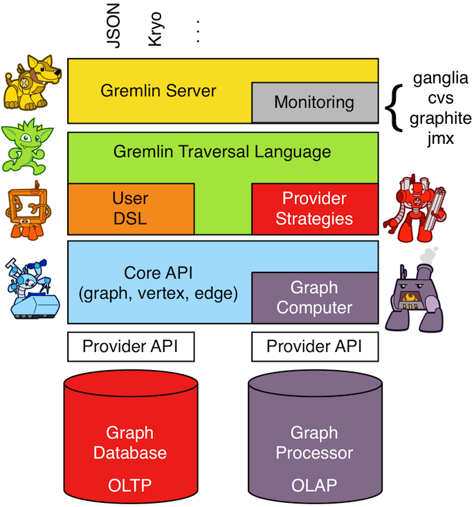 TinkerPop is a framework composed of various interoperable
components. At the foundation there is the core TinkerPop3 API which defines what a Graph, Vertex,
Edge, etc. are. At minimum a graph system provider must implement the core API. Once implemented, the Gremlin
traversal language is available to the graph system’s users. However, the provider can go further and
develop specific TraversalStrategy optimizations that allow the graph system to inspect a
Gremlin query at runtime and optimize it for its particular implementation (e.g. index lookups, step reordering). If
the graph system is a graph processor (i.e. provides OLAP capabilities), the system should implement the
GraphComputer API. This API defines how messages/traversers are passed between communicating
workers (i.e. threads and/or machines). Once implemented, the same Gremlin traversals execute against both the graph
database (OLTP) and the graph processor (OLAP). Note that the Gremlin language interprets the graph in terms of
vertices and edges — i.e. Gremlin is a graph-based domain specific language. Users can create their own domain
specific languages to process the graph in terms of higher-order constructs such as people, companies, and their
various relationships. Finally, Gremlin Server can be leveraged to allow over the wire
communication with the TinkerPop-enabled graph system. Gremlin Server provides a configurable communication interface
along with metrics and monitoring capabilities. In total, this is The TinkerPop.
The Graph
Features
A Feature implementation describes the capabilities of a Graph instance. This interface is implemented by graph
system providers for two purposes:
-
It tells users the capabilities of their
Graphinstance. -
It allows the features they do comply with to be tested against the Gremlin Test Suite - tests that do not comply are "ignored").
The following example in the Gremlin Console shows how to print all the features of a Graph:
gremlin> graph = TinkerGraph.open()
==>tinkergraph[vertices:0 edges:0]
gremlin> graph.features()
==>FEATURES
> GraphFeatures
>-- ConcurrentAccess: false
>-- Transactions: false
>-- Persistence: true
>-- Computer: true
>-- ThreadedTransactions: false
> VariableFeatures
>-- Variables: true
>-- ByteArrayValues: true
>-- BooleanValues: true
>-- ByteValues: true
>-- DoubleValues: true
>-- FloatValues: true
>-- IntegerValues: true
>-- LongValues: true
>-- MapValues: true
>-- MixedListValues: true
>-- SerializableValues: true
>-- StringValues: true
>-- UniformListValues: true
>-- BooleanArrayValues: true
>-- DoubleArrayValues: true
>-- FloatArrayValues: true
>-- IntegerArrayValues: true
>-- LongArrayValues: true
>-- StringArrayValues: true
> VertexFeatures
>-- MetaProperties: true
>-- MultiProperties: true
>-- AddVertices: true
>-- RemoveVertices: true
>-- DuplicateMultiProperties: true
>-- UserSuppliedIds: true
>-- AddProperty: true
>-- RemoveProperty: true
>-- NumericIds: true
>-- StringIds: true
>-- UuidIds: true
>-- CustomIds: false
>-- AnyIds: true
> VertexPropertyFeatures
>-- UserSuppliedIds: true
>-- RemoveProperty: true
>-- NumericIds: true
>-- StringIds: true
>-- UuidIds: true
>-- CustomIds: false
>-- AnyIds: true
>-- Properties: true
>-- ByteArrayValues: true
>-- BooleanValues: true
>-- ByteValues: true
>-- DoubleValues: true
>-- FloatValues: true
>-- IntegerValues: true
>-- LongValues: true
>-- MapValues: true
>-- MixedListValues: true
>-- SerializableValues: true
>-- StringValues: true
>-- UniformListValues: true
>-- BooleanArrayValues: true
>-- DoubleArrayValues: true
>-- FloatArrayValues: true
>-- IntegerArrayValues: true
>-- LongArrayValues: true
>-- StringArrayValues: true
> EdgeFeatures
>-- RemoveEdges: true
>-- AddEdges: true
>-- UserSuppliedIds: true
>-- AddProperty: true
>-- RemoveProperty: true
>-- NumericIds: true
>-- StringIds: true
>-- UuidIds: true
>-- CustomIds: false
>-- AnyIds: true
> EdgePropertyFeatures
>-- Properties: true
>-- ByteArrayValues: true
>-- BooleanValues: true
>-- ByteValues: true
>-- DoubleValues: true
>-- FloatValues: true
>-- IntegerValues: true
>-- LongValues: true
>-- MapValues: true
>-- MixedListValues: true
>-- SerializableValues: true
>-- StringValues: true
>-- UniformListValues: true
>-- BooleanArrayValues: true
>-- DoubleArrayValues: true
>-- FloatArrayValues: true
>-- IntegerArrayValues: true
>-- LongArrayValues: true
>-- StringArrayValues: truegraph = TinkerGraph.open()
graph.features()A common pattern for using features is to check their support prior to performing an operation:
gremlin> graph.features().graph().supportsTransactions()
==>false
gremlin> graph.features().graph().supportsTransactions() ? g.tx().commit() : "no tx"
==>no txgraph.features().graph().supportsTransactions()
graph.features().graph().supportsTransactions() ? g.tx().commit() : "no tx"|
Tip
|
To ensure provider agnostic code, always check feature support prior to usage of a particular function. In that way, the application can behave gracefully in case a particular implementation is provided at runtime that does not support a function being accessed. |
Vertex Properties
 TinkerPop3 introduces the concept of a
TinkerPop3 introduces the concept of a VertexProperty<V>. All the
properties of a Vertex are a VertexProperty. A VertexProperty implements Property and as such, it has a
key/value pair. However, VertexProperty also implements Element and thus, can have a collection of key/value
pairs. Moreover, while an Edge can only have one property of key "name" (for example), a Vertex can have multiple
"name" properties. With the inclusion of vertex properties, two features are introduced which ultimately advance the
graph modelers toolkit:
-
Multiple properties (multi-properties): a vertex property key can have multiple values. For example, a vertex can have multiple "name" properties.
-
Properties on properties (meta-properties): a vertex property can have properties (i.e. a vertex property can have key/value data associated with it).
Possible use cases for meta-properties:
-
Permissions: Vertex properties can have key/value ACL-type permission information associated with them.
-
Auditing: When a vertex property is manipulated, it can have key/value information attached to it saying who the creator, deletor, etc. are.
-
Provenance: The "name" of a vertex can be declared by multiple users. For example, there may be multiple spellings of a name from different sources.
A running example using vertex properties is provided below to demonstrate and explain the API.
gremlin> graph = TinkerGraph.open()
==>tinkergraph[vertices:0 edges:0]
gremlin> g = graph.traversal()
==>graphtraversalsource[tinkergraph[vertices:0 edges:0], standard]
gremlin> v = g.addV().property('name','marko').property('name','marko a. rodriguez').next()
==>v[0]
gremlin> g.V(v).properties('name').count() //1\
==>2
gremlin> v.property(list, 'name', 'm. a. rodriguez') //2\
==>vp[name->m. a. rodriguez]
gremlin> g.V(v).properties('name').count()
==>3
gremlin> g.V(v).properties()
==>vp[name->marko]
==>vp[name->marko a. rodriguez]
==>vp[name->m. a. rodriguez]
gremlin> g.V(v).properties('name')
==>vp[name->marko]
==>vp[name->marko a. rodriguez]
==>vp[name->m. a. rodriguez]
gremlin> g.V(v).properties('name').hasValue('marko')
==>vp[name->marko]
gremlin> g.V(v).properties('name').hasValue('marko').property('acl','private') //3\
==>vp[name->marko]
gremlin> g.V(v).properties('name').hasValue('marko a. rodriguez')
==>vp[name->marko a. rodriguez]
gremlin> g.V(v).properties('name').hasValue('marko a. rodriguez').property('acl','public')
==>vp[name->marko a. rodriguez]
gremlin> g.V(v).properties('name').has('acl','public').value()
==>marko a. rodriguez
gremlin> g.V(v).properties('name').has('acl','public').drop() //4\
gremlin> g.V(v).properties('name').has('acl','public').value()
gremlin> g.V(v).properties('name').has('acl','private').value()
==>marko
gremlin> g.V(v).properties()
==>vp[name->marko]
==>vp[name->m. a. rodriguez]
gremlin> g.V(v).properties().properties() //5\
==>p[acl->private]
gremlin> g.V(v).properties().property('date',2014) //6\
==>vp[name->marko]
==>vp[name->m. a. rodriguez]
gremlin> g.V(v).properties().property('creator','stephen')
==>vp[name->marko]
==>vp[name->m. a. rodriguez]
gremlin> g.V(v).properties().properties()
==>p[date->2014]
==>p[creator->stephen]
==>p[acl->private]
==>p[date->2014]
==>p[creator->stephen]
gremlin> g.V(v).properties('name').valueMap()
==>[date:2014,creator:stephen,acl:private]
==>[date:2014,creator:stephen]
gremlin> g.V(v).property('name','okram') //7\
==>v[0]
gremlin> g.V(v).properties('name')
==>vp[name->okram]
gremlin> g.V(v).values('name') //8\
==>okramgraph = TinkerGraph.open()
g = graph.traversal()
v = g.addV().property('name','marko').property('name','marko a. rodriguez').next()
g.V(v).properties('name').count() //1\
v.property(list, 'name', 'm. a. rodriguez') //2\
g.V(v).properties('name').count()
g.V(v).properties()
g.V(v).properties('name')
g.V(v).properties('name').hasValue('marko')
g.V(v).properties('name').hasValue('marko').property('acl','private') //3\
g.V(v).properties('name').hasValue('marko a. rodriguez')
g.V(v).properties('name').hasValue('marko a. rodriguez').property('acl','public')
g.V(v).properties('name').has('acl','public').value()
g.V(v).properties('name').has('acl','public').drop() //4\
g.V(v).properties('name').has('acl','public').value()
g.V(v).properties('name').has('acl','private').value()
g.V(v).properties()
g.V(v).properties().properties() //5\
g.V(v).properties().property('date',2014) //6\
g.V(v).properties().property('creator','stephen')
g.V(v).properties().properties()
g.V(v).properties('name').valueMap()
g.V(v).property('name','okram') //7\
g.V(v).properties('name')
g.V(v).values('name') //8-
A vertex can have zero or more properties with the same key associated with it.
-
If a property is added with a cardinality of
Cardinality.list, an additional property with the provided key will be added. -
A vertex property can have standard key/value properties attached to it.
-
Vertex property removal is identical to property removal.
-
Gets the meta-properties of each vertex property.
-
A vertex property can have any number of key/value properties attached to it.
-
property(…)will remove all existing key’d properties before adding the new single property (seeVertexProperty.Cardinality). -
If only the value of a property is needed, then
values()can be used.
If the concept of vertex properties is difficult to grasp, then it may be best to think of vertex properties in terms of "literal vertices." A vertex can have an edge to a "literal vertex" that has a single value key/value — e.g. "value=okram." The edge that points to that literal vertex has an edge-label of "name." The properties on the edge represent the literal vertex’s properties. The "literal vertex" can not have any other edges to it (only one from the associated vertex).
|
Tip
|
A toy graph demonstrating all of the new TinkerPop3 graph structure features is available at
TinkerFactory.createTheCrew() and data/tinkerpop-crew*. This graph demonstrates multi-properties and meta-properties.
|
gremlin> g.V().as('a').
properties('location').as('b').
hasNot('endTime').as('c').
select('a','b','c').by('name').by(value).by('startTime') // determine the current location of each person
==>[a:marko,b:santa fe,c:2005]
==>[a:stephen,b:purcellville,c:2006]
==>[a:matthias,b:seattle,c:2014]
==>[a:daniel,b:aachen,c:2009]
gremlin> g.V().has('name','gremlin').inE('uses').
order().by('skill',asc).as('a').
outV().as('b').
select('a','b').by('skill').by('name') // rank the users of gremlin by their skill level
==>[a:3,b:matthias]
==>[a:4,b:marko]
==>[a:5,b:stephen]
==>[a:5,b:daniel]g.V().as('a').
properties('location').as('b').
hasNot('endTime').as('c').
select('a','b','c').by('name').by(value).by('startTime') // determine the current location of each person
g.V().has('name','gremlin').inE('uses').
order().by('skill',asc).as('a').
outV().as('b').
select('a','b').by('skill').by('name') // rank the users of gremlin by their skill levelGraph Variables
TinkerPop3 introduces the concept of Graph.Variables. Variables are key/value pairs associated with the graph
itself — in essence, a Map<String,Object>. These variables are intended to store metadata about the graph. Example
use cases include:
-
Schema information: What do the namespace prefixes resolve to and when was the schema last modified?
-
Global permissions: What are the access rights for particular groups?
-
System user information: Who are the admins of the system?
An example of graph variables in use is presented below:
gremlin> graph = TinkerGraph.open()
==>tinkergraph[vertices:0 edges:0]
gremlin> graph.variables()
==>variables[size:0]
gremlin> graph.variables().set('systemAdmins',['stephen','peter','pavel'])
gremlin> graph.variables().set('systemUsers',['matthias','marko','josh'])
gremlin> graph.variables().keys()
==>systemAdmins
==>systemUsers
gremlin> graph.variables().get('systemUsers')
==>Optional[[matthias, marko, josh]]
gremlin> graph.variables().get('systemUsers').get()
==>matthias
==>marko
==>josh
gremlin> graph.variables().remove('systemAdmins')
gremlin> graph.variables().keys()
==>systemUsersgraph = TinkerGraph.open()
graph.variables()
graph.variables().set('systemAdmins',['stephen','peter','pavel'])
graph.variables().set('systemUsers',['matthias','marko','josh'])
graph.variables().keys()
graph.variables().get('systemUsers')
graph.variables().get('systemUsers').get()
graph.variables().remove('systemAdmins')
graph.variables().keys()|
Important
|
Graph variables are not intended to be subject to heavy, concurrent mutation nor to be used in complex computations. The intention is to have a location to store data about the graph for administrative purposes. |
Graph Transactions
A database transaction
represents a unit of work to execute against the database. Transactions are controlled by an implementation of the
Transaction interface and that object can be obtained from the Graph interface using the tx() method. It is
important to note that the Transaction object does not represent a "transaction" itself. It merely exposes the
methods for working with transactions (e.g. committing, rolling back, etc).
Most Graph implementations that supportsTransactions will implement an "automatic" ThreadLocal transaction,
which means that when a read or write occurs after the Graph is instantiated, a transaction is automatically
started within that thread. There is no need to manually call a method to "create" or "start" a transaction. Simply
modify the graph as required and call graph.tx().commit() to apply changes or graph.tx().rollback() to undo them.
When the next read or write action occurs against the graph, a new transaction will be started within that current
thread of execution.
When using transactions in this fashion, especially in web application (e.g. HTTP server), it is important to ensure that transactions do not leak from one request to the next. In other words, unless a client is somehow bound via session to process every request on the same server thread, every request must be committed or rolled back at the end of the request. By ensuring that the request encapsulates a transaction, it ensures that a future request processed on a server thread is starting in a fresh transactional state and will not have access to the remains of one from an earlier request. A good strategy is to rollback a transaction at the start of a request, so that if it so happens that a transactional leak does occur between requests somehow, a fresh transaction is assured by the fresh request.
|
Tip
|
The tx() method is on the Graph interface, but it is also available on the TraversalSource spawned from a
Graph. Calls to TraversalSource.tx() are proxied through to the underlying Graph as a convenience.
|
|
Warning
|
TinkerPop provides for basic transaction control, however, like many aspects of TinkerPop, it is up to the graph system provider to choose the specific aspects of how their implementation will work and how it fits into the TinkerPop stack. Be sure to understand the transaction semantics of the specific graph implementation that is being utilized as it may present differing functionality than described here. |
Configuring
Determining when a transaction starts is dependent upon the behavior assigned to the Transaction. It is up to the
Graph implementation to determine the default behavior and unless the implementation doesn’t allow it, the behavior
itself can be altered via these Transaction methods:
public Transaction onReadWrite(Consumer<Transaction> consumer);
public Transaction onClose(Consumer<Transaction> consumer);Providing a Consumer function to onReadWrite allows definition of how a transaction starts when a read or a write
occurs. Transaction.READ_WRITE_BEHAVIOR contains pre-defined Consumer functions to supply to the onReadWrite
method. It has two options:
-
AUTO- automatic transactions where the transaction is started implicitly to the read or write operation -
MANUAL- manual transactions where it is up to the user to explicitly open a transaction, throwing an exception if the transaction is not open
Providing a Consumer function to onClose allows configuration of how a transaction is handled when
Transaction.close() is called. Transaction.CLOSE_BEHAVIOR has several pre-defined options that can be supplied to
this method:
-
COMMIT- automatically commit an open transaction -
ROLLBACK- automatically rollback an open transaction -
MANUAL- throw an exception if a transaction is open, forcing the user to explicitly close the transaction
|
Important
|
As transactions are ThreadLocal in nature, so are the transaction configurations for onReadWrite and
onClose.
|
Once there is an understanding for how transactions are configured, most of the rest of the Transaction interface
is self-explanatory. Note that Neo4j-Gremlin is used for the examples to follow as TinkerGraph does
not support transactions.
gremlin> graph = Neo4jGraph.open('/tmp/neo4j')
==>neo4jgraph[EmbeddedGraphDatabase [/tmp/neo4j]]
gremlin> g = graph.traversal()
==>graphtraversalsource[neo4jgraph[community single [/tmp/neo4j]], standard]
gremlin> graph.features()
==>FEATURES
> GraphFeatures
>-- Transactions: true //1
>-- Computer: false
>-- Persistence: true
...
gremlin> g.tx().onReadWrite(Transaction.READ_WRITE_BEHAVIOR.AUTO) //2
==>org.apache.tinkerpop.gremlin.neo4j.structure.Neo4jGraph$Neo4jTransaction@1c067c0d
gremlin> g.addV("person").("name","stephen") //3
==>v[0]
gremlin> g.tx().commit() //4
==>null
gremlin> g.tx().onReadWrite(Transaction.READ_WRITE_BEHAVIOR.MANUAL) //5
==>org.apache.tinkerpop.gremlin.neo4j.structure.Neo4jGraph$Neo4jTransaction@1c067c0d
gremlin> g.tx().isOpen()
==>false
gremlin> g.addV("person").("name","marko") //6
Open a transaction before attempting to read/write the transaction
gremlin> g.tx().open() //7
==>null
gremlin> g.addV("person").("name","marko") //8
==>v[1]
gremlin> g.tx().commit()
==>null-
Check
featuresto ensure that the graph supports transactions. -
By default,
Neo4jGraphis configured with "automatic" transactions, so it is set here for demonstration purposes only. -
When the vertex is added, the transaction is automatically started. From this point, more mutations can be staged or other read operations executed in the context of that open transaction.
-
Calling
commitfinalizes the transaction. -
Change transaction behavior to require manual control.
-
Adding a vertex now results in failure because the transaction was not explicitly opened.
-
Explicitly open a transaction.
-
Adding a vertex now succeeds as the transaction was manually opened.
|
Note
|
It may be important to consult the documentation of the Graph implementation you are using when it comes to the
specifics of how transactions will behave. TinkerPop allows some latitude in this area and implementations may not have
the exact same behaviors and ACID guarantees.
|
Threaded Transactions
Most Graph implementations that support transactions do so in a ThreadLocal manner, where the current transaction
is bound to the current thread of execution. Consider the following example to demonstrate:
GraphTraversalSource g = graph.traversal();
g.addV("person").("name","stephen").iterate();
Thread t1 = new Thread(() -> {
g.addV("person").("name","josh").iterate();
});
Thread t2 = new Thread(() -> {
g.addV("person").("name","marko").iterate();
});
t1.start()
t2.start()
t1.join()
t2.join()
g.tx().commit();The above code shows three vertices added to graph in three different threads: the current thread, t1 and
t2. One might expect that by the time this body of code finished executing, that there would be three vertices
persisted to the Graph. However, given the ThreadLocal nature of transactions, there really were three separate
transactions created in that body of code (i.e. one for each thread of execution) and the only one committed was the
first call to addV() in the primary thread of execution. The other two calls to that method within t1 and t2
were never committed and thus orphaned.
A Graph that supportsThreadedTransactions is one that allows for a Graph to operate outside of that constraint,
thus allowing multiple threads to operate within the same transaction. Therefore, if there was a need to have three
different threads operating within the same transaction, the above code could be re-written as follows:
Graph threaded = graph.tx().createThreadedTx();
GraphTraversalSource g = graph.traversal();
g.addV("person").("name","stephen").iterate();
Thread t1 = new Thread(() -> {
threaded.addV("person").("name","josh").iterate();
});
Thread t2 = new Thread(() -> {
threaded.addV("person").("name","marko").iterate();
});
t1.start()
t2.start()
t1.join()
t2.join()
g.tx().commit();In the above case, the call to graph.tx().createThreadedTx() creates a new Graph instance that is unbound from the
ThreadLocal transaction, thus allowing each thread to operate on it in the same context. In this case, there would
be three separate vertices persisted to the Graph.
Gremlin I/O
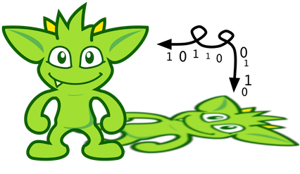 The task of getting data in and out of Graph instances is the job of
the Gremlin I/O packages. Gremlin I/O provides two interfaces for reading and writing Graph instances: GraphReader
and GraphWriter. These interfaces expose methods that support:
-
Reading and writing an entire
Graph -
Reading and writing a
Traversal<Vertex>as adjacency list format -
Reading and writing a single
Vertex(with and without associatedEdgeobjects) -
Reading and writing a single
Edge -
Reading and writing a single
VertexProperty -
Reading and writing a single
Property -
Reading and writing an arbitrary
Object
In all cases, these methods operate in the currency of InputStream and OutputStream objects, allowing graphs and
their related elements to be written to and read from files, byte arrays, etc. The Graph interface offers the io
method, which provides access to "reader/writer builder" objects that are pre-configured with serializers provided by
the Graph, as well as helper methods for the various I/O capabilities. Unless there are very advanced requirements
for the serialization process, it is always best to utilize the methods on the Io interface to construct
GraphReader and GraphWriter instances, as the implementation may provide some custom settings that would otherwise
have to be configured manually by the user to do the serialization.
It is up to the implementations of the GraphReader and GraphWriter interfaces to choose the methods they
implement and the manner in which they work together. The only characteristic enforced and expected is that the write
methods should produce output that is compatible with the corresponding read method. For example, the output of
writeVertices should be readable as input to readVertices and the output of writeProperty should be readable as
input to readProperty.
|
Note
|
Additional documentation for TinkerPop IO formats can be found in the IO Reference. |
GraphML Reader/Writer
 The GraphML file format is a
common XML-based representation of a graph. It is widely supported by graph-related tools and libraries making it a
solid interchange format for TinkerPop. In other words, if the intent is to work with graph data in conjunction with
applications outside of TinkerPop, GraphML may be the best choice to do that. Common use cases might be:
The GraphML file format is a
common XML-based representation of a graph. It is widely supported by graph-related tools and libraries making it a
solid interchange format for TinkerPop. In other words, if the intent is to work with graph data in conjunction with
applications outside of TinkerPop, GraphML may be the best choice to do that. Common use cases might be:
As GraphML is a specification for the serialization of an entire graph and not the individual elements of a graph, methods that support input and output of single vertices, edges, etc. are not supported.
|
Warning
|
GraphML is a "lossy" format in that it only supports primitive values for properties and does not have
support for Graph variables. It will use toString to serialize property values outside of those primitives.
|
|
Warning
|
GraphML as a specification allows for <edge> and <node> elements to appear in any order. Most software
that writes GraphML (including as TinkerPop’s GraphMLWriter) write <node> elements before <edge> elements. However it
is important to note that GraphMLReader will read this data in order and order can matter. This is because TinkerPop
does not allow the vertex label to be changed after the vertex has been created. Therefore, if an <edge> element
comes before the <node>, the label on the vertex will be ignored. It is thus better to order <node> elements in the
GraphML to appear before all <edge> elements if vertex labels are important to the graph.
|
The following code shows how to write a Graph instance to file called tinkerpop-modern.xml and then how to read
that file back into a different instance:
Graph graph = TinkerFactory.createModern();
graph.io(IoCore.graphml()).writeGraph("tinkerpop-modern.xml");
Graph newGraph = TinkerGraph.open();
newGraph.io(IoCore.graphml()).readGraph("tinkerpop-modern.xml");If a custom configuration is required, then have the Graph generate a GraphReader or GraphWriter "builder" instance:
Graph graph = TinkerFactory.createModern();
try (OutputStream os = new FileOutputStream("tinkerpop-modern.xml")) {
graph.io(IoCore.graphml()).writer().normalize(true).create().writeGraph(os, graph);
}
Graph newGraph = TinkerGraph.open();
try (InputStream stream = new FileInputStream("tinkerpop-modern.xml")) {
newGraph.io(IoCore.graphml()).reader().create().readGraph(stream, newGraph);
}GraphML was a supported format in TinkerPop 2.x, but there were several issues that made it inconsistent with the
specification that were corrected for 3.x. As a result, attempting to read a GraphML file generated by 2.x with the
3.x GraphMLReader will result in error. To help with this problem, an XSLT file is provided as a resource in
gremlin-core which will transform 2.x GraphML to 3.x GraphML. It can be used as follows:
import javax.xml.parsers.DocumentBuilderFactory;
import javax.xml.transform.TransformerFactory;
import javax.xml.transform.dom.DOMSource;
import javax.xml.transform.stream.StreamSource;
import javax.xml.transform.stream.StreamResult;
InputStream stylesheet = Thread.currentThread().getContextClassLoader().getResourceAsStream("tp2-to-tp3-graphml.xslt");
File datafile = new File('/tmp/tp2-graphml.xml');
File outfile = new File('/tmp/tp3-graphml.xml');
TransformerFactory tFactory = TransformerFactory.newInstance();
StreamSource stylesource = new StreamSource(stylesheet);
Transformer transformer = tFactory.newTransformer(stylesource);
StreamSource source = new StreamSource(datafile);
StreamResult result = new StreamResult(new FileWriter(outfile));
transformer.transform(source, result);GraphSON Reader/Writer
GraphSON is a JSON-based format extended from earlier versions of TinkerPop. It is important to note that TinkerPop3’s GraphSON is not backwards compatible with prior TinkerPop GraphSON versions. GraphSON has some support from graph-related application outside of TinkerPop, but it is generally best used in two cases:
-
A text format of the graph or its elements is desired (e.g. debugging, usage in source control, etc.)
-
The graph or its elements need to be consumed by code that is not JVM-based (e.g. JavaScript, Python, .NET, etc.)
GraphSON supports all of the GraphReader and GraphWriter interface methods and can therefore read or write an
entire Graph, vertices, arbitrary objects, etc. The following code shows how to write a Graph instance to file
called tinkerpop-modern.json and then how to read that file back into a different instance:
Graph graph = TinkerFactory.createModern();
graph.io(graphson()).writeGraph("tinkerpop-modern.json");
Graph newGraph = TinkerGraph.open();
newGraph.io(graphson()).readGraph("tinkerpop-modern.json");|
Note
|
Using graphson(), which is a static helper method of IoCore, will default to the most current version of GraphSON which is 3.0.
|
If a custom configuration is required, then have the Graph generate a GraphReader or GraphWriter "builder" instance:
Graph graph = TinkerFactory.createModern();
try (OutputStream os = new FileOutputStream("tinkerpop-modern.json")) {
GraphSONMapper mapper = graph.io(IoCore.graphson()).mapper().normalize(true).create()
graph.io(graphson()).writer().mapper(mapper).create().writeGraph(os, graph)
}
Graph newGraph = TinkerGraph.open();
try (InputStream stream = new FileInputStream("tinkerpop-modern.json")) {
newGraph.io(graphson()).reader().create().readGraph(stream, newGraph);
}The following example shows how a single Vertex is written to GraphSON using the Gremlin Console:
gremlin> graph = TinkerFactory.createModern()
==>tinkergraph[vertices:6 edges:6]
gremlin> g = graph.traversal()
==>graphtraversalsource[tinkergraph[vertices:6 edges:6], standard]
gremlin> f = new ByteArrayOutputStream()
==>
gremlin> graph.io(graphson()).writer().create().writeVertex(f, g.V(1).next(), BOTH)
gremlin> f.close()graph = TinkerFactory.createModern()
g = graph.traversal()
f = new ByteArrayOutputStream()
graph.io(graphson()).writer().create().writeVertex(f, g.V(1).next(), BOTH)
f.close()The following GraphSON example shows the output of GraphSONWriter.writeVertex() with associated edges:
{
"id": {
"@type": "g:Int32",
"@value": 1
},
"label": "person",
"outE": {
"created": [{
"id": {
"@type": "g:Int32",
"@value": 9
},
"inV": {
"@type": "g:Int32",
"@value": 3
},
"properties": {
"weight": {
"@type": "g:Double",
"@value": 0.4
}
}
}],
"knows": [{
"id": {
"@type": "g:Int32",
"@value": 7
},
"inV": {
"@type": "g:Int32",
"@value": 2
},
"properties": {
"weight": {
"@type": "g:Double",
"@value": 0.5
}
}
}, {
"id": {
"@type": "g:Int32",
"@value": 8
},
"inV": {
"@type": "g:Int32",
"@value": 4
},
"properties": {
"weight": {
"@type": "g:Double",
"@value": 1.0
}
}
}]
},
"properties": {
"name": [{
"id": {
"@type": "g:Int64",
"@value": 0
},
"value": "marko"
}],
"age": [{
"id": {
"@type": "g:Int64",
"@value": 1
},
"value": {
"@type": "g:Int32",
"@value": 29
}
}]
}
}GraphSON has several versions and each has differences that prevent complete compatibility with one another. While the
default version provided by IoCore.graphson() is recommended, it is possible to make changes to revert to an earlier
version. The following shows an example of how to use 1.0 (with type embedding):
gremlin> graph = TinkerFactory.createModern()
==>tinkergraph[vertices:6 edges:6]
gremlin> g = graph.traversal()
==>graphtraversalsource[tinkergraph[vertices:6 edges:6], standard]
gremlin> f = new ByteArrayOutputStream()
==>
gremlin> mapper = graph.io(GraphSONIo.build(GraphSONVersion.V1_0)).mapper().typeInfo(TypeInfo.PARTIAL_TYPES).create()
==>org.apache.tinkerpop.gremlin.structure.io.graphson.GraphSONMapper@1fee4278
gremlin> graph.io(GraphSONIo.build(GraphSONVersion.V1_0)).writer().mapper(mapper).create().writeVertex(f, g.V(1).next(), BOTH)
gremlin> f.close()graph = TinkerFactory.createModern()
g = graph.traversal()
f = new ByteArrayOutputStream()
mapper = graph.io(GraphSONIo.build(GraphSONVersion.V1_0)).mapper().typeInfo(TypeInfo.PARTIAL_TYPES).create()
graph.io(GraphSONIo.build(GraphSONVersion.V1_0)).writer().mapper(mapper).create().writeVertex(f, g.V(1).next(), BOTH)
f.close()|
Note
|
Additional documentation for GraphSON can be found in the IO Reference. |
|
Important
|
When using the extended type system in Gremlin Server, support for these types when used in the context of Gremlin Language Variants is dependent on the programming language, the driver and its serializers. These implementations are only required to support the core types and not the extended ones. |
Here’s the same previous example of GraphSON 1.0, but with GraphSON 2.0:
gremlin> graph = TinkerFactory.createModern()
==>tinkergraph[vertices:6 edges:6]
gremlin> g = graph.traversal()
==>graphtraversalsource[tinkergraph[vertices:6 edges:6], standard]
gremlin> f = new ByteArrayOutputStream()
==>
gremlin> mapper = graph.io(graphson()).mapper().version(GraphSONVersion.V2_0).create()
==>org.apache.tinkerpop.gremlin.structure.io.graphson.GraphSONMapper@134c38
gremlin> graph.io(graphson()).writer().mapper(mapper).create().writeVertex(f, g.V(1).next(), BOTH)
gremlin> f.close()graph = TinkerFactory.createModern()
g = graph.traversal()
f = new ByteArrayOutputStream()
mapper = graph.io(graphson()).mapper().version(GraphSONVersion.V2_0).create()
graph.io(graphson()).writer().mapper(mapper).create().writeVertex(f, g.V(1).next(), BOTH)
f.close()Creating a GraphSON 2.0 mapper is done by calling .version(GraphSONVersion.V2_0) on the mapper builder. Here’s is the
example output from the code above:
{
"@type": "g:Vertex",
"@value": {
"id": {
"@type": "g:Int32",
"@value": 1
},
"label": "person",
"properties": {
"name": [{
"@type": "g:VertexProperty",
"@value": {
"id": {
"@type": "g:Int64",
"@value": 0
},
"value": "marko",
"label": "name"
}
}],
"uuid": [{
"@type": "g:VertexProperty",
"@value": {
"id": {
"@type": "g:Int64",
"@value": 12
},
"value": {
"@type": "g:UUID",
"@value": "829c7ddb-3831-4687-a872-e25201230cd3"
},
"label": "uuid"
}
}],
"age": [{
"@type": "g:VertexProperty",
"@value": {
"id": {
"@type": "g:Int64",
"@value": 1
},
"value": {
"@type": "g:Int32",
"@value": 29
},
"label": "age"
}
}]
}
}
}Types can be disabled when creating a GraphSON 2.0 Mapper with:
graph.io(graphson()).mapper().
version(GraphSONVersion.V2_0).
typeInfo(GraphSONMapper.TypeInfo.NO_TYPES).create()By disabling types, the JSON payload produced will lack the extra information that is written for types. Please note, disabling types can be unsafe with regards to the written data in that types can be lost.
Gryo Reader/Writer
 Kryo is a popular
serialization package for the JVM. Gremlin-Kryo is a binary
Kryo is a popular
serialization package for the JVM. Gremlin-Kryo is a binary Graph serialization format for use on the JVM by JVM
languages. It is designed to be space efficient, non-lossy and is promoted as the standard format to use when working
with graph data inside of the TinkerPop stack. A list of common use cases is presented below:
-
Migration from one Gremlin Structure implementation to another (e.g.
TinkerGraphtoNeo4jGraph) -
Serialization of individual graph elements to be sent over the network to another JVM.
-
Backups of in-memory graphs or subgraphs.
|
Warning
|
When migrating between Gremlin Structure implementations, Kryo may not lose data, but it is important to
consider the features of each Graph and whether or not the data types supported in one will be supported in the
other. Failure to do so, may result in errors.
|
Kryo supports all of the GraphReader and GraphWriter interface methods and can therefore read or write an entire
Graph, vertices, edges, etc. The following code shows how to write a Graph instance to file called
tinkerpop-modern.kryo and then how to read that file back into a different instance:
Graph graph = TinkerFactory.createModern();
graph.io(gryo()).writeGraph("tinkerpop-modern.kryo");
Graph newGraph = TinkerGraph.open();
newGraph.io(gryo()).readGraph("tinkerpop-modern.kryo");|
Note
|
Using gryo(), which is a static helper method of IoCore, will default to the most current version of Gryo which is 3.0.
|
If a custom configuration is required, then have the Graph generate a GraphReader or GraphWriter "builder" instance:
Graph graph = TinkerFactory.createModern();
try (OutputStream os = new FileOutputStream("tinkerpop-modern.kryo")) {
graph.io(GryoIo.build(GryoVersion.V1_0)).writer().create().writeGraph(os, graph);
}
Graph newGraph = TinkerGraph.open();
try (InputStream stream = new FileInputStream("tinkerpop-modern.kryo")) {
newGraph.io(GryoIo.build(GryoVersion.V1_0)).reader().create().readGraph(stream, newGraph);
}|
Note
|
The preferred extension for files names produced by Gryo is .kryo.
|
TinkerPop2 Data Migration
 For those using TinkerPop2, migrating to TinkerPop3 will mean a number
of programming changes, but may also require a migration of the data depending on the graph implementation. For
example, trying to open
For those using TinkerPop2, migrating to TinkerPop3 will mean a number
of programming changes, but may also require a migration of the data depending on the graph implementation. For
example, trying to open TinkerGraph data from TinkerPop2 with TinkerPop3 code will not work, however opening a
TinkerPop2 Neo4jGraph with a TinkerPop3 Neo4jGraph should work provided there aren’t Neo4j version compatibility
mismatches preventing the read.
If such a situation arises that a particular TinkerPop2 Graph can not be read by TinkerPop3, a "legacy" data
migration approach exists. The migration involves writing the TinkerPop2 Graph to GraphSON, then reading it to
TinkerPop3 with the LegacyGraphSONReader (a limited implementation of the GraphReader interface).
The following represents an example migration of the "classic" toy graph. In this example, the "classic" graph is saved to GraphSON using TinkerPop2.
gremlin> Gremlin.version()
==>2.5.z
gremlin> graph = TinkerGraphFactory.createTinkerGraph()
==>tinkergraph[vertices:6 edges:6]
gremlin> GraphSONWriter.outputGraph(graph,'/tmp/tp2.json',GraphSONMode.EXTENDED)
==>nullThe above console session uses the gremlin-groovy distribution from TinkerPop2. It is important to generate the
tp2.json file using the EXTENDED mode as it will include data types when necessary which will help limit
"lossiness" on the TinkerPop3 side when imported. Once tp2.json is created, it can then be imported to a TinkerPop3
Graph.
gremlin> Gremlin.version()
==>3.3.4
gremlin> graph = TinkerGraph.open()
==>tinkergraph[vertices:0 edges:0]
gremlin> r = LegacyGraphSONReader.build().create()
==>org.apache.tinkerpop.gremlin.structure.io.graphson.LegacyGraphSONReader@64337702
gremlin> r.readGraph(new FileInputStream('/tmp/tp2.json'), graph)
==>null
gremlin> g = graph.traversal()
==>graphtraversalsource[tinkergraph[vertices:6 edges:6], standard]
gremlin> g.E()
==>e[11][4-created->3]
==>e[12][6-created->3]
==>e[7][1-knows->2]
==>e[8][1-knows->4]
==>e[9][1-created->3]
==>e[10][4-created->5]Namespace Conventions
End users, graph system providers, GraphComputer algorithm designers,
GremlinPlugin creators, etc. all leverage properties on elements to store information. There are
a few conventions that should be respected when naming property keys to ensure that conflicts between these
stakeholders do not conflict.
-
End users are granted the flat namespace (e.g.
name,age,location) to key their properties and label their elements. -
Graph system providers are granted the hidden namespace (e.g.
~metadata) to key their properties and labels. Data keyed as such is only accessible via the graph system implementation and no other stakeholders are granted read nor write access to data prefixed with "~" (seeGraph.Hidden). Test coverage and exceptions exist to ensure that graph systems respect this hard boundary. -
VertexProgramandMapReducedevelopers should leverage qualified namespaces particular to their domain (e.g.mydomain.myvertexprogram.computedata). -
GremlinPlugincreators should prefix their plugin name with their domain (e.g.mydomain.myplugin).
|
Important
|
TinkerPop uses tinkerpop. and gremlin. as the prefixes for provided strategies, vertex programs, map
reduce implementations, and plugins.
|
The only truly protected namespace is the hidden namespace provided to graph systems. From there, it’s up to engineers to respect the namespacing conventions presented.
The Traversal
At the most general level there is Traversal<S,E> which implements Iterator<E>, where the S stands for start and
the E stands for end. A traversal is composed of four primary components:
-
Step<S,E>: an individual function applied toSto yieldE. Steps are chained within a traversal. -
TraversalStrategy: interceptor methods to alter the execution of the traversal (e.g. query re-writing). -
TraversalSideEffects: key/value pairs that can be used to store global information about the traversal. -
Traverser<T>: the object propagating through theTraversalcurrently representing an object of typeT.
The classic notion of a graph traversal is provided by GraphTraversal<S,E> which extends Traversal<S,E>.
GraphTraversal provides an interpretation of the graph data in terms of vertices, edges, etc. and thus, a graph
traversal DSL.
|
Important
|
The underlying Step implementations provided by TinkerPop should encompass most of the functionality
required by a DSL author. It is important that DSL authors leverage the provided steps as then the common optimization
and decoration strategies can reason on the underlying traversal sequence. If new steps are introduced, then common
traversal strategies may not function properly.
|
Graph Traversal Steps

A GraphTraversal<S,E> is spawned from a GraphTraversalSource. It can also be spawned anonymously (i.e. empty)
via __. A graph traversal is composed of an ordered list of steps. All the steps provided by GraphTraversal
inherit from the more general forms diagrammed above. A list of all the steps (and their descriptions) are provided
in the TinkerPop3 GraphTraversal JavaDoc.
The following subsections will demonstrate the GraphTraversal steps using the Gremlin Console.
|
Important
|
The basics for starting a traversal are described in The Graph Process section as well as in the Getting Started tutorial. |
|
Note
|
To reduce the verbosity of the expression, it is good to
import static org.apache.tinkerpop.gremlin.process.traversal.dsl.graph..*. This way, instead of doing .inE()
for an anonymous traversal, it is possible to simply write inE(). Be aware of language-specific reserved keywords
when using anonymous traversals. For example, in and as are reserved keywords in Groovy, therefore you must use
the verbose syntax .in() and .as() to avoid collisions.
|
General Steps
There are five general steps, each having a traversal and a lambda representation, by which all other specific steps described later extend.
| Step | Description |
|---|---|
|
map the traverser to some object of type |
|
map the traverser to an iterator of |
|
map the traverser to either true or false, where false will not pass the traverser to the next step. |
|
perform some operation on the traverser and pass it to the next step. |
|
split the traverser to all the traversals indexed by the |
|
Warning
|
Lambda steps are presented for educational purposes as they represent the foundational constructs of the Gremlin language. In practice, lambda steps should be avoided in favor of their traversals representation and traversal verification strategies exist to disallow their use unless explicitly "turned off." For more information on the problems with lambdas, please read A Note on Lambdas. |
The Traverser<S> object provides access to:
-
The current traversed
Sobject —Traverser.get(). -
The current path traversed by the traverser —
Traverser.path().-
A helper shorthand to get a particular path-history object —
Traverser.path(String) == Traverser.path().get(String).
-
-
The number of times the traverser has gone through the current loop —
Traverser.loops(). -
The number of objects represented by this traverser —
Traverser.bulk(). -
The local data structure associated with this traverser —
Traverser.sack(). -
The side-effects associated with the traversal —
Traverser.sideEffects().-
A helper shorthand to get a particular side-effect —
Traverser.sideEffect(String) == Traverser.sideEffects().get(String).
-

gremlin> g.V(1).out().values('name') //1\
==>lop
==>vadas
==>josh
gremlin> g.V(1).out().map {it.get().value('name')} //2\
==>lop
==>vadas
==>josh
gremlin> g.V(1).out().map(values('name')) //3\
==>lop
==>vadas
==>joshg.V(1).out().values('name') //1\
g.V(1).out().map {it.get().value('name')} //2\
g.V(1).out().map(values('name')) //3-
An outgoing traversal from vertex 1 to the name values of the adjacent vertices.
-
The same operation, but using a lambda to access the name property values.
-
Again the same operation, but using the traversal representation of
map().
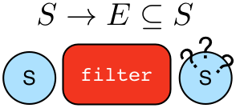
gremlin> g.V().filter {it.get().label() == 'person'} //1\
==>v[1]
==>v[2]
==>v[4]
==>v[6]
gremlin> g.V().filter(label().is('person')) //2\
==>v[1]
==>v[2]
==>v[4]
==>v[6]
gremlin> g.V().hasLabel('person') //3\
==>v[1]
==>v[2]
==>v[4]
==>v[6]g.V().filter {it.get().label() == 'person'} //1\
g.V().filter(label().is('person')) //2\
g.V().hasLabel('person') //3-
A filter that only allows the vertex to pass if it has the "person" label
-
The same operation, but using the traversal representation of
filter(). -
The more specific
has()-step is implemented as afilter()with respective predicate.

gremlin> g.V().hasLabel('person').sideEffect(System.out.&println) //1\
v[1]
==>v[1]
v[2]
==>v[2]
v[4]
==>v[4]
v[6]
==>v[6]
gremlin> g.V().sideEffect(outE().count().store("o")).
sideEffect(inE().count().store("i")).cap("o","i") //2\
==>[i:[0,0,1,1,1,3],o:[3,0,0,0,2,1]]g.V().hasLabel('person').sideEffect(System.out.&println) //1\
g.V().sideEffect(outE().count().store("o")).
sideEffect(inE().count().store("i")).cap("o","i") //2-
Whatever enters
sideEffect()is passed to the next step, but some intervening process can occur. -
Compute the out- and in-degree for each vertex. Both
sideEffect()are fed with the same vertex.

gremlin> g.V().branch {it.get().value('name')}.
option('marko', values('age')).
option(none, values('name')) //1\
==>29
==>vadas
==>lop
==>josh
==>ripple
==>peter
gremlin> g.V().branch(values('name')).
option('marko', values('age')).
option(none, values('name')) //2\
==>29
==>vadas
==>lop
==>josh
==>ripple
==>peter
gremlin> g.V().choose(has('name','marko'),
values('age'),
values('name')) //3\
==>29
==>vadas
==>lop
==>josh
==>ripple
==>peterg.V().branch {it.get().value('name')}.
option('marko', values('age')).
option(none, values('name')) //1\
g.V().branch(values('name')).
option('marko', values('age')).
option(none, values('name')) //2\
g.V().choose(has('name','marko'),
values('age'),
values('name')) //3-
If the vertex is "marko", get his age, else get the name of the vertex.
-
The same operation, but using the traversal representing of
branch(). -
The more specific boolean-based
choose()-step is implemented as abranch().
Terminal Steps
Typically, when a step is concatenated to a traversal a traversal is returned. In this way, a traversal is built up in a fluent, monadic fashion. However, some steps do not return a traversal, but instead, execute the traversal and return a result. These steps are known as terminal steps (terminal) and they are explained via the examples below.
gremlin> g.V().out('created').hasNext() //1\
==>true
gremlin> g.V().out('created').next() //2\
==>v[3]
gremlin> g.V().out('created').next(2) //3\
==>v[3]
==>v[5]
gremlin> g.V().out('nothing').tryNext() //4\
==>Optional.empty
gremlin> g.V().out('created').toList() //5\
==>v[3]
==>v[5]
==>v[3]
==>v[3]
gremlin> g.V().out('created').toSet() //6\
==>v[3]
==>v[5]
gremlin> g.V().out('created').toBulkSet() //7\
==>v[3]
==>v[3]
==>v[3]
==>v[5]
gremlin> results = ['blah',3]
==>blah
==>3
gremlin> g.V().out('created').fill(results) //8\
==>blah
==>3
==>v[3]
==>v[5]
==>v[3]
==>v[3]
gremlin> g.addV('person').iterate() //9\g.V().out('created').hasNext() //1\
g.V().out('created').next() //2\
g.V().out('created').next(2) //3\
g.V().out('nothing').tryNext() //4\
g.V().out('created').toList() //5\
g.V().out('created').toSet() //6\
g.V().out('created').toBulkSet() //7\
results = ['blah',3]
g.V().out('created').fill(results) //8\
g.addV('person').iterate() //9-
hasNext()determines whether there are available results. -
next()will return the next result. -
next(n)will return the nextnresults in a list. -
tryNext()will return anOptionaland thus, is a composite ofhasNext()/next(). -
toList()will return all results in a list. -
toSet()will return all results in a set (thus, duplicates removed). -
toBulkSet()will return all results in a weighted set (thus, duplicates preserved via weighting). -
fill(collection)will put all results in the provided collection and return the collection when complete. -
iterate()does not exactly fit the definition of a terminal step in that it doesn’t return a result, but still returns a traversal - it does however behave as a terminal step in that it iterates the traversal and generates side effects without returning the actual result.
Finally, explain()-step is also a terminal step and is described in its own section.
AddEdge Step
Reasoning is the process of making explicit what is implicit
in the data. What is explicit in a graph are the objects of the graph — i.e. vertices and edges. What is implicit
in the graph is the traversal. In other words, traversals expose meaning where the meaning is determined by the
traversal definition. For example, take the concept of a "co-developer." Two people are co-developers if they have
worked on the same project together. This concept can be represented as a traversal and thus, the concept of
"co-developers" can be derived. Moreover, what was once implicit can be made explicit via the addE()-step
(map/sideEffect).

gremlin> g.V(1).as('a').out('created').in('created').where(neq('a')).
addE('co-developer').from('a').property('year',2009) //1\
==>e[13][1-co-developer->4]
==>e[14][1-co-developer->6]
gremlin> g.V(3,4,5).aggregate('x').has('name','josh').as('a').
select('x').unfold().hasLabel('software').addE('createdBy').to('a') //2\
==>e[15][3-createdBy->4]
==>e[16][5-createdBy->4]
gremlin> g.V().as('a').out('created').addE('createdBy').to('a').property('acl','public') //3\
==>e[17][3-createdBy->1]
==>e[18][5-createdBy->4]
==>e[19][3-createdBy->4]
==>e[20][3-createdBy->6]
gremlin> g.V(1).as('a').out('knows').
addE('livesNear').from('a').property('year',2009).
inV().inE('livesNear').values('year') //4\
==>2009
==>2009
gremlin> g.V().match(
__.as('a').out('knows').as('b'),
__.as('a').out('created').as('c'),
__.as('b').out('created').as('c')).
addE('friendlyCollaborator').from('a').to('b').
property(id,23).property('project',select('c').values('name')) //5\
==>e[23][1-friendlyCollaborator->4]
gremlin> g.E(23).valueMap()
==>[project:lop]
gremlin> marko = g.V().has('name','marko').next()
==>v[1]
gremlin> peter = g.V().has('name','peter').next()
==>v[6]
gremlin> g.V(marko).addE('knows').to(peter) //6\
==>e[24][1-knows->6]
gremlin> g.addE('knows').from(marko).to(peter) //7\
==>e[25][1-knows->6]g.V(1).as('a').out('created').in('created').where(neq('a')).
addE('co-developer').from('a').property('year',2009) //1\
g.V(3,4,5).aggregate('x').has('name','josh').as('a').
select('x').unfold().hasLabel('software').addE('createdBy').to('a') //2\
g.V().as('a').out('created').addE('createdBy').to('a').property('acl','public') //3\
g.V(1).as('a').out('knows').
addE('livesNear').from('a').property('year',2009).
inV().inE('livesNear').values('year') //4\
g.V().match(
__.as('a').out('knows').as('b'),
__.as('a').out('created').as('c'),
__.as('b').out('created').as('c')).
addE('friendlyCollaborator').from('a').to('b').
property(id,23).property('project',select('c').values('name')) //5\
g.E(23).valueMap()
marko = g.V().has('name','marko').next()
peter = g.V().has('name','peter').next()
g.V(marko).addE('knows').to(peter) //6\
g.addE('knows').from(marko).to(peter) //7-
Add a co-developer edge with a year-property between marko and his collaborators.
-
Add incoming createdBy edges from the josh-vertex to the lop- and ripple-vertices.
-
Add an inverse createdBy edge for all created edges.
-
The newly created edge is a traversable object.
-
Two arbitrary bindings in a traversal can be joined
from()→`to(), where `idcan be provided for graphs that supports user provided ids. -
Add an edge between marko and peter given the directed (detached) vertex references.
-
Add an edge between marko and peter given the directed (detached) vertex references.
Additional References
AddVertex Step
The addV()-step is used to add vertices to the graph (map/sideEffect). For every incoming object, a vertex is
created. Moreover, GraphTraversalSource maintains an addV() method.
gremlin> g.addV('person').property('name','stephen')
==>v[13]
gremlin> g.V().values('name')
==>marko
==>vadas
==>lop
==>josh
==>ripple
==>peter
==>stephen
gremlin> g.V().outE('knows').addV().property('name','nothing')
==>v[15]
==>v[17]
gremlin> g.V().has('name','nothing')
==>v[17]
==>v[15]
gremlin> g.V().has('name','nothing').bothE()g.addV('person').property('name','stephen')
g.V().values('name')
g.V().outE('knows').addV().property('name','nothing')
g.V().has('name','nothing')
g.V().has('name','nothing').bothE()Additional References
AddProperty Step
The property()-step is used to add properties to the elements of the graph (sideEffect). Unlike addV() and
addE(), property() is a full sideEffect step in that it does not return the property it created, but the element
that streamed into it. Moreover, if property() follows an addV() or addE(), then it is "folded" into the
previous step to enable vertex and edge creation with all its properties in one creation operation.
gremlin> g.V(1).property('country','usa')
==>v[1]
gremlin> g.V(1).property('city','santa fe').property('state','new mexico').valueMap()
==>[country:[usa],city:[santa fe],name:[marko],state:[new mexico],age:[29]]
gremlin> g.V(1).property(list,'age',35) //1\
==>v[1]
gremlin> g.V(1).valueMap()
==>[country:[usa],city:[santa fe],name:[marko],state:[new mexico],age:[29,35]]
gremlin> g.V(1).property('friendWeight',outE('knows').values('weight').sum(),'acl','private') //2\
==>v[1]
gremlin> g.V(1).properties('friendWeight').valueMap() //3\
==>[acl:private]g.V(1).property('country','usa')
g.V(1).property('city','santa fe').property('state','new mexico').valueMap()
g.V(1).property(list,'age',35) //1\
g.V(1).valueMap()
g.V(1).property('friendWeight',outE('knows').values('weight').sum(),'acl','private') //2\
g.V(1).properties('friendWeight').valueMap() //3-
For vertices, a cardinality can be provided for vertex properties.
-
It is possible to select the property value (as well as key) via a traversal.
-
For vertices, the
property()-step can add meta-properties.
Additional References
Aggregate Step

The aggregate()-step (sideEffect) is used to aggregate all the objects at a particular point of traversal into a
Collection. The step uses eager evaluation in that no objects
continue on until all previous objects have been fully aggregated (as opposed to store() which
lazily fills a collection). The eager evaluation nature is crucial
in situations where everything at a particular point is required for future computation. An example is provided below.
gremlin> g.V(1).out('created') //1\
==>v[3]
gremlin> g.V(1).out('created').aggregate('x') //2\
==>v[3]
gremlin> g.V(1).out('created').aggregate('x').in('created') //3\
==>v[1]
==>v[4]
==>v[6]
gremlin> g.V(1).out('created').aggregate('x').in('created').out('created') //4\
==>v[3]
==>v[5]
==>v[3]
==>v[3]
gremlin> g.V(1).out('created').aggregate('x').in('created').out('created').
where(without('x')).values('name') //5\
==>rippleg.V(1).out('created') //1\
g.V(1).out('created').aggregate('x') //2\
g.V(1).out('created').aggregate('x').in('created') //3\
g.V(1).out('created').aggregate('x').in('created').out('created') //4\
g.V(1).out('created').aggregate('x').in('created').out('created').
where(without('x')).values('name') //5-
What has marko created?
-
Aggregate all his creations.
-
Who are marko’s collaborators?
-
What have marko’s collaborators created?
-
What have marko’s collaborators created that he hasn’t created?
In recommendation systems, the above pattern is used:
"What has userA liked? Who else has liked those things? What have they liked that userA hasn't already liked?"
Finally, aggregate()-step can be modulated via by()-projection.
gremlin> g.V().out('knows').aggregate('x').cap('x')
==>[v[2],v[4]]
gremlin> g.V().out('knows').aggregate('x').by('name').cap('x')
==>[vadas,josh]g.V().out('knows').aggregate('x').cap('x')
g.V().out('knows').aggregate('x').by('name').cap('x')Additional References
And Step
The and()-step ensures that all provided traversals yield a result (filter). Please see or() for or-semantics.
|
Python
|
The term |
gremlin> g.V().and(
outE('knows'),
values('age').is(lt(30))).
values('name')
==>markog.V().and(
outE('knows'),
values('age').is(lt(30))).
values('name')The and()-step can take an arbitrary number of traversals. All traversals must produce at least one output for the
original traverser to pass to the next step.
An infix notation can be used as well. Though, with infix notation, only two traversals can be and’d together.
gremlin> g.V().where(outE('created').and().outE('knows')).values('name')
==>markog.V().where(outE('created').and().outE('knows')).values('name')Additional References
As Step
The as()-step is not a real step, but a "step modulator" similar to by() and option().
With as(), it is possible to provide a label to the step that can later be accessed by steps and data structures
that make use of such labels — e.g., select(), match(), and path.
|
Groovy
|
The term |
|
Python
|
The term |
gremlin> g.V().as('a').out('created').as('b').select('a','b') //1\
==>[a:v[1],b:v[3]]
==>[a:v[4],b:v[5]]
==>[a:v[4],b:v[3]]
==>[a:v[6],b:v[3]]
gremlin> g.V().as('a').out('created').as('b').select('a','b').by('name') //2\
==>[a:marko,b:lop]
==>[a:josh,b:ripple]
==>[a:josh,b:lop]
==>[a:peter,b:lop]g.V().as('a').out('created').as('b').select('a','b') //1\
g.V().as('a').out('created').as('b').select('a','b').by('name') //2-
Select the objects labeled "a" and "b" from the path.
-
Select the objects labeled "a" and "b" from the path and, for each object, project its name value.
A step can have any number of labels associated with it. This is useful for referencing the same step multiple times in a future step.
gremlin> g.V().hasLabel('software').as('a','b','c').
select('a','b','c').
by('name').
by('lang').
by(__.in('created').values('name').fold())
==>[a:lop,b:java,c:[marko,josh,peter]]
==>[a:ripple,b:java,c:[josh]]g.V().hasLabel('software').as('a','b','c').
select('a','b','c').
by('name').
by('lang').
by(__.in('created').values('name').fold())Additional References
Barrier Step
The barrier()-step (barrier) turns the lazy traversal pipeline into a bulk-synchronous pipeline. This step is
useful in the following situations:
-
When everything prior to
barrier()needs to be executed before moving onto the steps after thebarrier()(i.e. ordering). -
When "stalling" the traversal may lead to a "bulking optimization" in traversals that repeatedly touch many of the same elements (i.e. optimizing).
gremlin> g.V().sideEffect{println "first: ${it}"}.sideEffect{println "second: ${it}"}.iterate()
first: v[1]
second: v[1]
first: v[2]
second: v[2]
first: v[3]
second: v[3]
first: v[4]
second: v[4]
first: v[5]
second: v[5]
first: v[6]
second: v[6]
gremlin> g.V().sideEffect{println "first: ${it}"}.barrier().sideEffect{println "second: ${it}"}.iterate()
first: v[1]
first: v[2]
first: v[3]
first: v[4]
first: v[5]
first: v[6]
second: v[1]
second: v[2]
second: v[3]
second: v[4]
second: v[5]
second: v[6]g.V().sideEffect{println "first: ${it}"}.sideEffect{println "second: ${it}"}.iterate()
g.V().sideEffect{println "first: ${it}"}.barrier().sideEffect{println "second: ${it}"}.iterate()The theory behind a "bulking optimization" is simple. If there are one million traversers at vertex 1, then there is
no need to calculate one million both()-computations. Instead, represent those one million traversers as a single
traverser with a Traverser.bulk() equal to one million and execute both() once. A bulking optimization example is
made more salient on a larger graph. Therefore, the example below leverages the Grateful Dead graph.
gremlin> graph = TinkerGraph.open()
==>tinkergraph[vertices:0 edges:0]
gremlin> graph.io(graphml()).readGraph('data/grateful-dead.xml')
gremlin> g = graph.traversal().withoutStrategies(LazyBarrierStrategy) //1\
==>graphtraversalsource[tinkergraph[vertices:808 edges:8049], standard]
gremlin> clockWithResult(1){g.V().both().both().both().count().next()} //2\
==>9481.580856999999
==>126653966
gremlin> clockWithResult(1){g.V().repeat(both()).times(3).count().next()} //3\
==>23.697786
==>126653966
gremlin> clockWithResult(1){g.V().both().barrier().both().barrier().both().barrier().count().next()} //4\
==>20.952835999999998
==>126653966graph = TinkerGraph.open()
graph.io(graphml()).readGraph('data/grateful-dead.xml')
g = graph.traversal().withoutStrategies(LazyBarrierStrategy) //1\
clockWithResult(1){g.V().both().both().both().count().next()} //2\
clockWithResult(1){g.V().repeat(both()).times(3).count().next()} //3\
clockWithResult(1){g.V().both().barrier().both().barrier().both().barrier().count().next()} //4-
Explicitly remove
LazyBarrierStrategywhich yields a bulking optimization. -
A non-bulking traversal where each traverser is processed.
-
Each traverser entering
repeat()has its recursion bulked. -
A bulking traversal where implicit traversers are not processed.
If barrier() is provided an integer argument, then the barrier will only hold n-number of unique traversers in its
barrier before draining the aggregated traversers to the next step. This is useful in the aforementioned bulking
optimization scenario with the added benefit of reducing the risk of an out-of-memory exception.
LazyBarrierStrategy inserts barrier()-steps into a traversal where appropriate in order to gain the
"bulking optimization."
gremlin> graph = TinkerGraph.open()
==>tinkergraph[vertices:0 edges:0]
gremlin> graph.io(graphml()).readGraph('data/grateful-dead.xml')
gremlin> g = graph.traversal() //1\
==>graphtraversalsource[tinkergraph[vertices:808 edges:8049], standard]
gremlin> clockWithResult(1){g.V().both().both().both().count().next()}
==>13.125681
==>126653966
gremlin> g.V().both().both().both().count().iterate().toString() //2\
==>[TinkerGraphStep(vertex,[]), VertexStep(BOTH,vertex), NoOpBarrierStep(2500), VertexStep(BOTH,vertex), NoOpBarrierStep(2500), VertexStep(BOTH,edge), CountGlobalStep, NoneStep]graph = TinkerGraph.open()
graph.io(graphml()).readGraph('data/grateful-dead.xml')
g = graph.traversal() //1\
clockWithResult(1){g.V().both().both().both().count().next()}
g.V().both().both().both().count().iterate().toString() //2-
LazyBarrierStrategyis a default strategy and thus, does not need to be explicitly activated. -
With
LazyBarrierStrategyactivated,barrier()-steps are automatically inserted where appropriate.
Additional References
By Step
The by()-step is not an actual step, but instead is a "step-modulator" similar to as() and
option(). If a step is able to accept traversals, functions, comparators, etc. then by() is the
means by which they are added. The general pattern is step().by()…by(). Some steps can only accept one by()
while others can take an arbitrary amount.
gremlin> g.V().group().by(bothE().count()) //1\
==>[1:[v[2],v[5],v[6]],3:[v[1],v[3],v[4]]]
gremlin> g.V().group().by(bothE().count()).by('name') //2\
==>[1:[vadas,ripple,peter],3:[marko,lop,josh]]
gremlin> g.V().group().by(bothE().count()).by(count()) //3\
==>[1:3,3:3]g.V().group().by(bothE().count()) //1\
g.V().group().by(bothE().count()).by('name') //2\
g.V().group().by(bothE().count()).by(count()) //3-
by(outE().count())will group the elements by their edge count (traversal). -
by('name')will process the grouped elements by their name (element property projection). -
by(count())will count the number of elements in each group (traversal).
The following steps all support by()-modulation. Note that the semantics of such modulation should be understood
on a step-by-step level and thus, as discussed in their respective section of the documentation.
-
dedup(): dedup on the results of aby()-modulation. -
cyclicPath(): filter if the traverser’s path is cyclic givenby()-modulation. -
simplePath(): filter if the traverser’s path is simple givenby()-modulation. -
sample(): sample using the value returned byby()-modulation. -
where(): determine the predicate given the testing of the results ofby()-modulation. -
groupCount(): count those groups where the group keys are the result ofby()-modulation. -
group(): create group keys and values according toby()-modulation. -
order(): order the objects by the results of aby()-modulation. -
path(): get the path of the traverser where each path element isby()-modulated. -
project(): project a map of results given variousby()-modulations off the current object. -
select(): select path elements and transform them viaby()-modulation. -
tree(): get a tree of traversers objects where the objects have beenby()-modulated. -
aggregate(): aggregate all objects into a set but only store theirby()-modulated values. -
store(): store all objects into a set but only store theirby()-modulated values.
Additional References
Cap Step
The cap()-step (barrier) iterates the traversal up to itself and emits the sideEffect referenced by the provided
key. If multiple keys are provided, then a Map<String,Object> of sideEffects is emitted.
gremlin> g.V().groupCount('a').by(label).cap('a') //1\
==>[software:2,person:4]
gremlin> g.V().groupCount('a').by(label).groupCount('b').by(outE().count()).cap('a','b') //2\
==>[a:[software:2,person:4],b:[0:3,1:1,2:1,3:1]]g.V().groupCount('a').by(label).cap('a') //1\
g.V().groupCount('a').by(label).groupCount('b').by(outE().count()).cap('a','b') //2-
Group and count vertices by their label. Emit the side effect labeled 'a', which is the group count by label.
-
Same as statement 1, but also emit the side effect labeled 'b' which groups vertices by the number of out edges.
Additional References
Choose Step

The choose()-step (branch) routes the current traverser to a particular traversal branch option. With choose(),
it is possible to implement if/then/else-semantics as well as more complicated selections.
gremlin> g.V().hasLabel('person').
choose(values('age').is(lte(30)),
__.in(),
__.out()).values('name') //1\
==>marko
==>ripple
==>lop
==>lop
gremlin> g.V().hasLabel('person').
choose(values('age')).
option(27, __.in()).
option(32, __.out()).values('name') //2\
==>marko
==>ripple
==>lopg.V().hasLabel('person').
choose(values('age').is(lte(30)),
__.in(),
__.out()).values('name') //1\
g.V().hasLabel('person').
choose(values('age')).
option(27, __.in()).
option(32, __.out()).values('name') //2-
If the traversal yields an element, then do
in, else doout(i.e. true/false-based option selection). -
Use the result of the traversal as a key to the map of traversal options (i.e. value-based option selection).
If the "false"-branch is not provided, then if/then-semantics are implemented.
gremlin> g.V().choose(hasLabel('person'), out('created')).values('name') //1\
==>lop
==>lop
==>ripple
==>lop
==>ripple
==>lop
gremlin> g.V().choose(hasLabel('person'), out('created'), identity()).values('name') //2\
==>lop
==>lop
==>ripple
==>lop
==>ripple
==>lopg.V().choose(hasLabel('person'), out('created')).values('name') //1\
g.V().choose(hasLabel('person'), out('created'), identity()).values('name') //2-
If the vertex is a person, emit the vertices they created, else emit the vertex.
-
If/then/else with an
identity()on the false-branch is equivalent to if/then with no false-branch.
Note that choose() can have an arbitrary number of options and moreover, can take an anonymous traversal as its choice function.
gremlin> g.V().hasLabel('person').
choose(values('name')).
option('marko', values('age')).
option('josh', values('name')).
option('vadas', valueMap()).
option('peter', label())
==>29
==>[name:[vadas],age:[27]]
==>josh
==>persong.V().hasLabel('person').
choose(values('name')).
option('marko', values('age')).
option('josh', values('name')).
option('vadas', valueMap()).
option('peter', label())The choose()-step can leverage the Pick.none option match. For anything that does not match a specified option, the none-option is taken.
gremlin> g.V().hasLabel('person').
choose(values('name')).
option('marko', values('age')).
option(none, values('name'))
==>29
==>vadas
==>josh
==>peterg.V().hasLabel('person').
choose(values('name')).
option('marko', values('age')).
option(none, values('name'))Additional References
Coalesce Step
The coalesce()-step evaluates the provided traversals in order and returns the first traversal that emits at
least one element.
gremlin> g.V(1).coalesce(outE('knows'), outE('created')).inV().path().by('name').by(label)
==>[marko,knows,vadas]
==>[marko,knows,josh]
gremlin> g.V(1).coalesce(outE('created'), outE('knows')).inV().path().by('name').by(label)
==>[marko,created,lop]
gremlin> g.V(1).property('nickname', 'okram')
==>v[1]
gremlin> g.V().hasLabel('person').coalesce(values('nickname'), values('name'))
==>okram
==>vadas
==>josh
==>peterg.V(1).coalesce(outE('knows'), outE('created')).inV().path().by('name').by(label)
g.V(1).coalesce(outE('created'), outE('knows')).inV().path().by('name').by(label)
g.V(1).property('nickname', 'okram')
g.V().hasLabel('person').coalesce(values('nickname'), values('name'))Additional References
Coin Step
To randomly filter out a traverser, use the coin()-step (filter). The provided double argument biases the "coin toss."
gremlin> g.V().coin(0.5)
==>v[3]
==>v[5]
gremlin> g.V().coin(0.0)
gremlin> g.V().coin(1.0)
==>v[1]
==>v[2]
==>v[3]
==>v[4]
==>v[5]
==>v[6]g.V().coin(0.5)
g.V().coin(0.0)
g.V().coin(1.0)Additional References
Constant Step
To specify a constant value for a traverser, use the constant()-step (map). This is often useful with conditional
steps like choose()-step or coalesce()-step.
gremlin> g.V().choose(hasLabel('person'),
values('name'),
constant('inhuman')) //1\
==>marko
==>vadas
==>inhuman
==>josh
==>inhuman
==>peter
gremlin> g.V().coalesce(
hasLabel('person').values('name'),
constant('inhuman')) //2\
==>marko
==>vadas
==>inhuman
==>josh
==>inhuman
==>peterg.V().choose(hasLabel('person'),
values('name'),
constant('inhuman')) //1\
g.V().coalesce(
hasLabel('person').values('name'),
constant('inhuman')) //2-
Show the names of people, but show "inhuman" for other vertices.
-
Same as statement 1 (unless there is a person vertex with no name).
Additional References
Count Step

The count()-step (map) counts the total number of represented traversers in the streams (i.e. the bulk count).
gremlin> g.V().count()
==>6
gremlin> g.V().hasLabel('person').count()
==>4
gremlin> g.V().hasLabel('person').outE('created').count().path() //1\
==>[4]
gremlin> g.V().hasLabel('person').outE('created').count().map {it.get() * 10}.path() //2\
==>[4,40]g.V().count()
g.V().hasLabel('person').count()
g.V().hasLabel('person').outE('created').count().path() //1\
g.V().hasLabel('person').outE('created').count().map {it.get() * 10}.path() //2-
count()-step is a reducing barrier step meaning that all of the previous traversers are folded into a new traverser. -
The path of the traverser emanating from
count()starts atcount().
|
Important
|
count(local) counts the current, local object (not the objects in the traversal stream). This works for
Collection- and Map-type objects. For any other object, a count of 1 is returned.
|
Additional References
CyclicPath Step

Each traverser maintains its history through the traversal over the graph — i.e. its path.
If it is important that the traverser repeat its course, then cyclic()-path should be used (filter). The step
analyzes the path of the traverser thus far and if there are any repeats, the traverser is filtered out over the
traversal computation. If non-cyclic behavior is desired, see simplePath().
gremlin> g.V(1).both().both()
==>v[1]
==>v[4]
==>v[6]
==>v[1]
==>v[5]
==>v[3]
==>v[1]
gremlin> g.V(1).both().both().cyclicPath()
==>v[1]
==>v[1]
==>v[1]
gremlin> g.V(1).both().both().cyclicPath().path()
==>[v[1],v[3],v[1]]
==>[v[1],v[2],v[1]]
==>[v[1],v[4],v[1]]
gremlin> g.V(1).as('a').out('created').as('b').
in('created').as('c').
cyclicPath().
path()
==>[v[1],v[3],v[1]]
gremlin> g.V(1).as('a').out('created').as('b').
in('created').as('c').
cyclicPath().from('a').to('b').
path()g.V(1).both().both()
g.V(1).both().both().cyclicPath()
g.V(1).both().both().cyclicPath().path()
g.V(1).as('a').out('created').as('b').
in('created').as('c').
cyclicPath().
path()
g.V(1).as('a').out('created').as('b').
in('created').as('c').
cyclicPath().from('a').to('b').
path()Additional References
Dedup Step
With dedup()-step (filter), repeatedly seen objects are removed from the traversal stream. Note that if a
traverser’s bulk is greater than 1, then it is set to 1 before being emitted.
gremlin> g.V().values('lang')
==>java
==>java
gremlin> g.V().values('lang').dedup()
==>java
gremlin> g.V(1).repeat(bothE('created').dedup().otherV()).emit().path() //1\
==>[v[1],e[9][1-created->3],v[3]]
==>[v[1],e[9][1-created->3],v[3],e[11][4-created->3],v[4]]
==>[v[1],e[9][1-created->3],v[3],e[12][6-created->3],v[6]]
==>[v[1],e[9][1-created->3],v[3],e[11][4-created->3],v[4],e[10][4-created->5],v[5]]g.V().values('lang')
g.V().values('lang').dedup()
g.V(1).repeat(bothE('created').dedup().otherV()).emit().path() //1-
Traverse all
creatededges, but don’t touch any edge twice.
If a by-step modulation is provided to dedup(), then the object is processed accordingly prior to determining if it
has been seen or not.
gremlin> g.V().valueMap(true, 'name')
==>[label:person,name:[marko],id:1]
==>[label:person,name:[vadas],id:2]
==>[label:software,name:[lop],id:3]
==>[label:person,name:[josh],id:4]
==>[label:software,name:[ripple],id:5]
==>[label:person,name:[peter],id:6]
gremlin> g.V().dedup().by(label).values('name')
==>marko
==>lopg.V().valueMap(true, 'name')
g.V().dedup().by(label).values('name')Finally, if dedup() is provided an array of strings, then it will ensure that the de-duplication is not with respect
to the current traverser object, but to the path history of the traverser.
gremlin> g.V().as('a').out('created').as('b').in('created').as('c').select('a','b','c')
==>[a:v[1],b:v[3],c:v[1]]
==>[a:v[1],b:v[3],c:v[4]]
==>[a:v[1],b:v[3],c:v[6]]
==>[a:v[4],b:v[5],c:v[4]]
==>[a:v[4],b:v[3],c:v[1]]
==>[a:v[4],b:v[3],c:v[4]]
==>[a:v[4],b:v[3],c:v[6]]
==>[a:v[6],b:v[3],c:v[1]]
==>[a:v[6],b:v[3],c:v[4]]
==>[a:v[6],b:v[3],c:v[6]]
gremlin> g.V().as('a').out('created').as('b').in('created').as('c').dedup('a','b').select('a','b','c') //1\
==>[a:v[1],b:v[3],c:v[1]]
==>[a:v[4],b:v[5],c:v[4]]
==>[a:v[4],b:v[3],c:v[1]]
==>[a:v[6],b:v[3],c:v[1]]g.V().as('a').out('created').as('b').in('created').as('c').select('a','b','c')
g.V().as('a').out('created').as('b').in('created').as('c').dedup('a','b').select('a','b','c') //1-
If the current
aandbcombination has been seen previously, then filter the traverser.
Additional References
Drop Step
The drop()-step (filter/sideEffect) is used to remove element and properties from the graph (i.e. remove). It
is a filter step because the traversal yields no outgoing objects.
gremlin> g.V().outE().drop()
gremlin> g.E()
gremlin> g.V().properties('name').drop()
gremlin> g.V().valueMap()
==>[age:[29]]
==>[age:[27]]
==>[lang:[java]]
==>[age:[32]]
==>[lang:[java]]
==>[age:[35]]
gremlin> g.V().drop()
gremlin> g.V()g.V().outE().drop()
g.E()
g.V().properties('name').drop()
g.V().valueMap()
g.V().drop()
g.V()Additional References
Emit Step
The emit-step is not an actual step, but is instead a step modulator for repeat() (find more
documentation on the emit() there).
Additional References
Explain Step
The explain()-step (terminal) will return a TraversalExplanation. A traversal explanation details how the
traversal (prior to explain()) will be compiled given the registered traversal strategies.
A TraversalExplanation has a toString() representation with 3-columns. The first column is the
traversal strategy being applied. The second column is the traversal strategy category: [D]ecoration, [O]ptimization,
[P]rovider optimization, [F]inalization, and [V]erification. Finally, the third column is the state of the traversal
post strategy application. The final traversal is the resultant execution plan.
gremlin> g.V().hasLabel('person').outE().identity().inV().count().is(gt(5)).explain()
==>Traversal Explanation
=====================================================================================================================================================================================================
Original Traversal [GraphStep(vertex,[]), HasStep([~label.eq(person)]), VertexStep(OUT,edge), IdentityStep, EdgeVertexStep(IN), CountGlobalStep, IsStep(gt(5))]
ConnectiveStrategy [D] [GraphStep(vertex,[]), HasStep([~label.eq(person)]), VertexStep(OUT,edge), IdentityStep, EdgeVertexStep(IN), CountGlobalStep, IsStep(gt(5))]
IncidentToAdjacentStrategy [O] [GraphStep(vertex,[]), HasStep([~label.eq(person)]), VertexStep(OUT,edge), IdentityStep, EdgeVertexStep(IN), CountGlobalStep, IsStep(gt(5))]
MatchPredicateStrategy [O] [GraphStep(vertex,[]), HasStep([~label.eq(person)]), VertexStep(OUT,edge), IdentityStep, EdgeVertexStep(IN), CountGlobalStep, IsStep(gt(5))]
RepeatUnrollStrategy [O] [GraphStep(vertex,[]), HasStep([~label.eq(person)]), VertexStep(OUT,edge), IdentityStep, EdgeVertexStep(IN), CountGlobalStep, IsStep(gt(5))]
PathRetractionStrategy [O] [GraphStep(vertex,[]), HasStep([~label.eq(person)]), VertexStep(OUT,edge), IdentityStep, EdgeVertexStep(IN), CountGlobalStep, IsStep(gt(5))]
FilterRankingStrategy [O] [GraphStep(vertex,[]), HasStep([~label.eq(person)]), VertexStep(OUT,edge), IdentityStep, EdgeVertexStep(IN), CountGlobalStep, IsStep(gt(5))]
InlineFilterStrategy [O] [GraphStep(vertex,[]), HasStep([~label.eq(person)]), VertexStep(OUT,edge), IdentityStep, EdgeVertexStep(IN), CountGlobalStep, IsStep(gt(5))]
AdjacentToIncidentStrategy [O] [GraphStep(vertex,[]), HasStep([~label.eq(person)]), VertexStep(OUT,edge), IdentityStep, EdgeVertexStep(IN), CountGlobalStep, IsStep(gt(5))]
CountStrategy [O] [GraphStep(vertex,[]), HasStep([~label.eq(person)]), VertexStep(OUT,edge), IdentityStep, EdgeVertexStep(IN), RangeGlobalStep(0,6), CountGlobalStep, IsStep(gt(5))]
LazyBarrierStrategy [O] [GraphStep(vertex,[]), HasStep([~label.eq(person)]), VertexStep(OUT,edge), IdentityStep, EdgeVertexStep(IN), RangeGlobalStep(0,6), CountGlobalStep, IsStep(gt(5))]
TinkerGraphCountStrategy [P] [GraphStep(vertex,[]), HasStep([~label.eq(person)]), VertexStep(OUT,edge), IdentityStep, EdgeVertexStep(IN), RangeGlobalStep(0,6), CountGlobalStep, IsStep(gt(5))]
TinkerGraphStepStrategy [P] [TinkerGraphStep(vertex,[~label.eq(person)]), VertexStep(OUT,edge), IdentityStep, EdgeVertexStep(IN), RangeGlobalStep(0,6), CountGlobalStep, IsStep(gt(5))]
ProfileStrategy [F] [TinkerGraphStep(vertex,[~label.eq(person)]), VertexStep(OUT,edge), IdentityStep, EdgeVertexStep(IN), RangeGlobalStep(0,6), CountGlobalStep, IsStep(gt(5))]
StandardVerificationStrategy [V] [TinkerGraphStep(vertex,[~label.eq(person)]), VertexStep(OUT,edge), IdentityStep, EdgeVertexStep(IN), RangeGlobalStep(0,6), CountGlobalStep, IsStep(gt(5))]
Final Traversal [TinkerGraphStep(vertex,[~label.eq(person)]), VertexStep(OUT,edge), IdentityStep, EdgeVertexStep(IN), RangeGlobalStep(0,6), CountGlobalStep, IsStep(gt(5))]g.V().hasLabel('person').outE().identity().inV().count().is(gt(5)).explain()For traversal profiling information, please see profile()-step.
Fold Step
There are situations when the traversal stream needs a "barrier" to aggregate all the objects and emit a computation
that is a function of the aggregate. The fold()-step (map) is one particular instance of this. Please see
unfold()-step for the inverse functionality.
gremlin> g.V(1).out('knows').values('name')
==>vadas
==>josh
gremlin> g.V(1).out('knows').values('name').fold() //1\
==>[vadas,josh]
gremlin> g.V(1).out('knows').values('name').fold().next().getClass() //2\
==>class java.util.ArrayList
gremlin> g.V(1).out('knows').values('name').fold(0) {a,b -> a + b.length()} //3\
==>9
gremlin> g.V().values('age').fold(0) {a,b -> a + b} //4\
==>123
gremlin> g.V().values('age').fold(0, sum) //5\
==>123
gremlin> g.V().values('age').sum() //6\
==>123g.V(1).out('knows').values('name')
g.V(1).out('knows').values('name').fold() //1\
g.V(1).out('knows').values('name').fold().next().getClass() //2\
g.V(1).out('knows').values('name').fold(0) {a,b -> a + b.length()} //3\
g.V().values('age').fold(0) {a,b -> a + b} //4\
g.V().values('age').fold(0, sum) //5\
g.V().values('age').sum() //6-
A parameterless
fold()will aggregate all the objects into a list and then emit the list. -
A verification of the type of list returned.
-
fold()can be provided two arguments — a seed value and a reduce bi-function ("vadas" is 5 characters + "josh" with 4 characters). -
What is the total age of the people in the graph?
-
The same as before, but using a built-in bi-function.
-
The same as before, but using the
sum()-step.
Additional References
From Step
The from()-step is not an actual step, but instead is a "step-modulator" similar to as() and
by(). If a step is able to accept traversals or strings then from() is the
means by which they are added. The general pattern is step().from(). See to()-step.
The list of steps that support from()-modulation are: simplePath(), cyclicPath(),
path(), and addE().
|
Javasacript
|
The term |
|
Python
|
The term |
Additional References
Graph Step
The V()-step is usually used to start a GraphTraversal, but can also be used mid-traversal.
gremlin> g.V().has('name', within('marko', 'vadas', 'josh')).as('person').
V().has('name', within('lop', 'ripple')).addE('uses').from('person')
==>e[13][1-uses->3]
==>e[14][1-uses->5]
==>e[15][2-uses->3]
==>e[16][2-uses->5]
==>e[17][4-uses->3]
==>e[18][4-uses->5]g.V().has('name', within('marko', 'vadas', 'josh')).as('person').
V().has('name', within('lop', 'ripple')).addE('uses').from('person')|
Note
|
Whether a mid-traversal V() uses an index or not, depends on a) whether suitable index exists and b) if the particular graph system provider implemented this functionality.
|
gremlin> g.V().has('name', within('marko', 'vadas', 'josh')).as('person').
V().has('name', within('lop', 'ripple')).addE('uses').from('person').toString() //1\
==>[GraphStep(vertex,[]), HasStep([name.within([marko, vadas, josh])])@[person], GraphStep(vertex,[]), HasStep([name.within([lop, ripple])]), AddEdgeStep({label=[uses], ~from=[[SelectOneStep(last,person)]]})]
gremlin> g.V().has('name', within('marko', 'vadas', 'josh')).as('person').
V().has('name', within('lop', 'ripple')).addE('uses').from('person').iterate().toString() //2\
==>[TinkerGraphStep(vertex,[name.within([marko, vadas, josh])])@[person], TinkerGraphStep(vertex,[name.within([lop, ripple])]), AddEdgeStep({label=[uses], ~from=[[SelectOneStep(last,person)]]}), NoneStep]g.V().has('name', within('marko', 'vadas', 'josh')).as('person').
V().has('name', within('lop', 'ripple')).addE('uses').from('person').toString() //1\
g.V().has('name', within('marko', 'vadas', 'josh')).as('person').
V().has('name', within('lop', 'ripple')).addE('uses').from('person').iterate().toString() //2-
Normally the
V()-step will iterate over all vertices. However, graph strategies can foldHasContainer’s into a `GraphStepto allow index lookups. -
Whether the graph system provider supports mid-traversal
V()index lookups or not can easily be determined by inspecting thetoString()output of the iterated traversal. Ifhasconditions were folded into theV()-step, an index - if one exists - will be used.
Additional References
Group Step
As traversers propagate across a graph as defined by a traversal, sideEffect computations are sometimes required.
That is, the actual path taken or the current location of a traverser is not the ultimate output of the computation,
but some other representation of the traversal. The group()-step (map/sideEffect) is one such sideEffect that
organizes the objects according to some function of the object. Then, if required, that organization (a list) is
reduced. An example is provided below.
gremlin> g.V().group().by(label) //1\
==>[software:[v[3],v[5]],person:[v[1],v[2],v[4],v[6]]]
gremlin> g.V().group().by(label).by('name') //2\
==>[software:[lop,ripple],person:[marko,vadas,josh,peter]]
gremlin> g.V().group().by(label).by(count()) //3\
==>[software:2,person:4]g.V().group().by(label) //1\
g.V().group().by(label).by('name') //2\
g.V().group().by(label).by(count()) //3-
Group the vertices by their label.
-
For each vertex in the group, get their name.
-
For each grouping, what is its size?
The two projection parameters available to group() via by() are:
-
Key-projection: What feature of the object to group on (a function that yields the map key)?
-
Value-projection: What feature of the group to store in the key-list?
Additional References
GroupCount Step
When it is important to know how many times a particular object has been at a particular part of a traversal,
groupCount()-step (map/sideEffect) is used.
"What is the distribution of ages in the graph?"
gremlin> g.V().hasLabel('person').values('age').groupCount()
==>[32:1,35:1,27:1,29:1]
gremlin> g.V().hasLabel('person').groupCount().by('age') //1\
==>[32:1,35:1,27:1,29:1]g.V().hasLabel('person').values('age').groupCount()
g.V().hasLabel('person').groupCount().by('age') //1-
You can also supply a pre-group projection, where the provided
by()-modulation determines what to group the incoming object by.
There is one person that is 32, one person that is 35, one person that is 27, and one person that is 29.
"Iteratively walk the graph and count the number of times you see the second letter of each name."

gremlin> g.V().repeat(both().groupCount('m').by(label)).times(10).cap('m')
==>[software:19598,person:39196]g.V().repeat(both().groupCount('m').by(label)).times(10).cap('m')The above is interesting in that it demonstrates the use of referencing the internal Map<Object,Long> of
groupCount() with a string variable. Given that groupCount() is a sideEffect-step, it simply passes the object
it received to its output. Internal to groupCount(), the object’s count is incremented.
Additional References
Has Step

It is possible to filter vertices, edges, and vertex properties based on their properties using has()-step
(filter). There are numerous variations on has() including:
-
has(key,value): Remove the traverser if its element does not have the provided key/value property. -
has(label, key, value): Remove the traverser if its element does not have the specified label and provided key/value property. -
has(key,predicate): Remove the traverser if its element does not have a key value that satisfies the bi-predicate. For more information on predicates, please read A Note on Predicates. -
hasLabel(labels…): Remove the traverser if its element does not have any of the labels. -
hasId(ids…): Remove the traverser if its element does not have any of the ids. -
hasKey(keys…): Remove the traverser if the property does not have all of the provided keys. -
hasValue(values…): Remove the traverser if its property does not have all of the provided values. -
has(key): Remove the traverser if its element does not have a value for the key. -
hasNot(key): Remove the traverser if its element has a value for the key. -
has(key, traversal): Remove the traverser if its object does not yield a result through the traversal off the property value.
gremlin> g.V().hasLabel('person')
==>v[1]
==>v[2]
==>v[4]
==>v[6]
gremlin> g.V().hasLabel('person').out().has('name',within('vadas','josh'))
==>v[2]
==>v[4]
gremlin> g.V().hasLabel('person').out().has('name',within('vadas','josh')).
outE().hasLabel('created')
==>e[10][4-created->5]
==>e[11][4-created->3]
gremlin> g.V().has('age',inside(20,30)).values('age') //1\
==>29
==>27
gremlin> g.V().has('age',outside(20,30)).values('age') //2\
==>32
==>35
gremlin> g.V().has('name',within('josh','marko')).valueMap() //3\
==>[name:[marko],age:[29]]
==>[name:[josh],age:[32]]
gremlin> g.V().has('name',without('josh','marko')).valueMap() //4\
==>[name:[vadas],age:[27]]
==>[name:[lop],lang:[java]]
==>[name:[ripple],lang:[java]]
==>[name:[peter],age:[35]]
gremlin> g.V().has('name',not(within('josh','marko'))).valueMap() //5\
==>[name:[vadas],age:[27]]
==>[name:[lop],lang:[java]]
==>[name:[ripple],lang:[java]]
==>[name:[peter],age:[35]]
gremlin> g.V().properties().hasKey('age').value() //6\
==>29
==>27
==>32
==>35
gremlin> g.V().hasNot('age').values('name') //7\
==>lop
==>rippleg.V().hasLabel('person')
g.V().hasLabel('person').out().has('name',within('vadas','josh'))
g.V().hasLabel('person').out().has('name',within('vadas','josh')).
outE().hasLabel('created')
g.V().has('age',inside(20,30)).values('age') //1\
g.V().has('age',outside(20,30)).values('age') //2\
g.V().has('name',within('josh','marko')).valueMap() //3\
g.V().has('name',without('josh','marko')).valueMap() //4\
g.V().has('name',not(within('josh','marko'))).valueMap() //5\
g.V().properties().hasKey('age').value() //6\
g.V().hasNot('age').values('name') //7-
Find all vertices whose ages are between 20 (inclusive) and 30 (exclusive).
-
Find all vertices whose ages are not between 20 (inclusive) and 30 (exclusive).
-
Find all vertices whose names are exact matches to any names in the collection
[josh,marko], display all the key,value pairs for those vertices. -
Find all vertices whose names are not in the collection
[josh,marko], display all the key,value pairs for those vertices. -
Same as the prior example save using
notonwithinto yieldwithout. -
Find all age-properties and emit their value.
-
Find all vertices that do not have an age-property and emit their name.
TinkerPop does not support a regular expression predicate, although specific graph databases that leverage TinkerPop may provide a partial match extension.
Additional References
has(String),
has(String,Object),
has(String,P),
has(String,String,Object),
has(String,String,P),
has(String,Traversal),
has(T,Object),
has(T,P),
has(T,Traversal),
hasId(Object,Object…),
hasId(P),
hasKey(P),
hasKey(String,String…),
hasLabel(P),
hasLabel(String,String…),
hasNot(String),
hasValue(Object,Object…),
hasValue(P),
P,
T
Id Step
The id()-step (map) takes an Element and extracts its identifier from it.
gremlin> g.V().id()
==>1
==>2
==>3
==>4
==>5
==>6
gremlin> g.V(1).out().id().is(2)
==>2
gremlin> g.V(1).outE().id()
==>9
==>7
==>8
gremlin> g.V(1).properties().id()
==>0
==>1g.V().id()
g.V(1).out().id().is(2)
g.V(1).outE().id()
g.V(1).properties().id()Additional References
Identity Step
The identity()-step (map) is an identity function which maps
the current object to itself.
gremlin> g.V().identity()
==>v[1]
==>v[2]
==>v[3]
==>v[4]
==>v[5]
==>v[6]g.V().identity()Additional References
Inject Step

One of the major features of TinkerPop3 is "injectable steps." This makes it possible to insert objects arbitrarily
into a traversal stream. In general, inject()-step (sideEffect) exists and a few examples are provided below.
gremlin> g.V(4).out().values('name').inject('daniel')
==>daniel
==>ripple
==>lop
gremlin> g.V(4).out().values('name').inject('daniel').map {it.get().length()}
==>6
==>6
==>3
gremlin> g.V(4).out().values('name').inject('daniel').map {it.get().length()}.path()
==>[daniel,6]
==>[v[4],v[5],ripple,6]
==>[v[4],v[3],lop,3]g.V(4).out().values('name').inject('daniel')
g.V(4).out().values('name').inject('daniel').map {it.get().length()}
g.V(4).out().values('name').inject('daniel').map {it.get().length()}.path()In the last example above, note that the path starting with daniel is only of length 2. This is because the
daniel string was inserted half-way in the traversal. Finally, a typical use case is provided below — when the
start of the traversal is not a graph object.
gremlin> inject(1,2)
==>1
==>2
gremlin> inject(1,2).map {it.get() + 1}
==>2
==>3
gremlin> inject(1,2).map {it.get() + 1}.map {g.V(it.get()).next()}.values('name')
==>vadas
==>lopinject(1,2)
inject(1,2).map {it.get() + 1}
inject(1,2).map {it.get() + 1}.map {g.V(it.get()).next()}.values('name')Additional References
Is Step
It is possible to filter scalar values using is()-step (filter).
|
Python
|
The term |
gremlin> g.V().values('age').is(32)
==>32
gremlin> g.V().values('age').is(lte(30))
==>29
==>27
gremlin> g.V().values('age').is(inside(30, 40))
==>32
==>35
gremlin> g.V().where(__.in('created').count().is(1)).values('name') //1\
==>ripple
gremlin> g.V().where(__.in('created').count().is(gte(2))).values('name') //2\
==>lop
gremlin> g.V().where(__.in('created').values('age').
mean().is(inside(30d, 35d))).values('name') //3\
==>lop
==>rippleg.V().values('age').is(32)
g.V().values('age').is(lte(30))
g.V().values('age').is(inside(30, 40))
g.V().where(__.in('created').count().is(1)).values('name') //1\
g.V().where(__.in('created').count().is(gte(2))).values('name') //2\
g.V().where(__.in('created').values('age').
mean().is(inside(30d, 35d))).values('name') //3-
Find projects having exactly one contributor.
-
Find projects having two or more contributors.
-
Find projects whose contributors average age is between 30 and 35.
Additional References
is(Object),
is(P),
P
Key Step
The key()-step (map) takes a Property and extracts the key from it.
gremlin> g.V(1).properties().key()
==>name
==>location
==>location
==>location
==>location
gremlin> g.V(1).properties().properties().key()
==>startTime
==>endTime
==>startTime
==>endTime
==>startTime
==>endTime
==>startTimeg.V(1).properties().key()
g.V(1).properties().properties().key()Additional References
Label Step
The label()-step (map) takes an Element and extracts its label from it.
gremlin> g.V().label()
==>person
==>person
==>software
==>person
==>software
==>person
gremlin> g.V(1).outE().label()
==>created
==>knows
==>knows
gremlin> g.V(1).properties().label()
==>name
==>ageg.V().label()
g.V(1).outE().label()
g.V(1).properties().label()Additional References
Limit Step
The limit()-step is analogous to range()-step save that the lower end range is set to 0.
gremlin> g.V().limit(2)
==>v[1]
==>v[2]
gremlin> g.V().range(0, 2)
==>v[1]
==>v[2]g.V().limit(2)
g.V().range(0, 2)The limit()-step can also be applied with Scope.local, in which case it operates on the incoming collection.
The examples below use the The Crew toy data set.
gremlin> g.V().valueMap().select('location').limit(local,2) //1\
==>[san diego,santa cruz]
==>[centreville,dulles]
==>[bremen,baltimore]
==>[spremberg,kaiserslautern]
gremlin> g.V().valueMap().limit(local, 1) //2\
==>[name:[marko]]
==>[name:[stephen]]
==>[name:[matthias]]
==>[name:[daniel]]
==>[name:[gremlin]]
==>[name:[tinkergraph]]g.V().valueMap().select('location').limit(local,2) //1\
g.V().valueMap().limit(local, 1) //2-
List<String>for each vertex containing the first two locations. -
Map<String, Object>for each vertex, but containing only the first property value.
Additional References
Local Step
A GraphTraversal operates on a continuous stream of objects. In many situations, it is important to operate on a
single element within that stream. To do such object-local traversal computations, local()-step exists (branch).
Note that the examples below use the The Crew toy data set.
gremlin> g.V().as('person').
properties('location').order().by('startTime',asc).limit(2).value().as('location').
select('person','location').by('name').by() //1\
==>[person:daniel,location:spremberg]
==>[person:stephen,location:centreville]
gremlin> g.V().as('person').
local(properties('location').order().by('startTime',asc).limit(2)).value().as('location').
select('person','location').by('name').by() //2\
==>[person:marko,location:san diego]
==>[person:marko,location:santa cruz]
==>[person:stephen,location:centreville]
==>[person:stephen,location:dulles]
==>[person:matthias,location:bremen]
==>[person:matthias,location:baltimore]
==>[person:daniel,location:spremberg]
==>[person:daniel,location:kaiserslautern]g.V().as('person').
properties('location').order().by('startTime',asc).limit(2).value().as('location').
select('person','location').by('name').by() //1\
g.V().as('person').
local(properties('location').order().by('startTime',asc).limit(2)).value().as('location').
select('person','location').by('name').by() //2-
Get the first two people and their respective location according to the most historic location start time.
-
For every person, get their two most historic locations.
The two traversals above look nearly identical save the inclusion of local() which wraps a section of the traversal
in a object-local traversal. As such, the order().by() and the limit() refer to a particular object, not to the
stream as a whole.
Local Step is quite similar in functionality to Flat Map Step where it can often be confused.
local() propagates the traverser through the internal traversal as is without splitting/cloning it. Thus, its
a “global traversal” with local processing. Its use is subtle and primarily finds application in compilation
optimizations (i.e. when writing TraversalStrategy implementations. As another example consider:
gremlin> g.V().both().barrier().flatMap(groupCount().by("name"))
==>[lop:1]
==>[lop:1]
==>[lop:1]
==>[vadas:1]
==>[josh:1]
==>[josh:1]
==>[josh:1]
==>[marko:1]
==>[marko:1]
==>[marko:1]
==>[peter:1]
==>[ripple:1]
gremlin> g.V().both().barrier().local(groupCount().by("name"))
==>[lop:3]
==>[vadas:1]
==>[josh:3]
==>[marko:3]
==>[peter:1]
==>[ripple:1]g.V().both().barrier().flatMap(groupCount().by("name"))
g.V().both().barrier().local(groupCount().by("name"))|
Warning
|
The anonymous traversal of local() processes the current object "locally." In OLAP, where the atomic unit
of computing is the vertex and its local "star graph," it is important that the anonymous traversal does not leave
the confines of the vertex’s star graph. In other words, it can not traverse to an adjacent vertex’s properties or edges.
|
Additional References
Loops Step
The loops()-step (map) extracts the number of times the Traverser has gone through the current loop.
gremlin> g.V().emit(__.has("name", "marko").or().loops().is(2)).repeat(__.out()).values("name")
==>marko
==>ripple
==>lopg.V().emit(__.has("name", "marko").or().loops().is(2)).repeat(__.out()).values("name")Additional References
Match Step
The match()-step (map) provides a more declarative
form of graph querying based on the notion of pattern matching.
With match(), the user provides a collection of "traversal fragments," called patterns, that have variables defined
that must hold true throughout the duration of the match(). When a traverser is in match(), a registered
MatchAlgorithm analyzes the current state of the traverser (i.e. its history based on its
path data), the runtime statistics of the traversal patterns, and returns a traversal-pattern
that the traverser should try next. The default MatchAlgorithm provided is called CountMatchAlgorithm and it
dynamically revises the pattern execution plan by sorting the patterns according to their filtering capabilities
(i.e. largest set reduction patterns execute first). For very large graphs, where the developer is uncertain of the
statistics of the graph (e.g. how many knows-edges vs. worksFor-edges exist in the graph), it is advantageous to
use match(), as an optimal plan will be determined automatically. Furthermore, some queries are much easier to
express via match() than with single-path traversals.
"Who created a project named 'lop' that was also created by someone who is 29 years old? Return the two creators."
gremlin> g.V().match(
__.as('a').out('created').as('b'),
__.as('b').has('name', 'lop'),
__.as('b').in('created').as('c'),
__.as('c').has('age', 29)).
select('a','c').by('name')
==>[a:marko,c:marko]
==>[a:josh,c:marko]
==>[a:peter,c:marko]g.V().match(
__.as('a').out('created').as('b'),
__.as('b').has('name', 'lop'),
__.as('b').in('created').as('c'),
__.as('c').has('age', 29)).
select('a','c').by('name')Note that the above can also be more concisely written as below which demonstrates that standard inner-traversals can be arbitrarily defined.
gremlin> g.V().match(
__.as('a').out('created').has('name', 'lop').as('b'),
__.as('b').in('created').has('age', 29).as('c')).
select('a','c').by('name')
==>[a:marko,c:marko]
==>[a:josh,c:marko]
==>[a:peter,c:marko]g.V().match(
__.as('a').out('created').has('name', 'lop').as('b'),
__.as('b').in('created').has('age', 29).as('c')).
select('a','c').by('name')In order to improve readability, as()-steps can be given meaningful labels which better reflect your domain. The
previous query can thus be written in a more expressive way as shown below.
gremlin> g.V().match(
__.as('creators').out('created').has('name', 'lop').as('projects'), //1\
__.as('projects').in('created').has('age', 29).as('cocreators')). //2\
select('creators','cocreators').by('name') //3\
==>[creators:marko,cocreators:marko]
==>[creators:josh,cocreators:marko]
==>[creators:peter,cocreators:marko]g.V().match(
__.as('creators').out('created').has('name', 'lop').as('projects'), //1\
__.as('projects').in('created').has('age', 29).as('cocreators')). //2\
select('creators','cocreators').by('name') //3-
Find vertices that created something and match them as 'creators', then find out what they created which is named 'lop' and match these vertices as 'projects'.
-
Using these 'projects' vertices, find out their creators aged 29 and remember these as 'cocreators'.
-
Return the name of both 'creators' and 'cocreators'.

MatchStep brings functionality similar to SPARQL to Gremlin. Like SPARQL,
MatchStep conjoins a set of patterns applied to a graph. For example, the following traversal finds exactly those
songs which Jerry Garcia has both sung and written (using the Grateful Dead graph distributed in the data/ directory):
gremlin> graph.io(graphml()).readGraph('data/grateful-dead.xml')
gremlin> g = graph.traversal()
==>graphtraversalsource[tinkergraph[vertices:808 edges:8049], standard]
gremlin> g.V().match(
__.as('a').has('name', 'Garcia'),
__.as('a').in('writtenBy').as('b'),
__.as('a').in('sungBy').as('b')).
select('b').values('name')
==>CREAM PUFF WAR
==>CRYPTICAL ENVELOPMENTgraph.io(graphml()).readGraph('data/grateful-dead.xml')
g = graph.traversal()
g.V().match(
__.as('a').has('name', 'Garcia'),
__.as('a').in('writtenBy').as('b'),
__.as('a').in('sungBy').as('b')).
select('b').values('name')Among the features which differentiate match() from SPARQL are:
gremlin> g.V().match(
__.as('a').out('created').has('name','lop').as('b'), //1\
__.as('b').in('created').has('age', 29).as('c'),
__.as('c').repeat(out()).times(2)). //2\
select('c').out('knows').dedup().values('name') //3\
==>vadas
==>joshg.V().match(
__.as('a').out('created').has('name','lop').as('b'), //1\
__.as('b').in('created').has('age', 29).as('c'),
__.as('c').repeat(out()).times(2)). //2\
select('c').out('knows').dedup().values('name') //3-
Patterns of arbitrary complexity:
match()is not restricted to triple patterns or property paths. -
Recursion support:
match()supports the branch-based steps within a pattern, includingrepeat(). -
Imperative/declarative hybrid: Before and after a
match(), it is possible to leverage classic Gremlin traversals.
To extend point #3, it is possible to support going from imperative, to declarative, to imperative, ad infinitum.
gremlin> g.V().match(
__.as('a').out('knows').as('b'),
__.as('b').out('created').has('name','lop')).
select('b').out('created').
match(
__.as('x').in('created').as('y'),
__.as('y').out('knows').as('z')).
select('z').values('name')
==>vadas
==>joshg.V().match(
__.as('a').out('knows').as('b'),
__.as('b').out('created').has('name','lop')).
select('b').out('created').
match(
__.as('x').in('created').as('y'),
__.as('y').out('knows').as('z')).
select('z').values('name')|
Important
|
The match()-step is stateless. The variable bindings of the traversal patterns are stored in the path
history of the traverser. As such, the variables used over all match()-steps within a traversal are globally unique.
A benefit of this is that subsequent where(), select(), match(), etc. steps can leverage the same variables in
their analysis.
|
Like all other steps in Gremlin, match() is a function and thus, match() within match() is a natural consequence
of Gremlin’s functional foundation (i.e. recursive matching).
gremlin> g.V().match(
__.as('a').out('knows').as('b'),
__.as('b').out('created').has('name','lop'),
__.as('b').match(
__.as('b').out('created').as('c'),
__.as('c').has('name','ripple')).
select('c').as('c')).
select('a','c').by('name')
==>[a:marko,c:ripple]g.V().match(
__.as('a').out('knows').as('b'),
__.as('b').out('created').has('name','lop'),
__.as('b').match(
__.as('b').out('created').as('c'),
__.as('c').has('name','ripple')).
select('c').as('c')).
select('a','c').by('name')If a step-labeled traversal proceeds the match()-step and the traverser entering the match() is destined to bind
to a particular variable, then the previous step should be labeled accordingly.
gremlin> g.V().as('a').out('knows').as('b').
match(
__.as('b').out('created').as('c'),
__.not(__.as('c').in('created').as('a'))).
select('a','b','c').by('name')
==>[a:marko,b:josh,c:ripple]g.V().as('a').out('knows').as('b').
match(
__.as('b').out('created').as('c'),
__.not(__.as('c').in('created').as('a'))).
select('a','b','c').by('name')There are three types of match() traversal patterns.
-
as('a')…as('b'): both the start and end of the traversal have a declared variable. -
as('a')…: only the start of the traversal has a declared variable. -
…: there are no declared variables.
If a variable is at the start of a traversal pattern it must exist as a label in the path history of the traverser
else the traverser can not go down that path. If a variable is at the end of a traversal pattern then if the variable
exists in the path history of the traverser, the traverser’s current location must match (i.e. equal) its historic
location at that same label. However, if the variable does not exist in the path history of the traverser, then the
current location is labeled as the variable and thus, becomes a bound variable for subsequent traversal patterns. If a
traversal pattern does not have an end label, then the traverser must simply "survive" the pattern (i.e. not be
filtered) to continue to the next pattern. If a traversal pattern does not have a start label, then the traverser
can go down that path at any point, but will only go down that pattern once as a traversal pattern is executed once
and only once for the history of the traverser. Typically, traversal patterns that do not have a start and end label
are used in conjunction with and(), or(), and where(). Once the traverser has "survived" all the patterns (or at
least one for or()), match()-step analyzes the traverser’s path history and emits a Map<String,Object> of the
variable bindings to the next step in the traversal.
gremlin> g.V().as('a').out().as('b'). //1\
match( //2\
__.as('a').out().count().as('c'), //3\
__.not(__.as('a').in().as('b')), //4\
or( //5\
__.as('a').out('knows').as('b'),
__.as('b').in().count().as('c').and().as('c').is(gt(2)))). //6\
dedup('a','c'). //7\
select('a','b','c').by('name').by('name').by() //8\
==>[a:marko,b:lop,c:3]g.V().as('a').out().as('b'). //1\
match( //2\
__.as('a').out().count().as('c'), //3\
__.not(__.as('a').in().as('b')), //4\
or( //5\
__.as('a').out('knows').as('b'),
__.as('b').in().count().as('c').and().as('c').is(gt(2)))). //6\
dedup('a','c'). //7\
select('a','b','c').by('name').by('name').by() //8-
A standard, step-labeled traversal can come prior to
match(). -
If the traverser’s path prior to entering
match()has requisite label values, then those historic values are bound. -
It is possible to use barrier steps though they are computed locally to the pattern (as one would expect).
-
It is possible to
not()a pattern. -
It is possible to nest
and()- andor()-steps for conjunction matching. -
Both infix and prefix conjunction notation is supported.
-
It is possible to "distinct" the specified label combination.
-
The bound values are of different types — vertex ("a"), vertex ("b"), long ("c").
Using Where with Match
Match is typically used in conjunction with both select() (demonstrated previously) and where() (presented here).
A where()-step allows the user to further constrain the result set provided by match().
gremlin> g.V().match(
__.as('a').out('created').as('b'),
__.as('b').in('created').as('c')).
where('a', neq('c')).
select('a','c').by('name')
==>[a:marko,c:josh]
==>[a:marko,c:peter]
==>[a:josh,c:marko]
==>[a:josh,c:peter]
==>[a:peter,c:marko]
==>[a:peter,c:josh]g.V().match(
__.as('a').out('created').as('b'),
__.as('b').in('created').as('c')).
where('a', neq('c')).
select('a','c').by('name')The where()-step can take either a P-predicate (example above) or a Traversal (example below). Using
MatchPredicateStrategy, where()-clauses are automatically folded into match() and thus, subject to the query
optimizer within match()-step.
gremlin> traversal = g.V().match(
__.as('a').has(label,'person'), //1\
__.as('a').out('created').as('b'),
__.as('b').in('created').as('c')).
where(__.as('a').out('knows').as('c')). //2\
select('a','c').by('name'); null //3\
gremlin> traversal.toString() //4\
==>[GraphStep(vertex,[]), MatchStep(AND,[[MatchStartStep(a), HasStep([~label.eq(person)]), MatchEndStep], [MatchStartStep(a), VertexStep(OUT,[created],vertex), MatchEndStep(b)], [MatchStartStep(b), VertexStep(IN,[created],vertex), MatchEndStep(c)]]), WhereTraversalStep([WhereStartStep(a), VertexStep(OUT,[knows],vertex), WhereEndStep(c)]), SelectStep(last,[a, c],[value(name)])]
gremlin> traversal // (5) (6)
==>[a:marko,c:josh]
gremlin> traversal.toString() //7\
==>[TinkerGraphStep(vertex,[~label.eq(person)])@[a], MatchStep(AND,[[MatchStartStep(a), VertexStep(OUT,[created],vertex), MatchEndStep(b)], [MatchStartStep(b), VertexStep(IN,[created],vertex), MatchEndStep(c)], [MatchStartStep(a), WhereTraversalStep([WhereStartStep, VertexStep(OUT,[knows],vertex), WhereEndStep(c)]), MatchEndStep]]), SelectStep(last,[a, c],[value(name)])]traversal = g.V().match(
__.as('a').has(label,'person'), //1\
__.as('a').out('created').as('b'),
__.as('b').in('created').as('c')).
where(__.as('a').out('knows').as('c')). //2\
select('a','c').by('name'); null //3\
traversal.toString() //4\
traversal // (5) (6) (5)
traversal.toString() //7-
Any
has()-step traversal patterns that start with the match-key are pulled out ofmatch()to enable the graph system to leverage the filter for index lookups. -
A
where()-step with a traversal containing variable bindings declared inmatch(). -
A useful trick to ensure that the traversal is not iterated by Gremlin Console.
-
The string representation of the traversal prior to its strategies being applied.
-
The Gremlin Console will automatically iterate anything that is an iterator or is iterable.
-
Both marko and josh are co-developers and marko knows josh.
-
The string representation of the traversal after the strategies have been applied (and thus,
where()is folded intomatch())
|
Important
|
A where()-step is a filter and thus, variables within a where() clause are not globally bound to the
path of the traverser in match(). As such, where()-steps in match() are used for filtering, not binding.
|
Additional References
Math Step
The math()-step (math) enables scientific calculator functionality within Gremlin. This step deviates from the common
function composition and nesting formalisms to provide an easy to read string-based math processor. Variables within the
equation map to scopes in Gremlin — e.g. path labels, side-effects, or incoming map keys. This step supports
by()-modulation where the by()-modulators are applied in the order in which the variables are first referenced
within the equation. Note that the reserved variable _ refers to the current numeric traverser object incoming to the
math()-step.
gremlin> g.V().as('a').out('knows').as('b').math('a + b').by('age')
==>56.0
==>61.0
gremlin> g.V().as('a').out('created').as('b').
math('b + a').
by(both().count().math('_ + 100')).
by('age')
==>132.0
==>133.0
==>135.0
==>138.0
gremlin> g.withSideEffect('x',10).V().values('age').math('_ / x')
==>2.9
==>2.7
==>3.2
==>3.5
gremlin> g.withSack(1).V(1).repeat(sack(sum).by(constant(1))).times(10).emit().sack().math('sin _')
==>0.9092974268256817
==>0.1411200080598672
==>-0.7568024953079282
==>-0.9589242746631385
==>-0.27941549819892586
==>0.6569865987187891
==>0.9893582466233818
==>0.4121184852417566
==>-0.5440211108893698
==>-0.9999902065507035g.V().as('a').out('knows').as('b').math('a + b').by('age')
g.V().as('a').out('created').as('b').
math('b + a').
by(both().count().math('_ + 100')).
by('age')
g.withSideEffect('x',10).V().values('age').math('_ / x')
g.withSack(1).V(1).repeat(sack(sum).by(constant(1))).times(10).emit().sack().math('sin _')The operators supported by the calculator include: *, +, \, ^, and %.
Furthermore, the following built in functions are provided:
-
abs: absolute value -
acos: arc cosine -
asin: arc sine -
atan: arc tangent -
cbrt: cubic root -
ceil: nearest upper integer -
cos: cosine -
cosh: hyperbolic cosine -
exp: euler’s number raised to the power (e^x) -
floor: nearest lower integer -
log: logarithmus naturalis (base e) -
log10: logarithm (base 10) -
log2: logarithm (base 2) -
sin: sine -
sinh: hyperbolic sine -
sqrt: square root -
tan: tangent -
tanh: hyperbolic tangent -
signum: signum function
Additional References
Max Step
The max()-step (map) operates on a stream of numbers and determines which is the largest number in the stream.
gremlin> g.V().values('age').max()
==>35
gremlin> g.V().repeat(both()).times(3).values('age').max()
==>35g.V().values('age').max()
g.V().repeat(both()).times(3).values('age').max()|
Important
|
max(local) determines the max of the current, local object (not the objects in the traversal stream).
This works for Collection and Number-type objects. For any other object, a max of Double.NaN is returned.
|
Additional References
Mean Step
The mean()-step (map) operates on a stream of numbers and determines the average of those numbers.
gremlin> g.V().values('age').mean()
==>30.75
gremlin> g.V().repeat(both()).times(3).values('age').mean() //1\
==>30.645833333333332
gremlin> g.V().repeat(both()).times(3).values('age').dedup().mean()
==>30.75g.V().values('age').mean()
g.V().repeat(both()).times(3).values('age').mean() //1\
g.V().repeat(both()).times(3).values('age').dedup().mean()-
Realize that traversers are being bulked by
repeat(). There may be more of a particular number than another, thus altering the average.
|
Important
|
mean(local) determines the mean of the current, local object (not the objects in the traversal stream).
This works for Collection and Number-type objects. For any other object, a mean of Double.NaN is returned.
|
Additional References
Min Step
The min()-step (map) operates on a stream of numbers and determines which is the smallest number in the stream.
gremlin> g.V().values('age').min()
==>27
gremlin> g.V().repeat(both()).times(3).values('age').min()
==>27g.V().values('age').min()
g.V().repeat(both()).times(3).values('age').min()|
Important
|
min(local) determines the min of the current, local object (not the objects in the traversal stream).
This works for Collection and Number-type objects. For any other object, a min of Double.NaN is returned.
|
Additional References
Not Step
The not()-step (filter) removes objects from the traversal stream when the traversal provided as an argument
returns an object.
|
Groovy
|
The term |
|
Python
|
The term |
gremlin> g.V().not(hasLabel('person')).valueMap(true)
==>[label:software,name:[lop],id:3,lang:[java]]
==>[label:software,name:[ripple],id:5,lang:[java]]
gremlin> g.V().hasLabel('person').
not(out('created').count().is(gt(1))).values('name') //1\
==>marko
==>vadas
==>peterg.V().not(hasLabel('person')).valueMap(true)
g.V().hasLabel('person').
not(out('created').count().is(gt(1))).values('name') //1-
josh created two projects and vadas none
Additional References
Option Step
Additional References
Optional Step
The optional()-step (branch/flatMap) returns the result of the specified traversal if it yields a result else it returns the calling
element, i.e. the identity().
gremlin> g.V(2).optional(out('knows')) //1\
==>v[2]
gremlin> g.V(2).optional(__.in('knows')) //2\
==>v[1]g.V(2).optional(out('knows')) //1\
g.V(2).optional(__.in('knows')) //2-
vadas does not have an outgoing knows-edge so vadas is returned.
-
vadas does have an incoming knows-edge so marko is returned.
optional is particularly useful for lifting entire graphs when used in conjunction with path or tree.
gremlin> g.V().hasLabel('person').optional(out('knows').optional(out('created'))).path() //1\
==>[v[1],v[2]]
==>[v[1],v[4],v[5]]
==>[v[1],v[4],v[3]]
==>[v[2]]
==>[v[4]]
==>[v[6]]g.V().hasLabel('person').optional(out('knows').optional(out('created'))).path() //1-
Returns the paths of everybody followed by who they know followed by what they created.
Additional References
Or Step
The or()-step ensures that at least one of the provided traversals yield a result (filter). Please see
and() for and-semantics.
|
Python
|
The term |
gremlin> g.V().or(
__.outE('created'),
__.inE('created').count().is(gt(1))).
values('name')
==>marko
==>lop
==>josh
==>peterg.V().or(
__.outE('created'),
__.inE('created').count().is(gt(1))).
values('name')The or()-step can take an arbitrary number of traversals. At least one of the traversals must produce at least one
output for the original traverser to pass to the next step.
An infix notation can be used as well. Though, with infix notation, only two traversals can be or’d together.
gremlin> g.V().where(outE('created').or().outE('knows')).values('name')
==>marko
==>josh
==>peterg.V().where(outE('created').or().outE('knows')).values('name')Additional References
Order Step
When the objects of the traversal stream need to be sorted, order()-step (map) can be leveraged.
gremlin> g.V().values('name').order()
==>josh
==>lop
==>marko
==>peter
==>ripple
==>vadas
gremlin> g.V().values('name').order().by(desc)
==>vadas
==>ripple
==>peter
==>marko
==>lop
==>josh
gremlin> g.V().hasLabel('person').order().by('age', asc).values('name')
==>vadas
==>marko
==>josh
==>peterg.V().values('name').order()
g.V().values('name').order().by(desc)
g.V().hasLabel('person').order().by('age', asc).values('name')One of the most traversed objects in a traversal is an Element. An element can have properties associated with it
(i.e. key/value pairs). In many situations, it is desirable to sort an element traversal stream according to a
comparison of their properties.
gremlin> g.V().values('name')
==>marko
==>vadas
==>lop
==>josh
==>ripple
==>peter
gremlin> g.V().order().by('name',asc).values('name')
==>josh
==>lop
==>marko
==>peter
==>ripple
==>vadas
gremlin> g.V().order().by('name',desc).values('name')
==>vadas
==>ripple
==>peter
==>marko
==>lop
==>joshg.V().values('name')
g.V().order().by('name',asc).values('name')
g.V().order().by('name',desc).values('name')The order()-step allows the user to provide an arbitrary number of comparators for primary, secondary, etc. sorting.
In the example below, the primary ordering is based on the outgoing created-edge count. The secondary ordering is
based on the age of the person.
gremlin> g.V().hasLabel('person').order().by(outE('created').count(), asc).
by('age', asc).values('name')
==>vadas
==>marko
==>peter
==>josh
gremlin> g.V().hasLabel('person').order().by(outE('created').count(), asc).
by('age', desc).values('name')
==>vadas
==>peter
==>marko
==>joshg.V().hasLabel('person').order().by(outE('created').count(), asc).
by('age', asc).values('name')
g.V().hasLabel('person').order().by(outE('created').count(), asc).
by('age', desc).values('name')Randomizing the order of the traversers at a particular point in the traversal is possible with Order.shuffle.
gremlin> g.V().hasLabel('person').order().by(shuffle)
==>v[6]
==>v[4]
==>v[2]
==>v[1]
gremlin> g.V().hasLabel('person').order().by(shuffle)
==>v[4]
==>v[1]
==>v[6]
==>v[2]g.V().hasLabel('person').order().by(shuffle)
g.V().hasLabel('person').order().by(shuffle)It is possible to use order(local) to order the current local object and not the entire traversal stream. This works for
Collection- and Map-type objects. For any other object, the object is returned unchanged.
gremlin> g.V().values('age').fold().order(local).by(desc) //1\
==>[35,32,29,27]
gremlin> g.V().values('age').order(local).by(desc) //2\
==>29
==>27
==>32
==>35
gremlin> g.V().groupCount().by(inE().count()).order(local).by(values, desc) //3\
==>[1:3,0:2,3:1]
gremlin> g.V().groupCount().by(inE().count()).order(local).by(keys, asc) //4\
==>[0:2,1:3,3:1]g.V().values('age').fold().order(local).by(desc) //1\
g.V().values('age').order(local).by(desc) //2\
g.V().groupCount().by(inE().count()).order(local).by(values, desc) //3\
g.V().groupCount().by(inE().count()).order(local).by(keys, asc) //4-
The ages are gathered into a list and then that list is sorted in decreasing order.
-
The ages are not gathered and thus
order(local)is "ordering" single integers and thus, does nothing. -
The
groupCount()map is ordered by its values in decreasing order. -
The
groupCount()map is ordered by its keys in increasing order.
|
Note
|
The values and keys enums are from Column which is used to select "columns" from a Map, Map.Entry, or Path.
|
|
Note
|
Prior to version 3.3.4, ordering was defined by Order.incr for ascending order and Order.decr for descending
order. That approach is now deprecated with the preferred method shown in the examples which uses the more common
forms for query languages in Order.asc and Order.desc.
|
Additional References
PageRank Step
The pageRank()-step (map/sideEffect) calculates PageRank using PageRankVertexProgram.
|
Important
|
The pageRank()-step is a VertexComputing-step and as such, can only be used against a graph that supports GraphComputer (OLAP).
|
gremlin> g = graph.traversal().withComputer()
==>graphtraversalsource[tinkergraph[vertices:6 edges:6], graphcomputer]
gremlin> g.V().pageRank().by('pageRank').values('pageRank')
==>0.3047200907912249
==>0.14598540152719106
==>0.14598540152719106
==>0.17579889899708231
==>0.11375510357865541
==>0.11375510357865541
gremlin> g.V().hasLabel('person').
pageRank().
by(outE('knows')).
by('friendRank').
order().by('friendRank',desc).valueMap('name','friendRank')
==>[friendRank:[0.8321166533236799],name:[vadas]]
==>[friendRank:[0.8321166533236799],name:[josh]]
==>[friendRank:[0.5839416733381598],name:[marko]]
==>[friendRank:[0.5839416733381598],name:[peter]]g = graph.traversal().withComputer()
g.V().pageRank().by('pageRank').values('pageRank')
g.V().hasLabel('person').
pageRank().
by(outE('knows')).
by('friendRank').
order().by('friendRank',desc).valueMap('name','friendRank')The explain()-step can be used to understand how the traversal is compiled into multiple GraphComputer jobs.
gremlin> g = graph.traversal().withComputer()
==>graphtraversalsource[tinkergraph[vertices:6 edges:6], graphcomputer]
gremlin> g.V().hasLabel('person').
pageRank().
by(outE('knows')).
by('friendRank').
order().by('friendRank',desc).valueMap('name','friendRank').explain()
==>Traversal Explanation
=============================================================================================================================================================================================================================================
Original Traversal [GraphStep(vertex,[]), HasStep([~label.eq(person)]), PageRankVertexProgramStep([VertexStep(OUT,[knows],edge)],friendRank,20,graphfilter[none]), OrderGlobalStep([[value(friendRank), desc]]), PropertyM
apStep([name, friendRank],value)]
ConnectiveStrategy [D] [GraphStep(vertex,[]), HasStep([~label.eq(person)]), PageRankVertexProgramStep([VertexStep(OUT,[knows],edge)],friendRank,20,graphfilter[none]), OrderGlobalStep([[value(friendRank), desc]]), PropertyM
apStep([name, friendRank],value)]
VertexProgramStrategy [D] [TraversalVertexProgramStep([GraphStep(vertex,[]), HasStep([~label.eq(person)])],graphfilter[none]), PageRankVertexProgramStep([VertexStep(OUT,[knows],edge)],friendRank,20,graphfilter[none]), Travers
alVertexProgramStep([OrderGlobalStep([[value(friendRank), desc]]), PropertyMapStep([name, friendRank],value)],graphfilter[none]), ComputerResultStep]
IncidentToAdjacentStrategy [O] [TraversalVertexProgramStep([GraphStep(vertex,[]), HasStep([~label.eq(person)])],graphfilter[none]), PageRankVertexProgramStep([VertexStep(OUT,[knows],edge)],friendRank,20,graphfilter[none]), Travers
alVertexProgramStep([OrderGlobalStep([[value(friendRank), desc]]), PropertyMapStep([name, friendRank],value)],graphfilter[none]), ComputerResultStep]
MatchPredicateStrategy [O] [TraversalVertexProgramStep([GraphStep(vertex,[]), HasStep([~label.eq(person)])],graphfilter[none]), PageRankVertexProgramStep([VertexStep(OUT,[knows],edge)],friendRank,20,graphfilter[none]), Travers
alVertexProgramStep([OrderGlobalStep([[value(friendRank), desc]]), PropertyMapStep([name, friendRank],value)],graphfilter[none]), ComputerResultStep]
RepeatUnrollStrategy [O] [TraversalVertexProgramStep([GraphStep(vertex,[]), HasStep([~label.eq(person)])],graphfilter[none]), PageRankVertexProgramStep([VertexStep(OUT,[knows],edge)],friendRank,20,graphfilter[none]), Travers
alVertexProgramStep([OrderGlobalStep([[value(friendRank), desc]]), PropertyMapStep([name, friendRank],value)],graphfilter[none]), ComputerResultStep]
PathProcessorStrategy [O] [TraversalVertexProgramStep([GraphStep(vertex,[]), HasStep([~label.eq(person)])],graphfilter[none]), PageRankVertexProgramStep([VertexStep(OUT,[knows],edge)],friendRank,20,graphfilter[none]), Travers
alVertexProgramStep([OrderGlobalStep([[value(friendRank), desc]]), PropertyMapStep([name, friendRank],value)],graphfilter[none]), ComputerResultStep]
PathRetractionStrategy [O] [TraversalVertexProgramStep([GraphStep(vertex,[]), HasStep([~label.eq(person)])],graphfilter[none]), PageRankVertexProgramStep([VertexStep(OUT,[knows],edge)],friendRank,20,graphfilter[none]), Travers
alVertexProgramStep([OrderGlobalStep([[value(friendRank), desc]]), PropertyMapStep([name, friendRank],value)],graphfilter[none]), ComputerResultStep]
FilterRankingStrategy [O] [TraversalVertexProgramStep([GraphStep(vertex,[]), HasStep([~label.eq(person)])],graphfilter[none]), PageRankVertexProgramStep([VertexStep(OUT,[knows],edge)],friendRank,20,graphfilter[none]), Travers
alVertexProgramStep([OrderGlobalStep([[value(friendRank), desc]]), PropertyMapStep([name, friendRank],value)],graphfilter[none]), ComputerResultStep]
InlineFilterStrategy [O] [TraversalVertexProgramStep([GraphStep(vertex,[]), HasStep([~label.eq(person)])],graphfilter[none]), PageRankVertexProgramStep([VertexStep(OUT,[knows],edge)],friendRank,20,graphfilter[none]), Travers
alVertexProgramStep([OrderGlobalStep([[value(friendRank), desc]]), PropertyMapStep([name, friendRank],value)],graphfilter[none]), ComputerResultStep]
AdjacentToIncidentStrategy [O] [TraversalVertexProgramStep([GraphStep(vertex,[]), HasStep([~label.eq(person)])],graphfilter[none]), PageRankVertexProgramStep([VertexStep(OUT,[knows],edge)],friendRank,20,graphfilter[none]), Travers
alVertexProgramStep([OrderGlobalStep([[value(friendRank), desc]]), PropertyMapStep([name, friendRank],value)],graphfilter[none]), ComputerResultStep]
CountStrategy [O] [TraversalVertexProgramStep([GraphStep(vertex,[]), HasStep([~label.eq(person)])],graphfilter[none]), PageRankVertexProgramStep([VertexStep(OUT,[knows],edge)],friendRank,20,graphfilter[none]), Travers
alVertexProgramStep([OrderGlobalStep([[value(friendRank), desc]]), PropertyMapStep([name, friendRank],value)],graphfilter[none]), ComputerResultStep]
LazyBarrierStrategy [O] [TraversalVertexProgramStep([GraphStep(vertex,[]), HasStep([~label.eq(person)])],graphfilter[none]), PageRankVertexProgramStep([VertexStep(OUT,[knows],edge)],friendRank,20,graphfilter[none]), Travers
alVertexProgramStep([OrderGlobalStep([[value(friendRank), desc]]), PropertyMapStep([name, friendRank],value)],graphfilter[none]), ComputerResultStep]
OrderLimitStrategy [O] [TraversalVertexProgramStep([GraphStep(vertex,[]), HasStep([~label.eq(person)])],graphfilter[none]), PageRankVertexProgramStep([VertexStep(OUT,[knows],edge)],friendRank,20,graphfilter[none]), Travers
alVertexProgramStep([OrderGlobalStep([[value(friendRank), desc]]), PropertyMapStep([name, friendRank],value)],graphfilter[none]), ComputerResultStep]
MessagePassingReductionStrategy [O] [TraversalVertexProgramStep([GraphStep(vertex,[]), HasStep([~label.eq(person)])],graphfilter[none]), PageRankVertexProgramStep([VertexStep(OUT,[knows],edge)],friendRank,20,graphfilter[none]), Travers
alVertexProgramStep([OrderGlobalStep([[value(friendRank), desc]]), PropertyMapStep([name, friendRank],value)],graphfilter[none]), ComputerResultStep]
TinkerGraphCountStrategy [P] [TraversalVertexProgramStep([GraphStep(vertex,[]), HasStep([~label.eq(person)])],graphfilter[none]), PageRankVertexProgramStep([VertexStep(OUT,[knows],edge)],friendRank,20,graphfilter[none]), Travers
alVertexProgramStep([OrderGlobalStep([[value(friendRank), desc]]), PropertyMapStep([name, friendRank],value)],graphfilter[none]), ComputerResultStep]
TinkerGraphStepStrategy [P] [TraversalVertexProgramStep([GraphStep(vertex,[]), HasStep([~label.eq(person)])],graphfilter[none]), PageRankVertexProgramStep([VertexStep(OUT,[knows],edge)],friendRank,20,graphfilter[none]), Travers
alVertexProgramStep([OrderGlobalStep([[value(friendRank), desc]]), PropertyMapStep([name, friendRank],value)],graphfilter[none]), ComputerResultStep]
ProfileStrategy [F] [TraversalVertexProgramStep([GraphStep(vertex,[]), HasStep([~label.eq(person)])],graphfilter[none]), PageRankVertexProgramStep([VertexStep(OUT,[knows],edge)],friendRank,20,graphfilter[none]), Travers
alVertexProgramStep([OrderGlobalStep([[value(friendRank), desc]]), PropertyMapStep([name, friendRank],value)],graphfilter[none]), ComputerResultStep]
ComputerFinalizationStrategy [T] [TraversalVertexProgramStep([GraphStep(vertex,[]), HasStep([~label.eq(person)])],graphfilter[none]), PageRankVertexProgramStep([VertexStep(OUT,[knows],edge)],friendRank,20,graphfilter[none]), Travers
alVertexProgramStep([OrderGlobalStep([[value(friendRank), desc]]), PropertyMapStep([name, friendRank],value)],graphfilter[none]), ComputerResultStep]
ComputerVerificationStrategy [V] [TraversalVertexProgramStep([GraphStep(vertex,[]), HasStep([~label.eq(person)])],graphfilter[none]), PageRankVertexProgramStep([VertexStep(OUT,[knows],edge)],friendRank,20,graphfilter[none]), Travers
alVertexProgramStep([OrderGlobalStep([[value(friendRank), desc]]), PropertyMapStep([name, friendRank],value)],graphfilter[none]), ComputerResultStep]
StandardVerificationStrategy [V] [TraversalVertexProgramStep([GraphStep(vertex,[]), HasStep([~label.eq(person)])],graphfilter[none]), PageRankVertexProgramStep([VertexStep(OUT,[knows],edge)],friendRank,20,graphfilter[none]), Travers
alVertexProgramStep([OrderGlobalStep([[value(friendRank), desc]]), PropertyMapStep([name, friendRank],value)],graphfilter[none]), ComputerResultStep]
Final Traversal [TraversalVertexProgramStep([GraphStep(vertex,[]), HasStep([~label.eq(person)])],graphfilter[none]), PageRankVertexProgramStep([VertexStep(OUT,[knows],edge)],friendRank,20,graphfilter[none]), Travers
alVertexProgramStep([OrderGlobalStep([[value(friendRank), desc]]), PropertyMapStep([name, friendRank],value)],graphfilter[none]), ComputerResultStep]g = graph.traversal().withComputer()
g.V().hasLabel('person').
pageRank().
by(outE('knows')).
by('friendRank').
order().by('friendRank',desc).valueMap('name','friendRank').explain()Additional References
Path Step
A traverser is transformed as it moves through a series of steps within a traversal. The history of the traverser is
realized by examining its path with path()-step (map).

gremlin> g.V().out().out().values('name')
==>ripple
==>lop
gremlin> g.V().out().out().values('name').path()
==>[v[1],v[4],v[5],ripple]
==>[v[1],v[4],v[3],lop]g.V().out().out().values('name')
g.V().out().out().values('name').path()If edges are required in the path, then be sure to traverser those edges explicitly.
gremlin> g.V().outE().inV().outE().inV().path()
==>[v[1],e[8][1-knows->4],v[4],e[10][4-created->5],v[5]]
==>[v[1],e[8][1-knows->4],v[4],e[11][4-created->3],v[3]]g.V().outE().inV().outE().inV().path()It is possible to post-process the elements of the path in a round-robin fashion via by().
gremlin> g.V().out().out().path().by('name').by('age')
==>[marko,32,ripple]
==>[marko,32,lop]g.V().out().out().path().by('name').by('age')Finally, because by()-based post-processing, nothing prevents triggering yet another traversal. In the traversal
below, for each element of the path traversed thus far, if its a person (as determined by having an age-property),
then get all of their creations, else if its a creation, get all the people that created it.
gremlin> g.V().out().out().path().by(
choose(hasLabel('person'),
out('created').values('name'),
__.in('created').values('name')).fold())
==>[[lop],[ripple,lop],[josh]]
==>[[lop],[ripple,lop],[marko,josh,peter]]g.V().out().out().path().by(
choose(hasLabel('person'),
out('created').values('name'),
__.in('created').values('name')).fold())|
Warning
|
Generating path information is expensive as the history of the traverser is stored into a Java list. With
numerous traversers, there are numerous lists. Moreover, in an OLAP GraphComputer environment
this becomes exceedingly prohibitive as there are traversers emanating from all vertices in the graph in parallel.
In OLAP there are optimizations provided for traverser populations, but when paths are calculated (and each traverser
is unique due to its history), then these optimizations are no longer possible.
|
Path Data Structure
The Path data structure is an ordered list of objects, where each object is associated to a Set<String> of
labels. An example is presented below to demonstrate both the Path API as well as how a traversal yields labeled paths.
gremlin> path = g.V(1).as('a').has('name').as('b').
out('knows').out('created').as('c').
has('name','ripple').values('name').as('d').
identity().as('e').path().next()
==>v[1]
==>v[4]
==>v[5]
==>ripple
gremlin> path.size()
==>4
gremlin> path.objects()
==>v[1]
==>v[4]
==>v[5]
==>ripple
gremlin> path.labels()
==>[b,a]
==>[]
==>[c]
==>[d,e]
gremlin> path.a
==>v[1]
gremlin> path.b
==>v[1]
gremlin> path.c
==>v[5]
gremlin> path.d == path.e
==>truepath = g.V(1).as('a').has('name').as('b').
out('knows').out('created').as('c').
has('name','ripple').values('name').as('d').
identity().as('e').path().next()
path.size()
path.objects()
path.labels()
path.a
path.b
path.c
path.d == path.eAdditional References
PeerPressure Step
The peerPressure()-step (map/sideEffect) clusters vertices using PeerPressureVertexProgram.
|
Important
|
The peerPressure()-step is a VertexComputing-step and as such, can only be used against a graph that supports GraphComputer (OLAP).
|
gremlin> g = graph.traversal().withComputer()
==>graphtraversalsource[tinkergraph[vertices:6 edges:6], graphcomputer]
gremlin> g.V().peerPressure().by('cluster').values('cluster')
==>1
==>1
==>1
==>1
==>1
==>6
gremlin> g.V().hasLabel('person').
peerPressure().by('cluster').
group().by('cluster').by('name')
==>[1:[marko,vadas,josh],6:[peter]]g = graph.traversal().withComputer()
g.V().peerPressure().by('cluster').values('cluster')
g.V().hasLabel('person').
peerPressure().by('cluster').
group().by('cluster').by('name')Additional References
Profile Step
The profile()-step (sideEffect) exists to allow developers to profile their traversals to determine statistical
information like step runtime, counts, etc.
|
Warning
|
Profiling a Traversal will impede the Traversal’s performance. This overhead is mostly excluded from the profile results, but durations are not exact. Thus, durations are best considered in relation to each other. |
gremlin> g.V().out('created').repeat(both()).times(3).hasLabel('person').values('age').sum().profile()
==>Traversal Metrics
Step Count Traversers Time (ms) % Dur
=============================================================================================================
TinkerGraphStep(vertex,[]) 6 6 0.136 14.92
VertexStep(OUT,[created],vertex) 4 4 0.134 14.71
NoOpBarrierStep(2500) 4 2 0.058 6.37
VertexStep(BOTH,vertex) 10 4 0.052 5.76
NoOpBarrierStep(2500) 10 3 0.028 3.10
VertexStep(BOTH,vertex) 24 7 0.034 3.80
NoOpBarrierStep(2500) 24 5 0.042 4.62
VertexStep(BOTH,vertex) 58 11 0.066 7.27
NoOpBarrierStep(2500) 58 6 0.109 11.92
HasStep([~label.eq(person)]) 48 4 0.036 3.95
PropertiesStep([age],value) 48 4 0.046 5.05
SumGlobalStep 1 1 0.169 18.52
>TOTAL - - 0.916 -g.V().out('created').repeat(both()).times(3).hasLabel('person').values('age').sum().profile()The profile()-step generates a TraversalMetrics sideEffect object that contains the following information:
-
Step: A step within the traversal being profiled. -
Count: The number of represented traversers that passed through the step. -
Traversers: The number of traversers that passed through the step. -
Time (ms): The total time the step was actively executing its behavior. -
% Dur: The percentage of total time spent in the step.
It is important to understand the difference between Count
and Traversers. Traversers can be merged and as such, when two traversers are "the same" they may be aggregated
into a single traverser. That new traverser has a Traverser.bulk() that is the sum of the two merged traverser
bulks. On the other hand, the Count represents the sum of all Traverser.bulk() results and thus, expresses the
number of "represented" (not enumerated) traversers. Traversers will always be less than or equal to Count.
A side effect key can also be passed to the profile()-step for situations when it is important to iterate the normal
results of the Traversal and retrieve the TraversalMetrics afterwards, as shown here:
gremlin> t = g.V().out('created').profile('metrics')
==>v[3]
==>v[3]
==>v[3]
==>v[5]
gremlin> t.iterate()
gremlin> metrics = t.getSideEffects().get('metrics')
==>Traversal Metrics
Step Count Traversers Time (ms) % Dur
=============================================================================================================
TinkerGraphStep(vertex,[]) 6 6 0.059 23.90
VertexStep(OUT,[created],vertex) 4 4 0.074 30.32
NoOpBarrierStep(2500) 4 2 0.113 45.78
>TOTAL - - 0.247 -t = g.V().out('created').profile('metrics')
t.iterate()
metrics = t.getSideEffects().get('metrics')For traversal compilation information, please see explain()-step.
Additional References
Project Step
The project()-step (map) projects the current object into a Map<String,Object> keyed by provided labels. It is similar
to select()-step, save that instead of retrieving and modulating historic traverser state, it modulates
the current state of the traverser.
gremlin> g.V().out('created').
project('a','b').
by('name').
by(__.in('created').count()).
order().by(select('b'),desc).
select('a')
==>lop
==>lop
==>lop
==>ripple
gremlin> g.V().has('name','marko').
project('out','in').
by(outE().count()).
by(inE().count())
==>[out:3,in:0]g.V().out('created').
project('a','b').
by('name').
by(__.in('created').count()).
order().by(select('b'),desc).
select('a')
g.V().has('name','marko').
project('out','in').
by(outE().count()).
by(inE().count())Additional References
Program Step
The program()-step (map/sideEffect) is the "lambda" step for GraphComputer jobs. The step takes a
VertexProgram as an argument and will process the incoming graph accordingly. Thus, the user
can create their own VertexProgram and have it execute within a traversal. The configuration provided to the
vertex program includes:
-
gremlin.vertexProgramStep.rootTraversalis a serialization of aPureTraversalform of the root traversal. -
gremlin.vertexProgramStep.stepIdis the step string id of theprogram()-step being executed.
The user supplied VertexProgram can leverage that information accordingly within their vertex program. Example uses
are provided below.
|
Warning
|
Developing a VertexProgram is for expert users. Moreover, developing one that can be used effectively within
a traversal requires yet more expertise. This information is recommended to advanced users with a deep understanding of the
mechanics of Gremlin OLAP (GraphComputer).
|
private TraverserSet<Object> haltedTraversers;
public void loadState(Graph graph, Configuration configuration) {
VertexProgram.super.loadState(graph, configuration);
this.traversal = PureTraversal.loadState(configuration, VertexProgramStep.ROOT_TRAVERSAL, graph);
this.programStep = new TraversalMatrix<>(this.traversal.get()).getStepById(configuration.getString(ProgramVertexProgramStep.STEP_ID));
// if the traversal sideEffects will be used in the computation, add them as memory compute keys
this.memoryComputeKeys.addAll(MemoryTraversalSideEffects.getMemoryComputeKeys(this.traversal.get()));
// if master-traversal traversers may be propagated, create a memory compute key
this.memoryComputeKeys.add(MemoryComputeKey.of(TraversalVertexProgram.HALTED_TRAVERSERS, Operator.addAll, false, false));
// returns an empty traverser set if there are no halted traversers
this.haltedTraversers = TraversalVertexProgram.loadHaltedTraversers(configuration);
}
public void storeState(Configuration configuration) {
VertexProgram.super.storeState(configuration);
// if halted traversers is null or empty, it does nothing
TraversalVertexProgram.storeHaltedTraversers(configuration, this.haltedTraversers);
}
public void setup(Memory memory) {
if(!this.haltedTraversers.isEmpty()) {
// do what you like with the halted master traversal traversers
}
// once used, no need to keep that information around (master)
this.haltedTraversers = null;
}
public void execute(Vertex vertex, Messenger messenger, Memory memory) {
// once used, no need to keep that information around (workers)
if(null != this.haltedTraversers)
this.haltedTraversers = null;
if(vertex.property(TraversalVertexProgram.HALTED_TRAVERSERS).isPresent()) {
// haltedTraversers in execute() represent worker-traversal traversers
// for example, from a traversal of the form g.V().out().program(...)
TraverserSet<Object> haltedTraversers = vertex.value(TraversalVertexProgram.HALTED_TRAVERSERS);
// create a new halted traverser set that can be used by the next OLAP job in the chain
// these are worker-traversers that are distributed throughout the graph
TraverserSet<Object> newHaltedTraversers = new TraverserSet<>();
haltedTraversers.forEach(traverser -> {
newHaltedTraversers.add(traverser.split(traverser.get().toString(), this.programStep));
});
vertex.property(VertexProperty.Cardinality.single, TraversalVertexProgram.HALTED_TRAVERSERS, newHaltedTraversers);
// it is possible to create master-traversers that are localized to the master traversal (this is how results are ultimately delivered back to the user)
memory.add(TraversalVertexProgram.HALTED_TRAVERSERS,
new TraverserSet<>(this.traversal().get().getTraverserGenerator().generate("an example", this.programStep, 1l)));
}
public boolean terminate(Memory memory) {
// the master-traversal will have halted traversers
assert memory.exists(TraversalVertexProgram.HALTED_TRAVERSERS);
TraverserSet<String> haltedTraversers = memory.get(TraversalVertexProgram.HALTED_TRAVERSERS);
// it will only have the traversers sent to the master traversal via memory
assert haltedTraversers.stream().map(Traverser::get).filter(s -> s.equals("an example")).findAny().isPresent();
// it will not contain the worker traversers distributed throughout the vertices
assert !haltedTraversers.stream().map(Traverser::get).filter(s -> !s.equals("an example")).findAny().isPresent();
return true;
}|
Note
|
The test case ProgramTest in gremlin-test has an example vertex program called TestProgram that demonstrates
all the various ways in which traversal and traverser information is propagated within a vertex program and ultimately
usable by other vertex programs (including TraversalVertexProgram) down the line in an OLAP compute chain.
|
Finally, an example is provided using PageRankVertexProgram which doesn’t use pageRank()-step.
gremlin> g = graph.traversal().withComputer()
==>graphtraversalsource[tinkergraph[vertices:6 edges:6], graphcomputer]
gremlin> g.V().hasLabel('person').
program(PageRankVertexProgram.build().property('rank').create(graph)).
order().by('rank', asc).
valueMap('name', 'rank')
==>[name:[marko],rank:[0.11375510357865541]]
==>[name:[peter],rank:[0.11375510357865541]]
==>[name:[vadas],rank:[0.14598540152719106]]
==>[name:[josh],rank:[0.14598540152719106]]g = graph.traversal().withComputer()
g.V().hasLabel('person').
program(PageRankVertexProgram.build().property('rank').create(graph)).
order().by('rank', asc).
valueMap('name', 'rank')Properties Step
The properties()-step (map) extracts properties from an Element in the traversal stream.
gremlin> g.V(1).properties()
==>vp[name->marko]
==>vp[location->san diego]
==>vp[location->santa cruz]
==>vp[location->brussels]
==>vp[location->santa fe]
gremlin> g.V(1).properties('location').valueMap()
==>[startTime:1997,endTime:2001]
==>[startTime:2001,endTime:2004]
==>[startTime:2004,endTime:2005]
==>[startTime:2005]
gremlin> g.V(1).properties('location').has('endTime').valueMap()
==>[startTime:1997,endTime:2001]
==>[startTime:2001,endTime:2004]
==>[startTime:2004,endTime:2005]g.V(1).properties()
g.V(1).properties('location').valueMap()
g.V(1).properties('location').has('endTime').valueMap()Additional References
PropertyMap Step
The propertiesMap()-step yields a Map representation of the properties of an element.
gremlin> g.V().propertyMap()
==>[name:[vp[name->marko]],age:[vp[age->29]]]
==>[name:[vp[name->vadas]],age:[vp[age->27]]]
==>[name:[vp[name->lop]],lang:[vp[lang->java]]]
==>[name:[vp[name->josh]],age:[vp[age->32]]]
==>[name:[vp[name->ripple]],lang:[vp[lang->java]]]
==>[name:[vp[name->peter]],age:[vp[age->35]]]
gremlin> g.V().propertyMap('age')
==>[age:[vp[age->29]]]
==>[age:[vp[age->27]]]
==>[]
==>[age:[vp[age->32]]]
==>[]
==>[age:[vp[age->35]]]
gremlin> g.V().propertyMap('age','blah')
==>[age:[vp[age->29]]]
==>[age:[vp[age->27]]]
==>[]
==>[age:[vp[age->32]]]
==>[]
==>[age:[vp[age->35]]]
gremlin> g.E().propertyMap()
==>[weight:p[weight->0.5]]
==>[weight:p[weight->1.0]]
==>[weight:p[weight->0.4]]
==>[weight:p[weight->1.0]]
==>[weight:p[weight->0.4]]
==>[weight:p[weight->0.2]]g.V().propertyMap()
g.V().propertyMap('age')
g.V().propertyMap('age','blah')
g.E().propertyMap()Additional References
Range Step
As traversers propagate through the traversal, it is possible to only allow a certain number of them to pass through
with range()-step (filter). When the low-end of the range is not met, objects are continued to be iterated. When
within the low (inclusive) and high (exclusive) range, traversers are emitted. When above the high range, the traversal
breaks out of iteration. Finally, the use of -1 on the high range will emit remaining traversers after the low range
begins.
gremlin> g.V().range(0,3)
==>v[1]
==>v[2]
==>v[3]
gremlin> g.V().range(1,3)
==>v[2]
==>v[3]
gremlin> g.V().range(1, -1)
==>v[2]
==>v[3]
==>v[4]
==>v[5]
==>v[6]
gremlin> g.V().repeat(both()).times(1000000).emit().range(6,10)
==>v[1]
==>v[5]
==>v[3]
==>v[1]g.V().range(0,3)
g.V().range(1,3)
g.V().range(1, -1)
g.V().repeat(both()).times(1000000).emit().range(6,10)The range()-step can also be applied with Scope.local, in which case it operates on the incoming collection.
For example, it is possible to produce a Map<String, String> for each traversed path, but containing only the second
property value (the "b" step).
gremlin> g.V().as('a').out().as('b').in().as('c').select('a','b','c').by('name').range(local,1,2)
==>[b:lop]
==>[b:lop]
==>[b:lop]
==>[b:vadas]
==>[b:josh]
==>[b:ripple]
==>[b:lop]
==>[b:lop]
==>[b:lop]
==>[b:lop]
==>[b:lop]
==>[b:lop]g.V().as('a').out().as('b').in().as('c').select('a','b','c').by('name').range(local,1,2)The next example uses the The Crew toy data set. It produces a List<String> containing the
second and third location for each vertex.
gremlin> g.V().valueMap().select('location').range(local, 1, 3)
==>[santa cruz,brussels]
==>[dulles,purcellville]
==>[baltimore,oakland]
==>[kaiserslautern,aachen]g.V().valueMap().select('location').range(local, 1, 3)Additional References
Repeat Step
The repeat()-step (branch) is used for looping over a traversal given some break predicate. Below are some
examples of repeat()-step in action.
gremlin> g.V(1).repeat(out()).times(2).path().by('name') //1\
==>[marko,josh,ripple]
==>[marko,josh,lop]
gremlin> g.V().until(has('name','ripple')).
repeat(out()).path().by('name') //2\
==>[marko,josh,ripple]
==>[josh,ripple]
==>[ripple]g.V(1).repeat(out()).times(2).path().by('name') //1\
g.V().until(has('name','ripple')).
repeat(out()).path().by('name') //2-
do-while semantics stating to do
out()2 times. -
while-do semantics stating to break if the traverser is at a vertex named "ripple".
|
Important
|
There are two modulators for repeat(): until() and emit(). If until() comes after repeat() it is
do/while looping. If until() comes before repeat() it is while/do looping. If emit() is placed after repeat(),
it is evaluated on the traversers leaving the repeat-traversal. If emit() is placed before repeat(), it is
evaluated on the traversers prior to entering the repeat-traversal.
|
The repeat()-step also supports an "emit predicate", where the predicate for an empty argument emit() is
true (i.e. emit() == emit{true}). With emit(), the traverser is split in two — the traverser exits the code
block as well as continues back within the code block (assuming until() holds true).
gremlin> g.V(1).repeat(out()).times(2).emit().path().by('name') //1\
==>[marko,lop]
==>[marko,vadas]
==>[marko,josh]
==>[marko,josh,ripple]
==>[marko,josh,lop]
gremlin> g.V(1).emit().repeat(out()).times(2).path().by('name') //2\
==>[marko]
==>[marko,lop]
==>[marko,vadas]
==>[marko,josh]
==>[marko,josh,ripple]
==>[marko,josh,lop]g.V(1).repeat(out()).times(2).emit().path().by('name') //1\
g.V(1).emit().repeat(out()).times(2).path().by('name') //2-
The
emit()comes afterrepeat()and thus, emission happens after therepeat()traversal is executed. Thus, no one vertex paths exist. -
The
emit()comes beforerepeat()and thus, emission happens prior to therepeat()traversal being executed. Thus, one vertex paths exist.
The emit()-modulator can take an arbitrary predicate.
gremlin> g.V(1).repeat(out()).times(2).emit(has('lang')).path().by('name')
==>[marko,lop]
==>[marko,josh,ripple]
==>[marko,josh,lop]g.V(1).repeat(out()).times(2).emit(has('lang')).path().by('name')
gremlin> g.V(1).repeat(out()).times(2).emit().path().by('name')
==>[marko,lop]
==>[marko,vadas]
==>[marko,josh]
==>[marko,josh,ripple]
==>[marko,josh,lop]g.V(1).repeat(out()).times(2).emit().path().by('name')The first time through the repeat(), the vertices lop, vadas, and josh are seen. Given that loops==1, the
traverser repeats. However, because the emit-predicate is declared true, those vertices are emitted. The next time through
repeat(), the vertices traversed are ripple and lop (Josh’s created projects, as lop and vadas have no out edges).
Given that loops==2, the until-predicate fails and ripple and lop are emitted.
Therefore, the traverser has seen the vertices: lop, vadas, josh, ripple, and lop.
Finally, note that both emit() and until() can take a traversal and in such, situations, the predicate is
determined by traversal.hasNext(). A few examples are provided below.
gremlin> g.V(1).repeat(out()).until(hasLabel('software')).path().by('name') //1\
==>[marko,lop]
==>[marko,josh,ripple]
==>[marko,josh,lop]
gremlin> g.V(1).emit(hasLabel('person')).repeat(out()).path().by('name') //2\
==>[marko]
==>[marko,vadas]
==>[marko,josh]
gremlin> g.V(1).repeat(out()).until(outE().count().is(0)).path().by('name') //3\
==>[marko,lop]
==>[marko,vadas]
==>[marko,josh,ripple]
==>[marko,josh,lop]g.V(1).repeat(out()).until(hasLabel('software')).path().by('name') //1\
g.V(1).emit(hasLabel('person')).repeat(out()).path().by('name') //2\
g.V(1).repeat(out()).until(outE().count().is(0)).path().by('name') //3-
Starting from vertex 1, keep taking outgoing edges until a software vertex is reached.
-
Starting from vertex 1, and in an infinite loop, emit the vertex if it is a person and then traverser the outgoing edges.
-
Starting from vertex 1, keep taking outgoing edges until a vertex is reached that has no more outgoing edges.
|
Warning
|
The anonymous traversal of emit() and until() (not repeat()) process their current objects "locally."
In OLAP, where the atomic unit of computing is the vertex and its local "star graph," it is important that the
anonymous traversals do not leave the confines of the vertex’s star graph. In other words, they can not traverse to
an adjacent vertex’s properties or edges.
|
Additional References
Sack Step
 A traverser can contain a local data structure called a "sack".
The
A traverser can contain a local data structure called a "sack".
The sack()-step is used to read and write sacks (sideEffect or map). Each sack of each traverser is created
when using GraphTraversal.withSack(initialValueSupplier,splitOperator?,mergeOperator?).
-
Initial value supplier: A
Supplierproviding the initial value of each traverser’s sack. -
Split operator: a
UnaryOperatorthat clones the traverser’s sack when the traverser splits. If no split operator is provided, thenUnaryOperator.identity()is assumed. -
Merge operator: A
BinaryOperatorthat unites two traverser’s sack when they are merged. If no merge operator is provided, then traversers with sacks can not be merged.
Two trivial examples are presented below to demonstrate the initial value supplier. In the first example below, a
traverser is created at each vertex in the graph (g.V()), with a 1.0 sack (withSack(1.0f)), and then the sack
value is accessed (sack()). In the second example, a random float supplier is used to generate sack values.
gremlin> g.withSack(1.0f).V().sack()
==>1.0
==>1.0
==>1.0
==>1.0
==>1.0
==>1.0
gremlin> rand = new Random()
==>java.util.Random@253dbbc8
gremlin> g.withSack {rand.nextFloat()}.V().sack()
==>0.6362518
==>0.14916754
==>0.7897403
==>0.41762304
==>0.9798674
==>0.98171085g.withSack(1.0f).V().sack()
rand = new Random()
g.withSack {rand.nextFloat()}.V().sack()A more complicated initial value supplier example is presented below where the sack values are used in a running
computation and then emitted at the end of the traversal. When an edge is traversed, the edge weight is multiplied
by the sack value (sack(mult).by('weight')). Note that the by()-modulator can be any arbitrary traversal.
gremlin> g.withSack(1.0f).V().repeat(outE().sack(mult).by('weight').inV()).times(2)
==>v[5]
==>v[3]
gremlin> g.withSack(1.0f).V().repeat(outE().sack(mult).by('weight').inV()).times(2).sack()
==>1.0
==>0.4
gremlin> g.withSack(1.0f).V().repeat(outE().sack(mult).by('weight').inV()).times(2).path().
by().by('weight')
==>[v[1],1.0,v[4],1.0,v[5]]
==>[v[1],1.0,v[4],0.4,v[3]]g.withSack(1.0f).V().repeat(outE().sack(mult).by('weight').inV()).times(2)
g.withSack(1.0f).V().repeat(outE().sack(mult).by('weight').inV()).times(2).sack()
g.withSack(1.0f).V().repeat(outE().sack(mult).by('weight').inV()).times(2).path().
by().by('weight') When complex objects are used (i.e. non-primitives), then a
split operator should be defined to ensure that each traverser gets a clone of its parent’s sack. The first example
does not use a split operator and as such, the same map is propagated to all traversers (a global data structure). The
second example, demonstrates how
When complex objects are used (i.e. non-primitives), then a
split operator should be defined to ensure that each traverser gets a clone of its parent’s sack. The first example
does not use a split operator and as such, the same map is propagated to all traversers (a global data structure). The
second example, demonstrates how Map.clone() ensures that each traverser’s sack contains a unique, local sack.
gremlin> g.withSack {[:]}.V().out().out().
sack {m,v -> m[v.value('name')] = v.value('lang'); m}.sack() // BAD: single map
==>[ripple:java]
==>[ripple:java,lop:java]
gremlin> g.withSack {[:]}{it.clone()}.V().out().out().
sack {m,v -> m[v.value('name')] = v.value('lang'); m}.sack() // GOOD: cloned map
==>[ripple:java]
==>[lop:java]g.withSack {[:]}.V().out().out().
sack {m,v -> m[v.value('name')] = v.value('lang'); m}.sack() // BAD: single map
g.withSack {[:]}{it.clone()}.V().out().out().
sack {m,v -> m[v.value('name')] = v.value('lang'); m}.sack() // GOOD: cloned map|
Note
|
For primitives (i.e. integers, longs, floats, etc.), a split operator is not required as a primitives are encoded in the memory address of the sack, not as a reference to an object. |
If a merge operator is not provided, then traversers with sacks can not be bulked. However, in many situations,
merging the sacks of two traversers at the same location is algorithmically sound and good to provide so as to gain
the bulking optimization. In the examples below, the binary merge operator is Operator.sum. Thus, when two traverser
merge, their respective sacks are added together.
gremlin> g.withSack(1.0d).V(1).out('knows').in('knows') //1\
==>v[1]
==>v[1]
gremlin> g.withSack(1.0d).V(1).out('knows').in('knows').sack() //2\
==>1.0
==>1.0
gremlin> g.withSack(1.0d, sum).V(1).out('knows').in('knows').sack() //3\
==>2.0
==>2.0
gremlin> g.withSack(1.0d).V(1).local(outE('knows').barrier(normSack).inV()).in('knows').barrier() //4\
==>v[1]
==>v[1]
gremlin> g.withSack(1.0d).V(1).local(outE('knows').barrier(normSack).inV()).in('knows').barrier().sack() //5\
==>0.5
==>0.5
gremlin> g.withSack(1.0d,sum).V(1).local(outE('knows').barrier(normSack).inV()).in('knows').barrier().sack() //6\
==>1.0
==>1.0
gremlin> g.withBulk(false).withSack(1.0f,sum).V(1).local(outE('knows').barrier(normSack).inV()).in('knows').barrier().sack() //7\
==>1.0
gremlin> g.withBulk(false).withSack(1.0f).V(1).local(outE('knows').barrier(normSack).inV()).in('knows').barrier().sack() //8\
==>0.5
==>0.5
gremlin>g.withSack(1.0d).V(1).out('knows').in('knows') //1\
g.withSack(1.0d).V(1).out('knows').in('knows').sack() //2\
g.withSack(1.0d, sum).V(1).out('knows').in('knows').sack() //3\
g.withSack(1.0d).V(1).local(outE('knows').barrier(normSack).inV()).in('knows').barrier() //4\
g.withSack(1.0d).V(1).local(outE('knows').barrier(normSack).inV()).in('knows').barrier().sack() //5\
g.withSack(1.0d,sum).V(1).local(outE('knows').barrier(normSack).inV()).in('knows').barrier().sack() //6\
g.withBulk(false).withSack(1.0f,sum).V(1).local(outE('knows').barrier(normSack).inV()).in('knows').barrier().sack() //7\
g.withBulk(false).withSack(1.0f).V(1).local(outE('knows').barrier(normSack).inV()).in('knows').barrier().sack() //8\-
We find vertex 1 twice because he knows two other people
-
Without a merge operation the sack values are 1.0.
-
When specifying
sumas the merge operation, the sack values are 2.0 because of bulking -
Like 1, but using barrier internally
-
The
local(…barrier(normSack)…)ensures that all traversers leaving vertex 1 have an evenly distributed amount of the initial 1.0 "energy" (50-50), i.e. the sack is 0.5 on each result -
Like 3, but using
sumas merge operator leads to the expected 1.0 -
There is now a single traverser with bulk of 2 and sack of 1.0 and thus, setting withBulk(false) yields the expected 1.0
-
Like 7, but without the sum operator
Additional References
Sample Step
The sample()-step is useful for sampling some number of traversers previous in the traversal.
gremlin> g.V().outE().sample(1).values('weight')
==>0.5
gremlin> g.V().outE().sample(1).by('weight').values('weight')
==>0.4
gremlin> g.V().outE().sample(2).by('weight').values('weight')
==>1.0
==>0.2g.V().outE().sample(1).values('weight')
g.V().outE().sample(1).by('weight').values('weight')
g.V().outE().sample(2).by('weight').values('weight')One of the more interesting use cases for sample() is when it is used in conjunction with local().
The combination of the two steps supports the execution of random walks.
In the example below, the traversal starts are vertex 1 and selects one edge to traverse based on a probability
distribution generated by the weights of the edges. The output is always a single path as by selecting a single edge,
the traverser never splits and continues down a single path in the graph.
gremlin> g.V(1).repeat(local(
bothE().sample(1).by('weight').otherV()
)).times(5)
==>v[1]
gremlin> g.V(1).repeat(local(
bothE().sample(1).by('weight').otherV()
)).times(5).path()
==>[v[1],e[8][1-knows->4],v[4],e[11][4-created->3],v[3],e[9][1-created->3],v[1],e[7][1-knows->2],v[2],e[7][1-knows->2],v[1]]
gremlin> g.V(1).repeat(local(
bothE().sample(1).by('weight').otherV()
)).times(10).path()
==>[v[1],e[9][1-created->3],v[3],e[11][4-created->3],v[4],e[11][4-created->3],v[3],e[11][4-created->3],v[4],e[10][4-created->5],v[5],e[10][4-created->5],v[4],e[11][4-created->3],v[3],e[11][4-created->3],v[4],e[11][4-created->3],v[3],e[12][6-created->3],v[6]]g.V(1).repeat(local(
bothE().sample(1).by('weight').otherV()
)).times(5)
g.V(1).repeat(local(
bothE().sample(1).by('weight').otherV()
)).times(5).path()
g.V(1).repeat(local(
bothE().sample(1).by('weight').otherV()
)).times(10).path()As a clarification, note that in the above example local() is not strictly required as it only does the random walk
over a single vertex, but note what happens without it if multiple vertices are traversed:
gremlin> g.V().repeat(bothE().sample(1).by('weight').otherV()).times(5).path()
==>[v[3],e[12][6-created->3],v[6],e[12][6-created->3],v[3],e[12][6-created->3],v[6],e[12][6-created->3],v[3],e[12][6-created->3],v[6]]g.V().repeat(bothE().sample(1).by('weight').otherV()).times(5).path()The use of local() ensures that the traversal over bothE() occurs once per vertex traverser that passes through,
thus allowing one random walk per vertex.
gremlin> g.V().repeat(local(bothE().sample(1).by('weight').otherV())).times(5).path()
==>[v[1],e[9][1-created->3],v[3],e[9][1-created->3],v[1],e[8][1-knows->4],v[4],e[8][1-knows->4],v[1],e[7][1-knows->2],v[2]]
==>[v[2],e[7][1-knows->2],v[1],e[8][1-knows->4],v[4],e[11][4-created->3],v[3],e[9][1-created->3],v[1],e[9][1-created->3],v[3]]
==>[v[3],e[11][4-created->3],v[4],e[10][4-created->5],v[5],e[10][4-created->5],v[4],e[10][4-created->5],v[5],e[10][4-created->5],v[4]]
==>[v[4],e[8][1-knows->4],v[1],e[9][1-created->3],v[3],e[11][4-created->3],v[4],e[8][1-knows->4],v[1],e[7][1-knows->2],v[2]]
==>[v[5],e[10][4-created->5],v[4],e[11][4-created->3],v[3],e[11][4-created->3],v[4],e[11][4-created->3],v[3],e[9][1-created->3],v[1]]
==>[v[6],e[12][6-created->3],v[3],e[12][6-created->3],v[6],e[12][6-created->3],v[3],e[11][4-created->3],v[4],e[10][4-created->5],v[5]]g.V().repeat(local(bothE().sample(1).by('weight').otherV())).times(5).path()So, while not strictly required, it is likely better to be explicit with the use of local() so that the proper intent
of the traversal is expressed.
Additional References
Select Step
Functional languages make use of function composition and
lazy evaluation to create complex computations from primitive operations. This is exactly what Traversal does. One
of the differentiating aspects of Gremlin’s data flow approach to graph processing is that the flow need not always go
"forward," but in fact, can go back to a previously seen area of computation. Examples include path()
as well as the select()-step (map). There are two general ways to use select()-step.
-
Select labeled steps within a path (as defined by
as()in a traversal). -
Select objects out of a
Map<String,Object>flow (i.e. a sub-map).
The first use case is demonstrated via example below.
gremlin> g.V().as('a').out().as('b').out().as('c') // no select
==>v[5]
==>v[3]
gremlin> g.V().as('a').out().as('b').out().as('c').select('a','b','c')
==>[a:v[1],b:v[4],c:v[5]]
==>[a:v[1],b:v[4],c:v[3]]
gremlin> g.V().as('a').out().as('b').out().as('c').select('a','b')
==>[a:v[1],b:v[4]]
==>[a:v[1],b:v[4]]
gremlin> g.V().as('a').out().as('b').out().as('c').select('a','b').by('name')
==>[a:marko,b:josh]
==>[a:marko,b:josh]
gremlin> g.V().as('a').out().as('b').out().as('c').select('a') //1\
==>v[1]
==>v[1]g.V().as('a').out().as('b').out().as('c') // no select
g.V().as('a').out().as('b').out().as('c').select('a','b','c')
g.V().as('a').out().as('b').out().as('c').select('a','b')
g.V().as('a').out().as('b').out().as('c').select('a','b').by('name')
g.V().as('a').out().as('b').out().as('c').select('a') //1-
If the selection is one step, no map is returned.
When there is only one label selected, then a single object is returned. This is useful for stepping back in a computation and easily moving forward again on the object reverted to.
gremlin> g.V().out().out()
==>v[5]
==>v[3]
gremlin> g.V().out().out().path()
==>[v[1],v[4],v[5]]
==>[v[1],v[4],v[3]]
gremlin> g.V().as('x').out().out().select('x')
==>v[1]
==>v[1]
gremlin> g.V().out().as('x').out().select('x')
==>v[4]
==>v[4]
gremlin> g.V().out().out().as('x').select('x') // pointless
==>v[5]
==>v[3]g.V().out().out()
g.V().out().out().path()
g.V().as('x').out().out().select('x')
g.V().out().as('x').out().select('x')
g.V().out().out().as('x').select('x') // pointless|
Note
|
When executing a traversal with select() on a standard traversal engine (i.e. OLTP), select() will do its
best to avoid calculating the path history and instead, will rely on a global data structure for storing the currently
selected object. As such, if only a subset of the path walked is required, select() should be used over the more
resource intensive path()-step.
|
When the set of keys or values (i.e. columns) of a path or map are needed, use select(keys) and select(values),
respectively. This is especially useful when one is only interested in the top N elements in a groupCount()
ranking.
gremlin> graph.io(graphml()).readGraph('data/grateful-dead.xml')
gremlin> g = graph.traversal()
==>graphtraversalsource[tinkergraph[vertices:808 edges:8049], standard]
gremlin> g.V().hasLabel('song').out('followedBy').groupCount().by('name').
order(local).by(values,desc).limit(local, 5)
==>[PLAYING IN THE BAND:107,JACK STRAW:99,TRUCKING:94,DRUMS:92,ME AND MY UNCLE:86]
gremlin> g.V().hasLabel('song').out('followedBy').groupCount().by('name').
order(local).by(values,desc).limit(local, 5).select(keys)
==>[PLAYING IN THE BAND,JACK STRAW,TRUCKING,DRUMS,ME AND MY UNCLE]
gremlin> g.V().hasLabel('song').out('followedBy').groupCount().by('name').
order(local).by(values,desc).limit(local, 5).select(keys).unfold()
==>PLAYING IN THE BAND
==>JACK STRAW
==>TRUCKING
==>DRUMS
==>ME AND MY UNCLEgraph.io(graphml()).readGraph('data/grateful-dead.xml')
g = graph.traversal()
g.V().hasLabel('song').out('followedBy').groupCount().by('name').
order(local).by(values,desc).limit(local, 5)
g.V().hasLabel('song').out('followedBy').groupCount().by('name').
order(local).by(values,desc).limit(local, 5).select(keys)
g.V().hasLabel('song').out('followedBy').groupCount().by('name').
order(local).by(values,desc).limit(local, 5).select(keys).unfold()Similarly, for extracting the values from a path or map.
gremlin> graph.io(graphml()).readGraph('data/grateful-dead.xml')
gremlin> g = graph.traversal()
==>graphtraversalsource[tinkergraph[vertices:808 edges:8049], standard]
gremlin> g.V().hasLabel('song').out('sungBy').groupCount().by('name') //1\
==>[All:9,Weir_Garcia:1,Lesh:19,Weir_Kreutzmann:1,Pigpen_Garcia:1,Pigpen:36,Unknown:6,Weir_Bralove:1,Joan_Baez:10,Suzanne_Vega:2,Welnick:10,Lesh_Pigpen:1,Elvin_Bishop:4,Neil_Young:1,Garcia_Weir_Lesh:1,Hunter:3,Hornsby:4,Jon_Hendricks:2,Weir_Hart:3,Lesh_Mydland:1,Mydland_Lesh:1,instrumental:1,Garcia:146,Hart:2,Welnick_Bralove:1,Weir:99,Garcia_Dawson:1,Pigpen_Weir_Mydland:2,Jorma_Kaukonen:4,Joey_Covington:2,Allman_Brothers:1,Garcia_Lesh:3,Boz_Scaggs:1,Pigpen?:1,Keith_Godchaux:1,Etta_James:1,Weir_Wasserman:1,Hall_and_Oates:2,Grateful_Dead:17,Spencer_Davis:2,Pigpen_Mydland:3,Beach_Boys:3,Donna:4,Bo_Diddley:7,Bob_Dylan:22,Hart_Kreutzmann:2,Weir_Mydland:3,Lesh_Hart_Kreutzmann:1,Stephen_Stills:2,Mydland:18,Neville_Brothers:2,Weir_Hart_Welnick:1,Garcia_Lesh_Weir:1,Garcia_Weir:3,Neal_Cassady:1,John_Fogerty:5,Donna_Godchaux:2,Pigpen_Weir:8,Garcia_Kreutzmann:2,None:6]
gremlin> g.V().hasLabel('song').out('sungBy').groupCount().by('name').select(values) //2\
==>[9,1,19,1,1,36,6,1,10,2,10,1,4,1,1,3,4,2,3,1,1,1,146,2,1,99,1,2,4,2,1,3,1,1,1,1,1,2,17,2,3,3,4,7,22,2,3,1,2,18,2,1,1,3,1,5,2,8,2,6]
gremlin> g.V().hasLabel('song').out('sungBy').groupCount().by('name').select(values).unfold().
groupCount().order(local).by(values,desc).limit(local, 5) //3\
==>[1:22,2:12,3:7,4:4,6:2]graph.io(graphml()).readGraph('data/grateful-dead.xml')
g = graph.traversal()
g.V().hasLabel('song').out('sungBy').groupCount().by('name') //1\
g.V().hasLabel('song').out('sungBy').groupCount().by('name').select(values) //2\
g.V().hasLabel('song').out('sungBy').groupCount().by('name').select(values).unfold().
groupCount().order(local).by(values,desc).limit(local, 5) //3-
Which artist sung how many songs?
-
Get an anonymized set of song repertoire sizes.
-
What are the 5 most common song repertoire sizes?
|
Warning
|
Note that by()-modulation is not supported with select(keys) and select(values).
|
There is also an option to supply a Pop operation to select() to manipulate List objects in the Traverser:
gremlin> g.V(1).as("a").repeat(out().as("a")).times(2).select(first, "a")
==>v[1]
==>v[1]
gremlin> g.V(1).as("a").repeat(out().as("a")).times(2).select(last, "a")
==>v[5]
==>v[3]
gremlin> g.V(1).as("a").repeat(out().as("a")).times(2).select(all, "a")
==>[v[1],v[4],v[5]]
==>[v[1],v[4],v[3]]g.V(1).as("a").repeat(out().as("a")).times(2).select(first, "a")
g.V(1).as("a").repeat(out().as("a")).times(2).select(last, "a")
g.V(1).as("a").repeat(out().as("a")).times(2).select(all, "a")In addition to the previously shown examples, where select() was used to select an element based on a static key, select() can also accept a traversal
that emits a key.
|
Warning
|
Since the key used by select(<traversal>) cannot be determined at compile time, the TraversalSelectStep enables full path tracking.
|
gremlin> g.withSideEffect("alias", ["marko":"okram"]).V(). //1\
values("name").sack(assign). //2\
optional(select("alias").select(sack())) //3\
==>okram
==>vadas
==>lop
==>josh
==>ripple
==>peterg.withSideEffect("alias", ["marko":"okram"]).V(). //1\
values("name").sack(assign). //2\
optional(select("alias").select(sack())) //3-
Inject a name alias map and start the traversal from all vertices.
-
Select all
namevalues and store them as the current traverser’s sack value. -
Optionally select the alias for the current name from the injected map.
Using Where with Select
Like match()-step, it is possible to use where(), as where is a filter that processes
Map<String,Object> streams.
gremlin> g.V().as('a').out('created').in('created').as('b').select('a','b').by('name') //1\
==>[a:marko,b:marko]
==>[a:marko,b:josh]
==>[a:marko,b:peter]
==>[a:josh,b:josh]
==>[a:josh,b:marko]
==>[a:josh,b:josh]
==>[a:josh,b:peter]
==>[a:peter,b:marko]
==>[a:peter,b:josh]
==>[a:peter,b:peter]
gremlin> g.V().as('a').out('created').in('created').as('b').
select('a','b').by('name').where('a',neq('b')) //2\
==>[a:marko,b:josh]
==>[a:marko,b:peter]
==>[a:josh,b:marko]
==>[a:josh,b:peter]
==>[a:peter,b:marko]
==>[a:peter,b:josh]
gremlin> g.V().as('a').out('created').in('created').as('b').
select('a','b'). //3\
where('a',neq('b')).
where(__.as('a').out('knows').as('b')).
select('a','b').by('name')
==>[a:marko,b:josh]g.V().as('a').out('created').in('created').as('b').select('a','b').by('name') //1\
g.V().as('a').out('created').in('created').as('b').
select('a','b').by('name').where('a',neq('b')) //2\
g.V().as('a').out('created').in('created').as('b').
select('a','b'). //3\
where('a',neq('b')).
where(__.as('a').out('knows').as('b')).
select('a','b').by('name')-
A standard
select()that generates aMap<String,Object>of variables bindings in the path (i.e.aandb) for the sake of a running example. -
The
select().by('name')projects each binding vertex to their name property value andwhere()operates to ensure respectiveaandbstrings are not the same. -
The first
select()projects a vertex binding set. A binding is filtered ifavertex equalsbvertex. A binding is filtered ifadoesn’t knowb. The second and finalselect()projects the name of the vertices.
Additional References
SimplePath Step

When it is important that a traverser not repeat its path through the graph, simplePath()-step should be used
(filter). The path information of the traverser is analyzed and if the path has repeated
objects in it, the traverser is filtered. If cyclic behavior is desired, see cyclicPath().
gremlin> g.V(1).both().both()
==>v[1]
==>v[4]
==>v[6]
==>v[1]
==>v[5]
==>v[3]
==>v[1]
gremlin> g.V(1).both().both().simplePath()
==>v[4]
==>v[6]
==>v[5]
==>v[3]
gremlin> g.V(1).both().both().simplePath().path()
==>[v[1],v[3],v[4]]
==>[v[1],v[3],v[6]]
==>[v[1],v[4],v[5]]
==>[v[1],v[4],v[3]]
gremlin> g.V().out().as('a').out().as('b').out().as('c').
simplePath().by(label).
path()
gremlin> g.V().out().as('a').out().as('b').out().as('c').
simplePath().
by(label).
from('b').
to('c').
path().
by('name')g.V(1).both().both()
g.V(1).both().both().simplePath()
g.V(1).both().both().simplePath().path()
g.V().out().as('a').out().as('b').out().as('c').
simplePath().by(label).
path()
g.V().out().as('a').out().as('b').out().as('c').
simplePath().
by(label).
from('b').
to('c').
path().
by('name')By using the from() and to() modulators traversers can ensure that only certain sections of the path are acyclic.
gremlin> g.addV().property(id, 'A').as('a').
addV().property(id, 'B').as('b').
addV().property(id, 'C').as('c').
addV().property(id, 'D').as('d').
addE('link').from('a').to('b').
addE('link').from('b').to('c').
addE('link').from('c').to('d').iterate()
gremlin> g.V('A').repeat(both().simplePath()).times(3).path() //1\
==>[v[A],v[B],v[C],v[D]]
gremlin> g.V('D').repeat(both().simplePath()).times(3).path() //2\
==>[v[D],v[C],v[B],v[A]]
gremlin> g.V('A').as('a').
repeat(both().simplePath().from('a')).times(3).as('b').
repeat(both().simplePath().from('b')).times(3).path() //3\
==>[v[A],v[B],v[C],v[D],v[C],v[B],v[A]]g.addV().property(id, 'A').as('a').
addV().property(id, 'B').as('b').
addV().property(id, 'C').as('c').
addV().property(id, 'D').as('d').
addE('link').from('a').to('b').
addE('link').from('b').to('c').
addE('link').from('c').to('d').iterate()
g.V('A').repeat(both().simplePath()).times(3).path() //1\
g.V('D').repeat(both().simplePath()).times(3).path() //2\
g.V('A').as('a').
repeat(both().simplePath().from('a')).times(3).as('b').
repeat(both().simplePath().from('b')).times(3).path() //3-
Traverse all acyclic 3-hop paths starting from vertex
A -
Traverse all acyclic 3-hop paths starting from vertex
D -
Traverse all acyclic 3-hop paths starting from vertex
Aand from there again all 3-hop paths. The second path may cross the vertices from the first path.
Additional References
Skip Step
The skip()-step is analogous to range()-step save that the higher end range is set to -1.
gremlin> g.V().values('age').order()
==>27
==>29
==>32
==>35
gremlin> g.V().values('age').order().skip(2)
==>32
==>35
gremlin> g.V().values('age').order().range(2, -1)
==>32
==>35g.V().values('age').order()
g.V().values('age').order().skip(2)
g.V().values('age').order().range(2, -1)The skip()-step can also be applied with Scope.local, in which case it operates on the incoming collection.
gremlin> g.V().hasLabel('person').filter(outE('created')).as('p'). //1\
map(out('created').values('name').fold()).
project('person','primary','other').
by(select('p').by('name')).
by(limit(local, 1)). //2\
by(skip(local, 1)) //3\
==>[person:marko,primary:lop,other:[]]
==>[person:josh,primary:ripple,other:[lop]]
==>[person:peter,primary:lop,other:[]]g.V().hasLabel('person').filter(outE('created')).as('p'). //1\
map(out('created').values('name').fold()).
project('person','primary','other').
by(select('p').by('name')).
by(limit(local, 1)). //2\
by(skip(local, 1)) //3-
For each person who created something…
-
…select the first project (random order) as
primaryand… -
…select all other projects as
other.
Additional References
Store Step
When lazy aggregation is needed, store()-step (sideEffect)
should be used over aggregate(). The two steps differ in that store() does not block and only
stores objects in its side-effect collection as they pass through.
gremlin> g.V().aggregate('x').limit(1).cap('x')
==>[v[1],v[2],v[3],v[4],v[5],v[6]]
gremlin> g.V().store('x').limit(1).cap('x')
==>[v[1],v[2]]g.V().aggregate('x').limit(1).cap('x')
g.V().store('x').limit(1).cap('x')It is interesting to note that there are two results in the store() side-effect even though the interval
selection is for 1 object. Realize that when the second object is on its way to the range() filter (i.e. [0..1]),
it passes through store() and thus, stored before filtered.
gremlin> g.E().store('x').by('weight').cap('x')
==>[0.5,1.0,1.0,0.4,0.4,0.2]g.E().store('x').by('weight').cap('x')Additional References
Subgraph Step
Extracting a portion of a graph from a larger one for analysis, visualization or other purposes is a fairly common
use case for graph analysts and developers. The subgraph()-step (sideEffect) provides a way to produce an
edge-induced subgraph from virtually any traversal.
The following example demonstrates how to produce the "knows" subgraph:
gremlin> subGraph = g.E().hasLabel('knows').subgraph('subGraph').cap('subGraph').next() //1\
==>tinkergraph[vertices:3 edges:2]
gremlin> sg = subGraph.traversal()
==>graphtraversalsource[tinkergraph[vertices:3 edges:2], standard]
gremlin> sg.E() //2\
==>e[7][1-knows->2]
==>e[8][1-knows->4]subGraph = g.E().hasLabel('knows').subgraph('subGraph').cap('subGraph').next() //1\
sg = subGraph.traversal()
sg.E() //2-
As this function produces "edge-induced" subgraphs,
subgraph()must be called at edge steps. -
The subgraph contains only "knows" edges.
A more common subgraphing use case is to get all of the graph structure surrounding a single vertex:
gremlin> subGraph = g.V(3).repeat(__.inE().subgraph('subGraph').outV()).times(3).cap('subGraph').next() //1\
==>tinkergraph[vertices:4 edges:4]
gremlin> sg = subGraph.traversal()
==>graphtraversalsource[tinkergraph[vertices:4 edges:4], standard]
gremlin> sg.E()
==>e[8][1-knows->4]
==>e[9][1-created->3]
==>e[11][4-created->3]
==>e[12][6-created->3]subGraph = g.V(3).repeat(__.inE().subgraph('subGraph').outV()).times(3).cap('subGraph').next() //1\
sg = subGraph.traversal()
sg.E()-
Starting at vertex
3, traverse 3 steps away on in-edges, outputting all of that into the subgraph.
There can be multiple subgraph() calls within the same traversal. Each operating against either the same graph
(i.e. same side-effect key) or different graphs (i.e. different side-effect keys).
gremlin> t = g.V().outE('knows').subgraph('knowsG').inV().outE('created').subgraph('createdG').
inV().inE('created').subgraph('createdG').iterate()
gremlin> t.sideEffects.get('knowsG').traversal().E()
==>e[7][1-knows->2]
==>e[8][1-knows->4]
gremlin> t.sideEffects.get('createdG').traversal().E()
==>e[9][1-created->3]
==>e[10][4-created->5]
==>e[11][4-created->3]
==>e[12][6-created->3]t = g.V().outE('knows').subgraph('knowsG').inV().outE('created').subgraph('createdG').
inV().inE('created').subgraph('createdG').iterate()
t.sideEffects.get('knowsG').traversal().E()
t.sideEffects.get('createdG').traversal().E()|
Important
|
The subgraph()-step only writes to graphs that support user supplied ids for its elements. Moreover,
if no graph is specified via withSideEffect(), then TinkerGraph is assumed.
|
Additional References
Sum Step
The sum()-step (map) operates on a stream of numbers and sums the numbers together to yield a double. Note that
the current traverser number is multiplied by the traverser bulk to determine how many such numbers are being
represented.
gremlin> g.V().values('age').sum()
==>123
gremlin> g.V().repeat(both()).times(3).values('age').sum()
==>1471g.V().values('age').sum()
g.V().repeat(both()).times(3).values('age').sum()|
Important
|
sum(local) determines the sum of the current, local object (not the objects in the traversal stream).
This works for Collection-type objects. For any other object, a sum of Double.NaN is returned.
|
Additional References
Tail Step
The tail()-step is analogous to limit()-step, except that it emits the last n-objects instead of
the first n-objects.
gremlin> g.V().values('name').order()
==>josh
==>lop
==>marko
==>peter
==>ripple
==>vadas
gremlin> g.V().values('name').order().tail() //1\
==>vadas
gremlin> g.V().values('name').order().tail(1) //2\
==>vadas
gremlin> g.V().values('name').order().tail(3) //3\
==>peter
==>ripple
==>vadasg.V().values('name').order()
g.V().values('name').order().tail() //1\
g.V().values('name').order().tail(1) //2\
g.V().values('name').order().tail(3) //3-
Last name (alphabetically).
-
Same as statement 1.
-
Last three names.
The tail()-step can also be applied with Scope.local, in which case it operates on the incoming collection.
gremlin> g.V().as('a').out().as('a').out().as('a').select('a').by(tail(local)).values('name') //1\
==>ripple
==>lop
gremlin> g.V().as('a').out().as('a').out().as('a').select('a').by(unfold().values('name').fold()).tail(local) //2\
==>ripple
==>lop
gremlin> g.V().as('a').out().as('a').out().as('a').select('a').by(unfold().values('name').fold()).tail(local, 2) //3\
==>[ripple]
==>[lop]
gremlin> g.V().valueMap().tail(local) //4\
==>[age:[29]]
==>[age:[27]]
==>[lang:[java]]
==>[age:[32]]
==>[lang:[java]]
==>[age:[35]]g.V().as('a').out().as('a').out().as('a').select('a').by(tail(local)).values('name') //1\
g.V().as('a').out().as('a').out().as('a').select('a').by(unfold().values('name').fold()).tail(local) //2\
g.V().as('a').out().as('a').out().as('a').select('a').by(unfold().values('name').fold()).tail(local, 2) //3\
g.V().valueMap().tail(local) //4-
Only the most recent name from the "a" step (
List<Vertex>becomesVertex). -
Same result as statement 1 (
List<String>becomesString). -
List<String>for each path containing the last two names from the 'a' step. -
Map<String, Object>for each vertex, but containing only the last property value.
Additional References
TimeLimit Step
In many situations, a graph traversal is not about getting an exact answer as its about getting a relative ranking.
A classic example is recommendation. What is desired is a
relative ranking of vertices, not their absolute rank. Next, it may be desirable to have the traversal execute for
no more than 2 milliseconds. In such situations, timeLimit()-step (filter) can be used.

|
Note
|
The method clock(int runs, Closure code) is a utility preloaded in the Gremlin Console
that can be used to time execution of a body of code.
|
gremlin> g.V().repeat(both().groupCount('m')).times(16).cap('m').order(local).by(values,desc).next()
==>v[1]=2744208
==>v[3]=2744208
==>v[4]=2744208
==>v[2]=1136688
==>v[5]=1136688
==>v[6]=1136688
gremlin> clock(1) {g.V().repeat(both().groupCount('m')).times(16).cap('m').order(local).by(values,desc).next()}
==>2.169327
gremlin> g.V().repeat(timeLimit(2).both().groupCount('m')).times(16).cap('m').order(local).by(values,desc).next()
==>v[1]=2744208
==>v[3]=2744208
==>v[4]=2744208
==>v[2]=1136688
==>v[5]=1136688
==>v[6]=1136688
gremlin> clock(1) {g.V().repeat(timeLimit(2).both().groupCount('m')).times(16).cap('m').order(local).by(values,desc).next()}
==>1.6567269999999998g.V().repeat(both().groupCount('m')).times(16).cap('m').order(local).by(values,desc).next()
clock(1) {g.V().repeat(both().groupCount('m')).times(16).cap('m').order(local).by(values,desc).next()}
g.V().repeat(timeLimit(2).both().groupCount('m')).times(16).cap('m').order(local).by(values,desc).next()
clock(1) {g.V().repeat(timeLimit(2).both().groupCount('m')).times(16).cap('m').order(local).by(values,desc).next()}In essence, the relative order is respected, even through the number of traversers at each vertex is not. The primary
benefit being that the calculation is guaranteed to complete at the specified time limit (in milliseconds). Finally,
note that the internal clock of timeLimit()-step starts when the first traverser enters it. When the time limit is
reached, any next() evaluation of the step will yield a NoSuchElementException and any hasNext() evaluation will
yield false.
Additional References
To Step
The to()-step is not an actual step, but instead is a "step-modulator" similar to as() and
by(). If a step is able to accept traversals or strings then to() is the
means by which they are added. The general pattern is step().to(). See from()-step.
The list of steps that support to()-modulation are: simplePath(), cyclicPath(),
path(), and addE().
Additional References
Tree Step
From any one element (i.e. vertex or edge), the emanating paths from that element can be aggregated to form a
tree. Gremlin provides tree()-step (sideEffect) for such
this situation.

gremlin> tree = g.V().out().out().tree().next()
==>v[1]={v[4]={v[3]={}, v[5]={}}}tree = g.V().out().out().tree().next()It is important to see how the paths of all the emanating traversers are united to form the tree.

The resultant tree data structure can then be manipulated (see Tree JavaDoc).
gremlin> tree = g.V().out().out().tree().by('name').next()
==>marko={josh={ripple={}, lop={}}}
gremlin> tree['marko']
==>josh={ripple={}, lop={}}
gremlin> tree['marko']['josh']
==>ripple={}
==>lop={}
gremlin> tree.getObjectsAtDepth(3)
==>ripple
==>loptree = g.V().out().out().tree().by('name').next()
tree['marko']
tree['marko']['josh']
tree.getObjectsAtDepth(3)Note that when using by()-modulation, tree nodes are combined based on projection uniqueness, not on the
uniqueness of the original objects being projected. For instance:
gremlin> g.V().has('name','josh').out('created').values('name').tree() //1\
==>[v[4]:[v[3]:[lop:[]],v[5]:[ripple:[]]]]
gremlin> g.V().has('name','josh').out('created').values('name').
tree().by('name').by(label).by() //2\
==>[josh:[software:[ripple:[],lop:[]]]]g.V().has('name','josh').out('created').values('name').tree() //1\
g.V().has('name','josh').out('created').values('name').
tree().by('name').by(label).by() //2-
When the
tree()is created, vertex 3 and 5 are unique and thus, form unique branches in the tree structure. -
When the
tree()isby()-modulated bylabel, then vertex 3 and 5 are both "software" and thus are merged to a single node in the tree.
Additional References
Unfold Step
If the object reaching unfold() (flatMap) is an iterator, iterable, or map, then it is unrolled into a linear
form. If not, then the object is simply emitted. Please see fold() step for the inverse behavior.
gremlin> g.V(1).out().fold().inject('gremlin',[1.23,2.34])
==>gremlin
==>[1.23,2.34]
==>[v[3],v[2],v[4]]
gremlin> g.V(1).out().fold().inject('gremlin',[1.23,2.34]).unfold()
==>gremlin
==>1.23
==>2.34
==>v[3]
==>v[2]
==>v[4]g.V(1).out().fold().inject('gremlin',[1.23,2.34])
g.V(1).out().fold().inject('gremlin',[1.23,2.34]).unfold()Note that unfold() does not recursively unroll iterators. Instead, repeat() can be used to for recursive unrolling.
gremlin> inject(1,[2,3,[4,5,[6]]])
==>1
==>[2,3,[4,5,[6]]]
gremlin> inject(1,[2,3,[4,5,[6]]]).unfold()
==>1
==>2
==>3
==>[4,5,[6]]
gremlin> inject(1,[2,3,[4,5,[6]]]).repeat(unfold()).until(count(local).is(1)).unfold()
==>1
==>2
==>3
==>4
==>5
==>6inject(1,[2,3,[4,5,[6]]])
inject(1,[2,3,[4,5,[6]]]).unfold()
inject(1,[2,3,[4,5,[6]]]).repeat(unfold()).until(count(local).is(1)).unfold()Additional References
Union Step

The union()-step (branch) supports the merging of the results of an arbitrary number of traversals. When a
traverser reaches a union()-step, it is copied to each of its internal steps. The traversers emitted from union()
are the outputs of the respective internal traversals.
gremlin> g.V(4).union(
__.in().values('age'),
out().values('lang'))
==>29
==>java
==>java
gremlin> g.V(4).union(
__.in().values('age'),
out().values('lang')).path()
==>[v[4],v[1],29]
==>[v[4],v[5],java]
==>[v[4],v[3],java]g.V(4).union(
__.in().values('age'),
out().values('lang'))
g.V(4).union(
__.in().values('age'),
out().values('lang')).path()Additional References
Until Step
The until-step is not an actual step, but is instead a step modulator for repeat() (find more
documentation on the until() there).
Additional References
Value Step
The value()-step (map) takes a Property and extracts the value from it.
gremlin> g.V(1).properties().value()
==>marko
==>san diego
==>santa cruz
==>brussels
==>santa fe
gremlin> g.V(1).properties().properties().value()
==>1997
==>2001
==>2001
==>2004
==>2004
==>2005
==>2005g.V(1).properties().value()
g.V(1).properties().properties().value()Additional References
ValueMap Step
The valueMap()-step yields a Map representation of the properties of an element.
gremlin> g.V().valueMap()
==>[name:[marko],age:[29]]
==>[name:[vadas],age:[27]]
==>[name:[lop],lang:[java]]
==>[name:[josh],age:[32]]
==>[name:[ripple],lang:[java]]
==>[name:[peter],age:[35]]
gremlin> g.V().valueMap('age')
==>[age:[29]]
==>[age:[27]]
==>[]
==>[age:[32]]
==>[]
==>[age:[35]]
gremlin> g.V().valueMap('age','blah')
==>[age:[29]]
==>[age:[27]]
==>[]
==>[age:[32]]
==>[]
==>[age:[35]]
gremlin> g.E().valueMap()
==>[weight:0.5]
==>[weight:1.0]
==>[weight:0.4]
==>[weight:1.0]
==>[weight:0.4]
==>[weight:0.2]g.V().valueMap()
g.V().valueMap('age')
g.V().valueMap('age','blah')
g.E().valueMap()It is important to note that the map of a vertex maintains a list of values for each key. The map of an edge or vertex-property represents a single property (not a list). The reason is that vertices in TinkerPop3 leverage vertex properties which are support multiple values per key. Using the The Crew toy graph, the point is made explicit.
gremlin> g.V().valueMap()
==>[name:[marko],location:[san diego,santa cruz,brussels,santa fe]]
==>[name:[stephen],location:[centreville,dulles,purcellville]]
==>[name:[matthias],location:[bremen,baltimore,oakland,seattle]]
==>[name:[daniel],location:[spremberg,kaiserslautern,aachen]]
==>[name:[gremlin]]
==>[name:[tinkergraph]]
gremlin> g.V().has('name','marko').properties('location')
==>vp[location->san diego]
==>vp[location->santa cruz]
==>vp[location->brussels]
==>vp[location->santa fe]
gremlin> g.V().has('name','marko').properties('location').valueMap()
==>[startTime:1997,endTime:2001]
==>[startTime:2001,endTime:2004]
==>[startTime:2004,endTime:2005]
==>[startTime:2005]g.V().valueMap()
g.V().has('name','marko').properties('location')
g.V().has('name','marko').properties('location').valueMap()If the id, label, key, and value of the Element is desired, then a boolean triggers its insertion into the
returned map.
gremlin> g.V().hasLabel('person').valueMap(true)
==>[label:person,name:[marko],location:[san diego,santa cruz,brussels,santa fe],id:1]
==>[label:person,name:[stephen],location:[centreville,dulles,purcellville],id:7]
==>[label:person,name:[matthias],location:[bremen,baltimore,oakland,seattle],id:8]
==>[label:person,name:[daniel],location:[spremberg,kaiserslautern,aachen],id:9]
gremlin> g.V().hasLabel('person').valueMap(true,'name')
==>[label:person,name:[marko],id:1]
==>[label:person,name:[stephen],id:7]
==>[label:person,name:[matthias],id:8]
==>[label:person,name:[daniel],id:9]
gremlin> g.V().hasLabel('person').properties('location').valueMap(true)
==>[key:location,value:san diego,startTime:1997,id:6,endTime:2001]
==>[key:location,value:santa cruz,startTime:2001,id:7,endTime:2004]
==>[key:location,value:brussels,startTime:2004,id:8,endTime:2005]
==>[key:location,value:santa fe,startTime:2005,id:9]
==>[key:location,value:centreville,startTime:1990,id:10,endTime:2000]
==>[key:location,value:dulles,startTime:2000,id:11,endTime:2006]
==>[key:location,value:purcellville,startTime:2006,id:12]
==>[key:location,value:bremen,startTime:2004,id:13,endTime:2007]
==>[key:location,value:baltimore,startTime:2007,id:14,endTime:2011]
==>[key:location,value:oakland,startTime:2011,id:15,endTime:2014]
==>[key:location,value:seattle,startTime:2014,id:16]
==>[key:location,value:spremberg,startTime:1982,id:17,endTime:2005]
==>[key:location,value:kaiserslautern,startTime:2005,id:18,endTime:2009]
==>[key:location,value:aachen,startTime:2009,id:19]g.V().hasLabel('person').valueMap(true)
g.V().hasLabel('person').valueMap(true,'name')
g.V().hasLabel('person').properties('location').valueMap(true)Additional References
Values Step
The values()-step (map) extracts the values of properties from an Element in the traversal stream.
gremlin> g.V(1).values()
==>marko
==>san diego
==>santa cruz
==>brussels
==>santa fe
gremlin> g.V(1).values('location')
==>san diego
==>santa cruz
==>brussels
==>santa fe
gremlin> g.V(1).properties('location').values()
==>1997
==>2001
==>2001
==>2004
==>2004
==>2005
==>2005g.V(1).values()
g.V(1).values('location')
g.V(1).properties('location').values()Additional References
Vertex Steps

The vertex steps (flatMap) are fundamental to the Gremlin language. Via these steps, its possible to "move" on the graph — i.e. traverse.
-
out(string…): Move to the outgoing adjacent vertices given the edge labels. -
in(string…): Move to the incoming adjacent vertices given the edge labels. -
both(string…): Move to both the incoming and outgoing adjacent vertices given the edge labels. -
outE(string…): Move to the outgoing incident edges given the edge labels. -
inE(string…): Move to the incoming incident edges given the edge labels. -
bothE(string…): Move to both the incoming and outgoing incident edges given the edge labels. -
outV(): Move to the outgoing vertex. -
inV(): Move to the incoming vertex. -
bothV(): Move to both vertices. -
otherV(): Move to the vertex that was not the vertex that was moved from.
|
Groovy
|
The term |
|
Javascript
|
The term |
|
Python
|
The term |
gremlin> g.V(4)
==>v[4]
gremlin> g.V(4).outE() //1\
==>e[10][4-created->5]
==>e[11][4-created->3]
gremlin> g.V(4).inE('knows') //2\
==>e[8][1-knows->4]
gremlin> g.V(4).inE('created') //3\
gremlin> g.V(4).bothE('knows','created','blah')
==>e[10][4-created->5]
==>e[11][4-created->3]
==>e[8][1-knows->4]
gremlin> g.V(4).bothE('knows','created','blah').otherV()
==>v[5]
==>v[3]
==>v[1]
gremlin> g.V(4).both('knows','created','blah')
==>v[5]
==>v[3]
==>v[1]
gremlin> g.V(4).outE().inV() //4\
==>v[5]
==>v[3]
gremlin> g.V(4).out() //5\
==>v[5]
==>v[3]
gremlin> g.V(4).inE().outV()
==>v[1]
gremlin> g.V(4).inE().bothV()
==>v[1]
==>v[4]g.V(4)
g.V(4).outE() //1\
g.V(4).inE('knows') //2\
g.V(4).inE('created') //3\
g.V(4).bothE('knows','created','blah')
g.V(4).bothE('knows','created','blah').otherV()
g.V(4).both('knows','created','blah')
g.V(4).outE().inV() //4\
g.V(4).out() //5\
g.V(4).inE().outV()
g.V(4).inE().bothV()-
All outgoing edges.
-
All incoming knows-edges.
-
All incoming created-edges.
-
Moving forward touching edges and vertices.
-
Moving forward only touching vertices.
Additional References
Where Step
The where()-step filters the current object based on either the object itself (Scope.local) or the path history
of the object (Scope.global) (filter). This step is typically used in conjunction with either
match()-step or select()-step, but can be used in isolation.
gremlin> g.V(1).as('a').out('created').in('created').where(neq('a')) //1\
==>v[4]
==>v[6]
gremlin> g.withSideEffect('a',['josh','peter']).V(1).out('created').in('created').values('name').where(within('a')) //2\
==>josh
==>peter
gremlin> g.V(1).out('created').in('created').where(out('created').count().is(gt(1))).values('name') //3\
==>joshg.V(1).as('a').out('created').in('created').where(neq('a')) //1\
g.withSideEffect('a',['josh','peter']).V(1).out('created').in('created').values('name').where(within('a')) //2\
g.V(1).out('created').in('created').where(out('created').count().is(gt(1))).values('name') //3-
Who are marko’s collaborators, where marko can not be his own collaborator? (predicate)
-
Of the co-creators of marko, only keep those whose name is josh or peter. (using a sideEffect)
-
Which of marko’s collaborators have worked on more than 1 project? (using a traversal)
|
Important
|
Please see match().where() and select().where()
for how where() can be used in conjunction with Map<String,Object> projecting steps — i.e. Scope.local.
|
A few more examples of filtering an arbitrary object based on a anonymous traversal is provided below.
gremlin> g.V().where(out('created')).values('name') //1\
==>marko
==>josh
==>peter
gremlin> g.V().out('knows').where(out('created')).values('name') //2\
==>josh
gremlin> g.V().where(out('created').count().is(gte(2))).values('name') //3\
==>josh
gremlin> g.V().where(out('knows').where(out('created'))).values('name') //4\
==>marko
gremlin> g.V().where(__.not(out('created'))).where(__.in('knows')).values('name') //5\
==>vadas
gremlin> g.V().where(__.not(out('created')).and().in('knows')).values('name') //6\
==>vadas
gremlin> g.V().as('a').out('knows').as('b').
where('a',gt('b')).
by('age').
select('a','b').
by('name') //7\
==>[a:marko,b:vadas]
gremlin> g.V().as('a').out('knows').as('b').
where('a',gt('b').or(eq('b'))).
by('age').
by('age').
by(__.in('knows').values('age')).
select('a','b').
by('name') //8\
==>[a:marko,b:vadas]
==>[a:marko,b:josh]g.V().where(out('created')).values('name') //1\
g.V().out('knows').where(out('created')).values('name') //2\
g.V().where(out('created').count().is(gte(2))).values('name') //3\
g.V().where(out('knows').where(out('created'))).values('name') //4\
g.V().where(__.not(out('created'))).where(__.in('knows')).values('name') //5\
g.V().where(__.not(out('created')).and().in('knows')).values('name') //6\
g.V().as('a').out('knows').as('b').
where('a',gt('b')).
by('age').
select('a','b').
by('name') //7\
g.V().as('a').out('knows').as('b').
where('a',gt('b').or(eq('b'))).
by('age').
by('age').
by(__.in('knows').values('age')).
select('a','b').
by('name') //8-
What are the names of the people who have created a project?
-
What are the names of the people that are known by someone one and have created a project?
-
What are the names of the people how have created two or more projects?
-
What are the names of the people who know someone that has created a project? (This only works in OLTP — see the
WARNINGbelow) -
What are the names of the people who have not created anything, but are known by someone?
-
The concatenation of
where()-steps is the same as a singlewhere()-step with an and’d clause. -
Marko knows josh and vadas but is only older than vadas.
-
Marko is younger than josh, but josh knows someone equal in age to marko (which is marko).
|
Warning
|
The anonymous traversal of where() processes the current object "locally". In OLAP, where the atomic unit
of computing is the vertex and its local "star graph," it is important that the anonymous traversal does not leave
the confines of the vertex’s star graph. In other words, it can not traverse to an adjacent vertex’s properties or
edges.
|
Additional References
A Note on Predicates
A P is a predicate of the form Function<Object,Boolean>. That is, given some object, return true or false. The
provided predicates are outlined in the table below and are used in various steps such as has()-step,
where()-step, is()-step, etc.
| Predicate | Description |
|---|---|
|
Is the incoming object equal to the provided object? |
|
Is the incoming object not equal to the provided object? |
|
Is the incoming number less than the provided number? |
|
Is the incoming number less than or equal to the provided number? |
|
Is the incoming number greater than the provided number? |
|
Is the incoming number greater than or equal to the provided number? |
|
Is the incoming number greater than the first provided number and less than the second? |
|
Is the incoming number less than the first provided number or greater than the second? |
|
Is the incoming number greater than or equal to the first provided number and less than the second? |
|
Is the incoming object in the array of provided objects? |
|
Is the incoming object not in the array of the provided objects? |
gremlin> eq(2)
==>eq(2)
gremlin> not(neq(2)) //1\
==>eq(2)
gremlin> not(within('a','b','c'))
==>without([a, b, c])
gremlin> not(within('a','b','c')).test('d') //2\
==>true
gremlin> not(within('a','b','c')).test('a')
==>false
gremlin> within(1,2,3).and(not(eq(2))).test(3) //3\
==>true
gremlin> inside(1,4).or(eq(5)).test(3) //4\
==>true
gremlin> inside(1,4).or(eq(5)).test(5)
==>true
gremlin> between(1,2) //5\
==>and(gte(1), lt(2))
gremlin> not(between(1,2))
==>or(lt(1), gte(2))eq(2)
not(neq(2)) //1\
not(within('a','b','c'))
not(within('a','b','c')).test('d') //2\
not(within('a','b','c')).test('a')
within(1,2,3).and(not(eq(2))).test(3) //3\
inside(1,4).or(eq(5)).test(3) //4\
inside(1,4).or(eq(5)).test(5)
between(1,2) //5\
not(between(1,2))-
The
not()of aP-predicate is anotherP-predicate. -
P-predicates are arguments to various steps which internallytest()the incoming value. -
P-predicates can be and’d together. -
P-predicates can be or' together. -
and()is aP-predicate and thus, aP-predicate can be composed of multipleP-predicates.
|
Tip
|
To reduce the verbosity of predicate expressions, it is good to
import static org.apache.tinkerpop.gremlin.process.traversal.P.*.
|
Finally, note that where()-step takes a P<String>. The provided string value refers to a variable
binding, not to the explicit string value.
gremlin> g.V().as('a').both().both().as('b').count()
==>30
gremlin> g.V().as('a').both().both().as('b').where('a',neq('b')).count()
==>18g.V().as('a').both().both().as('b').count()
g.V().as('a').both().both().as('b').where('a',neq('b')).count()|
Note
|
It is possible for graph system providers and users to extend P and provide new predicates. For instance, a
regex(pattern) could be a graph system specific P.
|
A Note on Barrier Steps
 Gremlin is primarily a
lazy, stream processing language. This means that Gremlin fully
processes (to the best of its abilities) any traversers currently in the traversal pipeline before getting more data
from the start/head of the traversal. However, there are numerous situations in which a completely lazy computation
is not possible (or impractical). When a computation is not lazy, a "barrier step" exists. There are three types of
barriers:
Gremlin is primarily a
lazy, stream processing language. This means that Gremlin fully
processes (to the best of its abilities) any traversers currently in the traversal pipeline before getting more data
from the start/head of the traversal. However, there are numerous situations in which a completely lazy computation
is not possible (or impractical). When a computation is not lazy, a "barrier step" exists. There are three types of
barriers:
-
CollectingBarrierStep: All of the traversers prior to the step are put into a collection and then processed in some way (e.g. ordered) prior to the collection being "drained" one-by-one to the next step. Examples include:order(),sample(),aggregate(),barrier(). -
ReducingBarrierStep: All of the traversers prior to the step are processed by a reduce function and once all the previous traversers are processed, a single "reduced value" traverser is emitted to the next step. Note that the path history leading up to a reducing barrier step is destroyed given its many-to-one nature. Examples include:fold(),count(),sum(),max(),min(). -
SupplyingBarrierStep: All of the traversers prior to the step are iterated (no processing) and then some provided supplier yields a single traverser to continue to the next step. Examples include:cap().
In Gremlin OLAP (see TraversalVertexProgram), a barrier is introduced at the end of
every adjacent vertex step. This means that the traversal does its best to compute as much as
possible at the current, local vertex. What it can’t compute without referencing an adjacent vertex is aggregated
into a barrier collection. When there are no more traversers at the local vertex, the barriered traversers are the
messages that are propagated to remote vertices for further processing.
A Note on Scopes
The Scope enum has two constants: Scope.local and Scope.global. Scope determines whether the particular step
being scoped is with respects to the current object (local) at that step or to the entire stream of objects up to that
step (global).
gremlin> g.V().has('name','marko').out('knows').count() //1\
==>2
gremlin> g.V().has('name','marko').out('knows').fold().count() //2\
==>1
gremlin> g.V().has('name','marko').out('knows').fold().count(local) //3\
==>2
gremlin> g.V().has('name','marko').out('knows').fold().count(global) //4\
==>1g.V().has('name','marko').out('knows').count() //1\
g.V().has('name','marko').out('knows').fold().count() //2\
g.V().has('name','marko').out('knows').fold().count(local) //3\
g.V().has('name','marko').out('knows').fold().count(global) //4-
Marko knows 2 people.
-
A list of Marko’s friends is created and thus, one object is counted (the single list).
-
A list of Marko’s friends is created and a
local-count yields the number of objects in that list. -
count(global)is the same ascount()as the default behavior for most scoped steps isglobal.
The steps that support scoping are:
-
count(): count the local collection or global stream. -
dedup(): dedup the local collection of global stream. -
max(): get the max value in the local collection or global stream. -
mean(): get the mean value in the local collection or global stream. -
min(): get the min value in the local collection or global stream. -
order(): order the objects in the local collection or global stream. -
range(): clip the local collection or global stream. -
limit(): clip the local collection or global stream. -
sample(): sample objects from the local collection or global stream. -
tail(): get the tail of the objects in the local collection or global stream.
A few more examples of the use of Scope are provided below:
gremlin> g.V().both().group().by(label).select('software').dedup(local)
==>[v[3],v[5]]
gremlin> g.V().groupCount().by(label).select(values).min(local)
==>2
gremlin> g.V().groupCount().by(label).order(local).by(values,desc)
==>[person:4,software:2]
gremlin> g.V().fold().sample(local,2)
==>[v[2],v[5]]g.V().both().group().by(label).select('software').dedup(local)
g.V().groupCount().by(label).select(values).min(local)
g.V().groupCount().by(label).order(local).by(values,desc)
g.V().fold().sample(local,2)Finally, note that local()-step is a "hard-scoped step" that transforms any internal traversal into a
locally-scoped operation. A contrived example is provided below:
gremlin> g.V().fold().local(unfold().count())
==>6
gremlin> g.V().fold().count(local)
==>6g.V().fold().local(unfold().count())
g.V().fold().count(local)A Note On Lambdas
 A lambda is a function
that can be referenced by software and thus, passed around like any other piece of data. In Gremlin, lambdas make it
possible to generalize the behavior of a step such that custom steps can be created (on-the-fly) by the user. However,
it is advised to avoid using lambdas if possible.
A lambda is a function
that can be referenced by software and thus, passed around like any other piece of data. In Gremlin, lambdas make it
possible to generalize the behavior of a step such that custom steps can be created (on-the-fly) by the user. However,
it is advised to avoid using lambdas if possible.
gremlin> g.V().filter{it.get().value('name') == 'marko'}.
flatMap{it.get().vertices(OUT,'created')}.
map {it.get().value('name')} //1\
==>lop
gremlin> g.V().has('name','marko').out('created').values('name') //2\
==>lopg.V().filter{it.get().value('name') == 'marko'}.
flatMap{it.get().vertices(OUT,'created')}.
map {it.get().value('name')} //1\
g.V().has('name','marko').out('created').values('name') //2-
A lambda-rich Gremlin traversal which should and can be avoided. (bad)
-
The same traversal (result), but without using lambdas. (good)
Gremlin attempts to provide the user a comprehensive collection of steps in the hopes that the user will never need to leverage a lambda in practice. It is advised that users only leverage a lambda if and only if there is no corresponding lambda-less step that encompasses the desired functionality. The reason being, lambdas can not be optimized by Gremlin’s compiler strategies as they can not be programmatically inspected (see traversal strategies). It is also not currently possible to send a lambda for remote execution to Gremlin-Server or a driver that supports remote execution.
In many situations where a lambda could be used, either a corresponding step exists or a traversal can be provided in
its place. A TraversalLambda behaves like a typical lambda, but it can be optimized and it yields less objects than
the corresponding pure-lambda form.
gremlin> g.V().out().out().path().by {it.value('name')}.
by {it.value('name')}.
by {g.V(it).in('created').values('name').fold().next()} //1\
==>[marko,josh,[josh]]
==>[marko,josh,[marko,josh,peter]]
gremlin> g.V().out().out().path().by('name').
by('name').
by(__.in('created').values('name').fold()) //2\
==>[marko,josh,[josh]]
==>[marko,josh,[marko,josh,peter]]g.V().out().out().path().by {it.value('name')}.
by {it.value('name')}.
by {g.V(it).in('created').values('name').fold().next()} //1\
g.V().out().out().path().by('name').
by('name').
by(__.in('created').values('name').fold()) //2-
The length-3 paths have each of their objects transformed by a lambda. (bad)
-
The length-3 paths have their objects transformed by a lambda-less step and a traversal lambda. (good)
TraversalStrategy
 A
A TraversalStrategy analyzes a Traversal and, if the traversal
meets its criteria, can mutate it accordingly. Traversal strategies are executed at compile-time and form the foundation
of the Gremlin traversal machine’s compiler. There are 5 categories of strategies which are itemized below:
-
There is an application-level feature that can be embedded into the traversal logic (decoration).
-
There is a more efficient way to express the traversal at the TinkerPop3 level (optimization).
-
There is a more efficient way to express the traversal at the graph system/language/driver level (provider optimization).
-
There are some final adjustments/cleanups/analyses required before executing the traversal (finalization).
-
There are certain traversals that are not legal for the application or traversal engine (verification).
|
Note
|
The explain()-step shows the user how each registered strategy mutates the traversal.
|
A simple OptimizationStrategy is the IdentityRemovalStrategy.
public final class IdentityRemovalStrategy extends AbstractTraversalStrategy<TraversalStrategy.OptimizationStrategy> implements TraversalStrategy.OptimizationStrategy {
private static final IdentityRemovalStrategy INSTANCE = new IdentityRemovalStrategy();
private IdentityRemovalStrategy() {
}
@Override
public void apply(Traversal.Admin<?, ?> traversal) {
if (traversal.getSteps().size() <= 1)
return;
for (IdentityStep<?> identityStep : TraversalHelper.getStepsOfClass(IdentityStep.class, traversal)) {
if (identityStep.getLabels().isEmpty() || !(identityStep.getPreviousStep() instanceof EmptyStep)) {
TraversalHelper.copyLabels(identityStep, identityStep.getPreviousStep(), false);
traversal.removeStep(identityStep);
}
}
}
public static IdentityRemovalStrategy instance() {
return INSTANCE;
}
}This strategy simply removes any IdentityStep steps in the Traversal as aStep().identity().identity().bStep()
is equivalent to aStep().bStep(). For those traversal strategies that require other strategies to execute prior or
post to the strategy, then the following two methods can be defined in TraversalStrategy (with defaults being an
empty set). If the TraversalStrategy is in a particular traversal category (i.e. decoration, optimization,
provider-optimization, finalization, or verification), then priors and posts are only possible within the respective category.
public Set<Class<? extends S>> applyPrior();
public Set<Class<? extends S>> applyPost();|
Important
|
TraversalStrategy categories are sorted within their category and the categories are then executed in
the following order: decoration, optimization, provider optimization, finalization, and verification. If a designed strategy
does not fit cleanly into these categories, then it can implement TraversalStrategy and its prior and posts can reference
strategies within any category. However, such generalization are strongly discouraged.
|
An example of a GraphSystemOptimizationStrategy is provided below.
g.V().has('name','marko')The expression above can be executed in a O(|V|) or O(log(|V|) fashion in TinkerGraph
depending on whether there is or is not an index defined for "name."
public final class TinkerGraphStepStrategy extends AbstractTraversalStrategy<TraversalStrategy.ProviderOptimizationStrategy> implements TraversalStrategy.ProviderOptimizationStrategy {
private static final TinkerGraphStepStrategy INSTANCE = new TinkerGraphStepStrategy();
private TinkerGraphStepStrategy() {
}
@Override
public void apply(Traversal.Admin<?, ?> traversal) {
if (TraversalHelper.onGraphComputer(traversal))
return;
for (GraphStep originalGraphStep : TraversalHelper.getStepsOfClass(GraphStep.class, traversal)) {
TinkerGraphStep<?, ?> tinkerGraphStep = new TinkerGraphStep<>(originalGraphStep);
TraversalHelper.replaceStep(originalGraphStep, tinkerGraphStep, traversal);
Step<?, ?> currentStep = tinkerGraphStep.getNextStep();
while (currentStep instanceof HasStep || currentStep instanceof NoOpBarrierStep) {
if (currentStep instanceof HasStep) {
for (HasContainer hasContainer : ((HasContainerHolder) currentStep).getHasContainers()) {
if (!GraphStep.processHasContainerIds(tinkerGraphStep, hasContainer))
tinkerGraphStep.addHasContainer(hasContainer);
}
TraversalHelper.copyLabels(currentStep, currentStep.getPreviousStep(), false);
traversal.removeStep(currentStep);
}
currentStep = currentStep.getNextStep();
}
}
}
public static TinkerGraphStepStrategy instance() {
return INSTANCE;
}
}The traversal is redefined by simply taking a chain of has()-steps after g.V() (TinkerGraphStep) and providing
their HasContainers to TinkerGraphStep. Then its up to TinkerGraphStep to determine if an appropriate index exists.
Given that the strategy uses non-TinkerPop3 provided steps, it should go into the ProviderOptimizationStrategy category
to ensure the added step does not interfere with the assumptions of the OptimizationStrategy strategies.
gremlin> t = g.V().has('name','marko'); null
gremlin> t.toString()
==>[GraphStep(vertex,[]), HasStep([name.eq(marko)])]
gremlin> t.iterate(); null
gremlin> t.toString()
==>[TinkerGraphStep(vertex,[name.eq(marko)]), NoneStep]t = g.V().has('name','marko'); null
t.toString()
t.iterate(); null
t.toString()|
Warning
|
The reason that OptimizationStrategy and ProviderOptimizationStrategy are two different categories is
that optimization strategies should only rewrite the traversal using TinkerPop3 steps. This ensures that the
optimizations executed at the end of the optimization strategy round are TinkerPop3 compliant. From there, provider
optimizations can analyze the traversal and rewrite the traversal as desired using graph system specific steps (e.g.
replacing GraphStep.HasStep…HasStep with TinkerGraphStep). If provider optimizations use graph system specific
steps and implement OptimizationStrategy, then other TinkerPop3 optimizations may fail to optimize the traversal or
mis-understand the graph system specific step behaviors (e.g. ProviderVertexStep extends VertexStep) and yield
incorrect semantics.
|
Finally, here is a complicated traversal that has various components that are optimized by the default TinkerPop strategies.
gremlin> g.V().hasLabel('person'). //1\
and(has('name'), //2\
has('name','marko'),
filter(has('age',gt(20)))). //3\
match(__.as('a').has('age',lt(32)), //4\
__.as('a').repeat(outE().inV()).times(2).as('b')). //5\
where('a',neq('b')). //6\
where(__.as('b').both().count().is(gt(1))). //7\
select('b'). //8\
groupCount().
by(out().count()). //9\
explain()
==>Traversal Explanation
================================================================================================================================================================================================================================================
Original Traversal [GraphStep(vertex,[]), HasStep([~label.eq(person)]), AndStep([[TraversalFilterStep([PropertiesStep([name],value)])], [HasStep([name.eq(marko)])], [TraversalFilterStep([HasStep([age.gt(20)])])]]), MatchS
tep(AND,[[MatchStartStep(a), HasStep([age.lt(32)]), MatchEndStep], [MatchStartStep(a), RepeatStep([VertexStep(OUT,edge), EdgeVertexStep(IN), RepeatEndStep],until(loops(2)),emit(false)), MatchEndStep(b)]
]), WherePredicateStep(a,neq(b)), WhereTraversalStep([WhereStartStep(b), VertexStep(BOTH,vertex), CountGlobalStep, IsStep(gt(1))]), SelectOneStep(last,b), GroupCountStep([VertexStep(OUT,vertex), CountGl
obalStep])]
ConnectiveStrategy [D] [GraphStep(vertex,[]), HasStep([~label.eq(person)]), AndStep([[TraversalFilterStep([PropertiesStep([name],value)])], [HasStep([name.eq(marko)])], [TraversalFilterStep([HasStep([age.gt(20)])])]]), MatchS
tep(AND,[[MatchStartStep(a), HasStep([age.lt(32)]), MatchEndStep], [MatchStartStep(a), RepeatStep([VertexStep(OUT,edge), EdgeVertexStep(IN), RepeatEndStep],until(loops(2)),emit(false)), MatchEndStep(b)]
]), WherePredicateStep(a,neq(b)), WhereTraversalStep([WhereStartStep(b), VertexStep(BOTH,vertex), CountGlobalStep, IsStep(gt(1))]), SelectOneStep(last,b), GroupCountStep([VertexStep(OUT,vertex), CountGl
obalStep])]
IncidentToAdjacentStrategy [O] [GraphStep(vertex,[]), HasStep([~label.eq(person)]), AndStep([[TraversalFilterStep([PropertiesStep([name],value)])], [HasStep([name.eq(marko)])], [TraversalFilterStep([HasStep([age.gt(20)])])]]), MatchS
tep(AND,[[MatchStartStep(a), HasStep([age.lt(32)]), MatchEndStep], [MatchStartStep(a), RepeatStep([VertexStep(OUT,vertex), RepeatEndStep],until(loops(2)),emit(false)), MatchEndStep(b)]]), WherePredicate
Step(a,neq(b)), WhereTraversalStep([WhereStartStep(b), VertexStep(BOTH,vertex), CountGlobalStep, IsStep(gt(1))]), SelectOneStep(last,b), GroupCountStep([VertexStep(OUT,vertex), CountGlobalStep])]
MatchPredicateStrategy [O] [GraphStep(vertex,[]), HasStep([~label.eq(person)]), AndStep([[TraversalFilterStep([PropertiesStep([name],value)])], [HasStep([name.eq(marko)])], [TraversalFilterStep([HasStep([age.gt(20)])])]]), MatchS
tep(AND,[[MatchStartStep(a), HasStep([age.lt(32)]), MatchEndStep], [MatchStartStep(a), RepeatStep([VertexStep(OUT,vertex), RepeatEndStep],until(loops(2)),emit(false)), MatchEndStep(b)], [MatchStartStep(
a), WherePredicateStep(neq(b)), MatchEndStep], [MatchStartStep(b), WhereTraversalStep([WhereStartStep, VertexStep(BOTH,vertex), CountGlobalStep, IsStep(gt(1))]), MatchEndStep]]), SelectOneStep(last,b),
GroupCountStep([VertexStep(OUT,vertex), CountGlobalStep])]
RepeatUnrollStrategy [O] [GraphStep(vertex,[]), HasStep([~label.eq(person)]), AndStep([[TraversalFilterStep([PropertiesStep([name],value)])], [HasStep([name.eq(marko)])], [TraversalFilterStep([HasStep([age.gt(20)])])]]), MatchS
tep(AND,[[MatchStartStep(a), HasStep([age.lt(32)]), MatchEndStep], [MatchStartStep(a), VertexStep(OUT,vertex), NoOpBarrierStep(2500), VertexStep(OUT,vertex), NoOpBarrierStep(2500), MatchEndStep(b)], [Ma
tchStartStep(a), WherePredicateStep(neq(b)), MatchEndStep], [MatchStartStep(b), WhereTraversalStep([WhereStartStep, VertexStep(BOTH,vertex), CountGlobalStep, IsStep(gt(1))]), MatchEndStep]]), SelectOneS
tep(last,b), GroupCountStep([VertexStep(OUT,vertex), CountGlobalStep])]
PathRetractionStrategy [O] [GraphStep(vertex,[]), HasStep([~label.eq(person)]), AndStep([[TraversalFilterStep([PropertiesStep([name],value)])], [HasStep([name.eq(marko)])], [TraversalFilterStep([HasStep([age.gt(20)])])]]), MatchS
tep(AND,[[MatchStartStep(a), HasStep([age.lt(32)]), MatchEndStep], [MatchStartStep(a), VertexStep(OUT,vertex), NoOpBarrierStep(2500), VertexStep(OUT,vertex), NoOpBarrierStep(2500), MatchEndStep(b)], [Ma
tchStartStep(a), WherePredicateStep(neq(b)), MatchEndStep], [MatchStartStep(b), WhereTraversalStep([WhereStartStep, VertexStep(BOTH,vertex), CountGlobalStep, IsStep(gt(1))]), MatchEndStep]]), SelectOneS
tep(last,b), GroupCountStep([VertexStep(OUT,vertex), CountGlobalStep])]
FilterRankingStrategy [O] [GraphStep(vertex,[]), HasStep([~label.eq(person)]), AndStep([[TraversalFilterStep([PropertiesStep([name],value)])], [HasStep([name.eq(marko)])], [TraversalFilterStep([HasStep([age.gt(20)])])]]), MatchS
tep(AND,[[MatchStartStep(a), HasStep([age.lt(32)]), MatchEndStep], [MatchStartStep(a), VertexStep(OUT,vertex), NoOpBarrierStep(2500), VertexStep(OUT,vertex), NoOpBarrierStep(2500), MatchEndStep(b)], [Ma
tchStartStep(a), WherePredicateStep(neq(b)), MatchEndStep], [MatchStartStep(b), WhereTraversalStep([WhereStartStep, VertexStep(BOTH,vertex), CountGlobalStep, IsStep(gt(1))]), MatchEndStep]]), SelectOneS
tep(last,b), GroupCountStep([VertexStep(OUT,vertex), CountGlobalStep])]
InlineFilterStrategy [O] [GraphStep(vertex,[]), HasStep([~label.eq(person)]), TraversalFilterStep([PropertiesStep([name],value)]), HasStep([name.eq(marko), age.gt(20), age.lt(32)])@[a], MatchStep(AND,[[MatchStartStep(a), Vertex
Step(OUT,vertex), NoOpBarrierStep(2500), VertexStep(OUT,vertex), NoOpBarrierStep(2500), MatchEndStep(b)], [MatchStartStep(a), WherePredicateStep(neq(b)), MatchEndStep], [MatchStartStep(b), WhereTraversa
lStep([WhereStartStep, VertexStep(BOTH,vertex), CountGlobalStep, IsStep(gt(1))]), MatchEndStep]]), SelectOneStep(last,b), GroupCountStep([VertexStep(OUT,vertex), CountGlobalStep])]
AdjacentToIncidentStrategy [O] [GraphStep(vertex,[]), HasStep([~label.eq(person)]), TraversalFilterStep([PropertiesStep([name],property)]), HasStep([name.eq(marko), age.gt(20), age.lt(32)])@[a], MatchStep(AND,[[MatchStartStep(a), Ver
texStep(OUT,vertex), NoOpBarrierStep(2500), VertexStep(OUT,vertex), NoOpBarrierStep(2500), MatchEndStep(b)], [MatchStartStep(a), WherePredicateStep(neq(b)), MatchEndStep], [MatchStartStep(b), WhereTrave
rsalStep([WhereStartStep, VertexStep(BOTH,edge), CountGlobalStep, IsStep(gt(1))]), MatchEndStep]]), SelectOneStep(last,b), GroupCountStep([VertexStep(OUT,edge), CountGlobalStep])]
CountStrategy [O] [GraphStep(vertex,[]), HasStep([~label.eq(person)]), TraversalFilterStep([PropertiesStep([name],property)]), HasStep([name.eq(marko), age.gt(20), age.lt(32)])@[a], MatchStep(AND,[[MatchStartStep(a), Ver
texStep(OUT,vertex), NoOpBarrierStep(2500), VertexStep(OUT,vertex), NoOpBarrierStep(2500), MatchEndStep(b)], [MatchStartStep(a), WherePredicateStep(neq(b)), MatchEndStep], [MatchStartStep(b), WhereTrave
rsalStep([WhereStartStep, VertexStep(BOTH,edge), RangeGlobalStep(0,2), CountGlobalStep, IsStep(gt(1))]), MatchEndStep]]), SelectOneStep(last,b), GroupCountStep([VertexStep(OUT,edge), CountGlobalStep])]
LazyBarrierStrategy [O] [GraphStep(vertex,[]), HasStep([~label.eq(person)]), TraversalFilterStep([PropertiesStep([name],property)]), HasStep([name.eq(marko), age.gt(20), age.lt(32)])@[a], MatchStep(AND,[[MatchStartStep(a), Ver
texStep(OUT,vertex), NoOpBarrierStep(2500), VertexStep(OUT,vertex), NoOpBarrierStep(2500), MatchEndStep(b)], [MatchStartStep(a), WherePredicateStep(neq(b)), MatchEndStep], [MatchStartStep(b), WhereTrave
rsalStep([WhereStartStep, VertexStep(BOTH,edge), RangeGlobalStep(0,2), CountGlobalStep, IsStep(gt(1))]), MatchEndStep]]), SelectOneStep(last,b), GroupCountStep([VertexStep(OUT,edge), CountGlobalStep])]
TinkerGraphCountStrategy [P] [GraphStep(vertex,[]), HasStep([~label.eq(person)]), TraversalFilterStep([PropertiesStep([name],property)]), HasStep([name.eq(marko), age.gt(20), age.lt(32)])@[a], MatchStep(AND,[[MatchStartStep(a), Ver
texStep(OUT,vertex), NoOpBarrierStep(2500), VertexStep(OUT,vertex), NoOpBarrierStep(2500), MatchEndStep(b)], [MatchStartStep(a), WherePredicateStep(neq(b)), MatchEndStep], [MatchStartStep(b), WhereTrave
rsalStep([WhereStartStep, VertexStep(BOTH,edge), RangeGlobalStep(0,2), CountGlobalStep, IsStep(gt(1))]), MatchEndStep]]), SelectOneStep(last,b), GroupCountStep([VertexStep(OUT,edge), CountGlobalStep])]
TinkerGraphStepStrategy [P] [TinkerGraphStep(vertex,[~label.eq(person)]), TraversalFilterStep([PropertiesStep([name],property)]), HasStep([name.eq(marko), age.gt(20), age.lt(32)])@[a], MatchStep(AND,[[MatchStartStep(a), VertexStep
(OUT,vertex), NoOpBarrierStep(2500), VertexStep(OUT,vertex), NoOpBarrierStep(2500), MatchEndStep(b)], [MatchStartStep(a), WherePredicateStep(neq(b)), MatchEndStep], [MatchStartStep(b), WhereTraversalSte
p([WhereStartStep, VertexStep(BOTH,edge), RangeGlobalStep(0,2), CountGlobalStep, IsStep(gt(1))]), MatchEndStep]]), SelectOneStep(last,b), GroupCountStep([VertexStep(OUT,edge), CountGlobalStep])]
ProfileStrategy [F] [TinkerGraphStep(vertex,[~label.eq(person)]), TraversalFilterStep([PropertiesStep([name],property)]), HasStep([name.eq(marko), age.gt(20), age.lt(32)])@[a], MatchStep(AND,[[MatchStartStep(a), VertexStep
(OUT,vertex), NoOpBarrierStep(2500), VertexStep(OUT,vertex), NoOpBarrierStep(2500), MatchEndStep(b)], [MatchStartStep(a), WherePredicateStep(neq(b)), MatchEndStep], [MatchStartStep(b), WhereTraversalSte
p([WhereStartStep, VertexStep(BOTH,edge), RangeGlobalStep(0,2), CountGlobalStep, IsStep(gt(1))]), MatchEndStep]]), SelectOneStep(last,b), GroupCountStep([VertexStep(OUT,edge), CountGlobalStep])]
StandardVerificationStrategy [V] [TinkerGraphStep(vertex,[~label.eq(person)]), TraversalFilterStep([PropertiesStep([name],property)]), HasStep([name.eq(marko), age.gt(20), age.lt(32)])@[a], MatchStep(AND,[[MatchStartStep(a), VertexStep
(OUT,vertex), NoOpBarrierStep(2500), VertexStep(OUT,vertex), NoOpBarrierStep(2500), MatchEndStep(b)], [MatchStartStep(a), WherePredicateStep(neq(b)), MatchEndStep], [MatchStartStep(b), WhereTraversalSte
p([WhereStartStep, VertexStep(BOTH,edge), RangeGlobalStep(0,2), CountGlobalStep, IsStep(gt(1))]), MatchEndStep]]), SelectOneStep(last,b), GroupCountStep([VertexStep(OUT,edge), CountGlobalStep])]
Final Traversal [TinkerGraphStep(vertex,[~label.eq(person)]), TraversalFilterStep([PropertiesStep([name],property)]), HasStep([name.eq(marko), age.gt(20), age.lt(32)])@[a], MatchStep(AND,[[MatchStartStep(a), VertexStep
(OUT,vertex), NoOpBarrierStep(2500), VertexStep(OUT,vertex), NoOpBarrierStep(2500), MatchEndStep(b)], [MatchStartStep(a), WherePredicateStep(neq(b)), MatchEndStep], [MatchStartStep(b), WhereTraversalSte
p([WhereStartStep, VertexStep(BOTH,edge), RangeGlobalStep(0,2), CountGlobalStep, IsStep(gt(1))]), MatchEndStep]]), SelectOneStep(last,b), GroupCountStep([VertexStep(OUT,edge), CountGlobalStep])]g.V().hasLabel('person'). //1\
and(has('name'), //2\
has('name','marko'),
filter(has('age',gt(20)))). //3\
match(__.as('a').has('age',lt(32)), //4\
__.as('a').repeat(outE().inV()).times(2).as('b')). //5\
where('a',neq('b')). //6\
where(__.as('b').both().count().is(gt(1))). //7\
select('b'). //8\
groupCount().
by(out().count()). //9\
explain()-
TinkerGraphStepStrategypulls inhas()-step predicates for global, graph-centric index lookups. -
FilterRankStrategysorts filter steps by their time/space execution costs. -
InlineFilterStrategyde-nests filters to increase the likelihood of filter concatenation and aggregation. -
InlineFilterStrategypulls out named predicates frommatch()-step to more easily allow provider strategies to use indices. -
RepeatUnrollStrategywill unroll loops andIncidentToAdjacentStrategywill turnoutE().inV()-patterns intoout(). -
MatchPredicateStrategywill pull inwhere()-steps so that they can be subjected tomatch()-steps runtime query optimizer. -
CountStrategywill limit the traversal to only the number of traversers required for thecount().is(x)-check. -
PathRetractionStrategywill remove paths from the traversers and increase the likelihood of bulking as path data is not required afterselect('b'). -
AdjacentToIncidentStrategywill turnout()intooutE()to increase data access locality.
A collection of useful DecorationStrategy strategies are provided with TinkerPop3 and are generally useful to
end-users. The following sub-sections detail these strategies:
ElementIdStrategy
ElementIdStrategy provides control over element identifiers. Some Graph implementations, such as TinkerGraph,
allow specification of custom identifiers when creating elements:
gremlin> g = TinkerGraph.open().traversal()
==>graphtraversalsource[tinkergraph[vertices:0 edges:0], standard]
gremlin> v = g.addV().property(id,'42a').next()
==>v[42a]
gremlin> g.V('42a')
==>v[42a]g = TinkerGraph.open().traversal()
v = g.addV().property(id,'42a').next()
g.V('42a')Other Graph implementations, such as Neo4j, generate element identifiers automatically and cannot be assigned.
As a helper, ElementIdStrategy can be used to make identifier assignment possible by using vertex and edge indices
under the hood.
gremlin> graph = Neo4jGraph.open('/tmp/neo4j')
==>neo4jgraph[community single [/tmp/neo4j]]
gremlin> strategy = ElementIdStrategy.build().create()
==>ElementIdStrategy
gremlin> g = graph.traversal().withStrategies(strategy)
==>graphtraversalsource[neo4jgraph[community single [/tmp/neo4j]], standard]
gremlin> g.addV().property(id, '42a').id()
==>42agraph = Neo4jGraph.open('/tmp/neo4j')
strategy = ElementIdStrategy.build().create()
g = graph.traversal().withStrategies(strategy)
g.addV().property(id, '42a').id()|
Important
|
The key that is used to store the assigned identifier should be indexed in the underlying graph database. If it is not indexed, then lookups for the elements that use these identifiers will perform a linear scan. |
EventStrategy
The purpose of the EventStrategy is to raise events to one or more MutationListener objects as changes to the
underlying Graph occur within a Traversal. Such a strategy is useful for logging changes, triggering certain
actions based on change, or any application that needs notification of some mutating operation during a Traversal.
If the transaction is rolled back, the event queue is reset.
The following events are raised to the MutationListener:
-
New vertex
-
New edge
-
Vertex property changed
-
Edge property changed
-
Vertex property removed
-
Edge property removed
-
Vertex removed
-
Edge removed
To start processing events from a Traversal first implement the MutationListener interface. An example of this
implementation is the ConsoleMutationListener which writes output to the console for each event. The following
console session displays the basic usage:
gremlin> import org.apache.tinkerpop.gremlin.process.traversal.step.util.event.*
==>org.apache.tinkerpop.gremlin.structure.*, org.apache.tinkerpop.gremlin.structure.util.*, org.apache.tinkerpop.gremlin.process.traversal.*, org.apache.tinkerpop.gremlin.process.traversal.step.*, org.apache.tinkerpop.gremlin.process.remote.*, org.apache.tinkerpop.gremlin.structure.util.empty.*, org.apache.tinkerpop.gremlin.structure.io.*, org.apache.tinkerpop.gremlin.structure.io.graphml.*, org.apache.tinkerpop.gremlin.structure.io.graphson.*, org.apache.tinkerpop.gremlin.structure.io.gryo.*, org.apache.commons.configuration.*, org.apache.tinkerpop.gremlin.process.traversal.strategy.decoration.*, org.apache.tinkerpop.gremlin.process.traversal.strategy.optimization.*, org.apache.tinkerpop.gremlin.process.traversal.strategy.finalization.*, org.apache.tinkerpop.gremlin.process.traversal.strategy.verification.*, org.apache.tinkerpop.gremlin.process.traversal.dsl.graph.*, org.apache.tinkerpop.gremlin.process.traversal.util.*, org.apache.tinkerpop.gremlin.process.computer.*, org.apache.tinkerpop.gremlin.process.computer.clone.*, org.apache.tinkerpop.gremlin.process.computer.bulkdumping.*, org.apache.tinkerpop.gremlin.process.computer.bulkloading.*, org.apache.tinkerpop.gremlin.process.computer.clustering.peerpressure.*, org.apache.tinkerpop.gremlin.process.computer.traversal.*, org.apache.tinkerpop.gremlin.process.computer.ranking.pagerank.*, org.apache.tinkerpop.gremlin.process.computer.traversal.strategy.optimization.*, org.apache.tinkerpop.gremlin.process.computer.traversal.strategy.decoration.*, org.apache.tinkerpop.gremlin.util.*, org.apache.tinkerpop.gremlin.util.iterator.*, org.apache.tinkerpop.gremlin.util.function.*, static org.apache.tinkerpop.gremlin.structure.io.IoCore.*, static org.apache.tinkerpop.gremlin.process.traversal.P.*, static org.apache.tinkerpop.gremlin.process.traversal.dsl.graph.__.*, static org.apache.tinkerpop.gremlin.process.computer.Computer.*, static org.apache.tinkerpop.gremlin.util.TimeUtil.*, static org.apache.tinkerpop.gremlin.util.function.Lambda.*, static org.apache.tinkerpop.gremlin.process.traversal.SackFunctions.Barrier.*, static org.apache.tinkerpop.gremlin.structure.VertexProperty.Cardinality.*, static org.apache.tinkerpop.gremlin.structure.Column.*, static org.apache.tinkerpop.gremlin.structure.Direction.*, static org.apache.tinkerpop.gremlin.process.traversal.Operator.*, static org.apache.tinkerpop.gremlin.process.traversal.Order.*, static org.apache.tinkerpop.gremlin.process.traversal.Pop.*, static org.apache.tinkerpop.gremlin.process.traversal.Scope.*, static org.apache.tinkerpop.gremlin.structure.T.*, static org.apache.tinkerpop.gremlin.process.traversal.step.TraversalOptionParent.Pick.*, org.apache.tinkerpop.gremlin.driver.*, org.apache.tinkerpop.gremlin.driver.exception.*, org.apache.tinkerpop.gremlin.driver.message.*, org.apache.tinkerpop.gremlin.driver.ser.*, org.apache.tinkerpop.gremlin.driver.remote.*, groovyx.gbench.*, groovyx.gprof.*, static groovyx.gprof.ProfileStaticExtension.*, org.apache.tinkerpop.gremlin.groovy.jsr223.dsl.credential.*, static org.apache.tinkerpop.gremlin.groovy.jsr223.dsl.credential.CredentialGraph.*, org.apache.tinkerpop.gremlin.tinkergraph.structure.*, org.apache.tinkerpop.gremlin.tinkergraph.process.computer.*, org.apache.hadoop.conf.*, org.apache.hadoop.hdfs.*, org.apache.hadoop.fs.*, org.apache.hadoop.util.*, org.apache.hadoop.io.*, org.apache.hadoop.io.compress.*, org.apache.hadoop.mapreduce.lib.input.*, org.apache.hadoop.mapreduce.lib.output.*, org.apache.tinkerpop.gremlin.hadoop.*, org.apache.tinkerpop.gremlin.hadoop.structure.*, org.apache.tinkerpop.gremlin.hadoop.structure.util.*, org.apache.tinkerpop.gremlin.hadoop.structure.io.*, org.apache.tinkerpop.gremlin.hadoop.structure.io.graphson.*, org.apache.tinkerpop.gremlin.hadoop.structure.io.gryo.*, org.apache.tinkerpop.gremlin.hadoop.structure.io.script.*, org.apache.tinkerpop.gremlin.hadoop.process.computer.mapreduce.*, org.apache.tinkerpop.gremlin.spark.process.computer.*, org.apache.tinkerpop.gremlin.spark.structure.*, org.apache.tinkerpop.gremlin.spark.structure.io.*, org.apache.tinkerpop.gremlin.giraph.process.computer.*, org.apache.tinkerpop.gremlin.neo4j.structure.*, org.apache.tinkerpop.gremlin.neo4j.process.traversal.*, static org.apache.tinkerpop.gremlin.neo4j.process.traversal.LabelP.*, org.apache.tinkerpop.gremlin.process.traversal.step.util.event.*
gremlin> graph = TinkerFactory.createModern()
==>tinkergraph[vertices:6 edges:6]
gremlin> l = new ConsoleMutationListener(graph)
==>MutationListener[tinkergraph[vertices:6 edges:6]]
gremlin> strategy = EventStrategy.build().addListener(l).create()
==>EventStrategy
gremlin> g = graph.traversal().withStrategies(strategy)
==>graphtraversalsource[tinkergraph[vertices:6 edges:6], standard]
gremlin> g.addV().property('name','stephen')
Vertex [v[13]] added to graph [tinkergraph[vertices:7 edges:6]]
==>v[13]
gremlin> g.E().drop()
Edge [e[7][1-knows->2]] removed from graph [tinkergraph[vertices:7 edges:6]]
Edge [e[8][1-knows->4]] removed from graph [tinkergraph[vertices:7 edges:5]]
Edge [e[9][1-created->3]] removed from graph [tinkergraph[vertices:7 edges:4]]
Edge [e[10][4-created->5]] removed from graph [tinkergraph[vertices:7 edges:3]]
Edge [e[11][4-created->3]] removed from graph [tinkergraph[vertices:7 edges:2]]
Edge [e[12][6-created->3]] removed from graph [tinkergraph[vertices:7 edges:1]]import org.apache.tinkerpop.gremlin.process.traversal.step.util.event.*
graph = TinkerFactory.createModern()
l = new ConsoleMutationListener(graph)
strategy = EventStrategy.build().addListener(l).create()
g = graph.traversal().withStrategies(strategy)
g.addV().property('name','stephen')
g.E().drop()By default, the EventStrategy is configured with an EventQueue that raises events as they occur within execution
of a Step. As such, the final line of Gremlin execution that drops all edges shows a bit of an inconsistent count,
where the removed edge count is accounted for after the event is raised. The strategy can also be configured with a
TransactionalEventQueue that captures the changes within a transaction and does not allow them to fire until the
transaction is committed.
|
Warning
|
EventStrategy is not meant for usage in tracking global mutations across separate processes. In other
words, a mutation in one JVM process is not raised as an event in a different JVM process. In addition, events are
not raised when mutations occur outside of the Traversal context.
|
Another default configuration for EventStrategy revolves around the concept of "detachment". Graph elements are
detached from the graph as copies when passed to referring mutation events. Therefore, when adding a new Vertex in
TinkerGraph, the event will not contain a TinkerVertex but will instead include a DetachedVertex. This behavior
can be modified with the detach() method on the EventStrategy.Builder which accepts the following inputs: null
meaning no detachment and the return of the original element, DetachedFactory which is the same as the default
behavior, and ReferenceFactory which will return "reference" elements only with no properties.
|
Important
|
If setting the detach() configuration to null, be aware that transactional graphs will likely create a
new transaction immediately following the commit() that raises the events. The graph elements raised in the events
may also not behave as "snapshots" at the time of their creation as they are "live" references to actual database
elements.
|
PartitionStrategy

PartitionStrategy partitions the vertices and edges of a graph into String named partitions (i.e. buckets,
subgraphs, etc.). The idea behind PartitionStrategy is presented in the image above where each element is in a
single partition (represented by its color). Partitions can be read from, written to, and linked/joined by edges
that span one or two partitions (e.g. a tail vertex in one partition and a head vertex in another).
There are three primary configurations in PartitionStrategy:
-
Partition Key - The property key that denotes a String value representing a partition.
-
Write Partition - A
Stringdenoting what partition all future written elements will be in. -
Read Partitions - A
Set<String>of partitions that can be read from.
The best way to understand PartitionStrategy is via example.
gremlin> graph = TinkerFactory.createModern()
==>tinkergraph[vertices:6 edges:6]
gremlin> strategyA = PartitionStrategy.build().partitionKey("_partition").writePartition("a").readPartitions("a").create()
==>PartitionStrategy
gremlin> strategyB = PartitionStrategy.build().partitionKey("_partition").writePartition("b").readPartitions("b").create()
==>PartitionStrategy
gremlin> gA = graph.traversal().withStrategies(strategyA)
==>graphtraversalsource[tinkergraph[vertices:6 edges:6], standard]
gremlin> gA.addV() // this vertex has a property of {_partition:"a"}
==>v[13]
gremlin> gB = graph.traversal().withStrategies(strategyB)
==>graphtraversalsource[tinkergraph[vertices:7 edges:6], standard]
gremlin> gB.addV() // this vertex has a property of {_partition:"b"}
==>v[15]
gremlin> gA.V()
==>v[13]
gremlin> gB.V()
==>v[15]graph = TinkerFactory.createModern()
strategyA = PartitionStrategy.build().partitionKey("_partition").writePartition("a").readPartitions("a").create()
strategyB = PartitionStrategy.build().partitionKey("_partition").writePartition("b").readPartitions("b").create()
gA = graph.traversal().withStrategies(strategyA)
gA.addV() // this vertex has a property of {_partition:"a"}
gB = graph.traversal().withStrategies(strategyB)
gB.addV() // this vertex has a property of {_partition:"b"}
gA.V()
gB.V()Partitions may also extend to VertexProperty elements if the Graph can support meta-properties and if the
includeMetaProperties value is set to true when the PartitionStrategy is built. The partitionKey will be
stored in the meta-properties of the VertexProperty and blind the traversal to those properties. Please note that
the VertexProperty will only be hidden by way of the Traversal itself. For example, calling Vertex.property(k)
bypasses the context of the PartitionStrategy and will thus allow all properties to be accessed.
By writing elements to particular partitions and then restricting read partitions, the developer is able to create multiple graphs within a single address space. Moreover, by supporting references between partitions, it is possible to merge those multiple graphs (i.e. join partitions).
ReadOnlyStrategy
ReadOnlyStrategy is largely self-explanatory. A Traversal that has this strategy applied will throw an
IllegalStateException if the Traversal has any mutating steps within it.
SubgraphStrategy
SubgraphStrategy is similar to PartitionStrategy in that it constrains a Traversal to certain vertices, edges,
and vertex properties as determined by a Traversal-based criterion defined individually for each.
gremlin> graph = TinkerFactory.createTheCrew()
==>tinkergraph[vertices:6 edges:14]
gremlin> g = graph.traversal()
==>graphtraversalsource[tinkergraph[vertices:6 edges:14], standard]
gremlin> g.V().as('a').values('location').as('b'). //1\
select('a','b').by('name').by()
==>[a:marko,b:san diego]
==>[a:marko,b:santa cruz]
==>[a:marko,b:brussels]
==>[a:marko,b:santa fe]
==>[a:stephen,b:centreville]
==>[a:stephen,b:dulles]
==>[a:stephen,b:purcellville]
==>[a:matthias,b:bremen]
==>[a:matthias,b:baltimore]
==>[a:matthias,b:oakland]
==>[a:matthias,b:seattle]
==>[a:daniel,b:spremberg]
==>[a:daniel,b:kaiserslautern]
==>[a:daniel,b:aachen]
gremlin> g = g.withStrategies(SubgraphStrategy.build().vertexProperties(hasNot('endTime')).create()) //2\
==>graphtraversalsource[tinkergraph[vertices:6 edges:14], standard]
gremlin> g.V().as('a').values('location').as('b'). //3\
select('a','b').by('name').by()
==>[a:marko,b:santa fe]
==>[a:stephen,b:purcellville]
==>[a:matthias,b:seattle]
==>[a:daniel,b:aachen]
gremlin> g.V().as('a').values('location').as('b').
select('a','b').by('name').by().explain()
==>Traversal Explanation
=============================================================================================================================================================================================================================================
Original Traversal [GraphStep(vertex,[])@[a], PropertiesStep([location],value)@[b], SelectStep(last,[a, b],[value(name), identity])]
SubgraphStrategy [D] [GraphStep(vertex,[])@[a], PropertiesStep([location],property), TraversalFilterStep([NotStep([PropertiesStep([endTime],value)])]), PropertyValueStep@[b], SelectStep(last,[a, b],[value(name), identity])]
ConnectiveStrategy [D] [GraphStep(vertex,[])@[a], PropertiesStep([location],property), TraversalFilterStep([NotStep([PropertiesStep([endTime],value)])]), PropertyValueStep@[b], SelectStep(last,[a, b],[value(name), identity])]
IncidentToAdjacentStrategy [O] [GraphStep(vertex,[])@[a], PropertiesStep([location],property), TraversalFilterStep([NotStep([PropertiesStep([endTime],value)])]), PropertyValueStep@[b], SelectStep(last,[a, b],[value(name), identity])]
MatchPredicateStrategy [O] [GraphStep(vertex,[])@[a], PropertiesStep([location],property), TraversalFilterStep([NotStep([PropertiesStep([endTime],value)])]), PropertyValueStep@[b], SelectStep(last,[a, b],[value(name), identity])]
RepeatUnrollStrategy [O] [GraphStep(vertex,[])@[a], PropertiesStep([location],property), TraversalFilterStep([NotStep([PropertiesStep([endTime],value)])]), PropertyValueStep@[b], SelectStep(last,[a, b],[value(name), identity])]
PathRetractionStrategy [O] [GraphStep(vertex,[])@[a], PropertiesStep([location],property), TraversalFilterStep([NotStep([PropertiesStep([endTime],value)])]), PropertyValueStep@[b], SelectStep(last,[a, b],[value(name), identity])]
FilterRankingStrategy [O] [GraphStep(vertex,[])@[a], PropertiesStep([location],property), TraversalFilterStep([NotStep([PropertiesStep([endTime],value)])]), PropertyValueStep@[b], SelectStep(last,[a, b],[value(name), identity])]
InlineFilterStrategy [O] [GraphStep(vertex,[])@[a], PropertiesStep([location],property), NotStep([PropertiesStep([endTime],value)]), PropertyValueStep@[b], SelectStep(last,[a, b],[value(name), identity])]
AdjacentToIncidentStrategy [O] [GraphStep(vertex,[])@[a], PropertiesStep([location],property), NotStep([PropertiesStep([endTime],property)]), PropertyValueStep@[b], SelectStep(last,[a, b],[value(name), identity])]
CountStrategy [O] [GraphStep(vertex,[])@[a], PropertiesStep([location],property), NotStep([PropertiesStep([endTime],property)]), PropertyValueStep@[b], SelectStep(last,[a, b],[value(name), identity])]
LazyBarrierStrategy [O] [GraphStep(vertex,[])@[a], PropertiesStep([location],property), NotStep([PropertiesStep([endTime],property)]), PropertyValueStep@[b], SelectStep(last,[a, b],[value(name), identity])]
TinkerGraphCountStrategy [P] [GraphStep(vertex,[])@[a], PropertiesStep([location],property), NotStep([PropertiesStep([endTime],property)]), PropertyValueStep@[b], SelectStep(last,[a, b],[value(name), identity])]
TinkerGraphStepStrategy [P] [TinkerGraphStep(vertex,[])@[a], PropertiesStep([location],property), NotStep([PropertiesStep([endTime],property)]), PropertyValueStep@[b], SelectStep(last,[a, b],[value(name), identity])]
ProfileStrategy [F] [TinkerGraphStep(vertex,[])@[a], PropertiesStep([location],property), NotStep([PropertiesStep([endTime],property)]), PropertyValueStep@[b], SelectStep(last,[a, b],[value(name), identity])]
StandardVerificationStrategy [V] [TinkerGraphStep(vertex,[])@[a], PropertiesStep([location],property), NotStep([PropertiesStep([endTime],property)]), PropertyValueStep@[b], SelectStep(last,[a, b],[value(name), identity])]
Final Traversal [TinkerGraphStep(vertex,[])@[a], PropertiesStep([location],property), NotStep([PropertiesStep([endTime],property)]), PropertyValueStep@[b], SelectStep(last,[a, b],[value(name), identity])]graph = TinkerFactory.createTheCrew()
g = graph.traversal()
g.V().as('a').values('location').as('b'). //1\
select('a','b').by('name').by()
g = g.withStrategies(SubgraphStrategy.build().vertexProperties(hasNot('endTime')).create()) //2\
g.V().as('a').values('location').as('b'). //3\
select('a','b').by('name').by()
g.V().as('a').values('location').as('b').
select('a','b').by('name').by().explain()-
Get all vertices and their vertex property locations.
-
Create a
SubgraphStrategywhere vertex properties must not have anendTime-property (thus, the current location). -
Get all vertices and their current vertex property locations.
|
Important
|
This strategy is implemented such that the vertices attached to an Edge must both satisfy the vertex criterion
(if present) in order for the Edge to be considered a part of the subgraph.
|
The example below uses all three filters: vertex, edge, and vertex property. People vertices must have lived in more than three places, edges must be labeled "develops," and vertex properties must be the persons current location or a non-location property.
gremlin> graph = TinkerFactory.createTheCrew()
==>tinkergraph[vertices:6 edges:14]
gremlin> g = graph.traversal().withStrategies(SubgraphStrategy.build().
vertices(or(hasNot('location'),properties('location').count().is(gt(3)))).
edges(hasLabel('develops')).
vertexProperties(or(hasLabel(neq('location')),hasNot('endTime'))).create())
==>graphtraversalsource[tinkergraph[vertices:6 edges:14], standard]
gremlin> g.V().valueMap(true)
==>[label:person,name:[marko],location:[santa fe],id:1]
==>[label:person,name:[matthias],location:[seattle],id:8]
==>[label:software,name:[gremlin],id:10]
==>[label:software,name:[tinkergraph],id:11]
gremlin> g.E().valueMap(true)
==>[label:develops,id:13,since:2009]
==>[label:develops,id:14,since:2010]
==>[label:develops,id:21,since:2012]
gremlin> g.V().outE().inV().
path().
by('name').
by().
by('name')
==>[marko,e[13][1-develops->10],gremlin]
==>[marko,e[14][1-develops->11],tinkergraph]
==>[matthias,e[21][8-develops->10],gremlin]graph = TinkerFactory.createTheCrew()
g = graph.traversal().withStrategies(SubgraphStrategy.build().
vertices(or(hasNot('location'),properties('location').count().is(gt(3)))).
edges(hasLabel('develops')).
vertexProperties(or(hasLabel(neq('location')),hasNot('endTime'))).create())
g.V().valueMap(true)
g.E().valueMap(true)
g.V().outE().inV().
path().
by('name').
by().
by('name')Domain Specific Languages
Gremlin is a domain specific language (DSL) for traversing graphs. It operates in the language of vertices, edges and properties. Typically, applications built with Gremlin are not of the graph domain, but instead model their domain within a graph. For example, the "modern" toy graph models software and person domain objects with the relationships between them (i.e. a person "knows" another person and a person "created" software).
{kind=link}
An analyst who wanted to find out if "marko" knows "josh" could write the following Gremlin:
g.V().hasLabel('person').has('name','marko').
out('knows').hasLabel('person').has('name','josh').hasNext()While this method achieves the desired answer, it requires the analyst to traverse the graph in the domain language of the graph rather than the domain language of the social network. A more natural way for the analyst to write this traversal might be:
g.persons('marko').knows('josh').hasNext()In the statement above, the traversal is written in the language of the domain, abstracting away the underlying graph structure from the query. The two traversal results are equivalent and, indeed, the "Social DSL" produces the same set of traversal steps as the "Graph DSL" thus producing equivalent strategy application and performance runtimes.
To further the example of the Social DSL consider the following:
// Graph DSL - find the number of persons who created at least 2 projects
g.V().hasLabel('person').
where(outE("created").count().is(P.gte(2))).count()
// Social DSL - find the number of persons who created at least 2 projects
social.persons().where(createdAtLeast(2)).count()
// Graph DSL - determine the age of the youngest friend "marko" has
g.V().hasLabel('person').has('name','marko').
out("knows").hasLabel("person").values("age").min()
// Social DSL - determine the age of the youngest friend "marko" has
social.persons("marko").youngestFriendsAge()The following sections explain how to develop application specific DSLs for different Gremlin Language Variants using the examples above of the Social DSL as the API for the implementation.
Gremlin-Java
Creating a DSL in Java requires the @GremlinDsl Java annotation in gremlin-core. This annotation should be applied
to a "DSL interface" that extends GraphTraversal.Admin.
@GremlinDsl
public interface SocialTraversalDsl<S, E> extends GraphTraversal.Admin<S, E> {
}|
Important
|
The name of the DSL interface should be suffixed with "TraversalDSL". All characters in the interface name before that become the "name" of the DSL. |
In this interface, define the methods that the DSL will be composed of:
@GremlinDsl
public interface SocialTraversalDsl<S, E> extends GraphTraversal.Admin<S, E> {
public default GraphTraversal<S, Vertex> knows(String personName) {
return out("knows").hasLabel("person").has("name", personName);
}
public default <E2 extends Number> GraphTraversal<S, E2> youngestFriendsAge() {
return out("knows").hasLabel("person").values("age").min();
}
public default GraphTraversal<S, Long> createdAtLeast(int number) {
return outE("created").count().is(P.gte(number));
}
}|
Important
|
Follow the TinkerPop convention of using <S,E> in naming generics as those conventions are taken into
account when generating the anonymous traversal class. The processor attempts to infer the appropriate type parameters
when generating the anonymous traversal class. If it cannot do it correctly, it is possible to avoid the inference by
using the GremlinDsl.AnonymousMethod annotation on the DSL method. It allows explicit specification of the types to
use.
|
The @GremlinDsl annotation is used by the Java Annotation Processor
to generate the boilerplate class structure required to properly use the DSL within the TinkerPop framework. These
classes can be generated and maintained by hand, but it would be time consuming, monotonous and error-prone to do so.
Typically, the Java compilation process is automatically configured to detect annotation processors on the classpath
and will automatically use them when found. If that does not happen, it may be necessary to make configuration changes
to the build to allow for the compilation process to be aware of the following javax.annotation.processing.Processor
implementation:
org.apache.tinkerpop.gremlin.process.traversal.dsl.GremlinDslProcessorThe annotation processor will generate several classes for the DSL:
-
SocialTraversal- ATraversalinterface that extends theSocialTraversalDslproxying methods to its underlying interfaces (such asGraphTraversal) to instead return aSocialTraversal -
DefaultSocialTraversal- A default implementation ofSocialTraversal(typically not used directly by the user) -
SocialTraversalSource- SpawnsDefaultSocialTraversalinstances. -
__- Spawns anonymousDefaultSocialTraversalinstances.
Using the DSL then just involves telling the Graph to use it:
SocialTraversalSource social = graph.traversal(SocialTraversalSource.class);
social.V().has("name","marko").knows("josh");The SocialTraversalSource can also be customized with DSL functions. As an additional step, include a class that
extends from GraphTraversalSource and with a name that is suffixed with "TraversalSourceDsl". Include in this class,
any custom methods required by the DSL:
public class SocialTraversalSourceDsl extends GraphTraversalSource {
public SocialTraversalSourceDsl(Graph graph, TraversalStrategies traversalStrategies) {
super(graph, traversalStrategies);
}
public SocialTraversalSourceDsl(Graph graph) {
super(graph);
}
public GraphTraversal<Vertex, Vertex> persons(String... names) {
GraphTraversalSource clone = this.clone();
// Manually add a "start" step for the traversal in this case the equivalent of V(). GraphStep is marked
// as a "start" step by passing "true" in the constructor.
clone.getBytecode().addStep(GraphTraversal.Symbols.V);
GraphTraversal<Vertex, Vertex> traversal = new DefaultGraphTraversal<>(clone);
traversal.asAdmin().addStep(new GraphStep<>(traversal.asAdmin(), Vertex.class, true));
traversal = traversal.hasLabel("person");
if (names.length > 0) traversal = traversal.has("name", P.within(names));
return traversal;
}
}Then, back in the SocialTraversal interface, update the GremlinDsl annotation with the traversalSource argument
to point to the fully qualified class name of the SocialTraversalSourceDsl:
@GremlinDsl(traversalSource = "com.company.SocialTraversalSourceDsl")
public interface SocialTraversalDsl<S, E> extends GraphTraversal.Admin<S, E> {
...
}It is then possible to use the persons() method to start traversals:
SocialTraversalSource social = graph.traversal(SocialTraversalSource.class);
social.persons("marko").knows("josh");|
Note
|
Using Maven, as shown in the gremlin-archetype-dsl module, makes developing DSLs with the annotation processor
straightforward in that it sets up appropriate paths to the generated code automatically.
|
Gremlin-Python
Writing a Gremlin DSL in Python simply requires direct extension of several classes:
-
GraphTraversal- which exposes the various steps used in traversal writing -
__- which spawns anonymous traversals from steps -
GraphTraversalSource- which spawnsGraphTraversalinstances
The Social DSL based on the "modern" toy graph might look like this:
class SocialTraversal(GraphTraversal):
def knows(self, person_name):
return self.out("knows").hasLabel("person").has("name", person_name)
def youngestFriendsAge(self):
return self.out("knows").hasLabel("person").values("age").min()
def createdAtLeast(self, number):
return self.outE("created").count().is_(P.gte(number))
class __(AnonymousTraversal):
graph_traversal = SocialTraversal
@classmethod
def knows(cls, *args):
return cls.graph_traversal(None, None, Bytecode()).knows(*args)
@classmethod
def youngestFriendsAge(cls, *args):
return cls.graph_traversal(None, None, Bytecode()).youngestFriendsAge(*args)
@classmethod
def createdAtLeast(cls, *args):
return cls.graph_traversal(None, None, Bytecode()).createdAtLeast(*args)
class SocialTraversalSource(GraphTraversalSource):
def __init__(self, *args, **kwargs):
super(SocialTraversalSource, self).__init__(*args, **kwargs)
self.graph_traversal = SocialTraversal
def persons(self, *args):
traversal = self.get_graph_traversal()
traversal.bytecode.add_step("V")
traversal.bytecode.add_step("hasLabel", "person")
if len(args) > 0:
traversal.bytecode.add_step("has", "name", P.within(args))
return traversal|
Note
|
The AnonymousTraversal class above is just an alias for from gremlin_python.process.graph_traversal import as AnonymousTraversal
|
Using the DSL is straightforward and just requires that the graph instance know the SocialTraversalSource should
be used:
social = Graph().traversal(SocialTraversalSource).withRemote(DriverRemoteConnection('ws://localhost:8182/gremlin','g'))
social.persons("marko").knows("josh")
social.persons("marko").youngestFriendsAge()
social.persons().filter(__.createdAtLeast(2)).count()Gremlin.Net
Developing DSLs for .Net is most easily implemented using Extension Methods
as they don’t require direct extension of classes in the TinkerPop hierarchy. Extension Method classes simply need to
be constructed for the GraphTraversal and the GraphTraversalSource. Unfortunately, anonymous traversals (spawned
from ) can’t use the Extension Method approach as they do not work for static classes and static classes can’t be
extended. The only option is to re-implement the methods of as a wrapper in the anonymous traversal for the DSL
or to simply create a static class for the DSL and use the two anonymous traversals creators independently. The
following example uses the latter approach as it saves a lot of boilerplate code with the minor annoyance of having a
second static class to deal with when writing traversals rather than just calling __ for everything.
namespace Dsl
{
public static class SocialTraversalExtensions
{
public static GraphTraversal<Vertex,Vertex> Knows(this GraphTraversal<Vertex,Vertex> t, string personName)
{
return t.Out("knows").HasLabel("person").Has("name", personName);
}
public static GraphTraversal<Vertex, int> YoungestFriendsAge(this GraphTraversal<Vertex,Vertex> t)
{
return t.Out("knows").HasLabel("person").Values<int>("age").Min<int>();
}
public static GraphTraversal<Vertex,long> CreatedAtLeast(this GraphTraversal<Vertex,Vertex> t, long number)
{
return t.OutE("created").Count().Is(P.Gte(number));
}
}
public static class __Social
{
public static GraphTraversal<object,Vertex> Knows(string personName)
{
return __.Out("knows").HasLabel("person").Has("name", personName);
}
public static GraphTraversal<object, int> YoungestFriendsAge()
{
return __.Out("knows").HasLabel("person").Values<int>("age").Min<int>();
}
public static GraphTraversal<object,long> CreatedAtLeast(long number)
{
return __.OutE("created").Count().Is(P.Gte(number));
}
}
public static class SocialTraversalSourceExtensions
{
public static GraphTraversal<Vertex,Vertex> Persons(this GraphTraversalSource g, params string[] personNames)
{
GraphTraversal<Vertex,Vertex> t = g.V().HasLabel("person");
if (personNames.Length > 0)
{
t = t.Has("name", P.Within(personNames));
}
return t;
}
}
}Note the creation of __Social as the Social DSL’s "extension" to the available ways in which to spawn anonymous
traversals. The use of the double underscore prefix in the name is just a convention to consider using and is not a
requirement. To use the DSL, bring it into scope with the using directive:
using Dsl;
using static Dsl.__Social;and then it can be called from the application as follows:
var graph = new Graph();
var connection = new DriverRemoteConnection(new GremlinClient(new GremlinServer("localhost", 8182)));
var social = graph.Traversal().WithRemote(connection);
social.Persons("marko").Knows("josh");
social.Persons("marko").YoungestFriendsAge();
social.Persons().Filter(CreatedAtLeast(2)).Count();The GraphComputer
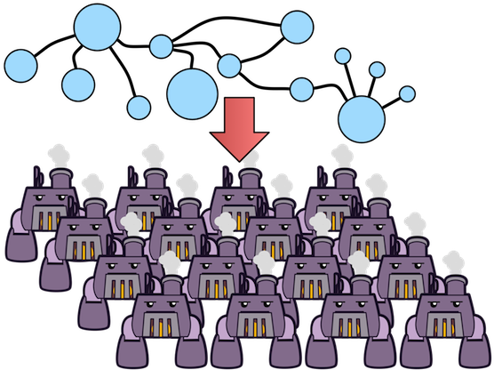 TinkerPop3 provides two primary means of interacting with a graph: online transaction processing (OLTP) and online analytical processing (OLAP). OLTP-based graph systems allow the user to query the graph in real-time. However, typically, real-time performance is only possible when a local traversal is enacted. A local traversal is one that starts at a particular vertex (or small set of vertices) and touches a small set of connected vertices (by any arbitrary path of arbitrary length). In short, OLTP queries interact with a limited set of data and respond on the order of milliseconds or seconds. On the other hand, with OLAP graph processing, the entire graph is processed and thus, every vertex and edge is analyzed (some times more than once for iterative, recursive algorithms). Due to the amount of data being processed, the results are typically not returned in real-time and for massive graphs (i.e. graphs represented across a cluster of machines), results can take on the order of minutes or hours.
-
OLTP: real-time, limited data accessed, random data access, sequential processing, querying
-
OLAP: long running, entire data set accessed, sequential data access, parallel processing, batch processing

The image above demonstrates the difference between Gremlin OLTP and Gremlin OLAP. With Gremlin OLTP, the graph is
walked by moving from vertex-to-vertex via incident edges. With Gremlin OLAP, all vertices are provided a
VertexProgram. The programs send messages to one another with the topological structure of the graph acting as the
communication network (though random message passing possible). In many respects, the messages passed are like
the OLTP traversers moving from vertex-to-vertex. However, all messages are moving independent of one another, in
parallel. Once a vertex program is finished computing, TinkerPop3’s OLAP engine supports any number
MapReduce jobs over the resultant graph.
|
Important
|
GraphComputer was designed from the start to be used within a multi-JVM, distributed environment — in other words, a multi-machine compute cluster. As such, all the computing objects must be able to be migrated
between JVMs. The pattern promoted is to store state information in a Configuration object to later be regenerated
by a loading process. It is important to realize that VertexProgram, MapReduce, and numerous particular instances
rely heavily on the state of the computing classes (not the structure, but the processes) to be stored in a
Configuration.
|
VertexProgram
 GraphComputer takes a
GraphComputer takes a VertexProgram. A VertexProgram can be thought of
as a piece of code that is executed at each vertex in logically parallel manner until some termination condition is
met (e.g. a number of iterations have occurred, no more data is changing in the graph, etc.). A submitted
VertexProgram is copied to all the workers in the graph. A worker is not an explicit concept in the API, but is
assumed of all GraphComputer implementations. At minimum each vertex is a worker (though this would be inefficient
due to the fact that each vertex would maintain a VertexProgram). In practice, the workers partition the vertex set
and and are responsible for the execution of the VertexProgram over all the vertices within their sphere of influence.
The workers orchestrate the execution of the VertexProgram.execute() method on all their vertices in an
bulk synchronous parallel (BSP) fashion. The vertices
are able to communicate with one another via messages. There are two kinds of messages in Gremlin OLAP:
MessageScope.Local and MessageScope.Global. A local message is a message to an adjacent vertex. A global
message is a message to any arbitrary vertex in the graph. Once the VertexProgram has completed its execution,
any number of MapReduce jobs are evaluated. MapReduce jobs are provided by the user via GraphComputer.mapReduce()
or by the VertexProgram via VertexProgram.getMapReducers().

The example below demonstrates how to submit a VertexProgram to a graph’s GraphComputer. GraphComputer.submit()
yields a Future<ComputerResult>. The ComputerResult has the resultant computed graph which can be a full copy
of the original graph (see Hadoop-Gremlin) or a view over the original graph (see
TinkerGraph). The ComputerResult also provides access to computational side-effects called Memory
(which includes, for example, runtime, number of iterations, results of MapReduce jobs, and VertexProgram-specific
memory manipulations).
gremlin> result = graph.compute().program(PageRankVertexProgram.build().create()).submit().get()
==>result[tinkergraph[vertices:6 edges:0],memory[size:0]]
gremlin> result.memory().runtime
==>63
gremlin> g = result.graph().traversal()
==>graphtraversalsource[tinkergraph[vertices:6 edges:0], standard]
gremlin> g.V().valueMap()
==>[gremlin.pageRankVertexProgram.pageRank:[0.11375510357865541],name:[marko],age:[29]]
==>[gremlin.pageRankVertexProgram.pageRank:[0.14598540152719106],name:[vadas],age:[27]]
==>[gremlin.pageRankVertexProgram.pageRank:[0.3047200907912249],name:[lop],lang:[java]]
==>[gremlin.pageRankVertexProgram.pageRank:[0.14598540152719106],name:[josh],age:[32]]
==>[gremlin.pageRankVertexProgram.pageRank:[0.17579889899708231],name:[ripple],lang:[java]]
==>[gremlin.pageRankVertexProgram.pageRank:[0.11375510357865541],name:[peter],age:[35]]result = graph.compute().program(PageRankVertexProgram.build().create()).submit().get()
result.memory().runtime
g = result.graph().traversal()
g.V().valueMap()|
Note
|
This model of "vertex-centric graph computing" was made popular by Google’s Pregel graph engine. In the open source world, this model is found in OLAP graph computing systems such as Giraph, Hama. TinkerPop3 extends the popularized model with integrated post-processing MapReduce jobs over the vertex set. |
MapReduce
The BSP model proposed by Pregel stores the results of the computation in a distributed manner as properties on the
elements in the graph. In many situations, it is necessary to aggregate those resultant properties into a single
result set (i.e. a statistic). For instance, assume a VertexProgram that computes a nominal cluster for each vertex
(i.e. a graph clustering algorithm). At the end of the
computation, each vertex will have a property denoting the cluster it was assigned to. TinkerPop3 provides the
ability to answer global questions about the clusters. For instance, in order to answer the following questions,
MapReduce jobs are required:
-
How many vertices are in each cluster? (presented below)
-
How many unique clusters are there? (presented below)
-
What is the average age of each vertex in each cluster?
-
What is the degree distribution of the vertices in each cluster?
A compressed representation of the MapReduce API in TinkerPop3 is provided below. The key idea is that the
map-stage processes all vertices to emit key/value pairs. Those values are aggregated on their respective key
for the reduce-stage to do its processing to ultimately yield more key/value pairs.
public interface MapReduce<MK, MV, RK, RV, R> {
public void map(final Vertex vertex, final MapEmitter<MK, MV> emitter);
public void reduce(final MK key, final Iterator<MV> values, final ReduceEmitter<RK, RV> emitter);
// there are more methods
}|
Important
|
The vertex that is passed into the MapReduce.map() method does not contain edges. The vertex only
contains original and computed vertex properties. This reduces the amount of data required to be loaded and ensures
that MapReduce is used for post-processing computed results. All edge-based computing should be accomplished in the
VertexProgram.
|

The MapReduce extension to GraphComputer is made explicit when examining the
PeerPressureVertexProgram and corresponding ClusterPopulationMapReduce.
In the code below, the GraphComputer result returns the computed on Graph as well as the Memory of the
computation (ComputerResult). The memory maintain the results of any MapReduce jobs. The cluster population
MapReduce result states that there are 5 vertices in cluster 1 and 1 vertex in cluster 6. This can be verified
(in a serial manner) by looking at the PeerPressureVertexProgram.CLUSTER property of the resultant graph. Notice
that the property is "hidden" unless it is directly accessed via name.
gremlin> graph = TinkerFactory.createModern()
==>tinkergraph[vertices:6 edges:6]
gremlin> result = graph.compute().program(PeerPressureVertexProgram.build().create()).mapReduce(ClusterPopulationMapReduce.build().create()).submit().get()
==>result[tinkergraph[vertices:6 edges:0],memory[size:1]]
gremlin> result.memory().get('clusterPopulation')
==>1=5
==>6=1
gremlin> g = result.graph().traversal()
==>graphtraversalsource[tinkergraph[vertices:6 edges:0], standard]
gremlin> g.V().values(PeerPressureVertexProgram.CLUSTER).groupCount().next()
==>1=5
==>6=1
gremlin> g.V().valueMap()
==>[gremlin.peerPressureVertexProgram.cluster:[1],name:[marko],age:[29]]
==>[gremlin.peerPressureVertexProgram.cluster:[1],name:[vadas],age:[27]]
==>[gremlin.peerPressureVertexProgram.cluster:[1],name:[lop],lang:[java]]
==>[gremlin.peerPressureVertexProgram.cluster:[1],name:[josh],age:[32]]
==>[gremlin.peerPressureVertexProgram.cluster:[1],name:[ripple],lang:[java]]
==>[gremlin.peerPressureVertexProgram.cluster:[6],name:[peter],age:[35]]graph = TinkerFactory.createModern()
result = graph.compute().program(PeerPressureVertexProgram.build().create()).mapReduce(ClusterPopulationMapReduce.build().create()).submit().get()
result.memory().get('clusterPopulation')
g = result.graph().traversal()
g.V().values(PeerPressureVertexProgram.CLUSTER).groupCount().next()
g.V().valueMap()If there are numerous statistics desired, then its possible to register as many MapReduce jobs as needed. For
instance, the ClusterCountMapReduce determines how many unique clusters were created by the peer pressure algorithm.
Below both ClusterCountMapReduce and ClusterPopulationMapReduce are computed over the resultant graph.
gremlin> result = graph.compute().program(PeerPressureVertexProgram.build().create()).
mapReduce(ClusterPopulationMapReduce.build().create()).
mapReduce(ClusterCountMapReduce.build().create()).submit().get()
==>result[tinkergraph[vertices:6 edges:0],memory[size:2]]
gremlin> result.memory().clusterPopulation
==>1=5
==>6=1
gremlin> result.memory().clusterCount
==>2result = graph.compute().program(PeerPressureVertexProgram.build().create()).
mapReduce(ClusterPopulationMapReduce.build().create()).
mapReduce(ClusterCountMapReduce.build().create()).submit().get()
result.memory().clusterPopulation
result.memory().clusterCount|
Important
|
The MapReduce model of TinkerPop3 does not support MapReduce chaining. Thus, the order in which the
MapReduce jobs are executed is irrelevant. This is made apparent when realizing that the map()-stage takes a
Vertex as its input and the reduce()-stage yields key/value pairs. Thus, the results of reduce can not fed back
into a map().
|
A Collection of VertexPrograms
TinkerPop3 provides a collection of VertexPrograms that implement common algorithms. This section discusses the various implementations.
|
Important
|
The vertex programs presented are what are provided as of TinkerPop 3.3.4. Over time, with future releases, more algorithms will be added. |
PageRankVertexProgram
 PageRank is perhaps the
most popular OLAP-oriented graph algorithm. This eigenvector centrality
variant was developed by Brin and Page of Google. PageRank defines a centrality value for all vertices in the graph,
where centrality is defined recursively where a vertex is central if it is connected to central vertices. PageRank is
an iterative algorithm that converges to a steady state distribution. If
the pageRank values are normalized to 1.0, then the pageRank value of a vertex is the probability that a random walker
will be seen that that vertex in the graph at any arbitrary moment in time. In order to help developers understand the
methods of a
PageRank is perhaps the
most popular OLAP-oriented graph algorithm. This eigenvector centrality
variant was developed by Brin and Page of Google. PageRank defines a centrality value for all vertices in the graph,
where centrality is defined recursively where a vertex is central if it is connected to central vertices. PageRank is
an iterative algorithm that converges to a steady state distribution. If
the pageRank values are normalized to 1.0, then the pageRank value of a vertex is the probability that a random walker
will be seen that that vertex in the graph at any arbitrary moment in time. In order to help developers understand the
methods of a VertexProgram, the PageRankVertexProgram code is analyzed below.
public class PageRankVertexProgram implements VertexProgram<Double> { //1
public static final String PAGE_RANK = "gremlin.pageRankVertexProgram.pageRank";
private static final String EDGE_COUNT = "gremlin.pageRankVertexProgram.edgeCount";
private static final String PROPERTY = "gremlin.pageRankVertexProgram.property";
private static final String VERTEX_COUNT = "gremlin.pageRankVertexProgram.vertexCount";
private static final String ALPHA = "gremlin.pageRankVertexProgram.alpha";
private static final String EPSILON = "gremlin.pageRankVertexProgram.epsilon";
private static final String MAX_ITERATIONS = "gremlin.pageRankVertexProgram.maxIterations";
private static final String EDGE_TRAVERSAL = "gremlin.pageRankVertexProgram.edgeTraversal";
private static final String INITIAL_RANK_TRAVERSAL = "gremlin.pageRankVertexProgram.initialRankTraversal";
private static final String TELEPORTATION_ENERGY = "gremlin.pageRankVertexProgram.teleportationEnergy";
private static final String CONVERGENCE_ERROR = "gremlin.pageRankVertexProgram.convergenceError";
private MessageScope.Local<Double> incidentMessageScope = MessageScope.Local.of(__::outE); //2
private MessageScope.Local<Double> countMessageScope = MessageScope.Local.of(new MessageScope.Local.ReverseTraversalSupplier(this.incidentMessageScope));
private PureTraversal<Vertex, Edge> edgeTraversal = null;
private PureTraversal<Vertex, ? extends Number> initialRankTraversal = null;
private double alpha = 0.85d;
private double epsilon = 0.00001d;
private int maxIterations = 20;
private String property = PAGE_RANK; //3
private Set<VertexComputeKey> vertexComputeKeys;
private Set<MemoryComputeKey> memoryComputeKeys;
private PageRankVertexProgram() {
}
@Override
public void loadState(final Graph graph, final Configuration configuration) { //4
if (configuration.containsKey(INITIAL_RANK_TRAVERSAL))
this.initialRankTraversal = PureTraversal.loadState(configuration, INITIAL_RANK_TRAVERSAL, graph);
if (configuration.containsKey(EDGE_TRAVERSAL)) {
this.edgeTraversal = PureTraversal.loadState(configuration, EDGE_TRAVERSAL, graph);
this.incidentMessageScope = MessageScope.Local.of(() -> this.edgeTraversal.get().clone());
this.countMessageScope = MessageScope.Local.of(new MessageScope.Local.ReverseTraversalSupplier(this.incidentMessageScope));
}
this.alpha = configuration.getDouble(ALPHA, this.alpha);
this.epsilon = configuration.getDouble(EPSILON, this.epsilon);
this.maxIterations = configuration.getInt(MAX_ITERATIONS, 20);
this.property = configuration.getString(PROPERTY, PAGE_RANK);
this.vertexComputeKeys = new HashSet<>(Arrays.asList(
VertexComputeKey.of(this.property, false),
VertexComputeKey.of(EDGE_COUNT, true))); //5
this.memoryComputeKeys = new HashSet<>(Arrays.asList(
MemoryComputeKey.of(TELEPORTATION_ENERGY, Operator.sum, true, true),
MemoryComputeKey.of(VERTEX_COUNT, Operator.sum, true, true),
MemoryComputeKey.of(CONVERGENCE_ERROR, Operator.sum, false, true)));
}
@Override
public void storeState(final Configuration configuration) {
VertexProgram.super.storeState(configuration);
configuration.setProperty(ALPHA, this.alpha);
configuration.setProperty(EPSILON, this.epsilon);
configuration.setProperty(PROPERTY, this.property);
configuration.setProperty(MAX_ITERATIONS, this.maxIterations);
if (null != this.edgeTraversal)
this.edgeTraversal.storeState(configuration, EDGE_TRAVERSAL);
if (null != this.initialRankTraversal)
this.initialRankTraversal.storeState(configuration, INITIAL_RANK_TRAVERSAL);
}
@Override
public GraphComputer.ResultGraph getPreferredResultGraph() {
return GraphComputer.ResultGraph.NEW;
}
@Override
public GraphComputer.Persist getPreferredPersist() {
return GraphComputer.Persist.VERTEX_PROPERTIES;
}
@Override
public Set<VertexComputeKey> getVertexComputeKeys() { //6
return this.vertexComputeKeys;
}
@Override
public Optional<MessageCombiner<Double>> getMessageCombiner() {
return (Optional) PageRankMessageCombiner.instance();
}
@Override
public Set<MemoryComputeKey> getMemoryComputeKeys() {
return this.memoryComputeKeys;
}
@Override
public Set<MessageScope> getMessageScopes(final Memory memory) {
final Set<MessageScope> set = new HashSet<>();
set.add(memory.isInitialIteration() ? this.countMessageScope : this.incidentMessageScope);
return set;
}
@Override
public PageRankVertexProgram clone() {
try {
final PageRankVertexProgram clone = (PageRankVertexProgram) super.clone();
if (null != this.initialRankTraversal)
clone.initialRankTraversal = this.initialRankTraversal.clone();
return clone;
} catch (final CloneNotSupportedException e) {
throw new IllegalStateException(e.getMessage(), e);
}
}
@Override
public void setup(final Memory memory) {
memory.set(TELEPORTATION_ENERGY, null == this.initialRankTraversal ? 1.0d : 0.0d);
memory.set(VERTEX_COUNT, 0.0d);
memory.set(CONVERGENCE_ERROR, 1.0d);
}
@Override
public void execute(final Vertex vertex, Messenger<Double> messenger, final Memory memory) { //7
if (memory.isInitialIteration()) {
messenger.sendMessage(this.countMessageScope, 1.0d); //8
memory.add(VERTEX_COUNT, 1.0d);
} else {
final double vertexCount = memory.<Double>get(VERTEX_COUNT);
final double edgeCount;
double pageRank;
if (1 == memory.getIteration()) {
edgeCount = IteratorUtils.reduce(messenger.receiveMessages(), 0.0d, (a, b) -> a + b);
vertex.property(VertexProperty.Cardinality.single, EDGE_COUNT, edgeCount);
pageRank = null == this.initialRankTraversal ?
0.0d :
TraversalUtil.apply(vertex, this.initialRankTraversal.get()).doubleValue(); //9
} else {
edgeCount = vertex.value(EDGE_COUNT);
pageRank = IteratorUtils.reduce(messenger.receiveMessages(), 0.0d, (a, b) -> a + b); //10
}
//////////////////////////
final double teleporationEnergy = memory.get(TELEPORTATION_ENERGY);
if (teleporationEnergy > 0.0d) {
final double localTerminalEnergy = teleporationEnergy / vertexCount;
pageRank = pageRank + localTerminalEnergy;
memory.add(TELEPORTATION_ENERGY, -localTerminalEnergy);
}
final double previousPageRank = vertex.<Double>property(this.property).orElse(0.0d);
memory.add(CONVERGENCE_ERROR, Math.abs(pageRank - previousPageRank));
vertex.property(VertexProperty.Cardinality.single, this.property, pageRank);
memory.add(TELEPORTATION_ENERGY, (1.0d - this.alpha) * pageRank);
pageRank = this.alpha * pageRank;
if (edgeCount > 0.0d)
messenger.sendMessage(this.incidentMessageScope, pageRank / edgeCount);
else
memory.add(TELEPORTATION_ENERGY, pageRank);
}
}
@Override
public boolean terminate(final Memory memory) { //11
boolean terminate = memory.<Double>get(CONVERGENCE_ERROR) < this.epsilon || memory.getIteration() >= this.maxIterations;
memory.set(CONVERGENCE_ERROR, 0.0d);
return terminate;
}
@Override
public String toString() {
return StringFactory.vertexProgramString(this, "alpha=" + this.alpha + ", epsilon=" + this.epsilon + ", iterations=" + this.maxIterations);
}
}-
PageRankVertexProgramimplementsVertexProgram<Double>because the messages it sends are Java doubles. -
The default path of energy propagation is via outgoing edges from the current vertex.
-
The resulting PageRank values for the vertices are stored as a vertex property.
-
A vertex program is constructed using an Apache
Configurationto ensure easy dissemination across a cluster of JVMs. -
EDGE_COUNTis a transient "scratch data" compute key whilePAGE_RANKis not. -
A vertex program must define the "compute keys" that are the properties being operated on during the computation.
-
The "while"-loop of the vertex program.
-
In order to determine how to distribute the energy to neighbors, a "1"-count is used to determine how many incident vertices exist for the
MessageScope. -
Initially, each vertex is provided an equal amount of energy represented as a double.
-
Energy is aggregated, computed on according to the PageRank algorithm, and then disseminated according to the defined
MessageScope.Local. -
The computation is terminated after epsilon-convergence is met or a pre-defined number of iterations have taken place.
The above PageRankVertexProgram is used as follows.
gremlin> result = graph.compute().program(PageRankVertexProgram.build().create()).submit().get()
==>result[tinkergraph[vertices:6 edges:0],memory[size:0]]
gremlin> result.memory().runtime
==>18
gremlin> g = result.graph().traversal()
==>graphtraversalsource[tinkergraph[vertices:6 edges:0], standard]
gremlin> g.V().valueMap()
==>[gremlin.pageRankVertexProgram.pageRank:[0.11375510357865536],name:[marko],age:[29]]
==>[gremlin.pageRankVertexProgram.pageRank:[0.145985401527191],name:[vadas],age:[27]]
==>[gremlin.pageRankVertexProgram.pageRank:[0.3047200907912248],name:[lop],lang:[java]]
==>[gremlin.pageRankVertexProgram.pageRank:[0.145985401527191],name:[josh],age:[32]]
==>[gremlin.pageRankVertexProgram.pageRank:[0.17579889899708226],name:[ripple],lang:[java]]
==>[gremlin.pageRankVertexProgram.pageRank:[0.11375510357865536],name:[peter],age:[35]]result = graph.compute().program(PageRankVertexProgram.build().create()).submit().get()
result.memory().runtime
g = result.graph().traversal()
g.V().valueMap()Note that GraphTraversal provides a pageRank()-step.
gremlin> g = graph.traversal().withComputer()
==>graphtraversalsource[tinkergraph[vertices:6 edges:6], graphcomputer]
gremlin> g.V().pageRank().valueMap()
==>[gremlin.pageRankVertexProgram.pageRank:[0.14598540152719103],name:[josh],age:[32]]
==>[gremlin.pageRankVertexProgram.pageRank:[0.1757988989970823],name:[ripple],lang:[java]]
==>[gremlin.pageRankVertexProgram.pageRank:[0.11375510357865537],name:[peter],age:[35]]
==>[gremlin.pageRankVertexProgram.pageRank:[0.11375510357865537],name:[marko],age:[29]]
==>[gremlin.pageRankVertexProgram.pageRank:[0.30472009079122486],name:[lop],lang:[java]]
==>[gremlin.pageRankVertexProgram.pageRank:[0.14598540152719103],name:[vadas],age:[27]]
gremlin> g.V().pageRank().by('pageRank').times(5).order().by('pageRank').valueMap()
==>[name:[marko],pageRank:[0.11362166126141333],age:[29]]
==>[name:[peter],pageRank:[0.11362166126141333],age:[35]]
==>[name:[vadas],pageRank:[0.14598422136890218],age:[27]]
==>[name:[josh],pageRank:[0.14598422136890218],age:[32]]
==>[name:[ripple],lang:[java],pageRank:[0.1756689971547068]]
==>[name:[lop],lang:[java],pageRank:[0.30511923758466225]]g = graph.traversal().withComputer()
g.V().pageRank().valueMap()
g.V().pageRank().by('pageRank').times(5).order().by('pageRank').valueMap()PeerPressureVertexProgram
The PeerPressureVertexProgram is a clustering algorithm that assigns a nominal value to each vertex in the graph.
The nominal value represents the vertex’s cluster. If two vertices have the same nominal value, then they are in the
same cluster. The algorithm proceeds in the following manner.
-
Every vertex assigns itself to a unique cluster ID (initially, its vertex ID).
-
Every vertex determines its per neighbor vote strength as 1.0d / incident edges count.
-
Every vertex sends its cluster ID and vote strength to its adjacent vertices as a
Pair<Serializable,Double> -
Every vertex generates a vote energy distribution of received cluster IDs and changes its current cluster ID to the most frequent cluster ID.
-
If there is a tie, then the cluster with the lowest
toString()comparison is selected.
-
-
Steps 3 and 4 repeat until either a max number of iterations has occurred or no vertex has adjusted its cluster anymore.
Note that GraphTraversal provides a peerPressure()-step.
gremlin> g = graph.traversal().withComputer()
==>graphtraversalsource[tinkergraph[vertices:6 edges:6], graphcomputer]
gremlin> g.V().peerPressure().by('cluster').valueMap()
==>[name:[marko],cluster:[1],age:[29]]
==>[name:[vadas],cluster:[1],age:[27]]
==>[name:[lop],lang:[java],cluster:[1]]
==>[name:[josh],cluster:[1],age:[32]]
==>[name:[ripple],lang:[java],cluster:[1]]
==>[name:[peter],cluster:[6],age:[35]]
gremlin> g.V().peerPressure().by(outE('knows')).by('cluster').valueMap()
==>[name:[marko],cluster:[1],age:[29]]
==>[name:[vadas],cluster:[1],age:[27]]
==>[name:[lop],lang:[java],cluster:[3]]
==>[name:[josh],cluster:[1],age:[32]]
==>[name:[ripple],lang:[java],cluster:[5]]
==>[name:[peter],cluster:[6],age:[35]]g = graph.traversal().withComputer()
g.V().peerPressure().by('cluster').valueMap()
g.V().peerPressure().by(outE('knows')).by('cluster').valueMap()CloneVertexProgram
The CloneVertexProgram (known in versions prior to 3.2.10 as BulkDumperVertexProgram) copies a whole graph from
any graph InputFormat to any graph OutputFormat. TinkerPop provides the following:
-
OutputFormat-
GraphSONOutputFormat -
GryoOutputFormat -
ScriptOutputFormat
-
-
InputFormat-
GraphSONInputFormat -
GryoInputFormat -
ScriptInputFormat).
-
An example is provided in the SparkGraphComputer section.
Graph Providers should consider writing their own OutputFormat and InputFormat which would allow bulk loading and
export capabilities through this VertexProgram. This topic is discussed further in the
Provider Documentation.
TraversalVertexProgram
 The
The TraversalVertexProgram is a "special" VertexProgram in
that it can be executed via a Traversal and a GraphComputer. In Gremlin, it is possible to have
the same traversal executed using either the standard OLTP-engine or the GraphComputer OLAP-engine. The difference
being where the traversal is submitted.
|
Note
|
This model of graph traversal in a BSP system was first implemented by the Faunus graph analytics engine and originally described in Local and Distributed Traversal Engines. |
gremlin> g = graph.traversal()
==>graphtraversalsource[tinkergraph[vertices:6 edges:6], standard]
gremlin> g.V().both().hasLabel('person').values('age').groupCount().next() // OLTP
==>32=3
==>35=1
==>27=1
==>29=3
gremlin> g = graph.traversal().withComputer()
==>graphtraversalsource[tinkergraph[vertices:6 edges:6], graphcomputer]
gremlin> g.V().both().hasLabel('person').values('age').groupCount().next() // OLAP
==>32=3
==>35=1
==>27=1
==>29=3g = graph.traversal()
g.V().both().hasLabel('person').values('age').groupCount().next() // OLTP
g = graph.traversal().withComputer()
g.V().both().hasLabel('person').values('age').groupCount().next() // OLAPIn the OLAP example above, a TraversalVertexProgram is (logically) sent to each vertex in the graph. Each instance
evaluation requires (logically) 5 BSP iterations and each iteration is interpreted as such:
-
g.V(): Put a traverser on each vertex in the graph. -
both(): Propagate each traverser to the verticesboth-adjacent to its current vertex. -
hasLabel('person'): If the vertex is not a person, kill the traversers at that vertex. -
values('age'): Have all the traversers reference the integer age of their current vertex. -
groupCount(): Count how many times a particular age has been seen.
While 5 iterations were presented, in fact, TraversalVertexProgram will execute the traversal in only
2 iterations. The reason being is that g.V().both() and hasLabel('person').values('age').groupCount() can be
executed in a single iteration as any message sent would simply be to the current executing vertex. Thus, a simple optimization
exists in Gremlin OLAP called "reflexive message passing" which simulates non-message-passing BSP iterations within a
single BSP iteration.
The same OLAP traversal can be executed using the standard graph.compute() model, though at the expense of verbosity.
TraversalVertexProgram provides a fluent Builder for constructing a TraversalVertexProgram. The specified
traversal() can be either a direct Traversal object or a
JSR-223 script that will generate a
Traversal. There is no benefit to using the model below. It is demonstrated to help elucidate how Gremlin OLAP traversals
are ultimately compiled for execution on a GraphComputer.
gremlin> result = graph.compute().program(TraversalVertexProgram.build().traversal(g.V().both().hasLabel('person').values('age').groupCount('a')).create()).submit().get()
==>result[tinkergraph[vertices:6 edges:6],memory[size:2]]
gremlin> result.memory().a
==>32=3
==>35=1
==>27=1
==>29=3
gremlin> result.memory().iteration
==>1
gremlin> result.memory().runtime
==>17result = graph.compute().program(TraversalVertexProgram.build().traversal(g.V().both().hasLabel('person').values('age').groupCount('a')).create()).submit().get()
result.memory().a
result.memory().iteration
result.memory().runtimeDistributed Gremlin Gotchas
Gremlin OLTP is not identical to Gremlin OLAP.
|
Important
|
There are two primary theoretical differences between Gremlin OLTP and Gremlin OLAP. First, Gremlin OLTP
(via Traversal) leverages a depth-first execution engine.
Depth-first execution has a limited memory footprint due to lazy evaluation.
On the other hand, Gremlin OLAP (via TraversalVertexProgram) leverages a
breadth-first execution engine which maintains a larger memory
footprint, but a better time complexity due to vertex-local traversers being able to be "bulked." The second difference
is that Gremlin OLTP is executed in a serial/streaming fashion, while Gremlin OLAP is executed in a parallel/step-wise fashion. These two
fundamental differences lead to the behaviors enumerated below.
|

-
Traversal sideEffects are represented as a distributed data structure across
GraphComputerworkers. It is not possible to get a global view of a sideEffect until after an iteration has occurred and global sideEffects are re-broadcasted to the workers. In some situations, a "stale" local representation of the sideEffect is sufficient to ensure the intended semantics of the traversal are respected. However, this is not generally true so be wary of traversals that require global views of a sideEffect. To ensure a fresh global representation, usebarrier()prior to accessing the global sideEffect. Note that this only comes into play with custom steps and lambda steps. The standard Gremlin step library is respective of OLAP semantics. -
When evaluating traversals that rely on path information (i.e. the history of the traversal), practical computational limits can easily be reached due the combinatoric explosion of data. With path computing enabled, every traverser is unique and thus, must be enumerated as opposed to being counted/merged. The difference being a collection of paths vs. a single 64-bit long at a single vertex. In other words, bulking is very unlikely with traversers that maintain path information. For more information on this concept, please see Faunus Provides Big Graph Data.
-
Steps that are concerned with the global ordering of traversers do not have a meaningful representation in OLAP. For example, what does
order()-step mean when all traversers are being processed in parallel? Even if the traversers were aggregated and ordered, then at the next step they would return to being executed in parallel and thus, in an unpredictable order. Whenorder()-like steps are executed at the end of a traversal (i.e the final step),TraversalVertexProgramensures a serial representation is ordered accordingly. Moreover, it is intelligent enough to maintain the ordering ofg.V().hasLabel("person").order().by("age").values("name"). However, the OLAP traversalg.V().hasLabel("person").order().by("age").out().values("name")will lose the original ordering as theout()-step will rebroadcast traversers across the cluster.
Graph Filter
Most OLAP jobs do not require the entire source graph to faithfully execute their VertexProgram. For instance, if
PageRankVertexProgram is only going to compute the centrality of people in the friendship-graph, then the following
GraphFilter can be applied.
graph.computer().
vertices(hasLabel("person")).
edges(bothE("knows")).
program(PageRankVertexProgram...)There are two methods for constructing a GraphFilter.
-
vertices(Traversal<Vertex,Vertex>): A traversal that will be used that can only analyze a vertex and its properties. If the traversalhasNext(), the inputVertexis passed to theGraphComputer. -
edges(Traversal<Vertex,Edge>): A traversal that will iterate all legal edges for the source vertex.
GraphFilter is a "push-down predicate" that providers can reason on to determine the most efficient way to provide
graph data to the GraphComputer.
|
Important
|
Apache TinkerPop provides GraphFilterStrategy traversal strategy which analyzes a submitted
OLAP traversal and, if possible, creates an appropriate GraphFilter automatically. For instance, g.V().count() would
yield a GraphFilter.edges(limit(0)). Thus, for traversal submissions, users typically do not need to be aware of creating
graph filters explicitly. Users can use the explain()-step to see the GraphFilter generated by GraphFilterStrategy.
|
Gremlin Applications
Gremlin applications represent tools that are built on top of the core APIs to help expose common functionality to users when working with graphs. There are two key applications:
-
Gremlin Console - A REPL environment for interactive development and analysis
-
Gremlin Server - A server that hosts script engines thus enabling remote Gremlin execution
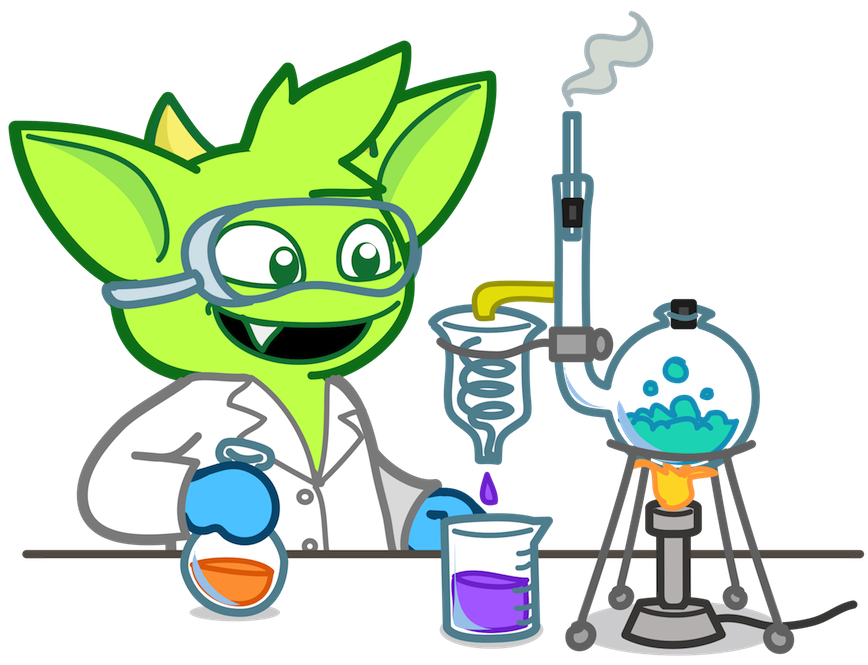 Gremlin is designed to be extensible, making it possible for users and graph system/language providers to customize it to their needs. Such extensibility is also found in the Gremlin Console and Server, where a universal plugin system makes it possible to extend their capabilities. One of the important aspects of the plugin system is the ability to help the user install the plugins through the command line thus automating the process of gathering dependencies and other error prone activities.
The process of plugin installation is handled by Grape, which helps resolve
dependencies into the classpath. It is therefore important to ensure that Grape is properly configured in order to
use the automated capabilities of plugin installation. Grape is configured by ~/.groovy/grapeConfig.xml and
generally speaking, if that file is not present, the default settings will suffice. However, they will not suffice
if a required dependency is not in one of the default configured repositories. Please see the
Customize Ivy settings section of the Grape documentation for more details on
the defaults. TinkerPop recommends the following configuration in that file:
<ivysettings>
<settings defaultResolver="downloadGrapes"/>
<resolvers>
<chain name="downloadGrapes">
<filesystem name="cachedGrapes">
<ivy pattern="${user.home}/.groovy/grapes/[organisation]/[module]/ivy-[revision].xml"/>
<artifact pattern="${user.home}/.groovy/grapes/[organisation]/[module]/[type]s/[artifact]-[revision].[ext]"/>
</filesystem>
<ibiblio name="ibiblio" m2compatible="true"/>
</chain>
</resolvers>
</ivysettings>The Graph configuration can also be modified to include the local system’s Maven .m2 directory:
<ivysettings>
<settings defaultResolver="downloadGrapes"/>
<property name="m2-pattern" value="${user.home}/.m2/repository/org/apache/tinkerpop/[module]/[revision]/[module]-[revision](-[classifier]).[ext]" />
<property name="m2-pattern-ivy" value="${user.home}/.m2/repository/org/apache/tinkerpop/[module]/[revision]/[module]-[revision](-[classifier]).pom" />
<caches>
<cache name="nocache" useOrigin="true" />
</caches>
<resolvers>
<chain name="downloadGrapes">
<!-- https://mvmn.wordpress.com/2016/02/02/grape-config-for-local-maven-repo/ -->
<filesystem name="local-maven2" checkmodified="true" changingPattern=".*" changingMatcher="regexp" m2compatible="true" cache="nocache">
<artifact pattern="${m2-pattern}"/>
<ivy pattern="${m2-pattern-ivy}"/>
</filesystem>
<filesystem name="cachedGrapes">
<ivy pattern="${user.home}/.groovy/grapes/[organisation]/[module]/ivy-[revision].xml"/>
<artifact pattern="${user.home}/.groovy/grapes/[organisation]/[module]/[type]s/[artifact]-[revision].[ext]"/>
</filesystem>
<ibiblio name="ibiblio" m2compatible="true"/>
<ibiblio name="local" root="file:${user.home}/.m2/repository/" m2compatible="true"/>
</chain>
</resolvers>
</ivysettings>These configurations are useful during development (i.e. if one is working with locally built artifacts) of TinkerPop Plugins. It is important to take note of the order used for these references as Grape will check them in the order they are specified and depending on that order, an artifact other than the one expected may be used which is typically an issue when working with SNAPSHOT dependencies.
Gremlin Console
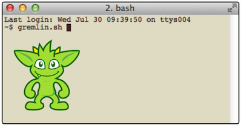 The Gremlin Console is an interactive terminal or REPL that can be used to traverse graphs and interact with the data that they contain. It represents the most common method for performing ad-hoc graph analysis, small to medium sized data loading projects and other exploratory functions. The Gremlin Console is highly extensible, featuring a rich plugin system that allows new tools, commands, DSLs, etc. to be exposed to users.
To start the Gremlin Console, run gremlin.sh or gremlin.bat:
$ bin/gremlin.sh
\,,,/
(o o)
-----oOOo-(3)-oOOo-----
plugin loaded: tinkerpop.server
plugin loaded: tinkerpop.utilities
plugin loaded: tinkerpop.tinkergraph
gremlin>|
Note
|
If the above plugins are not loaded then they will need to be enabled or else certain examples will not work.
If using the standard Gremlin Console distribution, then the plugins should be enabled by default. See below for
more information on the :plugin use command to manually enable plugins. These plugins, with the exception of
tinkerpop.tinkergraph, cannot be removed from the Console as they are a part of the gremlin-console.jar itself.
These plugins can only be deactivated.
|
The Gremlin Console is loaded and ready for commands. Recall that the console hosts the Gremlin-Groovy language. Please review Groovy for help on Groovy-related constructs. In short, Groovy is a superset of Java. What works in Java, works in Groovy. However, Groovy provides many shorthands to make it easier to interact with the Java API. Moreover, Gremlin provides many neat shorthands to make it easier to express paths through a property graph.
gremlin> i = 'goodbye'
==>goodbye
gremlin> j = 'self'
==>self
gremlin> i + " " + j
==>goodbye self
gremlin> "${i} ${j}"
==>goodbye selfi = 'goodbye'
j = 'self'
i + " " + j
"${i} ${j}"The "toy" graph provides a way to get started with Gremlin quickly.
gremlin> g = TinkerFactory.createModern().traversal()
==>graphtraversalsource[tinkergraph[vertices:6 edges:6], standard]
gremlin> g.V()
==>v[1]
==>v[2]
==>v[3]
==>v[4]
==>v[5]
==>v[6]
gremlin> g.V().values('name')
==>marko
==>vadas
==>lop
==>josh
==>ripple
==>peter
gremlin> g.V().has('name','marko').out('knows').values('name')
==>vadas
==>joshg = TinkerFactory.createModern().traversal()
g.V()
g.V().values('name')
g.V().has('name','marko').out('knows').values('name')|
Tip
|
When using Gremlin-Groovy in a Groovy class file, add static { GremlinLoader.load() } to the head of the file.
|
Console Commands
In addition to the standard commands of the Groovy Shell, Gremlin adds some other useful operations. The following table outlines the most commonly used commands:
| Command | Alias | Description |
|---|---|---|
:help |
:? |
Displays list of commands and descriptions. When followed by a command name, it will display more specific help on that particular item. |
:exit |
:x |
Ends the Console session. |
import |
:i |
Import a class into the Console session. |
:clear |
:c |
Sometimes the Console can get into a state where the command buffer no longer understands input (e.g. a misplaced |
:load |
:l |
Load a file or URL into the command buffer for execution. |
:install |
:+ |
Imports a maven library and its dependencies into the Console. |
:uninstall |
:- |
Removes a maven library and its dependencies. A restart of the console is required for removal to fully take effect. |
:plugin |
:pin |
Plugin management functions to list, activate and deactivate available plugins. |
:remote |
:rem |
Configures a "remote" context where Gremlin or results of Gremlin will be processed via usage of |
:submit |
:> |
Submit Gremlin to the currently active context defined by |
Console Preferences
Preferences are set with :set name value. Values can contain spaces when quoted. All preferences are reset by :purge preferences
| Preference | Type | Description |
|---|---|---|
max-iteration |
int |
Controls the maximum number of results that the Console will display. Default: 100 results. |
colors |
bool |
Enable ANSI color rendering. Default: true |
gremlin.color |
colors |
Color of the ASCII art gremlin on startup. |
info.color |
colors |
Color of "info" type messages. |
error.color |
colors |
Color of "error" type messages. |
vertex.color |
colors |
Color of vertices results. |
edge.color |
colors |
Color of edges in results. |
string.color |
colors |
Colors of strings in results. |
number.color |
colors |
Color of numbers in results. |
T.color |
colors |
Color of Tokens in results. |
input.prompt.color |
colors |
Color of the input prompt. |
result.prompt.color |
colors |
Color of the result prompt. |
input.prompt |
string |
Text of the input prompt. |
result.prompt |
string |
Text of the result prompt. |
result.indicator.null |
string |
Text of the void/no results indicator - setting to empty string (i.e. "" at the command line) will print no result line in these cases. |
Colors can contain a comma-separated combination of 1 each of foreground, background, and attribute.
| Foreground | Background | Attributes |
|---|---|---|
black |
bg_black |
bold |
blue |
bg_blue |
faint |
cyan |
bg_cyan |
underline |
green |
bg_green |
|
magenta |
bg_magenta |
|
red |
bg_red |
|
white |
bg_white |
|
yellow |
bg_yellow |
Example:
:set gremlin.color bg_black,green,boldDependencies and Plugin Usage
The Gremlin Console can dynamically load external code libraries and make them available to the user. Furthermore,
those dependencies may contain Gremlin plugins which can expand the language, provide useful functions, etc. These
important console features are managed by the :install and :plugin commands.
The following Gremlin Console session demonstrates the basics of these features:
gremlin> :plugin list //1
==>tinkerpop.server[active]
==>tinkerpop.gephi
==>tinkerpop.utilities[active]
==>tinkerpop.sugar
==>tinkerpop.tinkergraph[active]
gremlin> :plugin use tinkerpop.sugar //2
==>tinkerpop.sugar activated
gremlin> :install org.apache.tinkerpop neo4j-gremlin 3.3.4 //3
==>loaded: [org.apache.tinkerpop, neo4j-gremlin, 3.3.4]
gremlin> :plugin list //4
==>tinkerpop.server[active]
==>tinkerpop.gephi
==>tinkerpop.utilities[active]
==>tinkerpop.sugar
==>tinkerpop.tinkergraph[active]
==>tinkerpop.neo4j
gremlin> :plugin use tinkerpop.neo4j //5
==>tinkerpop.neo4j activated
gremlin> :plugin list //6
==>tinkerpop.server[active]
==>tinkerpop.gephi
==>tinkerpop.sugar[active]
==>tinkerpop.utilities[active]
==>tinkerpop.neo4j[active]
==>tinkerpop.tinkergraph[active]-
Show a list of "available" plugins. The list of "available" plugins is determined by the classes available on the Console classpath. Plugins need to be "active" for their features to be available.
-
To make a plugin "active" execute the
:plugin usecommand and specify the name of the plugin to enable. -
Sometimes there are external dependencies that would be useful within the Console. To bring those in, execute
:installand specify the Maven coordinates for the dependency. -
Note that there is a "tinkerpop.neo4j" plugin available, but it is not yet "active".
-
Again, to use the "tinkerpop.neo4j" plugin, it must be made "active" with
:plugin use. -
Now when the plugin list is displayed, the "tinkerpop.neo4j" plugin is displayed as "active".
|
Warning
|
Plugins must be compatible with the version of the Gremlin Console (or Gremlin Server) being used. Attempts
to use incompatible versions cannot be guaranteed to work. Moreover, be prepared for dependency conflicts in
third-party plugins, that may only be resolved via manual jar removal from the ext/{plugin} directory.
|
|
Tip
|
It is possible to manage plugin activation and deactivation by manually editing the ext/plugins.txt file which
contains the class names of the "active" plugins. It is also possible to clear dependencies added by :install by
deleting them from the ext directory.
|
Execution Mode
For automated tasks and batch executions of Gremlin, it can be useful to execute Gremlin scripts in "execution" mode
from the command line. Consider the following file named gremlin.groovy:
graph = TinkerFactory.createModern()
g = graph.traversal()
g.V().each { println it }This script creates the toy graph and then iterates through all its vertices printing each to the system out. To
execute this script from the command line, gremlin.sh has the -e option used as follows:
$ bin/gremlin.sh -e gremlin.groovy
v[1]
v[2]
v[3]
v[4]
v[5]
v[6]It is also possible to pass arguments to scripts. Any parameters following the file name specification are treated as arguments to the script. They are collected into a list and passed in as a variable called "args". The following Gremlin script is exactly like the previous one, but it makes use of the "args" option to filter the vertices printed to system out:
graph = TinkerFactory.createModern()
g = graph.traversal()
g.V().has('name',args[0]).each { println it }When executed from the command line a parameter can be supplied:
$ bin/gremlin.sh -e gremlin.groovy marko
v[1]
$ bin/gremlin.sh -e gremlin.groovy vadas
v[2]It is also possible to pass multiple scripts by specifying multiple -e options. The scripts will execute in the order
that they are specified. Note that only the arguments from the last script executed will be preserved in the console.
Finally, if the arguments conflict with the reserved flags that gremlin.sh responds double quotes can be used to
wrap all the arguments to the option:
$ bin/gremlin.sh -e "gremlin.groovy -e -i --color"Interactive Mode
The Gremlin Console can be started in an "interactive" mode. Interactive mode is like execution mode but the console will not exit at the completion of the script, even if the script completes unsuccessfully. In such a case, it will simply stop processing on the line that of the script that failed. In this way the state of the console is such that a user could examine the state of things up to the point of failure which might make the script easier to debug.
In addition to debugging, interactive mode is a helpful way for users to initialize their console environment to
avoid otherwise repetitive typing. For example, a user who spends a lot of time working with the TinkerPop "modern"
graph might create a script called init.groovy like:
graph = TinkerFactory.createModern()
g = graph.traversal()and then start Gremlin Console as follows:
$ bin/gremlin.sh -i init.groovy
\,,,/
(o o)
-----oOOo-(3)-oOOo-----
plugin activated: tinkerpop.server
plugin activated: tinkerpop.utilities
plugin activated: tinkerpop.tinkergraph
gremlin> g.V()
==>v[1]
==>v[2]
==>v[3]
==>v[4]
==>v[5]
==>v[6]Note that the user can now reference g (and graph for that matter) at startup without having to directly type that
variable initialization code into the console.
Like, execution mode, it is also possible to pass multiple scripts by specifying multiple -i options. See the
Execution Mode Section for more information on the specifics of that capability.
Docker Image
The Gremlin Console can also be started as a Docker image:
$ docker run -it tinkerpop/gremlin-console:3.3.4
Feb 25, 2018 3:47:24 PM java.util.prefs.FileSystemPreferences$1 run
INFO: Created user preferences directory.
\,,,/
(o o)
-----oOOo-(3)-oOOo-----
plugin activated: tinkerpop.server
plugin activated: tinkerpop.utilities
plugin activated: tinkerpop.tinkergraph
gremlin>The Docker image offers the same options as the standalone Console. It can be used for example to execute scripts:
$ docker run -it tinkerpop/gremlin-console:3.3.4 -e gremlin.groovy
v[1]
v[2]
v[3]
v[4]
v[5]
v[6]Gremlin Server
Gremlin Server provides a way to remotely execute Gremlin scripts
against one or more Graph instances hosted within it. The benefits of using Gremlin Server include:
-
Allows any Gremlin Structure-enabled graph to exist as a standalone server, which in turn enables the ability for multiple clients to communicate with the same graph database.
-
Enables execution of ad-hoc queries through remotely submitted Gremlin scripts.
-
Allows for the hosting of Gremlin-based DSLs (Domain Specific Language) that expand the Gremlin language to match the language of the application domain, which will help support common graph use cases such as searching, ranking, and recommendation.
-
Provides a method for Non-JVM languages (e.g. Python, Javascript, etc.) to communicate with the TinkerPop stack.
-
Exposes numerous methods for extension and customization to include serialization options, remote commands, etc.
|
Note
|
Gremlin Server is the replacement for Rexster. |
|
Note
|
Please see the Provider Documentation for information on how to develop a driver for Gremlin Server. |
By default, communication with Gremlin Server occurs over WebSocket and exposes a custom sub-protocol for interacting with the server.
|
Warning
|
Gremlin Server allows for the execution of remotely submitted "scripts" (i.e. arbitrary code sent by a client to the server). Developers should consider the security implications involved in running Gremlin Server without the appropriate precautions. Please review the Security Section and more specifically, the Script Execution Section for more information. |
Starting Gremlin Server
Gremlin Server comes packaged with a script called bin/gremlin-server.sh to get it started (use gremlin-server.bat
on Windows):
$ bin/gremlin-server.sh conf/gremlin-server-modern.yaml
[INFO] GremlinServer -
\,,,/
(o o)
-----oOOo-(3)-oOOo-----
[INFO] GremlinServer - Configuring Gremlin Server from /home/smallette/git/apache/incubator-tinkerpop/gremlin-server/target/apache-tinkerpop-gremlin-server-3.3.0-SNAPSHOT-standalone/conf/gremlin-server.yaml
[INFO] MetricManager - Configured Metrics ConsoleReporter configured with report interval=180000ms
[INFO] MetricManager - Configured Metrics CsvReporter configured with report interval=180000ms to fileName=/tmp/gremlin-server-metrics.csv
[INFO] MetricManager - Configured Metrics JmxReporter configured with domain= and agentId=
[INFO] MetricManager - Configured Metrics Slf4jReporter configured with interval=180000ms and loggerName=org.apache.tinkerpop.gremlin.server.Settings$Slf4jReporterMetrics
[INFO] DefaultGraphManager - Graph [graph] was successfully configured via [conf/tinkergraph-empty.properties].
[INFO] ServerGremlinExecutor - Initialized Gremlin thread pool. Threads in pool named with pattern gremlin-*
[INFO] ServerGremlinExecutor - Initialized GremlinExecutor and preparing GremlinScriptEngines instances.
[INFO] ServerGremlinExecutor - Initialized gremlin-groovy GremlinScriptEngine and registered metrics
[INFO] ServerGremlinExecutor - A GraphTraversalSource is now bound to [g] with graphtraversalsource[tinkergraph[vertices:0 edges:0], standard]
[INFO] OpLoader - Adding the standard OpProcessor.
[INFO] OpLoader - Adding the session OpProcessor.
[INFO] OpLoader - Adding the traversal OpProcessor.
[INFO] TraversalOpProcessor - Initialized cache for TraversalOpProcessor with size 1000 and expiration time of 600000 ms
[INFO] GremlinServer - Executing start up LifeCycleHook
[INFO] Logger$info - Loading 'modern' graph data.
[INFO] AbstractChannelizer - Configured application/vnd.gremlin-v3.0+gryo with org.apache.tinkerpop.gremlin.driver.ser.GryoMessageSerializerV3d0
[INFO] AbstractChannelizer - Configured application/vnd.gremlin-v3.0+gryo-stringd with org.apache.tinkerpop.gremlin.driver.ser.GryoMessageSerializerV3d0
[INFO] AbstractChannelizer - Configured application/vnd.gremlin-v3.0+json with org.apache.tinkerpop.gremlin.driver.ser.GraphSONMessageSerializerV3d0
[INFO] AbstractChannelizer - Configured application/json with org.apache.tinkerpop.gremlin.driver.ser.GraphSONMessageSerializerV3d0
[INFO] GremlinServer$1 - Gremlin Server configured with worker thread pool of 1, gremlin pool of 8 and boss thread pool of 1.
[INFO] GremlinServer$1 - Channel started at port 8182.Gremlin Server is configured by the provided YAML file conf/gremlin-server-modern.yaml.
That file tells Gremlin Server many things such as:
-
The host and port to serve on
-
Thread pool sizes
-
Where to report metrics gathered by the server
-
The serializers to make available
-
The Gremlin
ScriptEngineinstances to expose and external dependencies to inject into them -
Graphinstances to expose
The log messages that printed above show a number of things, but most importantly, there is a Graph instance named
graph that is exposed in Gremlin Server. This graph is an in-memory TinkerGraph and was empty at the start of the
server. An initialization script at scripts/generate-modern.groovy was executed during startup. It’s contents are
as follows:
// an init script that returns a Map allows explicit setting of global bindings.
def globals = [:]
// Generates the modern graph into an "empty" TinkerGraph via LifeCycleHook.
// Note that the name of the key in the "global" map is unimportant.
globals << [hook : [
onStartUp: { ctx ->
ctx.logger.info("Loading 'modern' graph data.")
org.apache.tinkerpop.gremlin.tinkergraph.structure.TinkerFactory.generateModern(graph)
}
] as LifeCycleHook]
// define the default TraversalSource to bind queries to - this one will be named "g".
globals << [g : graph.traversal()]The script above initializes a Map and assigns two key/values to it. The first, assigned to "hook", defines a
LifeCycleHook for Gremlin Server. The "hook" provides a way to tie script code into the Gremlin Server startup and
shutdown sequences. The LifeCycleHook has two methods that can be implemented: onStartUp and onShutDown.
These events are called once at Gremlin Server start and once at Gremlin Server stop. This is an important point
because code outside of the "hook" is executed for each ScriptEngine creation (multiple may be created when
"sessions" are enabled) and therefore the LifeCycleHook provides a way to ensure that a script is only executed a
single time. In this case, the startup hook loads the "modern" graph into the empty TinkerGraph instance, preparing
it for use. The second key/value pair assigned to the Map, named "g", defines a TraversalSource from the Graph
bound to the "graph" variable in the YAML configuration file. This variable g, as well as any other variable
assigned to the Map, will be made available as variables for future remote script executions. In more general
terms, any key/value pairs assigned to a Map returned from the initialization script will become variables that
are global to all requests. In addition, any functions that are defined will be cached for future use.
|
Warning
|
Transactions on graphs in initialization scripts are not closed automatically after the script finishes executing. It is up to the script to properly commit or rollback transactions in the script itself. |
Connecting via Console
With Gremlin Server running it is now possible to issue some scripts to it for processing. Start Gremlin Console as follows:
$ bin/gremlin.sh
\,,,/
(o o)
-----oOOo-(3)-oOOo-----
gremlin>The console has the notion of a "remote", which represents a place a script will be sent from the console to be evaluated elsewhere in some other context (e.g. Gremlin Server, Hadoop, etc.). To create a remote in the console, do the following:
gremlin> :remote connect tinkerpop.server conf/remote.yaml
==>Configured localhost/127.0.0.1:8182:remote connect tinkerpop.server conf/remote.yamlThe :remote command shown above displays the current status of the remote connection. This command can also be
used to configure a new connection and change other related settings. To actually send a script to the server a
different command is required:
gremlin> :> g.V().values('name')
==>marko
==>vadas
==>lop
==>josh
==>ripple
==>peter
gremlin> :> g.V().has('name','marko').out('created').values('name')
==>lop
gremlin> :> g.E().label().groupCount()
==>{created=4, knows=2}
gremlin> result
==>result{object={created=4, knows=2} class=java.lang.String}
gremlin> :remote close
==>Removed - Gremlin Server - [localhost/127.0.0.1:8182]:> g.V().values('name')
:> g.V().has('name','marko').out('created').values('name')
:> g.E().label().groupCount()
result
:remote closeThe :> command, which is a shorthand for :submit, sends the script to the server to execute there. Results are
wrapped in an Result object which is a just a holder for each individual result. The class shows the data type
for the containing value. Note that the last script sent was supposed to return a Map, but its class is
java.lang.String. By default, the connection is configured to only return text results. In other words,
Gremlin Server is using toString to serialize all results back to the console. This enables virtually any
object on the server to be returned to the console, but it doesn’t allow the opportunity to work with this data
in any way in the console itself. A different configuration of the :remote is required to get the results back
as "objects":
gremlin> :remote connect tinkerpop.server conf/remote-objects.yaml //1\
==>Configured localhost/127.0.0.1:8182
gremlin> :remote list //2\
==>*0 - Gremlin Server - [localhost/127.0.0.1:8182]
gremlin> :> g.E().label().groupCount() //3\
==>[created:4,knows:2]
gremlin> m = result[0].object //4\
==>created=4
==>knows=2
gremlin> m.sort {it.value}
==>knows=2
==>created=4
gremlin> script = """
g.addV('person',).property('name','matthias').as('matthias').
V().has('person','name','marko').as('marko').
addE('co-creator').from('matthias').to('marko')
"""
==>
g.addV('person',).property('name','matthias').as('matthias').
V().has('person','name','marko').as('marko').
addE('co-creator').from('matthias').to('marko')
gremlin> :> @script //5\
==>e[15][13-co-creator->1]
gremlin> :> g.V().has('name','matthias').out('co-creator').values('name')
==>marko
gremlin> :remote close
==>Removed - Gremlin Server - [localhost/127.0.0.1:8182]:remote connect tinkerpop.server conf/remote-objects.yaml //1\
:remote list //2\
:> g.E().label().groupCount() //3\
m = result[0].object //4\
m.sort {it.value}
script = """
g.addV('person',).property('name','matthias').as('matthias').
V().has('person','name','marko').as('marko').
addE('co-creator').from('matthias').to('marko')
"""
:> @script //5\
:> g.V().has('name','matthias').out('co-creator').values('name')
:remote close-
This configuration file specifies that results should be deserialized back into an
Objectin the console with the caveat being that the server and console both know how to serialize and deserialize the result to be returned. -
There are now two configured remote connections. The one marked by an asterisk is the one that was just created and denotes the current one that
:submitwill react to. -
When the script is executed again, the
classis no longer shown to be ajava.lang.String. It is instead ajava.util.HashMap. -
The last result of a remote script is always stored in the reserved variable
result, which allows access to theResultand by virtue of that, theMapitself. -
If the submission requires multiple-lines to express, then a multi-line string can be created. The
:>command realizes that the user is referencing a variable via@and submits the string script.
|
Tip
|
In Groovy, """ text """ is a convenient way to create a multi-line string and works well in concert with
:> @variable. Note that this model of submitting a string variable works for all :> based plugins, not just Gremlin Server.
|
|
Warning
|
Not all values that can be returned from a Gremlin script end up being serializable. For example,
submitting :> graph will return a Graph instance and in most cases those are not serializable by Gremlin Server
and will return a serialization error. It should be noted that TinkerGraph, as a convenience for shipping around
small sub-graphs, is serializable from Gremlin Server.
|
The alternative syntax to connecting allows for the Cluster to be user constructed directly in the console as
opposed to simply providing a static YAML file.
gremlin> cluster = Cluster.open()
==>localhost/127.0.0.1:8182
gremlin> :remote connect tinkerpop.server cluster
==>Configured localhost/127.0.0.1:8182cluster = Cluster.open()
:remote connect tinkerpop.server clusterThe Gremlin Server :remote config command for the driver has the following configuration options:
| Command | Description | ||||||||
|---|---|---|---|---|---|---|---|---|---|
alias |
|
||||||||
timeout |
Specifies the length of time in milliseconds the Console will wait for a response from the server. Specify "none" to have no timeout. By default, this setting uses "none". |
Aliases
The alias configuration command for the Gremlin Server :remote can be useful in situations where there are
multiple Graph or TraversalSource instances on the server, as it becomes possible to rename them from the client
for purposes of execution within the context of a script. Therefore, it becomes possible to submit commands this way:
gremlin> :remote connect tinkerpop.server conf/remote-objects.yaml
==>Configured localhost/127.0.0.1:8182
gremlin> :remote config alias x g
==>x=g
gremlin> :> x.E().label().groupCount()
==>[created:4,co-creator:1,knows:2]
gremlin> :remote close
==>Removed - Gremlin Server - [localhost/127.0.0.1:8182]:remote connect tinkerpop.server conf/remote-objects.yaml
:remote config alias x g
:> x.E().label().groupCount()
:remote closeSessions
A :remote created in the following fashion will be "sessionless", meaning each script issued to the server with
:> will be encased in a transaction and no state will be maintained from one request to the next.
gremlin> :remote connect tinkerpop.server conf/remote-objects.yaml
==>Configured localhost/127.0.0.1:8182In other words, the transaction will be automatically committed (or rolledback on error) and any variables declared in that script will be forgotten for the next request. See the section on Considering Sessions for more information on that topic.
To enable the remote to connect with a session the connect argument takes another argument as follows:
gremlin> :remote connect tinkerpop.server conf/remote.yaml session
==>Configured localhost/127.0.0.1:8182-[c199b8be-ef92-4999-b9a6-b8fc17c61541]
gremlin> :> x = 1
==>1
gremlin> :> y = 2
==>2
gremlin> :> x + y
==>3
gremlin> :remote close
==>Removed - Gremlin Server - [localhost/127.0.0.1:8182]-[c199b8be-ef92-4999-b9a6-b8fc17c61541]:remote connect tinkerpop.server conf/remote.yaml session
:> x = 1
:> y = 2
:> x + y
:remote closeWith the above command a session gets created with a random UUID for a session identifier. It is also possible to
assign a custom session identifier by adding it as the last argument to :remote command above. There is also the
option to replace "session" with "session-managed" to create a session that will auto-manage transactions (i.e. each
request will occur within the bounds of a transaction). In this way, the state of bound variables between requests are
maintained, but the need to manually managed the transactional scope of the graph is no longer required.
Remote Console
Previous examples have shown usage of the :> command to send scripts to Gremlin Server. The Gremlin Console also
supports an additional method for doing this which can be more convenient when the intention is to exclusively
work with a remote connection to the server.
gremlin> :remote connect tinkerpop.server conf/remote.yaml session
==>Configured localhost/127.0.0.1:8182-[5ff68eac-5af9-4140-b3b8-d9311f30c053]
gremlin> :remote console
==>All scripts will now be sent to Gremlin Server - [localhost/127.0.0.1:8182]-[5ff68eac-5af9-4140-b3b8-d9311f30c053] - type ':remote console' to return to local mode
gremlin> x = 1
==>1
gremlin> y = 2
==>2
gremlin> x + y
==>3
gremlin> :remote console
==>All scripts will now be evaluated locally - type ':remote console' to return to remote mode for Gremlin Server - [localhost/127.0.0.1:8182]-[5ff68eac-5af9-4140-b3b8-d9311f30c053]
gremlin> :remote close
==>Removed - Gremlin Server - [localhost/127.0.0.1:8182]-[5ff68eac-5af9-4140-b3b8-d9311f30c053]:remote connect tinkerpop.server conf/remote.yaml session
:remote console
x = 1
y = 2
x + y
:remote console
:remote closeIn the above example, the :remote console command is executed. It places the console in a state where the :> is
no longer required. Each script line is actually automatically submitted to Gremlin Server for evaluation. The
variables x and y that were defined actually don’t exist locally - they only exist on the server! In this sense,
putting the console in this mode is basically like creating a window to a session on Gremlin Server.
|
Tip
|
When using :remote console there is not much point to using a configuration that uses a serializer that returns
actual data. In other words, using a configuration like the one inside of conf/remote-objects.yaml isn’t typically
useful as in this mode the result will only ever be displayed but not used. Using a serializer configuration like
the one in conf/remote.yaml should perform better.
|
|
Note
|
Console commands, those that begin with a colon (e.g. :x, :remote) do not execute remotely when in this mode.
They are all still evaluated locally.
|
Connecting via Java
<dependency>
<groupId>org.apache.tinkerpop</groupId>
<artifactId>gremlin-driver</artifactId>
<version>3.3.4</version>
</dependency>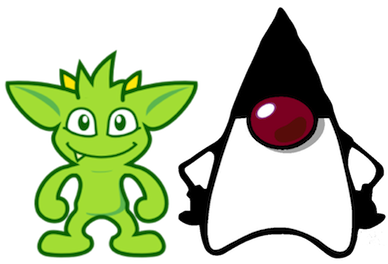 TinkerPop3 comes equipped with a reference client for Java-based applications. It is referred to as Gremlin Driver, which enables applications to send requests to Gremlin Server and get back results.
Gremlin code is sent to the server from a Client instance. A Client is created as follows:
Cluster cluster = Cluster.open(); //1
Client client = cluster.connect(); //2-
Opens a reference to
localhost- note that there are many configuration options available in defining aClusterobject. -
Creates a
Clientgiven the configuration options of theCluster.
Once a Client instance is ready, it is possible to issue some Gremlin:
ResultSet results = client.submit("[1,2,3,4]"); //1
results.stream().map(i -> i.get(Integer.class) * 2); //2
CompletableFuture<List<Result>> results = client.submit("[1,2,3,4]").all(); //3
CompletableFuture<ResultSet> future = client.submitAsync("[1,2,3,4]"); //4
Map<String,Object> params = new HashMap<>();
params.put("x",4);
client.submit("[1,2,3,x]", params); //5-
Submits a script that simply returns a
Listof integers. This method blocks until the request is written to the server and aResultSetis constructed. -
Even though the
ResultSetis constructed, it does not mean that the server has sent back the results (or even evaluated the script potentially). TheResultSetis just a holder that is awaiting the results from the server. In this case, they are streamed from the server as they arrive. -
Submit a script, get a
ResultSet, then return aCompletableFuturethat will be called when all results have been returned. -
Submit a script asynchronously without waiting for the request to be written to the server.
-
Parameterized request are considered the most efficient way to send Gremlin to the server as they can be cached, which will boost performance and reduce resources required on the server.
Configuration
The following table describes the various configuration options for the Gremlin Driver:
| Key | Description | Default |
|---|---|---|
connectionPool.channelizer |
The fully qualified classname of the client |
|
connectionPool.enableSsl |
Determines if SSL should be enabled or not. If enabled on the server then it must be enabled on the client. |
false |
connectionPool.keepAliveInterval |
Length of time in milliseconds to wait on an idle connection before sending a keep-alive request. Set to zero to disable this feature. |
1800000 |
connectionPool.keyStore |
The private key in JKS or PKCS#12 format. |
none |
connectionPool.keyStorePassword |
The password of the |
none |
connectionPool.keyStoreType |
|
none |
connectionPool.maxContentLength |
The maximum length in bytes that a message can be sent to the server. This number can be no greater than the setting of the same name in the server configuration. |
65536 |
connectionPool.maxInProcessPerConnection |
The maximum number of in-flight requests that can occur on a connection. |
4 |
connectionPool.maxSimultaneousUsagePerConnection |
The maximum number of times that a connection can be borrowed from the pool simultaneously. |
16 |
connectionPool.maxSize |
The maximum size of a connection pool for a host. |
8 |
connectionPool.maxWaitForConnection |
The amount of time in milliseconds to wait for a new connection before timing out. |
3000 |
connectionPool.maxWaitForSessionClose |
The amount of time in milliseconds to wait for a session to close before timing out (does not apply to sessionless connections). |
3000 |
connectionPool.minInProcessPerConnection |
The minimum number of in-flight requests that can occur on a connection. |
1 |
connectionPool.minSimultaneousUsagePerConnection |
The maximum number of times that a connection can be borrowed from the pool simultaneously. |
8 |
connectionPool.minSize |
The minimum size of a connection pool for a host. |
2 |
connectionPool.reconnectInterval |
The amount of time in milliseconds to wait before trying to reconnect to a dead host. |
1000 |
connectionPool.resultIterationBatchSize |
The override value for the size of the result batches to be returned from the server. |
64 |
connectionPool.sslCipherSuites |
The list of JSSE ciphers to support for SSL connections. If specified, only the ciphers that are listed and supported will be enabled. If not specified, the JVM default is used. |
none |
connectionPool.sslEnabledProtocols |
The list of SSL protocols to support for SSL connections. If specified, only the protocols that are listed and supported will be enabled. If not specified, the JVM default is used. |
none |
connectionPool.sslSkipCertValidation |
Configures the |
false |
connectionPool.trustStore |
File location for a SSL Certificate Chain to use when SSL is enabled. If this value is not provided and SSL is enabled, the default |
none |
connectionPool.trustStorePassword |
The password of the |
none |
connectionPool.validationRequest |
A script that is used to test server connectivity. A good script to use is one that evaluates quickly and returns no data. The default simply returns an empty string, but if a graph is required by a particular provider, a good traversal might be |
'' |
hosts |
The list of hosts that the driver will connect to. |
localhost |
jaasEntry |
Sets the |
none |
nioPoolSize |
Size of the pool for handling request/response operations. |
available processors |
password |
The password to submit on requests that require authentication. |
none |
port |
The port of the Gremlin Server to connect to. The same port will be applied for all hosts. |
8192 |
protocol |
Sets the |
none |
serializer.className |
The fully qualified class name of the |
none |
serializer.config |
A |
none |
username |
The username to submit on requests that require authentication. |
none |
workerPoolSize |
Size of the pool for handling background work. |
available processors * 2 |
Please see the Cluster.Builder javadoc to get more information on these settings.
Aliases
Scripts submitted to Gremlin Server automatically have the globally configured Graph and TraversalSource instances
made available to them. Therefore, if Gremlin Server configures two TraversalSource instances called "g1" and "g2"
a script can simply reference them directly as:
client.submit("g1.V()")
client.submit("g2.V()")While this is an acceptable way to submit scripts, it has the downside of forcing the client to encode the server-side
variable name directly into the script being sent. If the server configuration ever changed such that "g1" became
"g100", the client-side code might have to see a significant amount of change. Decoupling the script code from the
server configuration can be managed by the alias method on Client as follows:
Client g1Client = client.alias("g1")
Client g2Client = client.alias("g2")
g1Client.submit("g.V()")
g2Client.submit("g.V()")The above code demonstrates how the alias method can be used such that the script need only contain a reference
to "g" and "g1" and "g2" are automatically rebound into "g" on the server-side.
Serialization
When using Gryo serialization (the default serializer for the driver), it is important that the client and server have the same serializers configured or else one or the other will experience serialization exceptions and fail to always communicate. Discrepancy in serializer registration between client and server can happen fairly easily as graphs will automatically include serializers on the server-side, thus leaving the client to be configured manually. This can be done manually as follows:
GryoMapper kryo = GryoMapper.build().addRegistry(TitanIoRegistry.INSTANCE).create();
MessageSerializer serializer = new GryoMessageSerializerV3d0(kryo);
Cluster cluster = Cluster.build()
.serializer(serializer)
.create();
Client client = cluster.connect().init();The above code demonstrates using the TitanIoRegistry which is an IoRegistry instance. It tells the serializer
what classes (from Titan in this case) to auto-register during serialization. Gremlin Server roughly uses this same
approach when it configures it’s serializers, so using this same model will ensure compatibility when making requests.
Connecting via Python
pip install gremlinpythonTinkerPop3 also includes a client for Python-based applications. It is referred to as Gremlin-Python Driver.
The Client class implementation/interface is based on the Java Driver, with some restrictions. Most notably,
Gremlin-Python does not yet implement the Cluster class. Instead, Client is instantiated directly.
Usage is as follows:
from gremlin_python.driver import client //1
client = client.Client('ws://localhost:8182/gremlin', 'g') //2-
Import the Gremlin-Python
clientmodule. -
Opens a reference to
localhost- note that there are various configuration options that can be passed to theClientobject upon instantiation as keyword arguments.
Once a Client instance is ready, it is possible to issue some Gremlin:
result_set = client.submit("[1,2,3,4]") //1
future_results = result_set.all() //2
results = future_results.result() //3
assert results == [1, 2, 3, 4] //4
future_result_set = client.submitAsync("[1,2,3,4]") //5
result_set = future_result_set.result() //6
result = result_set.one() //7
assert results == [1, 2, 3, 4] //8
assert result_set.done.done() //9
client.close() //10-
Submit a script that simply returns a
Listof integers. This method blocks until the request is written to the server and aResultSetis constructed. -
Even though the
ResultSetis constructed, it does not mean that the server has sent back the results (or even evaluated the script potentially). TheResultSetis just a holder that is awaiting the results from the server. Theallmethod returns aconcurrent.futures.Futurethat resolves to a list when it is complete. -
Block until the the script is evaluated and results are sent back by the server.
-
Verify the result.
-
Submit the same script to the server but don’t block.
-
Wait until request is written to the server and
ResultSetis constructed. -
Read a single result off the result stream.
-
Again, verify the result.
-
Verify that the all results have been read and stream is closed.
-
Close client and underlying pool connections.
Configuration
The following table describes the various configuration options for the Gremlin-Python Driver. They
can be passed to the Client instance as keyword arguments:
| Key | Description | Default |
|---|---|---|
protocol_factory |
A callable that returns an instance of |
|
transport_factory |
A callable that returns an instance of |
|
pool_size |
The number of connections used by the pool. |
4 |
max_workers |
Maximum number of worker threads. |
Number of CPUs * 5 |
message_serializer |
The message serializer implementation. |
|
password |
The password to submit on requests that require authentication. |
"" |
username |
The username to submit on requests that require authentication. |
"" |
Connecting via HTTP
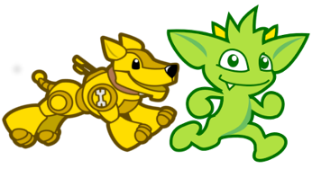 While the default behavior for Gremlin Server is to provide a WebSocket-based connection, it can also be configured to support plain HTTP web service. The HTTP endpoint provides for a communication protocol familiar to most developers, with a wide support of programming languages, tools and libraries for accessing it. As a result, HTTP provides a fast way to get started with Gremlin Server. It also may represent an easier upgrade path from Rexster as the API for the endpoint is very similar to Rexster’s Gremlin Extension.
Gremlin Server provides for a single HTTP endpoint - a Gremlin evaluator - which allows the submission of a Gremlin
script as a request. For each request, it returns a response containing the serialized results of that script.
To enable this endpoint, Gremlin Server needs to be configured with the HttpChannelizer, which replaces the default. The WsAndHttpChannelizer may also be configured to enable both WebSockets and the REST endpoint.
WebSocketChannelizer, in the configuration file:
channelizer: org.apache.tinkerpop.gremlin.server.channel.HttpChannelizerchannelizer: org.apache.tinkerpop.gremlin.server.channel.WsAndHttpChannelizerThe HttpChannelizer is already configured in the gremlin-server-rest-modern.yaml file that is packaged with the Gremlin
Server distribution. To utilize it, start Gremlin Server as follows:
bin/gremlin-server.sh conf/gremlin-server-rest-modern.yamlOnce the server has started, issue a request. Here’s an example with cURL:
$ curl "http://localhost:8182?gremlin=100-1"which returns:
{
"result":{"data":99,"meta":{}},
"requestId":"0581cdba-b152-45c4-80fa-3d36a6eecf1c",
"status":{"code":200,"attributes":{},"message":""}
}The above example showed a GET operation, but the preferred method for this endpoint is POST:
curl -X POST -d "{\"gremlin\":\"100-1\"}" "http://localhost:8182"which returns:
{
"result":{"data":99,"meta":{}},
"requestId":"ef2fe16c-441d-4e13-9ddb-3c7b5dfb10ba",
"status":{"code":200,"attributes":{},"message":""}
}It is also preferred that Gremlin scripts be parameterized when possible via bindings:
curl -X POST -d "{\"gremlin\":\"100-x\", \"bindings\":{\"x\":1}}" "http://localhost:8182"The bindings argument is a Map of variables where the keys become available as variables in the Gremlin script.
Note that parameterization of requests is critical to performance, as repeated script compilation can be avoided on
each request.
|
Note
|
It is possible to pass bindings via GET based requests. Query string arguments prefixed with "bindings." will
be treated as parameters, where that prefix will be removed and the value following the period will become the
parameter name. In other words, bindings.x will create a parameter named "x" that can be referenced in the submitted
Gremlin script. The caveat is that these arguments will always be treated as String values. To ensure that data
types are preserved or to pass complex objects such as lists or maps, use POST which will at least support the
allowed JSON data types.
|
Finally, as Gremlin Server can host multiple ScriptEngine instances (e.g. gremlin-groovy, nashorn), it is
possible to define the language to utilize to process the request:
curl -X POST -d "{\"gremlin\":\"100-x\", \"language\":\"gremlin-groovy\", \"bindings\":{\"x\":1}}" "http://localhost:8182"By default this value is set to gremlin-groovy. If using a GET operation, this value can be set as a query
string argument with by setting the language key.
|
Warning
|
Consider the size of the result of a submitted script being returned from the HTTP endpoint. A script
that iterates thousands of results will serialize each of those in memory into a single JSON result set. It is
quite possible that such a script will generate OutOfMemoryError exceptions on the server. Consider the default
WebSocket configuration, which supports streaming, if that type of use case is required.
|
Connecting via withRemote
<dependency>
<groupId>org.apache.tinkerpop</groupId>
<artifactId>gremlin-driver</artifactId>
<version>3.3.4</version>
</dependency> A
A TraversalSource has several withRemote() methods which provide an
interesting alternative to the other methods for connecting to Gremlin Server. It is interesting in that all other
methods involve construction of a String representation of the Traversal which is then submitted as a script
to Gremlin Server (via driver or HTTP). This approach is quite akin to SQL, where query strings are embedded into code
and submitted to a database server. While there are patterns for taking this approach that can lead to maintainable
application code, using withRemote() could be a better method as it brings some good benefits with it:
-
Get auto-complete when writing traversals in an IDE.
-
Get compile-time errors in traversal writing.
-
Get the feel of working with an embedded database.
One way to create a Traversal instance that is remote-enabled is by configuration file. Here is an example of what
that file looks like:
gremlin.remote.remoteConnectionClass=org.apache.tinkerpop.gremlin.driver.remote.DriverRemoteConnection
gremlin.remote.driver.clusterFile=conf/remote-objects.yaml
gremlin.remote.driver.sourceName=gThe gremlin.remote.remoteConnectionClass should be an implementation of the RemoteConnection interface in
gremlin-core. In this case, it points at the gremlin-driver implementation, called DriverRemoteConnection. The
other setting, gremlin.remote.driver.clusterFile, is a configuration to DriverRemoteConnection, and it
provides a pointer to the config file to use to construct a gremlin-driver Cluster object to be utilized when
connecting to Gremlin Server. Please see the Connecting Via Java section for more
information on those classes and their usage. Finally, the gremlin.remote.driver.sourceName setting tells the
DriverRemoteConnection the name of the TraversalSource in Gremlin Server to connect to.
|
Important
|
Gremlin Server supports configurable serialization options. The withRemote() feature works best with
Gryo serialization. While it is compatible with GraphSON, unknown incompatibilities may arise
|
Gremlin Server needs to be running for this example to work. Use the following configuration:
$ bin/gremlin-server.sh conf/gremlin-server-modern.yamlTo configure a "remote" traversal, there first needs to be a TraversalSource. A TraversalSource can be generated
from any Graph instance with the traversal() method. Of course, any traversals generated from this source using the
withRemote() configuration option will not execute against the local graph. That could be confusing and it may be
easier to think of the local graph as being "empty". To that end, it is recommended that when using withRemote(),
the TraversalSource be generated with EmptyGraph as follows:
gremlin> graph = EmptyGraph.instance()
==>emptygraph[empty]
gremlin> g = graph.traversal().withRemote('conf/remote-graph.properties')
==>graphtraversalsource[emptygraph[empty], standard]
gremlin> g.V().valueMap(true)
==>[label:person,name:[marko],id:1,age:[29]]
==>[label:person,name:[vadas],id:2,age:[27]]
==>[label:software,name:[lop],id:3,lang:[java]]
==>[label:person,name:[josh],id:4,age:[32]]
==>[label:software,name:[ripple],id:5,lang:[java]]
==>[label:person,name:[peter],id:6,age:[35]]
==>[label:person,name:[matthias],id:13]
gremlin> g.close()graph = EmptyGraph.instance()
g = graph.traversal().withRemote('conf/remote-graph.properties')
g.V().valueMap(true)
g.close()Note the call to close() above. The call to withRemote() internally instantiates a Client instance that can only
be released by "closing" the GraphTraversalSource. It is important to take that step to release resources created
in that step.
If working with multiple remote TraversalSource instances it is more efficient to construct a Cluster object and
then re-use it.
gremlin> cluster = Cluster.open('conf/remote-objects.yaml')
==>localhost/127.0.0.1:8182
gremlin> graph = EmptyGraph.instance()
==>emptygraph[empty]
gremlin> g = graph.traversal().withRemote(DriverRemoteConnection.using(cluster, "g"))
==>graphtraversalsource[emptygraph[empty], standard]
gremlin> g.V().valueMap(true)
==>[label:person,name:[marko],id:1,age:[29]]
==>[label:person,name:[vadas],id:2,age:[27]]
==>[label:software,name:[lop],id:3,lang:[java]]
==>[label:person,name:[josh],id:4,age:[32]]
==>[label:software,name:[ripple],id:5,lang:[java]]
==>[label:person,name:[peter],id:6,age:[35]]
==>[label:person,name:[matthias],id:13]
gremlin> g.close()
gremlin> cluster.close()cluster = Cluster.open('conf/remote-objects.yaml')
graph = EmptyGraph.instance()
g = graph.traversal().withRemote(DriverRemoteConnection.using(cluster, "g"))
g.V().valueMap(true)
g.close()
cluster.close()If the Cluster instance is supplied externally, as is shown above, then it is not closed implicitly by the close of
"g". Closing "g" will only close the Client instance associated with that TraversalSource. In this case, the
Cluster must also be closed explicitly. Closing "g" and the "cluster" aren’t actually both necessary - the close of
a Cluster will close all Client instance spawned by the Cluster.
|
Important
|
RemoteGraph uses the TraversalOpProcessor in Gremlin Server which requires a cache to enable the
retrieval of side-effects (if the Traversal produces any). That cache can be configured (e.g. controlling eviction
times and sizing) can be done in the Gremlin Server configuration file as described here.
|
Finally, Gremlin Bytecode supports the encoding of bindings which allow GremlinServer to cache traversals that will
be reused over and over again save that some parameterization may change. Thus, instead of translating, compiling, and
then executing each submitted bytecode, it is possible to simply execute. To express bindings in Gremlin-Java and
Gremlin-Groovy, use Bindings.
gremlin> cluster = Cluster.open('conf/remote-objects.yaml')
==>localhost/127.0.0.1:8182
gremlin> b = Bindings.instance()
==>bindings[main]
gremlin> g = EmptyGraph.instance().traversal().withRemote(DriverRemoteConnection.using(cluster, "g"))
==>graphtraversalsource[emptygraph[empty], standard]
gremlin> g.V(b.of('id',1)).out('created').values('name')
==>lop
gremlin> g.V(b.of('id',4)).out('created').values('name')
==>ripple
==>lop
gremlin> g.V(b.of('id',4)).out('created').values('name').getBytecode()
==>[[], [V(binding[id=4]), out(created), values(name)]]
gremlin> g.V(b.of('id',4)).out('created').values('name').getBytecode().getBindings()
==>id=4
gremlin> cluster.close()cluster = Cluster.open('conf/remote-objects.yaml')
b = Bindings.instance()
g = EmptyGraph.instance().traversal().withRemote(DriverRemoteConnection.using(cluster, "g"))
g.V(b.of('id',1)).out('created').values('name')
g.V(b.of('id',4)).out('created').values('name')
g.V(b.of('id',4)).out('created').values('name').getBytecode()
g.V(b.of('id',4)).out('created').values('name').getBytecode().getBindings()
cluster.close()Both traversals are abstractly defined as g.V(id).out('created').values('name') and thus, the first submission
can be cached for faster evaluation on the next submission.
Configuring
The gremlin-server.sh file serves multiple purposes. It can be used to "install" dependencies to the Gremlin
Server path. For example, to be able to configure and use other Graph implementations, the dependencies must be
made available to Gremlin Server. To do this, use the install switch and supply the Maven coordinates for the dependency
to "install". For example, to use Neo4j in Gremlin Server:
bin/gremlin-server.sh install org.apache.tinkerpop neo4j-gremlin 3.3.4This command will "grab" the appropriate dependencies and copy them to the ext directory of Gremlin Server, which
will then allow them to be "used" the next time the server is started. To uninstall dependencies, simply delete them
from the ext directory.
bin/gremlin-server.sh has several other options.
| Parameter | Description |
|---|---|
start |
Start the server in the background. |
stop |
Shutdown the server. |
restart |
Shutdown a running server then start it again. |
status |
Check if the server is running. |
console |
Start the server in the foreground. Use ^C to kill it. |
install <group> <artifact> <version> |
Install dependencies into the server. "-i" exists for backwards compatibility but is deprecated. |
<conf file> |
Start the server in the foreground using the provided YAML config file. |
The bin/gremlin-server.sh script can be customized with environment variables in bin/gremlin-server.conf.
| Variable | Description |
|---|---|
DEBUG |
Enable debugging of the startup script |
GREMLIN_HOME |
The Gremlin Server install directory. Use this if the script has trouble finding itself. |
GREMLIN_YAML |
The default server YAML file (conf/gremlin-server.yaml) |
LOG_DIR |
Location of gremlin.log where stdout/stderr are captured (logs/) |
PID_DIR |
Location of gremlin.pid |
RUNAS |
User to run the server as |
JAVA_HOME |
Java install location. Will use $JAVA_HOME/bin/java |
JAVA_OPTIONS |
Options passed to the JVM |
As mentioned earlier, Gremlin Server is configured though a YAML file. By default, Gremlin Server will look for a
file called conf/gremlin-server.yaml to configure itself on startup. To override this default, set GREMLIN_YAML in bin/gemlin-server.conf or supply the file
to use to bin/gremlin-server.sh as in:
bin/gremlin-server.sh conf/gremlin-server-min.yaml|
Warning
|
On Windows, gremlin-server.bat will always start in the foreground. When no parameter is provided, it will start with the default conf/gremlin-server.yaml file.
|
The following table describes the various YAML configuration options that Gremlin Server expects:
| Key | Description | Default |
|---|---|---|
authentication.authenticator |
The fully qualified classname of an |
|
authentication.authenticationHandler |
The fully qualified classname of an |
none |
authentication.config |
A |
none |
authentication.enableAuditLog |
The available authenticators can issue audit logging messages, binding the authenticated user to his remote socket address and binding requests with a gremlin query to the remote socket address. For privacy reasons, the default value of this setting is false. The audit logging messages are logged at the INFO level via the |
false |
channelizer |
The fully qualified classname of the |
|
graphManager |
The fully qualified classname of the |
|
graphs |
A |
none |
gremlinPool |
The number of "Gremlin" threads available to execute actual scripts in a |
0 |
host |
The name of the host to bind the server to. |
localhost |
idleConnectionTimeout |
Time in milliseconds that the server will allow a channel to not receive requests from a client before it automatically closes. If enabled, the value provided should typically exceed the amount of time given to |
0 |
keepAliveInterval |
Time in milliseconds that the server will allow a channel to not send responses to a client before it sends a "ping" to see if it is still present. If it is present, the client should respond with a "pong" which will thus reset the |
0 |
maxAccumulationBufferComponents |
Maximum number of request components that can be aggregated for a message. |
1024 |
maxChunkSize |
The maximum length of the content or each chunk. If the content length exceeds this value, the transfer encoding of the decoded request will be converted to 'chunked' and the content will be split into multiple |
8192 |
maxContentLength |
The maximum length of the aggregated content for a message. Works in concert with |
65536 |
maxHeaderSize |
The maximum length of all headers. |
8192 |
maxInitialLineLength |
The maximum length of the initial line (e.g. "GET / HTTP/1.0") processed in a request, which essentially controls the maximum length of the submitted URI. |
4096 |
metrics.consoleReporter.enabled |
Turns on console reporting of metrics. |
false |
metrics.consoleReporter.interval |
Time in milliseconds between reports of metrics to console. |
180000 |
metrics.csvReporter.enabled |
Turns on CSV reporting of metrics. |
false |
metrics.csvReporter.fileName |
The file to write metrics to. |
none |
metrics.csvReporter.interval |
Time in milliseconds between reports of metrics to file. |
180000 |
metrics.gangliaReporter.addressingMode |
Set to |
none |
metrics.gangliaReporter.enabled |
Turns on Ganglia reporting of metrics. Additional setup is required. |
false |
metrics.gangliaReporter.host |
Define the Ganglia host to report Metrics to. |
localhost |
metrics.gangliaReporter.interval |
Time in milliseconds between reports of metrics for Ganglia. |
180000 |
metrics.gangliaReporter.port |
Define the Ganglia port to report Metrics to. |
8649 |
metrics.graphiteReporter.enabled |
Turns on Graphite reporting of metrics. Additional setup is required. |
false |
metrics.graphiteReporter.host |
Define the Graphite host to report Metrics to. |
localhost |
metrics.graphiteReporter.interval |
Time in milliseconds between reports of metrics for Graphite. |
180000 |
metrics.graphiteReporter.port |
Define the Graphite port to report Metrics to. |
2003 |
metrics.graphiteReporter.prefix |
Define a "prefix" to append to metrics keys reported to Graphite. |
none |
metrics.jmxReporter.enabled |
Turns on JMX reporting of metrics. |
false |
metrics.slf4jReporter.enabled |
Turns on SLF4j reporting of metrics. |
false |
metrics.slf4jReporter.interval |
Time in milliseconds between reports of metrics to SLF4j. |
180000 |
port |
The port to bind the server to. |
8182 |
processors |
A |
none |
processors[X].className |
The full class name of the |
none |
processors[X].config |
A |
none |
resultIterationBatchSize |
Defines the size in which the result of a request is "batched" back to the client. In other words, if set to |
64 |
scriptEngines |
A |
gremlin-groovy |
scriptEngines.<name>.imports |
A comma separated list of classes/packages to make available to the |
none |
scriptEngines.<name>.staticImports |
A comma separated list of "static" imports to make available to the |
none |
scriptEngines.<name>.scripts |
A comma separated list of script files to execute on |
none |
scriptEngines.<name>.config |
A |
none |
scriptEvaluationTimeout |
The amount of time in milliseconds before a script evaluation and iteration of result times out. This feature can be turned off by setting the value to |
30000 |
serializers |
A |
empty |
serializers[X].className |
The full class name of the |
none |
serializers[X].config |
A |
none |
ssl.enabled |
Determines if SSL is turned on or not. |
false |
ssl.keyStore |
The private key in JKS or PKCS#12 format. |
none |
ssl.keyStorePassword |
The password of the |
none |
ssl.keyStoreType |
|
none |
ssl.needClientAuth |
Optional. One of NONE, REQUIRE. Enables client certificate authentication at the enforcement level specified. Can be used in combination with Authenticator. |
none |
ssl.sslCipherSuites |
The list of JSSE ciphers to support for SSL connections. If specified, only the ciphers that are listed and supported will be enabled. If not specified, the JVM default is used. |
none |
ssl.sslEnabledProtocols |
The list of SSL protocols to support for SSL connections. If specified, only the protocols that are listed and supported will be enabled. If not specified, the JVM default is used. |
none |
ssl.trustStore |
Required when needClientAuth is REQUIRE. Trusted certificates for verifying the remote endpoint’s certificate. If this value is not provided and SSL is enabled, the default |
none |
ssl.trustStorePassword |
The password of the |
none |
strictTransactionManagement |
Set to |
false |
threadPoolBoss |
The number of threads available to Gremlin Server for accepting connections. Should always be set to |
1 |
threadPoolWorker |
The number of threads available to Gremlin Server for processing non-blocking reads and writes. |
1 |
useEpollEventLoop |
try to use epoll event loops (works only on Linux os) instead of netty NIO. |
false |
writeBufferHighWaterMark |
If the number of bytes in the network send buffer exceeds this value then the channel is no longer writeable, accepting no additional writes until buffer is drained and the |
65536 |
writeBufferLowWaterMark |
Once the number of bytes queued in the network send buffer exceeds the |
65536 |
See the Metrics section for more information on how to configure Ganglia and Graphite.
OpProcessor Configurations
An OpProcessor provides a way to plug-in handlers to Gremlin Server’s processing flow. Gremlin Server uses this
plug-in system itself to expose the packaged functionality that it exposes. Configurations can be supplied to an
OpProcessor through the processors key in the Gremlin Server configuration file. Each OpProcessor can take a
Map of arguments which are specific to a particular implementation:
processors:
- { className: org.apache.tinkerpop.gremlin.server.op.session.SessionOpProcessor, config: { sessionTimeout: 28800000 }}The following sub-sections describe those configurations for each OpProcessor implementations supplied with Gremlin
Server.
SessionOpProcessor
The SessionOpProcessor provides a way to interact with Gremlin Server over a session.
| Name | Description | Default |
|---|---|---|
maxParameters |
Maximum number of parameters that can be passed on the request. |
16 |
perGraphCloseTimeout |
Time in milliseconds to wait for each configured graph to close any open transactions when the session is killed. |
10000 |
sessionTimeout |
Time in milliseconds before a session will time out. |
28800000 |
StandardOpProcessor
The StandardOpProcessor provides a way to interact with Gremlin Server without use of sessions and is the default
method for processing script evaluation requests.
| Name | Description | Default |
|---|---|---|
maxParameters |
Maximum number of parameters that can be passed on the request. |
16 |
TraversalOpProcessor
The TraversalOpProcessor provides a way to use RemoteGraph.
| Name | Description | Default |
|---|---|---|
cacheExpirationTime |
Time in milliseconds before side-effects from a |
60000 |
cacheMaxSize |
The maximum number of entries in the side-effect cache. |
1000 |
Security
Gremlin Server provides for several features that aid in the security of the graphs that it exposes. In particular it supports SSL for transport layer security, protective measures against malicious script execution, and authentication. SSL options are described in the configuration settings table in the Connecting via Java section. Script execution options are covered at the end of this section. This section starts with authentication.
Gremlin Server supports a pluggable authentication framework using SASL (Simple Authentication and Security Layer). Depending on the client used to connect to Gremlin Server, different authentication mechanisms are accessible, see the table below.
| Client | Authentication mechanism | Availability |
|---|---|---|
HTTP |
BASIC |
3.0.0-incubating |
Gremlin-Java/
Gremlin-Console |
PLAIN SASL (username/password) |
3.0.0-incubating |
Pluggable SASL |
3.0.0-incubating |
|
GSSAPI SASL (Kerberos) |
3.3.0 |
|
Gremlin-Python |
PLAIN SASL |
3.2.2 |
Gremlin-Javascript |
PLAIN SASL |
3.3.0 |
By default, Gremlin Server is configured to allow all requests to be processed (i.e. no authentication). To enable
authentication, Gremlin Server must be configured with an Authenticator implementation in its YAML file. Gremlin
Server comes packaged with two implementations called SimpleAuthenticator for plain text authentication using HTTP BASIC or
PLAIN SASL and Krb5Authenticator for Kerberos authentication using GSSAPI SASL.
Plain text authentication
The SimpleAuthenticator implements the "PLAIN" SASL mechanism (i.e. plain text) to authenticate a request. It also
supports handling basic authentication requests from http clients. It validates
username/password pairs against a graph database, which must be provided to it as part of the configuration.
authentication: {
authenticator: org.apache.tinkerpop.gremlin.server.auth.SimpleAuthenticator,
config: {
credentialsDb: conf/tinkergraph-credentials.properties}}A quick way to get started with the SimpleAuthenticator is to use TinkerGraph for the "credentials graph" and the
"sample" credential graph that is packaged with the server. To secure the transport for the credentials,
SSL should be enabled. For this Quick Start, a self-signed certificate will be created but this should not
be used in a production environment.
Generate the self-signed SSL certificate:
$ keytool -genkey -alias localhost -keyalg RSA -keystore server.jks
Enter keystore password:
Re-enter new password:
What is your first and last name?
[Unknown]: localhost
What is the name of your organizational unit?
[Unknown]:
What is the name of your organization?
[Unknown]:
What is the name of your City or Locality?
[Unknown]:
What is the name of your State or Province?
[Unknown]:
What is the two-letter country code for this unit?
[Unknown]:
Is CN=localhost, OU=Unknown, O=Unknown, L=Unknown, ST=Unknown, C=Unknown correct?
[no]: yes
Enter key password for <localhost>
(RETURN if same as keystore password):Next, uncomment the keyStore and keyStorePassword lines in conf/gremlin-server-secure.yaml.
ssl: {
enabled: true,
sslEnabledProtocols: [TLSv1.2],
keyStore: server.jks,
keyStorePassword: changeit
}$ bin/gremlin-server.sh conf/gremlin-server-secure.yaml
[INFO] GremlinServer -
\,,,/
(o o)
-----oOOo-(3)-oOOo-----
[INFO] GremlinServer - Configuring Gremlin Server from conf/gremlin-server-secure.yaml
...
[INFO] AbstractChannelizer - SSL enabled
[INFO] SimpleAuthenticator - Initializing authentication with the org.apache.tinkerpop.gremlin.server.auth.SimpleAuthenticator
[INFO] SimpleAuthenticator - CredentialGraph initialized at CredentialGraph{graph=tinkergraph[vertices:1 edges:0]}
[INFO] GremlinServer$1 - Gremlin Server configured with worker thread pool of 1, gremlin pool of 8 and boss thread pool of 1.
[INFO] GremlinServer$1 - Channel started at port 8182.As SSL is enabled on the server it must also be enabled on the client when connecting. To connect to
Gremlin Server with gremlin-driver, set the credentials, enableSsl, and trustStore when constructing the Cluster.
Cluster cluster = Cluster.build().credentials("stephen", "password")
.enableSsl(true).trustStore("server.jks").create();If connecting with Gremlin Console, which utilizes gremlin-driver for remote script execution, use the provided
conf/remote-secure.yaml file when defining the remote. That file contains configuration for the username and
password as well as enablement of SSL from the client side. Be sure to configure the trustStore if using self-signed certificates.
Similarly, Gremlin Server can be configured for REST and security. Follow the steps above for configuring the SSL certificate.
$ bin/gremlin-server.sh conf/gremlin-server-rest-secure.yaml
[INFO] GremlinServer -
\,,,/
(o o)
-----oOOo-(3)-oOOo-----
[INFO] GremlinServer - Configuring Gremlin Server from conf/gremlin-server-secure.yaml
...
[INFO] AbstractChannelizer - SSL enabled
[INFO] SimpleAuthenticator - Initializing authentication with the org.apache.tinkerpop.gremlin.server.auth.SimpleAuthenticator
[INFO] SimpleAuthenticator - CredentialGraph initialized at CredentialGraph{graph=tinkergraph[vertices:1 edges:0]}
[INFO] GremlinServer$1 - Gremlin Server configured with worker thread pool of 1, gremlin pool of 8 and boss thread pool of 1.
[INFO] GremlinServer$1 - Channel started at port 8182.Once the server has started, issue a request passing the credentials with an Authentication header, as described in RFC2617. Here’s a HTTP Basic authentication example with cURL:
curl -X POST --insecure -u stephen:password -d "{\"gremlin\":\"100-1\"}" "https://localhost:8182"Credentials Graph DSL
The "credentials graph", which has been mentioned in previous sections, is used by Gremlin Server to hold the list of
users who can authenticate to the server. It is possible to use virtually any Graph instance for this task as long
as it complies to a defined schema. The credentials graph stores users as vertices with the label of "user". Each
"user" vertex has two properties: username and password. Naturally, these are both String values. The password
must not be stored in plain text and should be hashed.
|
Important
|
Be sure to define an index on the username property, as this will be used for lookups. If supported by
the Graph, consider specifying a unique constraint as well.
|
To aid with the management of a credentials graph, Gremlin Server provides a Gremlin Console plugin which can be used to add and remove users so as to ensure that the schema is adhered to, thus ensuring compatibility with Gremlin Server. In addition, as it is a plugin, it works naturally in the Gremlin Console as an extension of its capabilities (though one could use it programmatically, if desired). This plugin is distributed with the Gremlin Console so it does not have to be "installed". It does however need to be activated:
gremlin> :plugin use tinkerpop.credentials
==>tinkerpop.credentials activatedPlease see the example usage as follows:
gremlin> graph = TinkerGraph.open()
==>tinkergraph[vertices:0 edges:0]
gremlin> graph.createIndex("username",Vertex.class)
gremlin> credentials = graph.traversal(CredentialTraversalSource.class)
==>credentialtraversalsource[tinkergraph[vertices:0 edges:0], standard]
gremlin> credentials.user("stephen","password")
==>v[0]
gremlin> credentials.user("daniel","better-password")
==>v[3]
gremlin> credentials.user("marko","rainbow-dash")
==>v[6]
gremlin> credentials.users("marko").valueMap()
==>[password:[$2a$04$oA/qsL8JJvVDAGOI9SSwJeiUyKJjh.DJZniaQqrn8ThocSS.t6Ale],username:[marko]]
gremlin> credentials.users().count()
==>3
gremlin> credentials.users("daniel").drop()
gremlin> credentials.users().count()
==>2graph = TinkerGraph.open()
graph.createIndex("username",Vertex.class)
credentials = graph.traversal(CredentialTraversalSource.class)
credentials.user("stephen","password")
credentials.user("daniel","better-password")
credentials.user("marko","rainbow-dash")
credentials.users("marko").valueMap()
credentials.users().count()
credentials.users("daniel").drop()
credentials.users().count()|
Note
|
The Credentials DSL is built using TinkerPop’s DSL Annotation Processor described here. |
|
Important
|
In the above example, an empty in-memory TinkerGraph was used for demonstrating the API of the DSL. Obviously, this data will not be retained and usable with Gremlin Server. It would be important to configure TinkerGraph to persist that data or to manually persist it (e.g. write the graph data to Gryo) once changes are complete. Alternatively, use a persistent graph to hold the credentials and configure Gremlin Server accordingly. |
Kerberos Authentication
The Krb5Authenticator implements the "GSSAPI" SASL mechanism (i.e. Kerberos) to authenticate a request from a Gremlin
client. It can be applied in an existing Kerberos environment and validates whether a
valid authentication proof and service ticket are
offered.
authentication: {
className: org.apache.tinkerpop.gremlin.server.auth.Krb5Authenticator,
config: {
principal: gremlinserver/hostname.your.org@YOUR.REALM,
keytab: /etc/security/keytabs/gremlinserver.service.keytab}}Krb5Authenticator needs a Kerberos service principal and a keytab that holds the secret key for that principal. The keytab
location and service name, e.g. gremlinserver, are free to be chosen, but Gremlin clients have to specify this service name
as the protocol. For Gremlin-Console the protocol is an entry in the remote.yaml file, for Gremlin-java the client builder
has a protocol() method.
In addition to the protocol, the Gremlin client needs to specify a jaasEntry, an entry in the
JAAS configuration file. Gremlin-Console
comes with a sample gremlin-jaas.conf file with a GremlinConsole jaasEntry:
GremlinConsole {
com.sun.security.auth.module.Krb5LoginModule required
doNotPrompt=true
useTicketCache=true;
};This configuration tells Gremlin-Console to pass authentication requests from gremlin-server to the Krb5LoginModule, which is part of the java standard library. The Krb5LoginModule does not prompt the user for a username and password but uses the ticket cache that is normally refreshed when a user logs in to a host within the Kerberos realm.
Finally, the Gremlin client needs the location of the JAAS configuration file to be passed as a system property to the JVM. For Gremlin-Console the easiest way to do this is to pass it to the run script via the JAVA_OPTIONS environment property:
export JAVA_OPTIONS="$JAVA_OPTIONS -Djava.security.auth.login.config=conf/gremlin-jaas.conf"Protecting Script Execution
It is important to remember that Gremlin Server exposes GremlinScriptEngine instances that allows for remote execution
of arbitrary code on the server. Obviously, this situation can represent a security risk or, more minimally, provide
ways for "bad" scripts to be inadvertently executed. A simple example of a "valid" Gremlin script that would cause
some problems would be, while(true) {}, which would consume a thread in the Gremlin pool indefinitely, thus
preventing it from serving other requests. Sending enough of these kinds of scripts would eventually consume all
available threads and Gremlin Server would stop responding.
Scripts have access to the full power of their language and the JVM on which they are running. This means that they
can access certain APIs that have nothing to do with Gremlin itself, such as java.lang.System or the java.io
and java.net packages. Scripts offer developers a lot of flexibility, but having that flexibility comes at the cost
of safety. A Gremlin Server instance that is not secured appropriately provides for a big security risk.
The previous sections discussed methods for securing Gremlin Server through authentication and encryption, which is a
good first step in protection. Another layer of protection comes in the form of specific configurations for the
GremlinGroovyScriptEngine. A user can configure the script engine with a GroovyCompilerGremlinPlugin
implementation. Consider the basic configuration from the Gremlin Server YAML file:
scriptEngines: {
gremlin-groovy: {
plugins: { org.apache.tinkerpop.gremlin.server.jsr223.GremlinServerGremlinPlugin: {},
org.apache.tinkerpop.gremlin.tinkergraph.jsr223.TinkerGraphGremlinPlugin: {},
org.apache.tinkerpop.gremlin.jsr223.ImportGremlinPlugin: {classImports: [java.lang.Math], methodImports: [java.lang.Math#*]},
org.apache.tinkerpop.gremlin.jsr223.ScriptFileGremlinPlugin: {files: [scripts/empty-sample.groovy]}}}}This configuration can be expanded to include a the GroovyCompilerGremlinPlugin:
scriptEngines: {
gremlin-groovy: {
plugins: { org.apache.tinkerpop.gremlin.server.jsr223.GremlinServerGremlinPlugin: {},
org.apache.tinkerpop.gremlin.tinkergraph.jsr223.TinkerGraphGremlinPlugin: {}
org.apache.tinkerpop.gremlin.jsr223.ImportGremlinPlugin: {classImports: [java.lang.Math], methodImports: [java.lang.Math#*]},
org.apache.tinkerpop.gremlin.jsr223.ScriptFileGremlinPlugin: {files: [scripts/empty-sample-secure.groovy]},
org.apache.tinkerpop.gremlin.groovy.jsr223.GroovyCompilerGremlinPlugin: {enableThreadInterrupt: true}}}}This configuration sets up the script engine with to ensure that loops (like while) will respect interrupt requests.
With this configuration in place, a remote execution as follows, now times out rather than consuming the thread
continuously:
gremlin> :remote connect tinkerpop.server conf/remote.yaml
==>Configured localhost/127.0.0.1:8182
gremlin> :> while(true) { }
==>Script evaluation exceeded the configured 'scriptEvaluationTimeout' threshold of 30000 ms or evaluation was otherwise cancelled directly for request [while(true) {}]The GroovyCompilerGremlinPlugin has a number of configuration options:
| Customizer | Description |
|---|---|
|
Allows for three configurations: |
|
Allows configuration of the Groovy |
|
Injects checks for thread interruption, thus allowing the script to potentially respect calls to |
|
The amount of time in milliseconds a script is allowed to compile before a warning message is sent to the logs. |
|
This setting is for use when |
|
Note
|
Consult the latest Groovy Documentation for information on the differences. It is important to understand the impact that these configuration will have on submitted scripts before enabling this feature. |
To provide some basic out-of-the-box protections against troublesome scripts, the following configuration can be used:
scriptEngines: {
gremlin-groovy: {
plugins: { org.apache.tinkerpop.gremlin.server.jsr223.GremlinServerGremlinPlugin: {},
org.apache.tinkerpop.gremlin.tinkergraph.jsr223.TinkerGraphGremlinPlugin: {}
org.apache.tinkerpop.gremlin.groovy.jsr223.GroovyCompilerGremlinPlugin: {enableThreadInterrupt: true, compilation: COMPILE_STATIC, extensions: org.apache.tinkerpop.gremlin.groovy.jsr223.customizer.SimpleSandboxExtension},
org.apache.tinkerpop.gremlin.jsr223.ImportGremlinPlugin: {classImports: [java.lang.Math], methodImports: [java.lang.Math#*]},
org.apache.tinkerpop.gremlin.jsr223.ScriptFileGremlinPlugin: {files: [scripts/empty-sample-secure.groovy]}}}}This configuration uses the SimpleSandboxExtension, which blacklists calls to methods on the System class,
thereby preventing someone from remotely killing the server:
gremlin> :> System.exit(0)
Script8.groovy: 1: [Static type checking] - Not authorized to call this method: java.lang.System#exit(int)
@ line 1, column 1.
System.exit(0)
^
1 errorThe SimpleSandboxExtension is by no means a "complete" implementation protecting against all manner of nefarious
scripts, but it does provide an example for how such a capability might be implemented. A more complete implementation
is offered in the FileSandboxExtension which uses a configuration file to white list certain classes and methods.
The configuration file is YAML-based and an example is presented as follows:
autoTypeUnknown: true
methodWhiteList:
- java\.lang\.Boolean.*
- java\.lang\.Byte.*
- java\.lang\.Character.*
- java\.lang\.Double.*
- java\.lang\.Enum.*
- java\.lang\.Float.*
- java\.lang\.Integer.*
- java\.lang\.Long.*
- java\.lang\.Math.*
- java\.lang\.Number.*
- java\.lang\.Object.*
- java\.lang\.Short.*
- java\.lang\.String.*
- java\.lang\.StringBuffer.*
- java\.lang\.System#currentTimeMillis\(\)
- java\.lang\.System#nanoTime\(\)
- java\.lang\.Throwable.*
- java\.lang\.Void.*
- java\.util\..*
- org\.codehaus\.groovy\.runtime\.DefaultGroovyMethods.*
- org\.codehaus\.groovy\.runtime\.InvokerHelper#runScript\(java\.lang\.Class,java\.lang\.String\[\]\)
- org\.codehaus\.groovy\.runtime\.StringGroovyMethods.*
- groovy\.lang\.Script#<init>\(groovy.lang.Binding\)
- org\.apache\.tinkerpop\.gremlin\.structure\..*
- org\.apache\.tinkerpop\.gremlin\.process\..*
- org\.apache\.tinkerpop\.gremlin\.process\.computer\..*
- org\.apache\.tinkerpop\.gremlin\.process\.computer\.bulkloading\..*
- org\.apache\.tinkerpop\.gremlin\.process\.computer\.clustering\.peerpressure\.*
- org\.apache\.tinkerpop\.gremlin\.process\.computer\.ranking\.pagerank\.*
- org\.apache\.tinkerpop\.gremlin\.process\.computer\.traversal\..*
- org\.apache\.tinkerpop\.gremlin\.process\.traversal\..*
- org\.apache\.tinkerpop\.gremlin\.process\.traversal\.dsl\.graph\..*
- org\.apache\.tinkerpop\.gremlin\.process\.traversal\.engine\..*
- org\.apache\.tinkerpop\.gremlin\.server\.util\.LifeCycleHook.*
staticVariableTypes:
graph: org.apache.tinkerpop.gremlin.structure.Graph
g: org.apache.tinkerpop.gremlin.process.traversal.dsl.graph.GraphTraversalSourceThere are three keys in this configuration file that control different aspects of the sandbox:
-
autoTypeUnknown- When set totrue, unresolved variables are typed asObject. -
methodWhiteList- A white list of classes and methods that follow a regex pattern which can then be matched against method descriptors to determine if they can be executed. The method descriptor is the fully-qualified class name of the method, its name and parameters. For example,Math.ceilwould have a descriptor ofjava.lang.Math#ceil(double). -
staticVariableTypes- A list of variables that will be used in theScriptEnginefor which the types are always known. In the above example, the variable "graph" will always be bound to aGraphinstance.
At Gremlin Server startup, the FileSandboxExtension looks in the root of Gremlin Server installation directory for a
file called sandbox.yaml and configures itself. To use a file in a different location set the
gremlinServerSandbox system property to the location of the file (e.g. -DgremlinServerSandbox=conf/my-sandbox.yaml).
The FileSandboxExtension provides for a basic configurable security function in Gremlin Server. More complex
sandboxing implementations can be developed by using this white listing model and extending from the
AbstractSandboxExtension.
A final thought on the topic of GroovyCompilerGremlinPlugin implementation is that it is not just for
"security" (though is is demonstrated in that capacity here). It can be used for a variety of features that
can fine tune the Groovy compilation process. Read more about compilation customization in the
Groovy Documentation.
Serialization
Gremlin Server can accept requests and return results using different serialization formats. Serializers implement the
MessageSerializer interface. In doing so, they express the list of mime types they expect to support. When
configuring multiple serializers it is possible for two or more serializers to support the same mime type. Such a
situation may be common with a generic mime type such as application/json. Serializers are added in the order that
they are encountered in the configuration file and the first one added for a specific mime type will not be overridden
by other serializers that also support it.
The format of the serialization is configured by the serializers setting described in the table above. Note that
some serializers have additional configuration options as defined by the serializers[X].config setting. The
config setting is a Map where the keys and values get passed to the serializer at its initialization. The
available and/or expected keys are dependent on the serializer being used. Gremlin Server comes packaged with two
different serializers: GraphSON and Gryo.
GraphSON
The GraphSON serializer produces human readable output in JSON format and is a good configuration choice for those trying to use TinkerPop from non-JVM languages. JSON obviously has wide support across virtually all major programming languages and can be consumed by a wide variety of tools.
- { className: org.apache.tinkerpop.gremlin.driver.ser.GraphSONMessageSerializerV1d0 }
- { className: org.apache.tinkerpop.gremlin.driver.ser.GraphSONMessageSerializerV2d0 }The above configuration represents the default serialization under the application/json MIME type and produces JSON
consistent with standard JSON data types. It has the following configuration option:
| Key | Description | Default |
|---|---|---|
ioRegistries |
A list of |
none |
- { className: org.apache.tinkerpop.gremlin.driver.ser.GraphSONMessageSerializerGremlinV1d0 }When the standard JSON data types are not enough (e.g. need to identify the difference between double and float
data types), the above configuration will embed types into the JSON itself. The type embedding uses standard Java
type names, so interpretation from non-JVM languages will be required. It has the MIME type of
application/vnd.gremlin-v1.0+json and the following configuration options:
| Key | Description | Default |
|---|---|---|
ioRegistries |
A list of |
none |
Gryo
The Gryo serializer utilizes Kryo-based serialization which produces a binary output. This format is best consumed by JVM-based languages.
- { className: org.apache.tinkerpop.gremlin.driver.ser.GryoMessageSerializerGremlinV1d0 }It has the MIME type of application/vnd.gremlin-v1.0+gryo and the following configuration options:
| Key | Description | Default |
|---|---|---|
bufferSize |
The maximum size of the Kryo buffer for use on a single object being serialized. Increasing this value will correct |
4096 |
classResolverSupplier |
The fully qualified classname of a custom |
none |
custom |
A list of classes with custom kryo |
none |
ioRegistries |
A list of |
none |
serializeResultToString |
When set to |
false |
As described above, there are multiple ways in which to register serializers for Kryo-based serialization. These
configurations can be used in conjunction with one another where there is a specific ordering to how the configurations
are applied. The userMapperFromGraph setting is applied first, followed by any ioRegistries and finalized by the
custom setting.
Those configuring or implementing a Supplier<ClassResolver> should consider this an "advanced" option and typically
important to use cases where server types need to be coerced to client types (i.e. a type is available on the server
but not on the client). Implementations should typically instantiate ClassResolver implementations that are
extensions of the GryoClassResolver as this class is important to most serialization tasks in TinkerPop.
Metrics
Gremlin Server produces metrics about its operations that can yield some insight into how it is performing. These metrics are exposed in a variety of ways:
The configuration of each of these outputs is described in the Gremlin Server Configuring section. Note that Graphite and Ganglia are not included as part of the Gremlin Server distribution and must be installed to the server manually.
bin/gremlin-server.sh install com.codahale.metrics metrics-ganglia 3.0.2
bin/gremlin-server.sh install com.codahale.metrics metrics-graphite 3.0.2|
Warning
|
Gremlin Server is built to work with Metrics 3.0.2. Usage of other versions may lead to unexpected problems. |
|
Note
|
Installing Ganglia will include org.acplt:oncrpc, which is an LGPL licensed dependency.
|
Regardless of the output, the metrics gathered are the same. Each metric is prefixed with
org.apache.tinkerpop.gremlin.server.GremlinServer and the following metrics are reported:
-
sessions- the number of sessions open at the time the metric was last measured. -
errors- the number of total errors, mean rate, as well as the 1, 5, and 15-minute error rates. -
op.eval- the number of script evaluations, mean rate, 1, 5, and 15 minute rates, minimum, maximum, median, mean, and standard deviation evaluation times, as well as the 75th, 95th, 98th, 99th and 99.9th percentile evaluation times (note that these time apply to both sessionless and in-session requests). -
op.traversal- the number ofTraversalexecutions, mean rate, 1, 5, and 15 minute rates, minimum, maximum, median, mean, and standard deviation evaluation times, as well as the 75th, 95th, 98th, 99th and 99.9th percentile evaluation times. -
engine-name.session.session-id.*- metrics related to differentGremlinScriptEngineinstances configured for session-based requests where "engine-name" will be the actual name of the engine, such as "gremlin-groovy" and "session-id" will be the identifier for the session itself. -
engine-name.sessionless.*- metrics related to differentGremlinScriptEngineinstances configured for sessionless requests where "engine-name" will be the actual name of the engine, such as "gremlin-groovy".
As A Service
Gremlin server can be configured to run as a service.
Init.d (SysV)
Link bin/gremlin-server.sh to init.d
Be sure to set RUNAS to the service user in bin/gremlin-server.conf
# Install
ln -s /path/to/apache-tinkerpop-gremlin-server-3.3.4/bin/gremlin-server.sh /etc/init.d/gremlin-server
# Systems with chkconfig/service. E.g. Fedora, Red Hat
chkconfig --add gremlin-server
# Start
service gremlin-server start
# Or call directly
/etc/init.d/gremlin-server restartSystemd
To install, copy the service template below to /etc/systemd/system/gremlin.service
and update the paths /path/to/apache-tinkerpop-gremlin-server with the actual install path of Gremlin Server.
[Unit]
Description=Apache TinkerPop Gremlin Server daemon
Documentation=http://tinkerpop.apache.org/
After=network.target
[Service]
Type=forking
ExecStart=/path/to/apache-tinkerpop-gremlin-server/bin/gremlin-server.sh start
ExecStop=/path/to/apache-tinkerpop-gremlin-server/bin/gremlin-server.sh stop
PIDFile=/path/to/apache-tinkerpop-gremlin-server/run/gremlin.pid
[Install]
WantedBy=multi-user.targetEnable the service with systemctl enable gremlin-server
Start the service with systemctl start gremlin-server
Best Practices
The following sections define best practices for working with Gremlin Server.
Tuning
 Tuning Gremlin Server for a particular environment may require some simple trial-and-error, but the following represent some basic guidelines that might be useful:
Tuning Gremlin Server for a particular environment may require some simple trial-and-error, but the following represent some basic guidelines that might be useful:
-
Gremlin Server defaults to a very modest maximum heap size. Consider increasing this value for non-trivial uses. Maximum heap size (
-Xmx) is defined with theJAVA_OPTIONSsetting ingremlin-server.conf. -
When configuring the size of
threadPoolWorkerstart with the default of1and increment by one as needed to a maximum of2*number of cores. -
The "right" size of the
gremlinPoolsetting is somewhat dependent on the type of scripts that will be processed by Gremlin Server. As requests arrive to Gremlin Server they are decoded and queued to be processed by threads in this pool. When this pool is exhausted of threads, Gremlin Server will continue to accept incoming requests, but the queue will continue to grow. If left to grow too large, the server will begin to slow. When tuning around this setting, consider whether the bulk of the scripts being processed will be "fast" or "slow", where "fast" generally means being measured in the low hundreds of milliseconds and "slow" means anything longer than that. -
Scripts that are "slow" can really hurt Gremlin Server if they are not properly accounted for.
ScriptEngineevaluations are blocking operations that aren’t always easily interrupted, so once a "slow" script is being evaluated in the context of aScriptEngineit must finish its work. Lots of "slow" scripts will eventually consume thegremlinPoolpreventing other scripts from getting processed from the queue.-
To limit the impact of this problem, consider properly setting the
scriptEvaluationTimeoutto something "sane". In other words, test the traversals being sent to Gremlin Server and determine the maximum time they take to evaluate and iterate over results, then set the timeout value accordingly. -
Note that
scriptEvaluationTimeoutcan only attempt to interrupt the evaluation on timeout. It allows Gremlin Server to "ignore" the result of that evaluation, which means the thread in thegremlinPoolthat did the evaluation may still be consumed after the timeout if interruption does not succeed on the thread.
-
-
Graph element serialization for
VertexandEdgecan be expensive, as their data structures are complex given the possible existence of multi-properties and meta-properties. When returning data from Gremlin Server only return the data that is required. For example, if only two properties of aVertexare needed then simply return the two rather than returning the entireVertexobject itself. Even with an entireVertex, it is typically much faster to issue the query asg.V(1).valueMap(true)thang.V(1), as the former returns aMapof the same data as aVertex, but without all the associated structure which can slow the response.
Parameterized Scripts
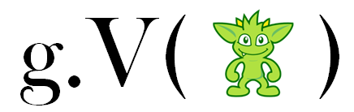 Use script parameterization. Period. Gremlin Server caches
all scripts that are passed to it. The cache is keyed based on the a hash of the script. Therefore g.V(1) and
g.V(2) will be recognized as two separate scripts in the cache. If that script is parameterized to g.V(x)
where x is passed as a parameter from the client, there will be no additional compilation cost for future requests
on that script. Compilation of a script should be considered "expensive" and avoided when possible.
Cluster cluster = Cluster.open();
Client client = cluster.connect();
Map<String,Object> params = new HashMap<>();
params.put("x",4);
client.submit("[1,2,3,x]", params);The more parameters that are used in a script the more expensive the compilation step becomes. Gremlin Server has a
OpProcessor setting called maxParameters, which is mentioned in the OpProcessor Configuration
section. It controls the maximum number of parameters that can be passed to the server for script evaluation purposes.
Use of this setting can prevent accidental long run compilations, which individually are not terribly oppressive to
the server, but taken as a group under high concurrency would be considered detrimental.
Properties of Elements
It was mentioned above at the start of this "Best Practices" section that serialization of graph elements (i.e.
Vertex, Edge, and VertexProperty) can be expensive and that it is best to only return the data that is required
by the requesting system. This point begs for further clarification as there are a number of ways to use and configure
Gremlin Server which might influence its interpretation.
To begin to discuss these nuances, first consider the method of making requests to Gremlin Server: script or bytecode. For scripts, that will mean that users are sending string representation of Gremlin to the server directly through a driver over websockets or through the HTTP. For bytecode, users will be utilize a Gremlin GLV which will construct bytecode for them and submit the request to the server upon iteration of their traversal.
In either case, it is important to also consider the method of "detachment". Detachment refers to the manner in which a graph element is disconnected from the graph for purpose of serialization. Depending on the case and configuration, graph elements may be detached with or without properties. Cases where they include properties is generally referred to as "detached elements" and cases where properties are not included are "reference elements".
With the type of request and detachment model in mind, it is now possible to discuss how best to consider element properties in relation to them all in concert.
For script-based requests, users should take care when returning graph elements. By default, elements will be returned as detached elements and will thus serialize with all properties that are bound to them. As such, Gryo and GraphSON serializers will write all properties in the return payload. Script-based requests should definitely follow the best practice of only returning the data required by the application.
|
Note
|
Gryo does have the exception for the GryoMessageSerializerGremlinV1d0 with the serializeResultToString
option enabled, which will simply convert all results using the Java toString() method prior to serialization and
is typically only use by the Gremlin Console for remote sessions where the actual object from the server is not of use.
|
For bytecode-based requests, graph elements have reference detachment and thus only return the id and label of
the elements. While this approach alleviates a potential performance problem that the script approach exposes, it is
still important to follow the practice of being specific about the data that is required by the requesting application
as it won’t arrive on the client side without that declaration.
Ultimately, the detachment model should have little impact to Gremlin usage if the best practice of specifying only the data required by the application is adhered to. In other words, while there may be a difference in the contents of return values for these traversals:
// properties returned from g.V().hasLabel('person') because this is using the
// Script API with full detachment
Cluster cluster = Cluster.open();
Client client = cluster.connect();
ResultSet results = client.submit("g.V().hasLabel('person')");
// no properties returned from g.V().hasLabel("person") because this is using
// Bytecode API with reference detachment
Graph graph = EmptyGraph.instance();
GraphTraversalSource g = graph.traversal().
withRemote('conf/remote-graph.properties');
List<Vertex> results = g.V().hasLabel("person").toList();There is no difference if re-written using the best practice of requesting only the data the application needs:
Cluster cluster = Cluster.open();
Client client = cluster.connect();
ResultSet results = client.submit("g.V().hasLabel('person').valueMap(true,'name')");
Graph graph = EmptyGraph.instance();
GraphTraversalSource g = graph.traversal().
withRemote('conf/remote-graph.properties');
List<Vertex> results = g.V().hasLabel("person").valueMap(true,'name').toList();Both of the above requests return a list of Map instances that contain the id, label and the "name" property.
Cache Management
If Gremlin Server processes a large number of unique scripts, the global function cache will grow beyond the memory
available to Gremlin Server and an OutOfMemoryError will loom. Script parameterization goes a long way to solving
this problem and running out of memory should not be an issue for those cases. If it is a problem or if there is no
script parameterization due to a given use case (perhaps using with use of sessions), it is possible to
better control the nature of the global function cache from the client side, by issuing scripts with a parameter to
help define how the garbage collector should treat the references.
The parameter is called #jsr223.groovy.engine.keep.globals and has four options:
-
hard- available in the cache for the life of the JVM (default when not specified). -
soft- retained until memory is "low" and should be reclaimed before anOutOfMemoryErroris thrown. -
weak- garbage collected even when memory is abundant. -
phantom- removed immediately after being evaluated by theScriptEngine.
By specifying an option other than hard, an OutOfMemoryError in Gremlin Server should be avoided. Of course,
this approach will come with the downside that functions could be garbage collected and thus removed from the
cache, forcing Gremlin Server to recompile later if that script is later encountered.
Cluster cluster = Cluster.open();
Client client = cluster.connect();
Map<String,Object> params = new HashMap<>();
params.put("x",4);
params.put("#jsr223.groovy.engine.keep.globals", "soft");
client.submit("[1,2,3,x]", params);Considering Sessions
The preferred approach for issuing requests to Gremlin Server is to do so in a sessionless manner. The concept of "sessionless" refers to a request that is completely encapsulated within a single transaction, such that the script in the request starts with a new transaction and ends with a closed transaction. Sessionless requests have automatic transaction management handled by Gremlin Server, thus automatically opening and closing transactions as previously described. The downside to the sessionless approach is that the entire script to be executed must be known at the time of submission so that it can all be executed at once. This requirement makes it difficult for some use cases where more control over the transaction is desired.
For such use cases, Gremlin Server supports sessions. With sessions, the user is in complete control of the start and end of the transaction. This feature comes with some additional expense to consider:
-
Initialization scripts will be executed for each session created so any expense related to them will be established each time a session is constructed.
-
There will be one script cache per session, which obviously increases memory requirements. The cache is not shared, so as to ensure that a session has isolation from other session environments. As a result, if the same script is executed in each session the same compilation cost will be paid for each session it is executed in.
-
Each session will require its own thread pool with a single thread in it - this ensures that transactional boundaries are managed properly from one request to the next.
-
If there are multiple Gremlin Server instances, communication from the client to the server must be bound to the server that the session was initialized in. Gremlin Server does not share session state as the transactional context of a
Graphis bound to the thread it was initialized in.
To connect to a session with Java via the gremlin-driver, it is necessary to create a SessionedClient from the
Cluster object:
Cluster cluster = Cluster.open(); //1
Client client = cluster.connect("sessionName"); //2-
Opens a reference to
localhostas previously shown. -
Creates a
SessionedClientgiven the configuration options of the Cluster. Theconnect()method is given aStringvalue that becomes the unique name of the session. It is often best to simply use aUUIDto represent the session.
It is also possible to have Gremlin Server manage the transactions as is done with sessionless requests. The user is
in control of enabling this feature when creating the SessionedClient:
Cluster cluster = Cluster.open();
Client client = cluster.connect("sessionName", true);Specifying true to the connect() method signifies that the client should make each request as one encapsulated
in a transaction. With this configuration of client there is no need to close a transaction manually.
When using this mode of the SessionedClient it is important to recognize that global variable state for the session
is not rolled-back on failure depending on where the failure occurs. For example, sending the following script would
create a variable "x" in global session scope that would be accessible on the next request:
x = 1However, sending this script which explicitly throws an exception:
y = 2
throw new RuntimeException()will result in an obvious failure during script evaluation and "y" will not be available to the next request. The complication arises where the script evaluates successfully, but fails during result iteration or serialization. For example, this script:
a = 1
g.addV()would successfully evaluate and return a Traversal. The variable "a" would be available on the next request. However,
if there was a failure in transaction management on the call to commit(), "a" would still be available to the next
request.
A session is a "heavier" approach to the simple "request/response" approach of sessionless requests, but is sometimes necessary for a given use case.
Considering Transactions
Gremlin Server performs automated transaction handling for "sessionless" requests (i.e. no state between requests) and for "in-session" requests with that feature enabled. It will automatically commit or rollback transactions depending on the success or failure of the request.
Another aspect of Transaction Management that should be considered is the usage of the strictTransactionManagement
setting. It is false by default, but when set to true, it forces the user to pass aliases for all requests.
The aliases are then used to determine which graphs will have their transactions closed for that request. Running
Gremlin Server in this configuration should be more efficient when there are multiple graphs being hosted as
Gremlin Server will only close transactions on the graphs specified by the aliases. Keeping this setting false,
will simply have Gremlin Server close transactions on all graphs for every request.
Considering State
With HTTP and any sessionless requests, there is no variable state maintained between requests. Therefore, when connecting with the console, for example, it is not possible to create a variable in one command and then expect to access it in the next:
gremlin> :remote connect tinkerpop.server conf/remote.yaml
==>Configured localhost/127.0.0.1:8182
gremlin> :> x = 2
==>2
gremlin> :> 2 + x
No such property: x for class: Script4
Display stack trace? [yN] nThe same behavior would be seen with HTTP or when using sessionless requests through one of the Gremlin Server drivers. If having this behavior is desireable, then consider sessions.
There is an exception to this notion of state not existing between requests and that is globally defined functions. All functions created via scripts are global to the server.
gremlin> :> def subtractIt(int x, int y) { x - y }
==>null
gremlin> :> subtractIt(8,7)
==>1If this behavior is not desirable there are several options. A first option would be to consider using sessions. Each
session gets its own ScriptEngine, which maintains its own isolated cache of global functions, whereas sessionless
requests uses a single function cache. A second option would be to define functions as closures:
gremlin> :> multiplyIt = { int x, int y -> x * y }
==>Script7$_run_closure1@6b24f3ab
gremlin> :> multiplyIt(7, 8)
No signature of method: org.apache.tinkerpop.gremlin.groovy.jsr223.GremlinGroovyScriptEngine.multiplyIt() is applicable for argument types: (java.lang.Integer, java.lang.Integer) values: [7, 8]
Display stack trace? [yN]When the function is declared this way, the function is viewed by the ScriptEngine as a variable rather than a global
function and since sessionless requests don’t maintain state, the function is forgotten for the next request. A final
option would be to manage the ScriptEngine cache manually:
$ curl -X POST -d "{\"gremlin\":\"def divideIt(int x, int y){ x / y }\",\"bindings\":{\"#jsr223.groovy.engine.keep.globals\":\"phantom\"}}" "http://localhost:8182"
{"requestId":"97fe1467-a943-45ea-8fd6-9e889a6c9381","status":{"message":"","code":200,"attributes":{}},"result":{"data":[null],"meta":{}}}
$ curl -X POST -d "{\"gremlin\":\"divideIt(8, 2)\"}" "http://localhost:8182"
{"message":"Error encountered evaluating script: divideIt(8, 2)"}In the above HTTP-based requests, the bindings contain a special parameter that tells the ScriptEngine cache to
immediately forget the script after execution. In this way, the function does not end up being globally available.
Docker Image
The Gremlin Server can also be started as a Docker image:
$ docker run tinkerpop/gremlin-server:3.3.4
[INFO] GremlinServer -
\,,,/
(o o)
-----oOOo-(3)-oOOo-----
[INFO] GremlinServer - Configuring Gremlin Server from conf/gremlin-server.yaml
...
[INFO] GremlinServer$1 - Gremlin Server configured with worker thread pool of 1, gremlin pool of 4 and boss thread pool of 1.
[INFO] GremlinServer$1 - Channel started at port 8182.By default, Gremlin Server listens on port 8182. So that port needs to be exposed if it should be reachable on the host:
$ docker run -p 8182:8182 tinkerpop/gremlin-server:3.3.4Arguments provided with docker run are forwarded to the script that starts Gremlin Server. This allows for example
to use an alternative config file:
$ docker run tinkerpop/gremlin-server:3.3.4 conf/gremlin-server-secure.yamlGremlin Plugins
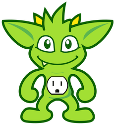
Plugins provide a way to expand the features of Gremlin Console and Gremlin Server. The following sections describe the plugins that are available directly from TinkerPop. Please see the Provider Documentation for information on how to develop custom plugins.
Credentials Plugin
Gremlin Server supports an authentication model
where user credentials are stored inside of a Graph instance. This database can be managed with the
Credentials DSL, which can be installed in the console via the Credentials Plugin. This plugin
is packaged with the console, but is not enabled by default.
gremlin> :plugin use tinkerpop.credentials
==>tinkerpop.credentials activatedThis plugin imports the appropriate classes for managing the credentials graph.
Gephi Plugin
Gephi is an interactive visualization, exploration, and analysis platform for graphs. The Graph Streaming plugin for Gephi provides an API that can be leveraged to stream graph data to a running Gephi application. The Gephi plugin for Gremlin Console utilizes this API to allow for graph and traversal visualization.
|
Important
|
These instructions have been tested with Gephi 0.9.1 and Graph Streaming plugin 1.0.3. |
The following instructions assume that Gephi has been download and installed. It further assumes that the Graph
Streaming plugin has been installed (Tools > Plugins). The following instructions explain how to visualize a
Graph and Traversal.
In Gephi, create a new project with File > New Project. In the lower left view, click the "Streaming" tab, open the
Master drop down, and right click Master Server > Start which starts the Graph Streaming server in Gephi and by
default accepts requests at http://localhost:8080/workspace1:
|
Important
|
The Gephi Streaming Plugin doesn’t detect port conflicts and will appear to start the plugin successfully even if there is something already active on that port it wants to connect to (which is 8080 by default). Be sure that there is nothing running on the port before Gephi will be using before starting the plugin. Failing to do this produce behavior where the console will appear to submit requests to Gephi successfully but nothing will render. |
|
Warning
|
Do not skip the File > New Project step as it may prevent a newly started Gephi application from fully
enabling the streaming tab.
|
Start the Gremlin Console and activate the Gephi plugin:
gremlin> :plugin use tinkerpop.gephi
==>tinkerpop.gephi activated
gremlin> graph = TinkerFactory.createModern()
==>tinkergraph[vertices:6 edges:6]
gremlin> :remote connect tinkerpop.gephi
==>Connection to Gephi - http://localhost:8080/workspace1 with stepDelay:1000, startRGBColor:[0.0, 1.0, 0.5], colorToFade:g, colorFadeRate:0.7, startSize:10.0,sizeDecrementRate:0.33
gremlin> :> graph
==>tinkergraph[vertices:6 edges:6]
==>false:plugin use tinkerpop.gephi
graph = TinkerFactory.createModern()
:remote connect tinkerpop.gephi
:> graphThe above Gremlin session activates the Gephi plugin, creates the "modern" TinkerGraph, uses the :remote command
to setup a connection to the Graph Streaming server in Gephi (with default parameters that will be explained below),
and then uses :submit which sends the vertices and edges of the graph to the Gephi Streaming Server. The resulting
graph appears in Gephi as displayed in the left image below.

|
Note
|
Issuing :> graph again will clear the Gephi workspace and then re-write the graph. To manually empty the
workspace do :> clear.
|
Now that the graph is visualized in Gephi, it is possible to apply a layout algorithm, change the size and/or color of vertices and edges, and display labels/properties of interest. Further information can be found in Gephi’s tutorial on Visualization. After applying the Fruchterman Reingold layout, increasing the node size, decreasing the edge scale, and displaying the id, name, and weight attributes the graph looks as displayed in the right image above.
Visualization of a Traversal has a different approach as the visualization occurs as the Traversal is executing,
thus showing a real-time view of its execution. A Traversal must be "configured" to operate in this format and for
that it requires use of the visualTraversal option on the config function of the :remote command:
gremlin> :remote config visualTraversal graph //1\
==>Connection to Gephi - http://localhost:8080/workspace1 with stepDelay:1000, startRGBColor:[0.0, 1.0, 0.5], colorToFade:g, colorFadeRate:0.7, startSize:10.0,sizeDecrementRate:0.33
gremlin> traversal = vg.V(2).in().out('knows').
has('age',gt(30)).outE('created').
has('weight',gt(0.5d)).inV();[] //2\
gremlin> :> traversal //3\
==>v[5]
==>false:remote config visualTraversal graph //1\
traversal = vg.V(2).in().out('knows').
has('age',gt(30)).outE('created').
has('weight',gt(0.5d)).inV();[] //2\
:> traversal //3-
Configure a "visual traversal" from your "graph" - this must be a
Graphinstance. This command will create a newTraversalSourcecalled "vg" that must be used to visualize any spawned traversals in Gephi. -
Define the traversal to be visualized. Note that ending the line with
;[]simply prevents iteration of the traversal before it is submitted. -
Submit the
Traversalto visualize to Gephi.
When the :> line is called, each step of the Traversal that produces or filters vertices generates events to
Gephi. The events update the color and size of the vertices at that step with startRGBColor and startSize
respectively. After the first step visualization, it sleeps for the configured stepDelay in milliseconds. On the
second step, it decays the configured colorToFade of all the previously visited vertices in prior steps, by
multiplying the current colorToFade value for each vertex with the colorFadeRate. Setting the colorFadeRate
value to 1.0 will prevent the color decay. The screenshots below show how the visualization evolves over the four
steps:

To get a sense of how the visualization configuration parameters affect the output, see the example below:
gremlin> :remote config startRGBColor [0.0,0.3,1.0]
==>Connection to Gephi - http://localhost:8080/workspace1 with stepDelay:1000, startRGBColor:[0.0, 0.3, 1.0], colorToFade:g, colorFadeRate:0.7, startSize:10.0,sizeDecrementRate:0.33
gremlin> :remote config colorToFade b
==>Connection to Gephi - http://localhost:8080/workspace1 with stepDelay:1000, startRGBColor:[0.0, 0.3, 1.0], colorToFade:b, colorFadeRate:0.7, startSize:10.0,sizeDecrementRate:0.33
gremlin> :remote config colorFadeRate 0.5
==>Connection to Gephi - http://localhost:8080/workspace1 with stepDelay:1000, startRGBColor:[0.0, 0.3, 1.0], colorToFade:b, colorFadeRate:0.5, startSize:10.0,sizeDecrementRate:0.33
gremlin> :> traversal
==>false:remote config startRGBColor [0.0,0.3,1.0]
:remote config colorToFade b
:remote config colorFadeRate 0.5
:> traversal
The visualization configuration above starts with a blue color now (most recently visited), fading the blue color
(so that dark green remains on oldest visited), and fading the blue color more quickly so that the gradient from dark
green to blue across steps has higher contrast. The following table provides a more detailed description of the
Gephi plugin configuration parameters as accepted via the :remote config command:
| Parameter | Description | Default |
|---|---|---|
workspace |
The name of the workspace that your Graph Streaming server is started for. |
workspace1 |
host |
The host URL where the Graph Streaming server is configured for. |
localhost |
port |
The port number of the URL that the Graph Streaming server is listening on. |
8080 |
sizeDecrementRate |
The rate at which the size of an element decreases on each step of the visualization. |
0.33 |
stepDelay |
The amount of time in milliseconds to pause between step visualizations. |
1000 |
startRGBColor |
A size 3 float array of RGB color values which define the starting color to update most recently visited nodes with. |
[0.0,1.0,0.5] |
startSize |
The size an element should be when it is most recently visited. |
20 |
colorToFade |
A single char from the set |
g |
colorFadeRate |
A float value in the range |
0.7 |
visualTraversal |
Creates a |
vg |
|
Note
|
This plugin is typically only useful to the Gremlin Console and is enabled in the there by default. |
Giraph Plugin
 The Giraph Plugin installs as part of
The Giraph Plugin installs as part of giraph-gremlin and provides
a number of imports and utility functions to the environment within which it is used. Those classes and functions
provide the basis for supporting OLAP based traversals using Giraph.
This plugin is defined in greater detail in the GiraphGraphComputer section and is typically
installed in conjuction with the Hadoop-Plugin.
Graph Plugins
This section does not refer to a specific Gremlin Plugin, but a class of them. Graph Plugins are typically created by
graph providers to make it easy to integrate their graph systems into Gremlin Console and Gremlin Server. As TinkerPop
provides two reference Graph implementations in TinkerGraph and Neo4j,
there is also one Gremlin Plugin for each of them.
The TinkerGraph plugin is installed and activated in the Gremlin Console by default and the sample configurations that
are supplied with the Gremlin Server distribution include the TinkerGraphGremlinPlugin as part of the default setup.
If using Neo4j, however, the plugin must be installed manually. Instructions for doing so can be found in the
Neo4j section.
Hadoop Plugin
The Hadoop Plugin installs as part of hadoop-gremlin and provides
a number of imports and utility functions to the environment within which it is used. Those classes and functions
provide the basis for supporting OLAP based traversals with Gremlin. This plugin is defined in
greater detail in the Hadoop-Gremlin section.
Server Plugin
Gremlin Server remotely executes Gremlin scripts that are submitted to it. The Server Plugin provides a way to submit scripts to Gremlin Server for remote processing. Read more about the plugin and how it works in the Gremlin Server section on Connecting via Console.
|
Note
|
This plugin is typically only useful to the Gremlin Console and is enabled in the there by default. |
The Server Plugin for remoting with the Gremlin Console should not be confused with a plugin of similar name that is
used by the server. GremlinServerGremlinPlugin is typically only configured in Gremlin Server and provides a number
of imports that are required for writing initialization scripts.
Spark Plugin
 The Spark Plugin installs as part of
The Spark Plugin installs as part of spark-gremlin and provides
a number of imports and utility functions to the environment within which it is used. Those classes and functions
provide the basis for supporting OLAP based traversals using Spark.
This plugin is defined in greater detail in the SparkGraphComputer section and is typically
installed in conjuction with the Hadoop-Plugin.
Sugar Plugin
 In previous versions of Gremlin-Groovy, there were numerous
syntactic sugars that users could rely on to make their traversals
more succinct. Unfortunately, many of these conventions made use of Java reflection
and thus, were not performant. In TinkerPop3, these conveniences have been removed in support of the standard
Gremlin-Groovy syntax being both inline with Gremlin-Java8 syntax as well as always being the most performant
representation. However, for those users that would like to use the previous syntactic sugars (as well as new ones),
there is
In previous versions of Gremlin-Groovy, there were numerous
syntactic sugars that users could rely on to make their traversals
more succinct. Unfortunately, many of these conventions made use of Java reflection
and thus, were not performant. In TinkerPop3, these conveniences have been removed in support of the standard
Gremlin-Groovy syntax being both inline with Gremlin-Java8 syntax as well as always being the most performant
representation. However, for those users that would like to use the previous syntactic sugars (as well as new ones),
there is SugarGremlinPlugin (a.k.a Gremlin-Groovy-Sugar).
|
Important
|
It is important that the sugar plugin is loaded in a Gremlin Console session prior to any manipulations of the respective TinkerPop3 objects as Groovy will cache unavailable methods and properties. |
gremlin> :plugin use tinkerpop.sugar
==>tinkerpop.sugar activated|
Tip
|
When using Sugar in a Groovy class file, add static { SugarLoader.load() } to the head of the file. Note that
SugarLoader.load() will automatically call GremlinLoader.load().
|
Graph Traversal Methods
If a GraphTraversal property is unknown and there is a corresponding method with said name off of GraphTraversal
then the property is assumed to be a method call. This enables the user to omit ( ) from the method name. However,
if the property does not reference a GraphTraversal method, then it is assumed to be a call to values(property).
gremlin> g.V //1\
==>v[1]
==>v[2]
==>v[3]
==>v[4]
==>v[5]
==>v[6]
gremlin> g.V.name //2\
==>marko
==>vadas
==>lop
==>josh
==>ripple
==>peter
gremlin> g.V.outE.weight //3\
==>0.4
==>0.5
==>1.0
==>1.0
==>0.4
==>0.2g.V //1\
g.V.name //2\
g.V.outE.weight //3-
There is no need for the parentheses in
g.V(). -
The traversal is interpreted as
g.V().values('name'). -
A chain of zero-argument step calls with a property value call.
Range Queries
The [x] and [x..y] range operators in Groovy translate to RangeStep calls.
gremlin> g.V[0..2]
==>v[1]
==>v[2]
gremlin> g.V[0..<2]
==>v[1]
gremlin> g.V[2]
==>v[3]g.V[0..2]
g.V[0..<2]
g.V[2]Logical Operators
The & and | operator are overloaded in SugarGremlinPlugin. When used, they introduce the AndStep and OrStep
markers into the traversal. See and() and or() for more information.
gremlin> g.V.where(outE('knows') & outE('created')).name //1\
==>marko
gremlin> t = g.V.where(outE('knows') | inE('created')).name; null //2\
gremlin> t.toString()
==>[GraphStep(vertex,[]), TraversalFilterStep([VertexStep(OUT,[knows],edge), OrStep, VertexStep(IN,[created],edge)]), PropertiesStep([name],value)]
gremlin> t
==>marko
==>lop
==>ripple
gremlin> t.toString()
==>[TinkerGraphStep(vertex,[]), TraversalFilterStep([OrStep([[VertexStep(OUT,[knows],edge)], [VertexStep(IN,[created],edge)]])]), PropertiesStep([name],value)]g.V.where(outE('knows') & outE('created')).name //1\
t = g.V.where(outE('knows') | inE('created')).name; null //2\
t.toString()
t
t.toString()-
Introducing the
AndStepwith the&operator. -
Introducing the
OrStepwith the|operator.
Traverser Methods
It is rare that a user will ever interact with a Traverser directly. However, if they do, some method redirects exist
to make it easy.
gremlin> g.V().map{it.get().value('name')} // conventional
==>marko
==>vadas
==>lop
==>josh
==>ripple
==>peter
gremlin> g.V.map{it.name} // sugar
==>marko
==>vadas
==>lop
==>josh
==>ripple
==>peterg.V().map{it.get().value('name')} // conventional
g.V.map{it.name} // sugarUtilities Plugin
The Utilities Plugin provides various functions, helper methods and imports of external classes that are useful in the console.
|
Note
|
The Utilities Plugin is enabled in the Gremlin Console by default. |
Benchmarking and Profiling
The GPerfUtils library provides a number of performance utilities for Groovy. Specifically, these tools cover benchmarking and profiling.
Benchmarking allows execution time comparisons of different pieces of code. While such a feature is generally useful, in the context of Gremlin, benchmarking can help compare traversal performance times to determine the optimal approach. Profiling helps determine the parts of a program which are taking the most execution time, yielding low-level insight into the code being examined.
gremlin> :plugin use tinkerpop.sugar // Activate sugar plugin for use in benchmark
==>Specify the name of the plugin to use
gremlin> benchmark{
'sugar' {g.V(1).name.next()}
'nosugar' {g.V(1).values('name').next()}
}.prettyPrint()
Environment
===========
* Groovy: 2.4.15
* JVM: Java HotSpot(TM) 64-Bit Server VM (25.171-b11, Oracle Corporation)
* JRE: 1.8.0_171
* Total Memory: 1587 MB
* Maximum Memory: 3566.5 MB
* OS: Linux (3.13.0-153-generic, amd64)
Options
=======
* Warm Up: Auto (- 60 sec)
* CPU Time Measurement: On
user system cpu real
sugar 16731 0 16731 16742
nosugar 10156 2 10158 10165
gremlin> profile { g.V().iterate() }.prettyPrint()
Flat:
% cumulative self self total self total self total
time seconds seconds calls ms/call ms/call min ms min ms max ms max ms name
46.3 0.00 0.00 1 0.57 1.24 0.57 1.24 0.57 1.24 groovysh_evaluate$_run_closure1.doCall
44.1 0.00 0.00 1 0.55 0.55 0.55 0.55 0.55 0.55 org.apache.tinkerpop.gremlin.process.traversal.dsl.graph.DefaultGraphTraversal.iterate
9.5 0.00 0.00 1 0.11 0.11 0.11 0.11 0.11 0.11 org.apache.tinkerpop.gremlin.process.traversal.dsl.graph.GraphTraversalSource.V
Call graph:
index % time self children calls name
0.00 0.00 1/1 <spontaneous>
[1] 100.0 0.00 0.00 1 groovysh_evaluate$_run_closure1.doCall [1]
0.00 0.00 1/1 org.apache.tinkerpop.gremlin.process.traversal.dsl.graph.DefaultGraphTraversal.iterate [2]
0.00 0.00 1/1 org.apache.tinkerpop.gremlin.process.traversal.dsl.graph.GraphTraversalSource.V [3]
------------------------------------------------------------------------------------------------------------------------------------
0.00 0.00 1/1 groovysh_evaluate$_run_closure1.doCall [1]
[2] 44.1 0.00 0.00 1 org.apache.tinkerpop.gremlin.process.traversal.dsl.graph.DefaultGraphTraversal.iterate [2]
------------------------------------------------------------------------------------------------------------------------------------
0.00 0.00 1/1 groovysh_evaluate$_run_closure1.doCall [1]
[3] 9.5 0.00 0.00 1 org.apache.tinkerpop.gremlin.process.traversal.dsl.graph.GraphTraversalSource.V [3]
------------------------------------------------------------------------------------------------------------------------------------:plugin use tinkerpop.sugar // Activate sugar plugin for use in benchmark
benchmark{
'sugar' {g.V(1).name.next()}
'nosugar' {g.V(1).values('name').next()}
}.prettyPrint()
profile { g.V().iterate() }.prettyPrint()Describe Graph
A good implementation of the Gremlin APIs will validate their features against the Gremlin test suite.
To learn more about a specific implementation’s compliance with the test suite, use the describeGraph function.
The following shows the output for HadoopGraph:
gremlin> describeGraph(HadoopGraph)
==>
IMPLEMENTATION - org.apache.tinkerpop.gremlin.hadoop.structure.HadoopGraph
TINKERPOP TEST SUITE
- Compliant with (3 of 4 suites)
- Compliant with (3 of 11 suites)
> org.apache.tinkerpop.gremlin.structure.StructureStandardSuite
> org.apache.tinkerpop.gremlin.process.ProcessStandardSuite
> org.apache.tinkerpop.gremlin.process.ProcessComputerSuite
- Opts out of 22 individual tests
> org.apache.tinkerpop.gremlin.process.traversal.step.map.MatchTest$Traversals#g_V_matchXa_hasXname_GarciaX__a_0writtenBy_b__a_0sungBy_bX
"Hadoop-Gremlin is OLAP-oriented and for OLTP operations, linear-scan joins are required. This particular tests takes many minutes to execute."
> org.apache.tinkerpop.gremlin.process.traversal.step.map.MatchTest$Traversals#g_V_matchXa_0sungBy_b__a_0sungBy_c__b_writtenBy_d__c_writtenBy_e__d_hasXname_George_HarisonX__e_hasXname_Bob_MarleyXX
"Hadoop-Gremlin is OLAP-oriented and for OLTP operations, linear-scan joins are required. This particular tests takes many minutes to execute."
> org.apache.tinkerpop.gremlin.process.traversal.step.map.MatchTest$Traversals#g_V_matchXa_0sungBy_b__a_0writtenBy_c__b_writtenBy_d__c_sungBy_d__d_hasXname_GarciaXX
"Hadoop-Gremlin is OLAP-oriented and for OLTP operations, linear-scan joins are required. This particular tests takes many minutes to execute."
> org.apache.tinkerpop.gremlin.process.traversal.step.map.MatchTest$Traversals#g_V_matchXa_0sungBy_b__a_0writtenBy_c__b_writtenBy_dX_whereXc_sungBy_dX_whereXd_hasXname_GarciaXX
"Hadoop-Gremlin is OLAP-oriented and for OLTP operations, linear-scan joins are required. This particular tests takes many minutes to execute."
> org.apache.tinkerpop.gremlin.process.traversal.step.map.MatchTest$Traversals#g_V_matchXa_knows_b__c_knows_bX
"Giraph does a hard kill on failure and stops threads which stops test cases. Exception handling semantics are correct though."
> org.apache.tinkerpop.gremlin.process.traversal.step.map.MatchTest$Traversals#g_V_matchXa_created_b__c_created_bX_selectXa_b_cX_byXnameX
"Giraph does a hard kill on failure and stops threads which stops test cases. Exception handling semantics are correct though."
> org.apache.tinkerpop.gremlin.process.traversal.step.map.MatchTest$Traversals#g_V_out_asXcX_matchXb_knows_a__c_created_eX_selectXcX
"Giraph does a hard kill on failure and stops threads which stops test cases. Exception handling semantics are correct though."
> org.apache.tinkerpop.gremlin.process.traversal.step.map.CountTest$Traversals#g_V_both_both_count
"Hadoop-Gremlin is OLAP-oriented and for OLTP operations, linear-scan joins are required. This particular tests takes many minutes to execute."
> org.apache.tinkerpop.gremlin.process.traversal.step.map.CountTest$Traversals#g_V_repeatXoutX_timesX3X_count
"Hadoop-Gremlin is OLAP-oriented and for OLTP operations, linear-scan joins are required. This particular tests takes many minutes to execute."
> org.apache.tinkerpop.gremlin.process.traversal.step.map.CountTest$Traversals#g_V_repeatXoutX_timesX8X_count
"Hadoop-Gremlin is OLAP-oriented and for OLTP operations, linear-scan joins are required. This particular tests takes many minutes to execute."
> org.apache.tinkerpop.gremlin.process.traversal.step.map.CountTest$Traversals#g_V_repeatXoutX_timesX5X_asXaX_outXwrittenByX_asXbX_selectXa_bX_count
"Hadoop-Gremlin is OLAP-oriented and for OLTP operations, linear-scan joins are required. This particular tests takes many minutes to execute."
> org.apache.tinkerpop.gremlin.process.traversal.step.map.ProfileTest$Traversals#grateful_V_out_out_profile
"Hadoop-Gremlin is OLAP-oriented and for OLTP operations, linear-scan joins are required. This particular tests takes many minutes to execute."
> org.apache.tinkerpop.gremlin.process.traversal.step.map.ProfileTest$Traversals#grateful_V_out_out_profileXmetricsX
"Hadoop-Gremlin is OLAP-oriented and for OLTP operations, linear-scan joins are required. This particular tests takes many minutes to execute."
> org.apache.tinkerpop.gremlin.process.traversal.step.sideEffect.GroupTest#g_V_hasLabelXsongX_groupXaX_byXnameX_byXproperties_groupCount_byXlabelXX_out_capXaX
"Hadoop-Gremlin is OLAP-oriented and for OLTP operations, linear-scan joins are required. This particular tests takes many minutes to execute."
> org.apache.tinkerpop.gremlin.process.traversal.step.sideEffect.GroupTest#g_V_outXfollowedByX_group_byXsongTypeX_byXbothE_group_byXlabelX_byXweight_sumXX
"Hadoop-Gremlin is OLAP-oriented and for OLTP operations, linear-scan joins are required. This particular tests takes many minutes to execute."
> org.apache.tinkerpop.gremlin.process.traversal.step.sideEffect.GroupTest#g_V_repeatXbothXfollowedByXX_timesX2X_group_byXsongTypeX_byXcountX
"Hadoop-Gremlin is OLAP-oriented and for OLTP operations, linear-scan joins are required. This particular tests takes many minutes to execute."
> org.apache.tinkerpop.gremlin.process.traversal.step.sideEffect.GroupTest#g_V_repeatXbothXfollowedByXX_timesX2X_groupXaX_byXsongTypeX_byXcountX_capXaX
"Hadoop-Gremlin is OLAP-oriented and for OLTP operations, linear-scan joins are required. This particular tests takes many minutes to execute."
> org.apache.tinkerpop.gremlin.process.computer.GraphComputerTest#shouldStartAndEndWorkersForVertexProgramAndMapReduce
"Spark executes map and combine in a lazy fashion and thus, fails the blocking aspect of this test"
> org.apache.tinkerpop.gremlin.process.traversal.TraversalInterruptionTest#*
"The interruption model in the test can't guarantee interruption at the right time with HadoopGraph."
> org.apache.tinkerpop.gremlin.process.traversal.TraversalInterruptionComputerTest#*
"This test makes use of a sideEffect to enforce when a thread interruption is triggered and thus isn't applicable to HadoopGraph"
> org.apache.tinkerpop.gremlin.process.traversal.step.map.MatchTest$CountMatchTraversals#g_V_matchXa_followedBy_count_isXgtX10XX_b__a_0followedBy_count_isXgtX10XX_bX_count
"Hadoop-Gremlin is OLAP-oriented and for OLTP operations, linear-scan joins are required. This particular tests takes many minutes to execute."
> org.apache.tinkerpop.gremlin.process.traversal.step.map.MatchTest$GreedyMatchTraversals#g_V_matchXa_followedBy_count_isXgtX10XX_b__a_0followedBy_count_isXgtX10XX_bX_count
"Hadoop-Gremlin is OLAP-oriented and for OLTP operations, linear-scan joins are required. This particular tests takes many minutes to execute."
- NOTE -
The describeGraph() function shows information about a Graph implementation.
It uses information found in Java Annotations on the implementation itself to
determine this output and does not assess the actual code of the test cases of
the implementation itself. Compliant implementations will faithfully and
honestly supply these Annotations to provide the most accurate depiction of
their support.describeGraph(HadoopGraph)Application Templates
TinkerPop has a number of application templates, which provide example project templates to quickly get started with TinkerPop.
Maven Archetypes
The available Maven archetypes are as follows:
-
gremlin-archetype-dsl- An example project that demonstrates how to build Domain Specific Languages with Gremlin in Java. -
gremlin-archetype-server- An example project that demonstrates the basic structure of a Gremlin Server project, how to connect with the Gremlin Driver, and how to embed Gremlin Server in a testing framework. -
gremlin-archetype-tinkergraph- A basic example of how to structure a TinkerPop project with Maven.
You can use Maven to generate these example projects with a command like:
$ mvn archetype:generate -DarchetypeGroupId=org.apache.tinkerpop -DarchetypeArtifactId=gremlin-archetype-server
-DarchetypeVersion=3.3.4 -DgroupId=com.my -DartifactId=app -Dversion=0.1 -DinteractiveMode=falseThis command will generate a new Maven project in a directory called "app" with a pom.xml specifying a groupId of
com.my. Please see the README.asciidoc in the root of each generated project for information on how to build and
execute it.
Gremlin.Net Template
This dotnet template helps getting started with Gremlin.Net. It creates a new C# console project that shows how to connect to a Gremlin Server with Gremlin.Net.
You can install the template with the dotnet CLI tool:
dotnet new -i Gremlin.Net.TemplateAfter the template is installed, a new project based on this template can be installed:
dotnet new gremlinYou can specify the output directory for the new project which will then also be used as the name of the created project:
dotnet new gremlin -o MyFirstGremlinProject
// LAST LINEImplementations
TinkerPop offers several reference implementations of its interfaces that are not only meant for production usage, but also represent models by which different graph providers can build their systems. More specific documentation on how to build systems at this level of the API can be found in the Provider Documentation. The following sections describe the various reference implementations and their usage.
TinkerGraph-Gremlin
<dependency>
<groupId>org.apache.tinkerpop</groupId>
<artifactId>tinkergraph-gremlin</artifactId>
<version>3.3.4</version>
</dependency> TinkerGraph is a single machine, in-memory (with optional
persistence), non-transactional graph engine that provides both OLTP and OLAP functionality. It is deployed with
TinkerPop3 and serves as the reference implementation for other providers to study in order to understand the
semantics of the various methods of the TinkerPop3 API. Its status as a reference implementation does not however imply
that it is not suitable for production. TinkerGraph has many practical use cases in production applications and their
development. Some examples of TinkerGraph use cases include:
TinkerGraph is a single machine, in-memory (with optional
persistence), non-transactional graph engine that provides both OLTP and OLAP functionality. It is deployed with
TinkerPop3 and serves as the reference implementation for other providers to study in order to understand the
semantics of the various methods of the TinkerPop3 API. Its status as a reference implementation does not however imply
that it is not suitable for production. TinkerGraph has many practical use cases in production applications and their
development. Some examples of TinkerGraph use cases include:
-
Ad-hoc analysis of large immutable graphs that fit in memory.
-
Extract subgraphs, from larger graphs that don’t fit in memory, into TinkerGraph for further analysis or other purposes.
-
Use TinkerGraph as a sandbox to develop and debug complex traversals by simulating data from a larger graph inside a TinkerGraph.
Constructing a simple graph using TinkerGraph in Java8 is presented below:
Graph graph = TinkerGraph.open();
GraphTraversalSource g = graph.traversal();
Vertex marko = g.addV("person").property("name","marko").property("age",29).next();
Vertex lop = g.addV("software").property("name","lop").property("lang","java").next();
g.addE("created").from(marko).to(lop).property("weight",0.6d).iterate();The above Gremlin creates two vertices named "marko" and "lop" and connects them via a created-edge with a weight=0.6 property. The addition of these two vertices and the edge between them could also be done in a single Gremlin statement as follows:
g.addV("person").property("name","marko").property("age",29).as("m").
addV("software").property("name","lop").property("lang","java").as("l").
addE("created").from("m").to("l").property("weight",0.6d).iterate();|
Important
|
Pay attention to the fact that traversals end with next() or iterate(). These methods advance the
objects in the traversal stream and without those methods, the traversal does nothing. Review the
Result Iteration Section
of The Gremlin Console tutorial for more information.
|
Next, the graph can be queried as such.
g.V().has("name","marko").out("created").values("name")The g.V().has("name","marko") part of the query can be executed in two ways.
-
A linear scan of all vertices filtering out those vertices that don’t have the name "marko"
-
A
O(log(|V|))index lookup for all vertices with the name "marko"
Given the initial graph construction in the first code block, no index was defined and thus, a linear scan is executed. However, if the graph was constructed as such, then an index lookup would be used.
Graph g = TinkerGraph.open();
g.createIndex("name",Vertex.class)The execution times for a vertex lookup by property is provided below for both no-index and indexed version of TinkerGraph over the Grateful Dead graph.
gremlin> graph = TinkerGraph.open()
==>tinkergraph[vertices:0 edges:0]
gremlin> g = graph.traversal()
==>graphtraversalsource[tinkergraph[vertices:0 edges:0], standard]
gremlin> graph.io(graphml()).readGraph('data/grateful-dead.xml')
gremlin> clock(1000) {g.V().has('name','Garcia').iterate()} //1\
==>0.223702743
gremlin> graph = TinkerGraph.open()
==>tinkergraph[vertices:0 edges:0]
gremlin> g = graph.traversal()
==>graphtraversalsource[tinkergraph[vertices:0 edges:0], standard]
gremlin> graph.createIndex('name',Vertex.class)
gremlin> graph.io(graphml()).readGraph('data/grateful-dead.xml')
gremlin> clock(1000){g.V().has('name','Garcia').iterate()} //2\
==>0.061624654graph = TinkerGraph.open()
g = graph.traversal()
graph.io(graphml()).readGraph('data/grateful-dead.xml')
clock(1000) {g.V().has('name','Garcia').iterate()} //1\
graph = TinkerGraph.open()
g = graph.traversal()
graph.createIndex('name',Vertex.class)
graph.io(graphml()).readGraph('data/grateful-dead.xml')
clock(1000){g.V().has('name','Garcia').iterate()} //2-
Determine the average runtime of 1000 vertex lookups when no
name-index is defined. -
Determine the average runtime of 1000 vertex lookups when a
name-index is defined.
|
Important
|
Each graph system will have different mechanism by which indices and schemas are defined. TinkerPop3 does not require any conformance in this area. In TinkerGraph, the only definitions are around indices. With other graph systems, property value types, indices, edge labels, etc. may be required to be defined a priori to adding data to the graph. |
|
Note
|
TinkerGraph is distributed with Gremlin Server and is therefore automatically available to it for configuration. |
Configuration
TinkerGraph has several settings that can be provided on creation via Configuration object:
| Property | Description |
|---|---|
gremlin.graph |
|
gremlin.tinkergraph.vertexIdManager |
The |
gremlin.tinkergraph.edgeIdManager |
The |
gremlin.tinkergraph.vertexPropertyIdManager |
The |
gremlin.tinkergraph.defaultVertexPropertyCardinality |
The default |
gremlin.tinkergraph.graphLocation |
The path and file name for where TinkerGraph should persist the graph data. If a
value is specified here, the |
gremlin.tinkergraph.graphFormat |
The format to use to serialize the graph which may be one of the following:
|
The IdManager settings above refer to how TinkerGraph will control identifiers for vertices, edges and vertex
properties. There are several options for each of these settings: ANY, LONG, INTEGER, UUID, or the fully
qualified class name of an IdManager implementation on the classpath. When not specified, the default values
for all settings is ANY, meaning that the graph will work with any object on the JVM as the identifier and will
generate new identifiers from Long when the identifier is not user supplied. TinkerGraph will also expect the
user to understand the types used for identifiers when querying, meaning that g.V(1) and g.V(1L) could return
two different vertices. LONG, INTEGER and UUID settings will try to coerce identifier values to the expected
type as well as generate new identifiers with that specified type.
If the TinkerGraph is configured for persistence with gremlin.tinkergraph.graphLocation and
gremlin.tinkergraph.graphFormat, then the graph will be written to the specified location with the specified
format when Graph.close() is called. In addition, if these settings are present, TinkerGraph will attempt to
load the graph from the specified location.
|
Important
|
If choosing graphson as the gremlin.tinkergraph.graphFormat, be sure to also establish the various
IdManager settings as well to ensure that identifiers are properly coerced to the appropriate types as GraphSON
can lose the identifier’s type during serialization (i.e. it will assume Integer when the default for TinkerGraph
is Long, which could lead to load errors that result in a message like, "Vertex with id already exists").
|
It is important to consider the data being imported to TinkerGraph with respect to defaultVertexPropertyCardinality
setting. For example, if a .gryo file is known to contain multi-property data, be sure to set the default
cardinality to list or else the data will import as single. Consider the following:
Neo4j-Gremlin
<dependency>
<groupId>org.apache.tinkerpop</groupId>
<artifactId>neo4j-gremlin</artifactId>
<version>3.3.4</version>
</dependency>
<!-- neo4j-tinkerpop-api-impl is NOT Apache 2 licensed - more information below -->
<dependency>
<groupId>org.neo4j</groupId>
<artifactId>neo4j-tinkerpop-api-impl</artifactId>
<version>0.7-3.2.3</version>
</dependency>Neo4j, Inc. are the developers of the OLTP-based Neo4j graph database.
|
Warning
|
Unless under a commercial agreement with Neo4j, Inc., Neo4j is licensed
AGPL. The neo4j-gremlin module is licensed Apache2
because it only references the Apache2-licensed Neo4j API (not its implementation). Note that neither the
Gremlin Console nor Gremlin Server distribute with the Neo4j implementation
binaries. To access the binaries, use the :install command to download binaries from
Maven Central Repository.
|
|
Tip
|
For configuring Grape, the dependency resolver of Groovy, please refer to the Gremlin Applications section. |
gremlin> :install org.apache.tinkerpop neo4j-gremlin 3.3.4
==>Loaded: [org.apache.tinkerpop, neo4j-gremlin, 3.3.4] - restart the console to use [tinkerpop.neo4j]
gremlin> :q
...
gremlin> :plugin use tinkerpop.neo4j
==>tinkerpop.neo4j activated
gremlin> graph = Neo4jGraph.open('/tmp/neo4j')
==>neo4jgraph[EmbeddedGraphDatabase [/tmp/neo4j]]|
Tip
|
To host Neo4j in Gremlin Server, the dependencies must first be "installed" or otherwise
copied to the Gremlin Server path. The automated method for doing this would be to execute
bin/gremlin-server.sh install org.apache.tinkerpop neo4j-gremlin 3.3.4. Once installed, the Gremlin Server
configuration file must be edited to include the Neo4jGremlinPlugin as shown in conf/gremlin-server.neo4j.
|
Indices
Neo4j 2.x indices leverage vertex labels to partition the index space. TinkerPop3 does not provide method interfaces for defining schemas/indices for the underlying graph system. Thus, in order to create indices, it is important to call the Neo4j API directly.
|
Note
|
Neo4jGraphStep will attempt to discern which indices to use when executing a traversal of the form g.V().has().
|
The Gremlin-Console session below demonstrates Neo4j indices. For more information, please refer to the Neo4j documentation:
gremlin> graph = Neo4jGraph.open('/tmp/neo4j')
==>neo4jgraph[community single [/tmp/neo4j]]
gremlin> g = graph.traversal()
==>graphtraversalsource[neo4jgraph[community single [/tmp/neo4j]], standard]
gremlin> graph.cypher("CREATE INDEX ON :person(name)")
gremlin> graph.tx().commit() //1\
gremlin> g.addV('person').property('name','marko')
==>v[0]
gremlin> g.addV('dog').property('name','puppy')
==>v[1]
gremlin> g.V().hasLabel('person').has('name','marko').values('name')
==>marko
gremlin> graph.close()graph = Neo4jGraph.open('/tmp/neo4j')
g = graph.traversal()
graph.cypher("CREATE INDEX ON :person(name)")
graph.tx().commit() //1\
g.addV('person').property('name','marko')
g.addV('dog').property('name','puppy')
g.V().hasLabel('person').has('name','marko').values('name')
graph.close()-
Schema mutations must happen in a different transaction than graph mutations
Below demonstrates the runtime benefits of indices and demonstrates how if there is no defined index (only vertex labels), a linear scan of the vertex-label partition is still faster than a linear scan of all vertices.
gremlin> graph = Neo4jGraph.open('/tmp/neo4j')
==>neo4jgraph[community single [/tmp/neo4j]]
gremlin> graph.io(graphml()).readGraph('data/grateful-dead.xml')
gremlin> g = graph.traversal()
==>graphtraversalsource[neo4jgraph[community single [/tmp/neo4j]], standard]
gremlin> g.tx().commit()
gremlin> clock(1000) {g.V().hasLabel('artist').has('name','Garcia').iterate()} //1\
==>1.333156464
gremlin> graph.cypher("CREATE INDEX ON :artist(name)") //2\
gremlin> g.tx().commit()
gremlin> Thread.sleep(5000) //3\
gremlin> clock(1000) {g.V().hasLabel('artist').has('name','Garcia').iterate()} //4\
==>0.222074072
gremlin> clock(1000) {g.V().has('name','Garcia').iterate()} //5\
==>1.8422015649999999
gremlin> graph.cypher("DROP INDEX ON :artist(name)") //6\
gremlin> g.tx().commit()
gremlin> graph.close()graph = Neo4jGraph.open('/tmp/neo4j')
graph.io(graphml()).readGraph('data/grateful-dead.xml')
g = graph.traversal()
g.tx().commit()
clock(1000) {g.V().hasLabel('artist').has('name','Garcia').iterate()} //1\
graph.cypher("CREATE INDEX ON :artist(name)") //2\
g.tx().commit()
Thread.sleep(5000) //3\
clock(1000) {g.V().hasLabel('artist').has('name','Garcia').iterate()} //4\
clock(1000) {g.V().has('name','Garcia').iterate()} //5\
graph.cypher("DROP INDEX ON :artist(name)") //6\
g.tx().commit()
graph.close()-
Find all artists whose name is Garcia which does a linear scan of the artist vertex-label partition.
-
Create an index for all artist vertices on their name property.
-
Neo4j indices are eventually consistent so this stalls to give the index time to populate itself.
-
Find all artists whose name is Garcia which uses the pre-defined schema index.
-
Find all vertices whose name is Garcia which requires a linear scan of all the data in the graph.
-
Drop the created index.
Multi/Meta-Properties
Neo4jGraph supports both multi- and meta-properties (see vertex properties). These features
are not native to Neo4j and are implemented using "hidden" Neo4j nodes. For example, when a vertex has multiple
"name" properties, each property is a new node (multi-properties) which can have properties attached to it
(meta-properties). As such, the native, underlying representation may become difficult to query directly using
another graph language such as Cypher. The default setting is to disable multi- and meta-properties.
However, if this feature is desired, then it can be activated via gremlin.neo4j.metaProperties and
gremlin.neo4j.multiProperties configurations being set to true. Once the configuration is set, it can not be
changed for the lifetime of the graph.
gremlin> conf = new BaseConfiguration()
==>org.apache.commons.configuration.BaseConfiguration@730ca696
gremlin> conf.setProperty('gremlin.neo4j.directory','/tmp/neo4j')
gremlin> conf.setProperty('gremlin.neo4j.multiProperties',true)
gremlin> conf.setProperty('gremlin.neo4j.metaProperties',true)
gremlin> graph = Neo4jGraph.open(conf)
==>neo4jgraph[community single [/tmp/neo4j]]
gremlin> g = graph.traversal()
==>graphtraversalsource[neo4jgraph[community single [/tmp/neo4j]], standard]
gremlin> g.addV().property('name','michael').property('name','michael hunger').property('name','mhunger')
==>v[0]
gremlin> g.V().properties('name').property('acl', 'public')
==>vp[name->michael]
==>vp[name->michael hunger]
==>vp[name->mhunger]
gremlin> g.V(0).valueMap()
==>[name:[michael,michael hunger,mhunger]]
gremlin> g.V(0).properties()
==>vp[name->michael]
==>vp[name->michael hunger]
==>vp[name->mhunger]
gremlin> g.V(0).properties().valueMap()
==>[acl:public]
==>[acl:public]
==>[acl:public]
gremlin> graph.close()conf = new BaseConfiguration()
conf.setProperty('gremlin.neo4j.directory','/tmp/neo4j')
conf.setProperty('gremlin.neo4j.multiProperties',true)
conf.setProperty('gremlin.neo4j.metaProperties',true)
graph = Neo4jGraph.open(conf)
g = graph.traversal()
g.addV().property('name','michael').property('name','michael hunger').property('name','mhunger')
g.V().properties('name').property('acl', 'public')
g.V(0).valueMap()
g.V(0).properties()
g.V(0).properties().valueMap()
graph.close()|
Warning
|
Neo4jGraph without multi- and meta-properties is in 1-to-1 correspondence with the native, underlying Neo4j
representation. It is recommended that if the user does not require multi/meta-properties, then they should not
enable them. Without multi- and meta-properties enabled, Neo4j can be interacted with with other tools and technologies
that do not leverage TinkerPop.
|
|
Important
|
When using a multi-property enabled Neo4jGraph, vertices may represent their properties on "hidden
nodes" adjacent to the vertex. If a vertex property key/value is required for indexing, then two indices are
required — e.g. CREATE INDEX ON :person(name) and CREATE INDEX ON :vertexProperty(name)
(see Neo4j indices).
|
Cypher

NeoTechnology are the creators of the graph pattern-match query language Cypher.
It is possible to leverage Cypher from within Gremlin by using the Neo4jGraph.cypher() graph traversal method.
gremlin> graph = Neo4jGraph.open('/tmp/neo4j')
==>neo4jgraph[community single [/tmp/neo4j]]
gremlin> graph.io(gryo()).readGraph('data/tinkerpop-modern.kryo')
gremlin> graph.cypher('MATCH (a {name:"marko"}) RETURN a')
==>[a:v[0]]
gremlin> graph.cypher('MATCH (a {name:"marko"}) RETURN a').select('a').out('knows').values('name')
==>josh
==>vadas
gremlin> graph.close()graph = Neo4jGraph.open('/tmp/neo4j')
graph.io(gryo()).readGraph('data/tinkerpop-modern.kryo')
graph.cypher('MATCH (a {name:"marko"}) RETURN a')
graph.cypher('MATCH (a {name:"marko"}) RETURN a').select('a').out('knows').values('name')
graph.close()Thus, like match()-step in Gremlin, it is possible to do a declarative pattern match and then move
back into imperative Gremlin.
|
Tip
|
For those developers using Gremlin Server against Neo4j, it is possible to do Cypher queries
by simply placing the Cypher string in graph.cypher(…) before submission to the server.
|
Multi-Label
TinkerPop3 requires every Element to have a single, immutable string label (i.e. a Vertex, Edge, and
VertexProperty). In Neo4j, a Node (vertex) can have an
arbitrary number of labels while a Relationship
(edge) can have one and only one. Furthermore, in Neo4j, Node labels are mutable while Relationship labels are
not. In order to handle this mismatch, three Neo4jVertex specific methods exist in Neo4j-Gremlin.
public Set<String> labels() // get all the labels of the vertex
public void addLabel(String label) // add a label to the vertex
public void removeLabel(String label) // remove a label from the vertexAn example use case is presented below.
gremlin> graph = Neo4jGraph.open('/tmp/neo4j')
==>neo4jgraph[community single [/tmp/neo4j]]
gremlin> g = graph.traversal()
==>graphtraversalsource[neo4jgraph[community single [/tmp/neo4j]], standard]
gremlin> vertex = (Neo4jVertex) g.addV('human::animal').next() //1\
==>v[0]
gremlin> vertex.label() //2\
==>animal::human
gremlin> vertex.labels() //3\
==>animal
==>human
gremlin> vertex.addLabel('organism') //4\
gremlin> vertex.label()
==>animal::human::organism
gremlin> vertex.removeLabel('human') //5\
gremlin> vertex.labels()
==>animal
==>organism
gremlin> vertex.addLabel('organism') //6\
gremlin> vertex.labels()
==>animal
==>organism
gremlin> vertex.removeLabel('human') //7\
gremlin> vertex.label()
==>animal::organism
gremlin> g.V().has(label,'organism') //8\
gremlin> g.V().has(label,of('organism')) //9\
==>v[0]
gremlin> g.V().has(label,of('organism')).has(label,of('animal'))
==>v[0]
gremlin> g.V().has(label,of('organism').and(of('animal')))
==>v[0]
gremlin> graph.close()graph = Neo4jGraph.open('/tmp/neo4j')
g = graph.traversal()
vertex = (Neo4jVertex) g.addV('human::animal').next() //1\
vertex.label() //2\
vertex.labels() //3\
vertex.addLabel('organism') //4\
vertex.label()
vertex.removeLabel('human') //5\
vertex.labels()
vertex.addLabel('organism') //6\
vertex.labels()
vertex.removeLabel('human') //7\
vertex.label()
g.V().has(label,'organism') //8\
g.V().has(label,of('organism')) //9\
g.V().has(label,of('organism')).has(label,of('animal'))
g.V().has(label,of('organism').and(of('animal')))
graph.close()-
Typecasting to a
Neo4jVertexis only required in Java. -
The standard
Vertex.label()method returns all the labels in alphabetical order concatenated using::. -
Neo4jVertex.labels()method returns the individual labels as a set. -
Neo4jVertex.addLabel()method adds a single label. -
Neo4jVertex.removeLabel()method removes a single label. -
Labels are unique and thus duplicate labels don’t exist.
-
If a label that does not exist is removed, nothing happens.
-
P.eq()does a full string match and should only be used if multi-labels are not leveraged. -
LabelP.of()is specific toNeo4jGraphand used for multi-label matching.
|
Important
|
LabelP.of() is only required if multi-labels are leveraged. LabelP.of() is used when
filtering/looking-up vertices by their label(s) as the standard P.eq() does a direct match on the ::-representation
of vertex.label()
|
Loading with BulkLoaderVertexProgram
The BulkLoaderVertexProgram is a generalized bulk loader that can be used to load large amounts of data to and from Neo4j. The following code demonstrates how to load the modern graph from TinkerGraph into Neo4j:
gremlin> wgConf = 'conf/neo4j-standalone.properties'
==>conf/neo4j-standalone.properties
gremlin> modern = TinkerFactory.createModern()
==>tinkergraph[vertices:6 edges:6]
gremlin> blvp = BulkLoaderVertexProgram.build().
keepOriginalIds(false).
writeGraph(wgConf).create(modern)
==>BulkLoaderVertexProgram[bulkLoader=IncrementalBulkLoader, vertexIdProperty=bulkLoader.vertex.id, userSuppliedIds=false, keepOriginalIds=false, batchSize=0]
gremlin> modern.compute().workers(1).program(blvp).submit().get()
==>result[tinkergraph[vertices:6 edges:6],memory[size:0]]
gremlin> graph = GraphFactory.open(wgConf)
==>neo4jgraph[community single [/tmp/neo4j]]
gremlin> g = graph.traversal()
==>graphtraversalsource[neo4jgraph[community single [/tmp/neo4j]], standard]
gremlin> g.V().valueMap()
==>[name:[marko],age:[29]]
==>[name:[vadas],age:[27]]
==>[name:[lop],lang:[java]]
==>[name:[josh],age:[32]]
==>[name:[ripple],lang:[java]]
==>[name:[peter],age:[35]]
gremlin> graph.close()wgConf = 'conf/neo4j-standalone.properties'
modern = TinkerFactory.createModern()
blvp = BulkLoaderVertexProgram.build().
keepOriginalIds(false).
writeGraph(wgConf).create(modern)
modern.compute().workers(1).program(blvp).submit().get()
graph = GraphFactory.open(wgConf)
g = graph.traversal()
g.V().valueMap()
graph.close()# neo4j-standalone.properties
gremlin.graph=org.apache.tinkerpop.gremlin.neo4j.structure.Neo4jGraph
gremlin.neo4j.directory=/tmp/neo4j
gremlin.neo4j.conf.dbms.auto_index.nodes.enabled=true
gremlin.neo4j.conf.dbms.auto_index.relationships.enabled=trueHigh Availability Configuration
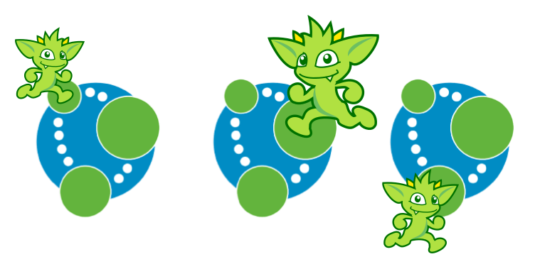 TinkerPop supports running Neo4j with its fault tolerant master-slave replication configuration, referred to as its High Availability (HA) cluster. From the TinkerPop perspective, configuring for HA is not that different than configuring for embedded mode as shown above. The main difference is the usage of HA configuration options that enable the cluster. Once connected to a cluster, usage from the TinkerPop perspective is largely the same.
In configuring for HA the most important thing to realize is that all Neo4j HA settings are simply passed through the
TinkerPop configuration settings given to the GraphFactory.open() or Neo4j.open() methods. For example, to
provide the all-important ha.server_id configuration option through TinkerPop, simply prefix that key with the
TinkerPop Neo4j key of gremlin.neo4j.conf.
The following properties demonstrates one of the three configuration files required to setup a simple three node HA cluster on the same machine instance:
gremlin.graph=org.apache.tinkerpop.gremlin.neo4j.structure.Neo4jGraph
gremlin.neo4j.directory=/tmp/neo4j.server1
gremlin.neo4j.conf.ha.server_id=1
gremlin.neo4j.conf.ha.initial_hosts=localhost:5001\,localhost:5002\,localhost:5003
gremlin.neo4j.conf.ha.host.coordination=localhost:5001
gremlin.neo4j.conf.ha.host.data=localhost:6001Assuming the intent is to configure this cluster completely within TinkerPop (perhaps within three separate Gremlin Server instances), the other two configuration files will be quite similar. The second will be:
gremlin.graph=org.apache.tinkerpop.gremlin.neo4j.structure.Neo4jGraph
gremlin.neo4j.directory=/tmp/neo4j.server2
gremlin.neo4j.conf.ha.server_id=2
gremlin.neo4j.conf.ha.initial_hosts=localhost:5001\,localhost:5002\,localhost:5003
gremlin.neo4j.conf.ha.host.coordination=localhost:5002
gremlin.neo4j.conf.ha.host.data=localhost:6002and the third will be:
gremlin.graph=org.apache.tinkerpop.gremlin.neo4j.structure.Neo4jGraph
gremlin.neo4j.directory=/tmp/neo4j.server3
gremlin.neo4j.conf.ha.server_id=3
gremlin.neo4j.conf.ha.initial_hosts=localhost:5001\,localhost:5002\,localhost:5003
gremlin.neo4j.conf.ha.host.coordination=localhost:5003
gremlin.neo4j.conf.ha.host.data=localhost:6003|
Important
|
The backslashes in the values provided to gremlin.neo4j.conf.ha.initial_hosts prevent that configuration
setting as being interpreted as a List.
|
Create three separate Gremlin Server configuration files and point each at one of these Neo4j files. Since these Gremlin
Server instances will be running on the same machine, ensure that each Gremlin Server instance has a unique port
setting in that Gremlin Server configuration file. Start each Gremlin Server instance to bring the HA cluster online.
|
Note
|
Neo4jGraph instances will block until all nodes join the cluster.
|
Neither Gremlin Server nor Neo4j will share transactions across the cluster. Be sure to either use Gremlin Server managed transactions or, if using a session without that option, ensure that all requests are being routed to the same server.
This example discussed use of Gremlin Server to demonstrate the HA configuration, but it is also easy to setup with
three Gremlin Console instances. Simply start three Gremlin Console instances and use GraphFactory to read those
configuration files to form the cluster. Furthermore, keep in mind that it is possible to have a Gremlin Console join
a cluster handled by two Gremlin Servers or Neo4j Enterprise. The only limits as to how the configuration can be
utilized are prescribed by Neo4j itself. Please refer to their
documentation for more information on how
this feature works.
Hadoop-Gremlin
<dependency>
<groupId>org.apache.tinkerpop</groupId>
<artifactId>hadoop-gremlin</artifactId>
<version>3.3.4</version>
</dependency>Hadoop is a distributed computing framework that is used to process data represented across a multi-machine compute cluster. When the data in the Hadoop cluster represents a TinkerPop3 graph, then Hadoop-Gremlin can be used to process the graph using both TinkerPop3’s OLTP and OLAP graph computing models.
|
Important
|
This section assumes that the user has a Hadoop 2.x cluster functioning. For more information on getting
started with Hadoop, please see the
Single Node Setup
tutorial. Moreover, if using GiraphGraphComputer or SparkGraphComputer it is advisable that the reader also
familiarize their self with Giraph (Getting Started) and Spark
(Quick Start).
|
Installing Hadoop-Gremlin
If using Gremlin Console, it is important to install the Hadoop-Gremlin plugin. Note that Hadoop-Gremlin requires a Gremlin Console restart after installing.
$ bin/gremlin.sh
\,,,/
(o o)
-----oOOo-(3)-oOOo-----
plugin activated: tinkerpop.server
plugin activated: tinkerpop.utilities
plugin activated: tinkerpop.tinkergraph
gremlin> :install org.apache.tinkerpop hadoop-gremlin 3.3.4
==>loaded: [org.apache.tinkerpop, hadoop-gremlin, 3.3.4] - restart the console to use [tinkerpop.hadoop]
gremlin> :q
$ bin/gremlin.sh
\,,,/
(o o)
-----oOOo-(3)-oOOo-----
plugin activated: tinkerpop.server
plugin activated: tinkerpop.utilities
plugin activated: tinkerpop.tinkergraph
gremlin> :plugin use tinkerpop.hadoop
==>tinkerpop.hadoop activated
gremlin>It is important that the CLASSPATH environmental variable references HADOOP_CONF_DIR and that the configuration
files in HADOOP_CONF_DIR contain references to a live Hadoop cluster. It is easy to verify a proper configuration
from within the Gremlin Console. If hdfs references the local file system, then there is a configuration issue.
gremlin> hdfs
==>storage[org.apache.hadoop.fs.LocalFileSystem@65bb9029] // BAD
gremlin> hdfs
==>storage[DFS[DFSClient[clientName=DFSClient_NONMAPREDUCE_1229457199_1, ugi=user (auth:SIMPLE)]]] // GOODThe HADOOP_GREMLIN_LIBS references locations that contain jars that should be uploaded to a respective
distributed cache (YARN or SparkServer).
Note that the locations in HADOOP_GREMLIN_LIBS can be colon-separated (:) and all jars from all locations will
be loaded into the cluster. Locations can be local paths (e.g. /path/to/libs), but may also be prefixed with a file
scheme to reference files or directories in different file systems (e.g. hdfs:///path/to/distributed/libs).
Typically, only the jars of the respective GraphComputer are required to be loaded (e.g. GiraphGraphComputer plugin lib
directory).
export HADOOP_GREMLIN_LIBS=/usr/local/gremlin-console/ext/giraph-gremlin/libProperties Files
HadoopGraph makes use of properties files which ultimately get turned into Apache configurations and/or
Hadoop configurations.
gremlin.graph=org.apache.tinkerpop.gremlin.hadoop.structure.HadoopGraph
gremlin.hadoop.inputLocation=tinkerpop-modern.kryo
gremlin.hadoop.graphReader=org.apache.tinkerpop.gremlin.hadoop.structure.io.gryo.GryoInputFormat
gremlin.hadoop.outputLocation=output
gremlin.hadoop.graphWriter=org.apache.tinkerpop.gremlin.hadoop.structure.io.gryo.GryoOutputFormat
gremlin.hadoop.jarsInDistributedCache=true
gremlin.hadoop.defaultGraphComputer=org.apache.tinkerpop.gremlin.spark.process.computer.SparkGraphComputer
####################################
# Spark Configuration #
####################################
spark.master=local[4]
spark.executor.memory=1g
spark.serializer=org.apache.tinkerpop.gremlin.spark.structure.io.gryo.GryoSerializer
gremlin.spark.persistContext=true
#####################################
# GiraphGraphComputer Configuration #
#####################################
giraph.minWorkers=2
giraph.maxWorkers=2
giraph.useOutOfCoreGraph=true
giraph.useOutOfCoreMessages=true
mapreduce.map.java.opts=-Xmx1024m
mapreduce.reduce.java.opts=-Xmx1024m
giraph.numInputThreads=2
giraph.numComputeThreads=2A review of the Hadoop-Gremlin specific properties are provided in the table below. For the respective OLAP
engines (SparkGraphComputer or GiraphGraphComputer) refer
to their respective documentation for configuration options.
| Property | Description |
|---|---|
gremlin.graph |
The class of the graph to construct using GraphFactory. |
gremlin.hadoop.inputLocation |
The location of the input file(s) for Hadoop-Gremlin to read the graph from. |
gremlin.hadoop.graphReader |
The class that the graph input file(s) are read with (e.g. an |
gremlin.hadoop.outputLocation |
The location to write the computed HadoopGraph to. |
gremlin.hadoop.graphWriter |
The class that the graph output file(s) are written with (e.g. an |
gremlin.hadoop.jarsInDistributedCache |
Whether to upload the Hadoop-Gremlin jars to a distributed cache (necessary if jars are not on the machines' classpaths). |
gremlin.hadoop.defaultGraphComputer |
The default |
Along with the properties above, the numerous Hadoop specific properties can be added as needed to tune and parameterize the executed Hadoop-Gremlin job on the respective Hadoop cluster.
|
Important
|
As the size of the graphs being processed becomes large, it is important to fully understand how the underlying OLAP engine (e.g. Spark, Giraph, etc.) works and understand the numerous parameterizations offered by these systems. Such knowledge can help alleviate out of memory exceptions, slow load times, slow processing times, garbage collection issues, etc. |
OLTP Hadoop-Gremlin
It is possible to execute OLTP operations over a HadoopGraph.
However, realize that the underlying HDFS files are not random access and thus, to retrieve a vertex, a linear scan
is required. OLTP operations are useful for peeking into the graph prior to executing a long running OLAP job — e.g.
g.V().valueMap().limit(10).
|
Warning
|
OLTP operations on HadoopGraph are not efficient. They require linear scans to execute and are unreasonable
for large graphs. In such large graph situations, make use of TraversalVertexProgram
which is the OLAP Gremlin machine.
|
gremlin> hdfs.copyFromLocal('data/tinkerpop-modern.kryo', 'tinkerpop-modern.kryo')
gremlin> hdfs.ls()
==>rw-r--r-- smallette supergroup 781 tinkerpop-modern.kryo
gremlin> graph = GraphFactory.open('conf/hadoop/hadoop-gryo.properties')
==>hadoopgraph[gryoinputformat->gryooutputformat]
gremlin> g = graph.traversal()
==>graphtraversalsource[hadoopgraph[gryoinputformat->gryooutputformat], standard]
gremlin> g.V().count()
==>6
gremlin> g.V().out().out().values('name')
==>ripple
==>lop
gremlin> g.V().group().by{it.value('name')[1]}.by('name').next()
==>a=[marko, vadas]
==>e=[peter]
==>i=[ripple]
==>o=[lop, josh]hdfs.copyFromLocal('data/tinkerpop-modern.kryo', 'tinkerpop-modern.kryo')
hdfs.ls()
graph = GraphFactory.open('conf/hadoop/hadoop-gryo.properties')
g = graph.traversal()
g.V().count()
g.V().out().out().values('name')
g.V().group().by{it.value('name')[1]}.by('name').next()OLAP Hadoop-Gremlin
 Hadoop-Gremlin was designed to execute OLAP operations via
Hadoop-Gremlin was designed to execute OLAP operations via
GraphComputer. The OLTP examples presented previously are reproduced below, but using TraversalVertexProgram
for the execution of the Gremlin traversal.
A Graph in TinkerPop3 can support any number of GraphComputer implementations. Out of the box, Hadoop-Gremlin
supports the following two implementations.
-
SparkGraphComputer: Leverages Apache Spark to execute TinkerPop3 OLAP computations.-
The graph may fit within the total RAM of the cluster (supports larger graphs). Message passing is coordinated via Spark map/reduce/join operations on in-memory and disk-cached data (average speed traversals).
-
-
GiraphGraphComputer: Leverages Apache Giraph to execute TinkerPop3 OLAP computations.-
The graph should fit within the total RAM of the Hadoop cluster (graph size restriction), though "out-of-core" processing is possible. Message passing is coordinated via ZooKeeper for the in-memory graph (speedy traversals).
-
|
Tip
|
For those wanting to use the SugarPlugin with
their submitted traversal, do :remote config useSugar true as well as :plugin use tinkerpop.sugar at the start of
the Gremlin Console session if it is not already activated.
|
Note that SparkGraphComputer and GiraphGraphComputer are loaded via their respective plugins. Typically only
one plugin or the other is loaded depending on the desired GraphComputer to use.
$ bin/gremlin.sh
\,,,/
(o o)
-----oOOo-(3)-oOOo-----
plugin activated: tinkerpop.server
plugin activated: tinkerpop.utilities
plugin activated: tinkerpop.tinkergraph
plugin activated: tinkerpop.hadoop
gremlin> :install org.apache.tinkerpop giraph-gremlin 3.3.4
==>loaded: [org.apache.tinkerpop, giraph-gremlin, 3.3.4] - restart the console to use [tinkerpop.giraph]
gremlin> :install org.apache.tinkerpop spark-gremlin 3.3.4
==>loaded: [org.apache.tinkerpop, spark-gremlin, 3.3.4] - restart the console to use [tinkerpop.spark]
gremlin> :q
$ bin/gremlin.sh
\,,,/
(o o)
-----oOOo-(3)-oOOo-----
plugin activated: tinkerpop.server
plugin activated: tinkerpop.utilities
plugin activated: tinkerpop.tinkergraph
plugin activated: tinkerpop.hadoop
gremlin> :plugin use tinkerpop.giraph
==>tinkerpop.giraph activated
gremlin> :plugin use tinkerpop.spark
==>tinkerpop.spark activated|
Warning
|
Hadoop, Spark, and Giraph all depend on many of the same libraries (e.g. ZooKeeper, Snappy, Netty, Guava,
etc.). Unfortunately, typically these dependencies are not to the same versions of the respective libraries. As such,
it is best to not have both Spark and Giraph plugins loaded in the same console session nor in the same Java
project (though intelligent <exclusion>-usage can help alleviate conflicts in a Java project).
|
SparkGraphComputer
<dependency>
<groupId>org.apache.tinkerpop</groupId>
<artifactId>spark-gremlin</artifactId>
<version>3.3.4</version>
</dependency> Spark is an Apache Software Foundation
project focused on general-purpose OLAP data processing. Spark provides a hybrid in-memory/disk-based distributed
computing model that is similar to Hadoop’s MapReduce model. Spark maintains a fluent function chaining DSL that is
arguably easier for developers to work with than native Hadoop MapReduce. Spark-Gremlin provides an implementation of
the bulk-synchronous parallel, distributed message passing algorithm within Spark and thus, any
Spark is an Apache Software Foundation
project focused on general-purpose OLAP data processing. Spark provides a hybrid in-memory/disk-based distributed
computing model that is similar to Hadoop’s MapReduce model. Spark maintains a fluent function chaining DSL that is
arguably easier for developers to work with than native Hadoop MapReduce. Spark-Gremlin provides an implementation of
the bulk-synchronous parallel, distributed message passing algorithm within Spark and thus, any VertexProgram can be
executed over SparkGraphComputer.
Furthermore the lib/ directory should be distributed across all machines in the SparkServer cluster. For this purpose
TinkerPop provides a helper script, which takes the Spark installation directory and the Spark machines as input:
bin/hadoop/init-tp-spark.sh /usr/local/spark spark@10.0.0.1 spark@10.0.0.2 spark@10.0.0.3Once the lib/ directory is distributed, SparkGraphComputer can be used as follows.
gremlin> graph = GraphFactory.open('conf/hadoop/hadoop-gryo.properties')
==>hadoopgraph[gryoinputformat->gryooutputformat]
gremlin> g = graph.traversal().withComputer(SparkGraphComputer)
==>graphtraversalsource[hadoopgraph[gryoinputformat->gryooutputformat], sparkgraphcomputer]
gremlin> g.V().count()
==>6
gremlin> g.V().out().out().values('name')
==>lop
==>ripplegraph = GraphFactory.open('conf/hadoop/hadoop-gryo.properties')
g = graph.traversal().withComputer(SparkGraphComputer)
g.V().count()
g.V().out().out().values('name')For using lambdas in Gremlin-Groovy, simply provide :remote connect a TraversalSource which leverages SparkGraphComputer.
gremlin> graph = GraphFactory.open('conf/hadoop/hadoop-gryo.properties')
==>hadoopgraph[gryoinputformat->gryooutputformat]
gremlin> g = graph.traversal().withComputer(SparkGraphComputer)
==>graphtraversalsource[hadoopgraph[gryoinputformat->gryooutputformat], sparkgraphcomputer]
gremlin> :remote connect tinkerpop.hadoop graph g
INFO org.apache.tinkerpop.gremlin.hadoop.structure.HadoopGraph - HADOOP_GREMLIN_LIBS is set to: /home/smallette/git/apache/incubator-tinkerpop/gremlin-console/target/apache-tinkerpop-gremlin-console-3.3.4-standalone/ext/giraph-gremlin/lib:/home/smallette/git/apache/incubator-tinkerpop/gremlin-console/target/apache-tinkerpop-gremlin-console-3.3.4-standalone/ext/tinkergraph-gremlin/lib
INFO org.apache.tinkerpop.gremlin.hadoop.structure.HadoopGraph - HADOOP_GREMLIN_LIBS is set to: /home/smallette/git/apache/incubator-tinkerpop/gremlin-console/target/apache-tinkerpop-gremlin-console-3.3.4-standalone/ext/giraph-gremlin/lib:/home/smallette/git/apache/incubator-tinkerpop/gremlin-console/target/apache-tinkerpop-gremlin-console-3.3.4-standalone/ext/tinkergraph-gremlin/lib
INFO org.apache.tinkerpop.gremlin.hadoop.structure.HadoopGraph - HADOOP_GREMLIN_LIBS is set to: /home/smallette/git/apache/incubator-tinkerpop/gremlin-console/target/apache-tinkerpop-gremlin-console-3.3.4-standalone/ext/giraph-gremlin/lib:/home/smallette/git/apache/incubator-tinkerpop/gremlin-console/target/apache-tinkerpop-gremlin-console-3.3.4-standalone/ext/tinkergraph-gremlin/lib
==>useTraversalSource=graphtraversalsource[hadoopgraph[gryoinputformat->gryooutputformat], sparkgraphcomputer]
==>useSugar=false
gremlin> :> g.V().group().by{it.value('name')[1]}.by('name')
==>[a:[marko,vadas],i:[ripple],e:[peter],o:[lop,josh]]graph = GraphFactory.open('conf/hadoop/hadoop-gryo.properties')
g = graph.traversal().withComputer(SparkGraphComputer)
:remote connect tinkerpop.hadoop graph g
:> g.V().group().by{it.value('name')[1]}.by('name')The SparkGraphComputer algorithm leverages Spark’s caching abilities to reduce the amount of data shuffled across
the wire on each iteration of the VertexProgram. When the graph is loaded as a Spark RDD
(Resilient Distributed Dataset) it is immediately cached as graphRDD. The graphRDD is a distributed adjacency
list which encodes the vertex, its properties, and all its incident edges. On the first iteration, each vertex
(in parallel) is passed through VertexProgram.execute(). This yields an output of the vertex’s mutated state
(i.e. updated compute keys — propertyX) and its outgoing messages. This viewOutgoingRDD is then reduced to
viewIncomingRDD where the outgoing messages are sent to their respective vertices. If a MessageCombiner exists
for the vertex program, then messages are aggregated locally and globally to ultimately yield one incoming message
for the vertex. This reduce sequence is the "message pass." If the vertex program does not terminate on this
iteration, then the viewIncomingRDD is joined with the cached graphRDD and the process continues. When there
are no more iterations, there is a final join and the resultant RDD is stripped of its edges and messages. This
mapReduceRDD is cached and is processed by each MapReduce job in the
GraphComputer computation.
| Property | Description |
|---|---|
gremlin.hadoop.graphReader |
A class for reading a graph-based RDD (e.g. an |
gremlin.hadoop.graphWriter |
A class for writing a graph-based RDD (e.g. an |
gremlin.spark.graphStorageLevel |
What |
gremlin.spark.persistContext |
Whether to create a new |
gremlin.spark.persistStorageLevel |
What |
InputRDD and OutputRDD
If the provider/user does not want to use Hadoop InputFormats, it is possible to leverage Spark’s RDD
constructs directly. An InputRDD provides a read method that takes a SparkContext and returns a graphRDD. Likewise,
and OutputRDD is used for writing a graphRDD.
If the graph system provider uses an InputRDD, the RDD should maintain an associated org.apache.spark.Partitioner. By doing so,
SparkGraphComputer will not partition the loaded graph across the cluster as it has already been partitioned by the graph system provider.
This can save a significant amount of time and space resources. If the InputRDD does not have a registered partitioner,
SparkGraphComputer will partition the graph using a org.apache.spark.HashPartitioner with the number of partitions
being either the number of existing partitions in the input (i.e. input splits) or the user specified number of GraphComputer.workers().
Storage Levels
The SparkGraphComputer uses MEMORY_ONLY to cache the input graph and the output graph by default. Users should be aware of the impact of
different storage levels, since the default settings can quickly lead to memory issues on larger graphs. An overview of Spark’s persistence
settings is provided in Spark’s programming guide.
Using a Persisted Context
It is possible to persist the graph RDD between jobs within the SparkContext (e.g. SparkServer) by leveraging PersistedOutputRDD.
Note that gremlin.spark.persistContext should be set to true or else the persisted RDD will be destroyed when the SparkContext closes.
The persisted RDD is named by the gremlin.hadoop.outputLocation configuration. Similarly, PersistedInputRDD is used with respective
gremlin.hadoop.inputLocation to retrieve the persisted RDD from the SparkContext.
When using a persistent SparkContext the configuration used by the original Spark Configuration will be inherited by all threaded
references to that Spark Context. The exception to this rule are those properties which have a specific thread local effect.
-
spark.jobGroup.id
-
spark.job.description
-
spark.job.interruptOnCancel
-
spark.scheduler.pool
Finally, there is a spark object that can be used to manage persisted RDDs (see Interacting with Spark).
Using CloneVertexProgram
The CloneVertexProgram copies a whole graph from any graph InputFormat to any graph
OutputFormat. TinkerPop provides formats such as GraphSONOutputFormat, GryoOutputFormat or ScriptOutputFormat.
The example below takes a Hadoop graph as the input (in GryoInputFormat) and exports it as a GraphSON file
(GraphSONOutputFormat).
GiraphGraphComputer
<dependency>
<groupId>org.apache.tinkerpop</groupId>
<artifactId>giraph-gremlin</artifactId>
<version>3.3.4</version>
</dependency> Giraph is an Apache Software Foundation
project focused on OLAP-based graph processing. Giraph makes use of the distributed graph computing paradigm made
popular by Google’s Pregel. In Giraph, developers write "vertex programs" that get executed at each vertex in
parallel. These programs communicate with one another in a bulk synchronous parallel (BSP) manner. This model aligns
with TinkerPop3’s
Giraph is an Apache Software Foundation
project focused on OLAP-based graph processing. Giraph makes use of the distributed graph computing paradigm made
popular by Google’s Pregel. In Giraph, developers write "vertex programs" that get executed at each vertex in
parallel. These programs communicate with one another in a bulk synchronous parallel (BSP) manner. This model aligns
with TinkerPop3’s GraphComputer API. TinkerPop3 provides an implementation of GraphComputer that works for Giraph
called GiraphGraphComputer. Moreover, with TinkerPop3’s MapReduce-framework, the standard
Giraph/Pregel model is extended to support an arbitrary number of MapReduce phases to aggregate and yield results
from the graph. Below are examples using GiraphGraphComputer from the Gremlin-Console.
|
Warning
|
Giraph uses a large number of Hadoop counters. The default for Hadoop is 120. In mapred-site.xml it is
possible to increase the limit it via the mapreduce.job.counters.max property. A good value to use is 1000. This
is a cluster-wide property so be sure to restart the cluster after updating.
|
|
Warning
|
The maximum number of workers can be no larger than the number of map-slots in the Hadoop cluster minus 1.
For example, if the Hadoop cluster has 4 map slots, then giraph.maxWorkers can not be larger than 3. One map-slot
is reserved for the master compute node and all other slots can be allocated as workers to execute the VertexPrograms
on the vertices of the graph.
|
If GiraphGraphComputer will be used as the GraphComputer for HadoopGraph then its lib directory should be
specified in HADOOP_GREMLIN_LIBS.
export HADOOP_GREMLIN_LIBS=$HADOOP_GREMLIN_LIBS:/usr/local/gremlin-console/ext/giraph-gremlin/libOr, the user can specify the directory in the Gremlin Console.
System.setProperty('HADOOP_GREMLIN_LIBS',System.getProperty('HADOOP_GREMLIN_LIBS') + ':' + '/usr/local/gremlin-console/ext/giraph-gremlin/lib')gremlin> graph = GraphFactory.open('conf/hadoop/hadoop-gryo.properties')
==>hadoopgraph[gryoinputformat->gryooutputformat]
gremlin> g = graph.traversal().withComputer(GiraphGraphComputer)
==>graphtraversalsource[hadoopgraph[gryoinputformat->gryooutputformat], giraphgraphcomputer]
gremlin> g.V().count()
INFO org.apache.hadoop.mapreduce.Job - The url to track the job: http://localhost:8088/proxy/application_1539689651676_0001/
INFO org.apache.hadoop.mapreduce.Job - Running job: job_1539689651676_0001
INFO org.apache.hadoop.mapreduce.Job - Job job_1539689651676_0001 running in uber mode : false
INFO org.apache.hadoop.mapreduce.Job - map 33% reduce 0%
INFO org.apache.hadoop.mapreduce.Job - map 67% reduce 0%
INFO org.apache.hadoop.mapreduce.Job - map 100% reduce 0%
INFO org.apache.hadoop.mapreduce.Job - Job job_1539689651676_0001 completed successfully
INFO org.apache.hadoop.mapreduce.Job - Counters: 50
File System Counters
FILE: Number of bytes read=0
FILE: Number of bytes written=575877
FILE: Number of read operations=0
FILE: Number of large read operations=0
FILE: Number of write operations=0
HDFS: Number of bytes read=977
HDFS: Number of bytes written=1257
HDFS: Number of read operations=42
HDFS: Number of large read operations=0
HDFS: Number of write operations=21
Job Counters
Launched map tasks=3
Other local map tasks=3
Total time spent by all maps in occupied slots (ms)=204706
Total time spent by all reduces in occupied slots (ms)=0
Total time spent by all map tasks (ms)=102353
Total vcore-milliseconds taken by all map tasks=102353
Total megabyte-milliseconds taken by all map tasks=209618944
Map-Reduce Framework
Map input records=3
Map output records=0
Input split bytes=132
Spilled Records=0
Failed Shuffles=0
Merged Map outputs=0
GC time elapsed (ms)=2679
CPU time spent (ms)=23800
Physical memory (bytes) snapshot=1697599488
Virtual memory (bytes) snapshot=8585940992
Total committed heap usage (bytes)=1284505600
Giraph Stats
Aggregate edges=0
Aggregate finished vertices=0
Aggregate sent message message bytes=0
Aggregate sent messages=0
Aggregate vertices=6
Current master task partition=0
Current workers=2
Last checkpointed superstep=0
Sent message bytes=0
Sent messages=0
Superstep=1
Giraph Timers
Initialize (ms)=3026
Input superstep (ms)=5295
Setup (ms)=46
Shutdown (ms)=9083
Superstep 0 GiraphComputation (ms)=3963
Total (ms)=18400
Zookeeper base path
/_hadoopBsp/job_1539689651676_0001=0
Zookeeper halt node
/_hadoopBsp/job_1539689651676_0001/_haltComputation=0
Zookeeper server:port
localhost:22181=0
File Input Format Counters
Bytes Read=0
File Output Format Counters
Bytes Written=0
==>6
gremlin> g.V().out().out().values('name')
INFO org.apache.hadoop.mapreduce.Job - The url to track the job: http://localhost:8088/proxy/application_1539689651676_0002/
INFO org.apache.hadoop.mapreduce.Job - Running job: job_1539689651676_0002
INFO org.apache.hadoop.mapreduce.Job - Job job_1539689651676_0002 running in uber mode : false
INFO org.apache.hadoop.mapreduce.Job - map 33% reduce 0%
INFO org.apache.hadoop.mapreduce.Job - map 67% reduce 0%
INFO org.apache.hadoop.mapreduce.Job - map 100% reduce 0%
INFO org.apache.hadoop.mapreduce.Job - Job job_1539689651676_0002 completed successfully
INFO org.apache.hadoop.mapreduce.Job - Counters: 52
File System Counters
FILE: Number of bytes read=0
FILE: Number of bytes written=573060
FILE: Number of read operations=0
FILE: Number of large read operations=0
FILE: Number of write operations=0
HDFS: Number of bytes read=977
HDFS: Number of bytes written=1387
HDFS: Number of read operations=40
HDFS: Number of large read operations=0
HDFS: Number of write operations=21
Job Counters
Launched map tasks=3
Other local map tasks=3
Total time spent by all maps in occupied slots (ms)=225044
Total time spent by all reduces in occupied slots (ms)=0
Total time spent by all map tasks (ms)=112522
Total vcore-milliseconds taken by all map tasks=112522
Total megabyte-milliseconds taken by all map tasks=230445056
Map-Reduce Framework
Map input records=3
Map output records=0
Input split bytes=132
Spilled Records=0
Failed Shuffles=0
Merged Map outputs=0
GC time elapsed (ms)=1382
CPU time spent (ms)=23240
Physical memory (bytes) snapshot=1688342528
Virtual memory (bytes) snapshot=8599756800
Total committed heap usage (bytes)=1378877440
Giraph Stats
Aggregate edges=0
Aggregate finished vertices=0
Aggregate sent message message bytes=856
Aggregate sent messages=8
Aggregate vertices=6
Current master task partition=0
Current workers=2
Last checkpointed superstep=0
Sent message bytes=0
Sent messages=0
Superstep=3
Giraph Timers
Initialize (ms)=2890
Input superstep (ms)=5280
Setup (ms)=48
Shutdown (ms)=9444
Superstep 0 GiraphComputation (ms)=5836
Superstep 1 GiraphComputation (ms)=3040
Superstep 2 GiraphComputation (ms)=3184
Total (ms)=26835
Zookeeper base path
/_hadoopBsp/job_1539689651676_0002=0
Zookeeper halt node
/_hadoopBsp/job_1539689651676_0002/_haltComputation=0
Zookeeper server:port
localhost:22181=0
File Input Format Counters
Bytes Read=0
File Output Format Counters
Bytes Written=0
==>ripple
==>lopgraph = GraphFactory.open('conf/hadoop/hadoop-gryo.properties')
g = graph.traversal().withComputer(GiraphGraphComputer)
g.V().count()
g.V().out().out().values('name')|
Important
|
The examples above do not use lambdas (i.e. closures in Gremlin-Groovy). This makes the traversal
serializable and thus, able to be distributed to all machines in the Hadoop cluster. If a lambda is required in a
traversal, then the traversal must be sent as a String and compiled locally at each machine in the cluster. The
following example demonstrates the :remote command which allows for submitting Gremlin traversals as a String.
|
gremlin> graph = GraphFactory.open('conf/hadoop/hadoop-gryo.properties')
==>hadoopgraph[gryoinputformat->gryooutputformat]
gremlin> g = graph.traversal().withComputer(GiraphGraphComputer)
==>graphtraversalsource[hadoopgraph[gryoinputformat->gryooutputformat], giraphgraphcomputer]
gremlin> :remote connect tinkerpop.hadoop graph g
INFO org.apache.tinkerpop.gremlin.hadoop.structure.HadoopGraph - HADOOP_GREMLIN_LIBS is set to: /home/smallette/git/apache/incubator-tinkerpop/gremlin-console/target/apache-tinkerpop-gremlin-console-3.3.4-standalone/ext/giraph-gremlin/lib:/home/smallette/git/apache/incubator-tinkerpop/gremlin-console/target/apache-tinkerpop-gremlin-console-3.3.4-standalone/ext/tinkergraph-gremlin/lib
INFO org.apache.tinkerpop.gremlin.hadoop.structure.HadoopGraph - HADOOP_GREMLIN_LIBS is set to: /home/smallette/git/apache/incubator-tinkerpop/gremlin-console/target/apache-tinkerpop-gremlin-console-3.3.4-standalone/ext/giraph-gremlin/lib:/home/smallette/git/apache/incubator-tinkerpop/gremlin-console/target/apache-tinkerpop-gremlin-console-3.3.4-standalone/ext/tinkergraph-gremlin/lib
INFO org.apache.tinkerpop.gremlin.hadoop.structure.HadoopGraph - HADOOP_GREMLIN_LIBS is set to: /home/smallette/git/apache/incubator-tinkerpop/gremlin-console/target/apache-tinkerpop-gremlin-console-3.3.4-standalone/ext/giraph-gremlin/lib:/home/smallette/git/apache/incubator-tinkerpop/gremlin-console/target/apache-tinkerpop-gremlin-console-3.3.4-standalone/ext/tinkergraph-gremlin/lib
==>useTraversalSource=graphtraversalsource[hadoopgraph[gryoinputformat->gryooutputformat], giraphgraphcomputer]
==>useSugar=false
gremlin> :> g.V().group().by{it.value('name')[1]}.by('name')
INFO org.apache.hadoop.mapreduce.Job - The url to track the job: http://localhost:8088/proxy/application_1539689651676_0003/
INFO org.apache.hadoop.mapreduce.Job - Running job: job_1539689651676_0003
INFO org.apache.hadoop.mapreduce.Job - Job job_1539689651676_0003 running in uber mode : false
INFO org.apache.hadoop.mapreduce.Job - map 100% reduce 0%
INFO org.apache.hadoop.mapreduce.Job - Job job_1539689651676_0003 completed successfully
INFO org.apache.hadoop.mapreduce.Job - Counters: 50
File System Counters
FILE: Number of bytes read=0
FILE: Number of bytes written=546156
FILE: Number of read operations=0
FILE: Number of large read operations=0
FILE: Number of write operations=0
HDFS: Number of bytes read=977
HDFS: Number of bytes written=1550
HDFS: Number of read operations=40
HDFS: Number of large read operations=0
HDFS: Number of write operations=21
Job Counters
Launched map tasks=3
Other local map tasks=3
Total time spent by all maps in occupied slots (ms)=221610
Total time spent by all reduces in occupied slots (ms)=0
Total time spent by all map tasks (ms)=110805
Total vcore-milliseconds taken by all map tasks=110805
Total megabyte-milliseconds taken by all map tasks=226928640
Map-Reduce Framework
Map input records=3
Map output records=0
Input split bytes=132
Spilled Records=0
Failed Shuffles=0
Merged Map outputs=0
GC time elapsed (ms)=2573
CPU time spent (ms)=42260
Physical memory (bytes) snapshot=1773858816
Virtual memory (bytes) snapshot=8625213440
Total committed heap usage (bytes)=1494220800
Giraph Stats
Aggregate edges=0
Aggregate finished vertices=0
Aggregate sent message message bytes=0
Aggregate sent messages=0
Aggregate vertices=6
Current master task partition=0
Current workers=2
Last checkpointed superstep=0
Sent message bytes=0
Sent messages=0
Superstep=1
Giraph Timers
Initialize (ms)=2583
Input superstep (ms)=8611
Setup (ms)=39
Shutdown (ms)=9099
Superstep 0 GiraphComputation (ms)=7707
Total (ms)=25458
Zookeeper base path
/_hadoopBsp/job_1539689651676_0003=0
Zookeeper halt node
/_hadoopBsp/job_1539689651676_0003/_haltComputation=0
Zookeeper server:port
localhost:22181=0
File Input Format Counters
Bytes Read=0
File Output Format Counters
Bytes Written=0
==>[a:[vadas,marko],e:[peter],i:[ripple],o:[josh,lop]]
gremlin> result
==>result[hadoopgraph[gryoinputformat->gryooutputformat],memory[size:1]]
gremlin> result.memory.runtime
==>51962graph = GraphFactory.open('conf/hadoop/hadoop-gryo.properties')
g = graph.traversal().withComputer(GiraphGraphComputer)
:remote connect tinkerpop.hadoop graph g
:> g.V().group().by{it.value('name')[1]}.by('name')
result
result.memory.runtime|
Note
|
If the user explicitly specifies giraph.maxWorkers and/or giraph.numComputeThreads in the configuration,
then these values will be used by Giraph. However, if these are not specified and the user never calls
GraphComputer.workers() then GiraphGraphComputer will try to compute the number of workers/threads to use based
on the cluster’s profile.
|
Loading with BulkLoaderVertexProgram
The BulkLoaderVertexProgram is a generalized bulk loader that can be used to load
large amounts of data to and from different Graph implementations. The following code demonstrates how to load
the Grateful Dead graph from HadoopGraph into TinkerGraph over Giraph:
gremlin> hdfs.copyFromLocal('data/grateful-dead.kryo', 'grateful-dead.kryo')
gremlin> readGraph = GraphFactory.open('conf/hadoop/hadoop-grateful-gryo.properties')
==>hadoopgraph[gryoinputformat->gryooutputformat]
gremlin> writeGraph = 'conf/tinkergraph-gryo.properties'
==>conf/tinkergraph-gryo.properties
gremlin> blvp = BulkLoaderVertexProgram.build().
keepOriginalIds(false).
writeGraph(writeGraph).create(readGraph)
==>BulkLoaderVertexProgram[bulkLoader=IncrementalBulkLoader, vertexIdProperty=bulkLoader.vertex.id, userSuppliedIds=false, keepOriginalIds=false, batchSize=0]
gremlin> readGraph.compute(GiraphGraphComputer).workers(1).program(blvp).submit().get()
INFO org.apache.hadoop.mapreduce.Job - The url to track the job: http://localhost:8088/proxy/application_1539689651676_0004/
INFO org.apache.hadoop.mapreduce.Job - Running job: job_1539689651676_0004
INFO org.apache.hadoop.mapreduce.Job - Job job_1539689651676_0004 running in uber mode : false
INFO org.apache.hadoop.mapreduce.Job - map 100% reduce 0%
INFO org.apache.hadoop.mapreduce.Job - Job job_1539689651676_0004 completed successfully
INFO org.apache.hadoop.mapreduce.Job - Counters: 52
File System Counters
FILE: Number of bytes read=0
FILE: Number of bytes written=344220
FILE: Number of read operations=0
FILE: Number of large read operations=0
FILE: Number of write operations=0
HDFS: Number of bytes read=332378
HDFS: Number of bytes written=223651
HDFS: Number of read operations=29
HDFS: Number of large read operations=0
HDFS: Number of write operations=14
Job Counters
Launched map tasks=2
Other local map tasks=2
Total time spent by all maps in occupied slots (ms)=114356
Total time spent by all reduces in occupied slots (ms)=0
Total time spent by all map tasks (ms)=57178
Total vcore-milliseconds taken by all map tasks=57178
Total megabyte-milliseconds taken by all map tasks=117100544
Map-Reduce Framework
Map input records=2
Map output records=0
Input split bytes=88
Spilled Records=0
Failed Shuffles=0
Merged Map outputs=0
GC time elapsed (ms)=756
CPU time spent (ms)=26610
Physical memory (bytes) snapshot=1129431040
Virtual memory (bytes) snapshot=5712408576
Total committed heap usage (bytes)=871366656
Giraph Stats
Aggregate edges=0
Aggregate finished vertices=0
Aggregate sent message message bytes=468832
Aggregate sent messages=8049
Aggregate vertices=808
Current master task partition=0
Current workers=1
Last checkpointed superstep=0
Sent message bytes=0
Sent messages=0
Superstep=3
Giraph Timers
Initialize (ms)=636
Input superstep (ms)=2103
Setup (ms)=55
Shutdown (ms)=9109
Superstep 0 GiraphComputation (ms)=2981
Superstep 1 GiraphComputation (ms)=4023
Superstep 2 GiraphComputation (ms)=2131
Total (ms)=20405
Zookeeper base path
/_hadoopBsp/job_1539689651676_0004=0
Zookeeper halt node
/_hadoopBsp/job_1539689651676_0004/_haltComputation=0
Zookeeper server:port
localhost:22181=0
File Input Format Counters
Bytes Read=0
File Output Format Counters
Bytes Written=0
==>result[hadoopgraph[gryoinputformat->gryooutputformat],memory[size:0]]
gremlin> :set max-iteration 10
gremlin> graph = GraphFactory.open(writeGraph)
==>tinkergraph[vertices:808 edges:8046]
gremlin> g = graph.traversal()
==>graphtraversalsource[tinkergraph[vertices:808 edges:8046], standard]
gremlin> g.V().valueMap()
==>[name:[HEY BO DIDDLEY],songType:[cover],performances:[5]]
==>[name:[TILL THE MORNING COMES],songType:[original],performances:[5]]
==>[name:[IM A MAN],songType:[cover],performances:[1]]
==>[name:[Garcia_Lesh_Weir]]
==>[name:[NOT FADE AWAY],songType:[cover],performances:[531]]
==>[name:[THE VALLEY ROAD],songType:[original],performances:[6]]
==>[name:[Graham]]
==>[name:[BERTHA],songType:[original],performances:[394]]
==>[name:[WALK IN THE SUNSHINE],songType:[original],performances:[0]]
==>[name:[GOING DOWN THE ROAD FEELING BAD],songType:[cover],performances:[293]]
...
gremlin> graph.close()hdfs.copyFromLocal('data/grateful-dead.kryo', 'grateful-dead.kryo')
readGraph = GraphFactory.open('conf/hadoop/hadoop-grateful-gryo.properties')
writeGraph = 'conf/tinkergraph-gryo.properties'
blvp = BulkLoaderVertexProgram.build().
keepOriginalIds(false).
writeGraph(writeGraph).create(readGraph)
readGraph.compute(GiraphGraphComputer).workers(1).program(blvp).submit().get()
:set max-iteration 10
graph = GraphFactory.open(writeGraph)
g = graph.traversal()
g.V().valueMap()
graph.close()# hadoop-grateful-gryo.properties
#
# Hadoop Graph Configuration
#
gremlin.graph=org.apache.tinkerpop.gremlin.hadoop.structure.HadoopGraph
gremlin.hadoop.graphReader=org.apache.tinkerpop.gremlin.hadoop.structure.io.gryo.GryoInputFormat
gremlin.hadoop.graphWriter=org.apache.hadoop.mapreduce.lib.output.NullOutputFormat
gremlin.hadoop.inputLocation=grateful-dead.kryo
gremlin.hadoop.outputLocation=output
gremlin.hadoop.jarsInDistributedCache=true
#
# GiraphGraphComputer Configuration
#
giraph.minWorkers=1
giraph.maxWorkers=1
giraph.useOutOfCoreGraph=true
giraph.useOutOfCoreMessages=true
mapred.map.child.java.opts=-Xmx1024m
mapred.reduce.child.java.opts=-Xmx1024m
giraph.numInputThreads=4
giraph.numComputeThreads=4
giraph.maxMessagesInMemory=100000# tinkergraph-gryo.properties
gremlin.graph=org.apache.tinkerpop.gremlin.tinkergraph.structure.TinkerGraph
gremlin.tinkergraph.graphFormat=gryo
gremlin.tinkergraph.graphLocation=/tmp/tinkergraph.kryo|
Note
|
The path to TinkerGraph needs to be included in the HADOOP_GREMLIN_LIBS for the above example to work.
|
Input/Output Formats
 Hadoop-Gremlin provides various I/O formats — i.e. Hadoop
Hadoop-Gremlin provides various I/O formats — i.e. Hadoop
InputFormat and OutputFormat. All of the formats make use of an adjacency list
representation of the graph where each "row" represents a single vertex, its properties, and its incoming and
outgoing edges.
Gryo I/O Format
-
InputFormat:
org.apache.tinkerpop.gremlin.hadoop.structure.io.gryo.GryoInputFormat -
OutputFormat:
org.apache.tinkerpop.gremlin.hadoop.structure.io.gryo.GryoOutputFormat
Gryo is a binary graph format that leverages Kryo to make a compact, binary representation of a vertex. It is recommended that users leverage Gryo given its space/time savings over text-based representations.
|
Note
|
The GryoInputFormat is splittable.
|
GraphSON I/O Format
-
InputFormat:
org.apache.tinkerpop.gremlin.hadoop.structure.io.graphson.GraphSONInputFormat -
OutputFormat:
org.apache.tinkerpop.gremlin.hadoop.structure.io.graphson.GraphSONOutputFormat
GraphSON is a JSON based graph format. GraphSON is a space-expensive graph format in that it is a text-based markup language. However, it is convenient for many developers to work with as its structure is simple (easy to create and parse).
The data below represents an adjacency list representation of the classic TinkerGraph toy graph in GraphSON format.
{"id":1,"label":"person","outE":{"created":[{"id":9,"inV":3,"properties":{"weight":0.4}}],"knows":[{"id":7,"inV":2,"properties":{"weight":0.5}},{"id":8,"inV":4,"properties":{"weight":1.0}}]},"properties":{"name":[{"id":0,"value":"marko"}],"age":[{"id":1,"value":29}]}}
{"id":2,"label":"person","inE":{"knows":[{"id":7,"outV":1,"properties":{"weight":0.5}}]},"properties":{"name":[{"id":2,"value":"vadas"}],"age":[{"id":3,"value":27}]}}
{"id":3,"label":"software","inE":{"created":[{"id":9,"outV":1,"properties":{"weight":0.4}},{"id":11,"outV":4,"properties":{"weight":0.4}},{"id":12,"outV":6,"properties":{"weight":0.2}}]},"properties":{"name":[{"id":4,"value":"lop"}],"lang":[{"id":5,"value":"java"}]}}
{"id":4,"label":"person","inE":{"knows":[{"id":8,"outV":1,"properties":{"weight":1.0}}]},"outE":{"created":[{"id":10,"inV":5,"properties":{"weight":1.0}},{"id":11,"inV":3,"properties":{"weight":0.4}}]},"properties":{"name":[{"id":6,"value":"josh"}],"age":[{"id":7,"value":32}]}}
{"id":5,"label":"software","inE":{"created":[{"id":10,"outV":4,"properties":{"weight":1.0}}]},"properties":{"name":[{"id":8,"value":"ripple"}],"lang":[{"id":9,"value":"java"}]}}
{"id":6,"label":"person","outE":{"created":[{"id":12,"inV":3,"properties":{"weight":0.2}}]},"properties":{"name":[{"id":10,"value":"peter"}],"age":[{"id":11,"value":35}]}}Script I/O Format
-
InputFormat:
org.apache.tinkerpop.gremlin.hadoop.structure.io.script.ScriptInputFormat -
OutputFormat:
org.apache.tinkerpop.gremlin.hadoop.structure.io.script.ScriptOutputFormat
ScriptInputFormat and ScriptOutputFormat take an arbitrary script and use that script to either read or write
Vertex objects, respectively. This can be considered the most general InputFormat/OutputFormat possible in that
Hadoop-Gremlin uses the user provided script for all reading/writing.
ScriptInputFormat
The data below represents an adjacency list representation of the classic TinkerGraph toy graph. First line reads,
"vertex 1, labeled person having 2 property values (marko and 29) has 3 outgoing edges; the first edge is
labeled knows, connects the current vertex 1 with vertex 2 and has a property value 0.4, and so on."
1:person:marko:29 knows:2:0.5,knows:4:1.0,created:3:0.4
2:person:vadas:27
3:project:lop:java
4:person:josh:32 created:3:0.4,created:5:1.0
5:project:ripple:java
6:person:peter:35 created:3:0.2There is no corresponding InputFormat that can parse this particular file (or some adjacency list variant of it).
As such, ScriptInputFormat can be used. With ScriptInputFormat a script is stored in HDFS and leveraged by each
mapper in the Hadoop job. The script must have the following method defined:
def parse(String line) { ... }In order to create vertices and edges, the parse() method gets access to a global variable named graph, which holds
the local StarGraph for the current line/vertex.
An appropriate parse() for the above adjacency list file is:
def parse(line) {
def parts = line.split(/ /)
def (id, label, name, x) = parts[0].split(/:/).toList()
def v1 = graph.addVertex(T.id, id, T.label, label)
if (name != null) v1.property('name', name) // first value is always the name
if (x != null) {
// second value depends on the vertex label; it's either
// the age of a person or the language of a project
if (label.equals('project')) v1.property('lang', x)
else v1.property('age', Integer.valueOf(x))
}
if (parts.length == 2) {
parts[1].split(/,/).grep { !it.isEmpty() }.each {
def (eLabel, refId, weight) = it.split(/:/).toList()
def v2 = graph.addVertex(T.id, refId)
v1.addOutEdge(eLabel, v2, 'weight', Double.valueOf(weight))
}
}
return v1
}The resultant Vertex denotes whether the line parsed yielded a valid Vertex. As such, if the line is not valid
(e.g. a comment line, a skip line, etc.), then simply return null.
ScriptOutputFormat Support
The principle above can also be used to convert a vertex to an arbitrary String representation that is ultimately
streamed back to a file in HDFS. This is the role of ScriptOutputFormat. ScriptOutputFormat requires that the
provided script maintains a method with the following signature:
def stringify(Vertex vertex) { ... }An appropriate stringify() to produce output in the same format that was shown in the ScriptInputFormat sample is:
def stringify(vertex) {
def v = vertex.values('name', 'age', 'lang').inject(vertex.id(), vertex.label()).join(':')
def outE = vertex.outE().map {
def e = it.get()
e.values('weight').inject(e.label(), e.inV().next().id()).join(':')
}.join(',')
return [v, outE].join('\t')
}Storage Systems
Hadoop-Gremlin provides two implementations of the Storage API:
-
FileSystemStorage: Access HDFS and local file system data. -
SparkContextStorage: Access Spark persisted RDD data.
Interacting with HDFS
The distributed file system of Hadoop is called HDFS.
The results of any OLAP operation are stored in HDFS accessible via hdfs. For local file system access, there is fs.
gremlin> graph = GraphFactory.open('conf/hadoop/hadoop-gryo.properties')
==>hadoopgraph[gryoinputformat->gryooutputformat]
gremlin> graph.compute(SparkGraphComputer).program(PeerPressureVertexProgram.build().create(graph)).mapReduce(ClusterCountMapReduce.build().memoryKey('clusterCount').create()).submit().get();
==>result[hadoopgraph[gryoinputformat->gryooutputformat],memory[size:1]]
gremlin> hdfs.ls()
==>rwxr-xr-x smallette supergroup 0 (D) _bsp
==>rw-r--r-- smallette supergroup 332226 grateful-dead.kryo
==>rwxr-xr-x smallette supergroup 0 (D) hadoop-gremlin-3.3.4-libs
==>rwxr-xr-x smallette supergroup 0 (D) output
==>rw-r--r-- smallette supergroup 781 tinkerpop-modern.kryo
gremlin> hdfs.ls('output')
==>rwxr-xr-x smallette supergroup 0 (D) clusterCount
==>rwxr-xr-x smallette supergroup 0 (D) ~g
gremlin> hdfs.head('output', GryoInputFormat)
==>v[4]
==>v[1]
==>v[6]
==>v[3]
==>v[5]
==>v[2]
gremlin> hdfs.head('output', 'clusterCount', SequenceFileInputFormat)
==>2
gremlin> hdfs.rm('output')
==>true
gremlin> hdfs.ls()
==>rwxr-xr-x smallette supergroup 0 (D) _bsp
==>rw-r--r-- smallette supergroup 332226 grateful-dead.kryo
==>rwxr-xr-x smallette supergroup 0 (D) hadoop-gremlin-3.3.4-libs
==>rw-r--r-- smallette supergroup 781 tinkerpop-modern.kryograph = GraphFactory.open('conf/hadoop/hadoop-gryo.properties')
graph.compute(SparkGraphComputer).program(PeerPressureVertexProgram.build().create(graph)).mapReduce(ClusterCountMapReduce.build().memoryKey('clusterCount').create()).submit().get();
hdfs.ls()
hdfs.ls('output')
hdfs.head('output', GryoInputFormat)
hdfs.head('output', 'clusterCount', SequenceFileInputFormat)
hdfs.rm('output')
hdfs.ls()Interacting with Spark
If a Spark context is persisted, then Spark RDDs will remain the Spark cache and accessible over subsequent jobs.
RDDs are retrieved and saved to the SparkContext via PersistedInputRDD and PersistedOutputRDD respectivly.
Persisted RDDs can be accessed using spark.
gremlin> Spark.create('local[4]')
==>org.apache.spark.SparkContext@115dcaea
gremlin> graph = GraphFactory.open('conf/hadoop/hadoop-gryo.properties')
==>hadoopgraph[gryoinputformat->gryooutputformat]
gremlin> graph.configuration().setProperty('gremlin.hadoop.graphWriter', PersistedOutputRDD.class.getCanonicalName())
gremlin> graph.configuration().setProperty('gremlin.spark.persistContext',true)
gremlin> graph.compute(SparkGraphComputer).program(PeerPressureVertexProgram.build().create(graph)).mapReduce(ClusterCountMapReduce.build().memoryKey('clusterCount').create()).submit().get();
==>result[hadoopgraph[persistedinputrdd->persistedoutputrdd],memory[size:1]]
gremlin> spark.ls()
==>output/clusterCount [Memory Deserialized 1x Replicated]
==>output/~g [Memory Deserialized 1x Replicated]
gremlin> spark.ls('output')
==>output/clusterCount [Memory Deserialized 1x Replicated]
==>output/~g [Memory Deserialized 1x Replicated]
gremlin> spark.head('output', PersistedInputRDD)
==>v[4]
==>v[1]
==>v[6]
==>v[3]
==>v[5]
==>v[2]
gremlin> spark.head('output', 'clusterCount', PersistedInputRDD)
==>2
gremlin> spark.rm('output')
==>true
gremlin> spark.ls()Spark.create('local[4]')
graph = GraphFactory.open('conf/hadoop/hadoop-gryo.properties')
graph.configuration().setProperty('gremlin.hadoop.graphWriter', PersistedOutputRDD.class.getCanonicalName())
graph.configuration().setProperty('gremlin.spark.persistContext',true)
graph.compute(SparkGraphComputer).program(PeerPressureVertexProgram.build().create(graph)).mapReduce(ClusterCountMapReduce.build().memoryKey('clusterCount').create()).submit().get();
spark.ls()
spark.ls('output')
spark.head('output', PersistedInputRDD)
spark.head('output', 'clusterCount', PersistedInputRDD)
spark.rm('output')
spark.ls()A Command Line Example
The classic PageRank centrality algorithm can be executed over the
TinkerPop graph from the command line using GiraphGraphComputer.
|
Warning
|
Be sure that the HADOOP_GREMLIN_LIBS references the location lib directory of the respective
GraphComputer engine being used or else the requisite dependencies will not be uploaded to the Hadoop cluster.
|
$ hdfs dfs -copyFromLocal data/tinkerpop-modern.json tinkerpop-modern.json
$ hdfs dfs -ls
Found 2 items
-rw-r--r-- 1 marko supergroup 2356 2014-07-28 13:00 /user/marko/tinkerpop-modern.json
$ hadoop jar target/giraph-gremlin-3.3.4-job.jar org.apache.tinkerpop.gremlin.giraph.process.computer.GiraphGraphComputer ../hadoop-gremlin/conf/hadoop-graphson.properties
15/09/11 08:02:08 WARN util.NativeCodeLoader: Unable to load native-hadoop library for your platform... using builtin-java classes where applicable
15/09/11 08:02:11 INFO computer.GiraphGraphComputer: HadoopGremlin(Giraph): PageRankVertexProgram[alpha=0.85,iterations=30]
15/09/11 08:02:12 INFO mapreduce.JobSubmitter: number of splits:3
15/09/11 08:02:12 INFO mapreduce.JobSubmitter: Submitting tokens for job: job_1441915907347_0028
15/09/11 08:02:12 INFO impl.YarnClientImpl: Submitted application application_1441915907347_0028
15/09/11 08:02:12 INFO job.GiraphJob: Tracking URL: http://markos-macbook:8088/proxy/application_1441915907347_0028/
15/09/11 08:02:12 INFO job.GiraphJob: Waiting for resources... Job will start only when it gets all 3 mappers
15/09/11 08:03:54 INFO mapreduce.Job: Running job: job_1441915907347_0028
15/09/11 08:03:55 INFO mapreduce.Job: Job job_1441915907347_0028 running in uber mode : false
15/09/11 08:03:55 INFO mapreduce.Job: map 33% reduce 0%
15/09/11 08:03:57 INFO mapreduce.Job: map 67% reduce 0%
15/09/11 08:04:01 INFO mapreduce.Job: map 100% reduce 0%
15/09/11 08:06:17 INFO mapreduce.Job: Job job_1441915907347_0028 completed successfully
15/09/11 08:06:17 INFO mapreduce.Job: Counters: 80
File System Counters
FILE: Number of bytes read=0
FILE: Number of bytes written=483918
FILE: Number of read operations=0
FILE: Number of large read operations=0
FILE: Number of write operations=0
HDFS: Number of bytes read=1465
HDFS: Number of bytes written=1760
HDFS: Number of read operations=39
HDFS: Number of large read operations=0
HDFS: Number of write operations=20
Job Counters
Launched map tasks=3
Other local map tasks=3
Total time spent by all maps in occupied slots (ms)=458105
Total time spent by all reduces in occupied slots (ms)=0
Total time spent by all map tasks (ms)=458105
Total vcore-seconds taken by all map tasks=458105
Total megabyte-seconds taken by all map tasks=469099520
Map-Reduce Framework
Map input records=3
Map output records=0
Input split bytes=132
Spilled Records=0
Failed Shuffles=0
Merged Map outputs=0
GC time elapsed (ms)=1594
CPU time spent (ms)=0
Physical memory (bytes) snapshot=0
Virtual memory (bytes) snapshot=0
Total committed heap usage (bytes)=527958016
Giraph Stats
Aggregate edges=0
Aggregate finished vertices=0
Aggregate sent message message bytes=13535
Aggregate sent messages=186
Aggregate vertices=6
Current master task partition=0
Current workers=2
Last checkpointed superstep=0
Sent message bytes=438
Sent messages=6
Superstep=31
Giraph Timers
Initialize (ms)=2996
Input superstep (ms)=5209
Setup (ms)=59
Shutdown (ms)=9324
Superstep 0 GiraphComputation (ms)=3861
Superstep 1 GiraphComputation (ms)=4027
Superstep 10 GiraphComputation (ms)=4000
Superstep 11 GiraphComputation (ms)=4004
Superstep 12 GiraphComputation (ms)=3999
Superstep 13 GiraphComputation (ms)=4000
Superstep 14 GiraphComputation (ms)=4005
Superstep 15 GiraphComputation (ms)=4003
Superstep 16 GiraphComputation (ms)=4001
Superstep 17 GiraphComputation (ms)=4007
Superstep 18 GiraphComputation (ms)=3998
Superstep 19 GiraphComputation (ms)=4006
Superstep 2 GiraphComputation (ms)=4007
Superstep 20 GiraphComputation (ms)=3996
Superstep 21 GiraphComputation (ms)=4006
Superstep 22 GiraphComputation (ms)=4002
Superstep 23 GiraphComputation (ms)=3998
Superstep 24 GiraphComputation (ms)=4003
Superstep 25 GiraphComputation (ms)=4001
Superstep 26 GiraphComputation (ms)=4003
Superstep 27 GiraphComputation (ms)=4005
Superstep 28 GiraphComputation (ms)=4002
Superstep 29 GiraphComputation (ms)=4001
Superstep 3 GiraphComputation (ms)=3988
Superstep 30 GiraphComputation (ms)=4248
Superstep 4 GiraphComputation (ms)=4010
Superstep 5 GiraphComputation (ms)=3998
Superstep 6 GiraphComputation (ms)=3996
Superstep 7 GiraphComputation (ms)=4005
Superstep 8 GiraphComputation (ms)=4009
Superstep 9 GiraphComputation (ms)=3994
Total (ms)=138788
File Input Format Counters
Bytes Read=0
File Output Format Counters
Bytes Written=0
$ hdfs dfs -cat output/~g/*
{"id":1,"label":"person","properties":{"gremlin.pageRankVertexProgram.pageRank":[{"id":39,"value":0.15000000000000002}],"name":[{"id":0,"value":"marko"}],"gremlin.pageRankVertexProgram.edgeCount":[{"id":10,"value":3.0}],"age":[{"id":1,"value":29}]}}
{"id":5,"label":"software","properties":{"gremlin.pageRankVertexProgram.pageRank":[{"id":35,"value":0.23181250000000003}],"name":[{"id":8,"value":"ripple"}],"gremlin.pageRankVertexProgram.edgeCount":[{"id":6,"value":0.0}],"lang":[{"id":9,"value":"java"}]}}
{"id":3,"label":"software","properties":{"gremlin.pageRankVertexProgram.pageRank":[{"id":39,"value":0.4018125}],"name":[{"id":4,"value":"lop"}],"gremlin.pageRankVertexProgram.edgeCount":[{"id":10,"value":0.0}],"lang":[{"id":5,"value":"java"}]}}
{"id":4,"label":"person","properties":{"gremlin.pageRankVertexProgram.pageRank":[{"id":39,"value":0.19250000000000003}],"name":[{"id":6,"value":"josh"}],"gremlin.pageRankVertexProgram.edgeCount":[{"id":10,"value":2.0}],"age":[{"id":7,"value":32}]}}
{"id":2,"label":"person","properties":{"gremlin.pageRankVertexProgram.pageRank":[{"id":35,"value":0.19250000000000003}],"name":[{"id":2,"value":"vadas"}],"gremlin.pageRankVertexProgram.edgeCount":[{"id":6,"value":0.0}],"age":[{"id":3,"value":27}]}}
{"id":6,"label":"person","properties":{"gremlin.pageRankVertexProgram.pageRank":[{"id":35,"value":0.15000000000000002}],"name":[{"id":10,"value":"peter"}],"gremlin.pageRankVertexProgram.edgeCount":[{"id":6,"value":1.0}],"age":[{"id":11,"value":35}]}}Vertex 4 ("josh") is isolated below:
{
"id":4,
"label":"person",
"properties": {
"gremlin.pageRankVertexProgram.pageRank":[{"id":39,"value":0.19250000000000003}],
"name":[{"id":6,"value":"josh"}],
"gremlin.pageRankVertexProgram.edgeCount":[{"id":10,"value":2.0}],
"age":[{"id":7,"value":32}]}
}
}Gremlin Variants
Gremlin is a graph traversal language that makes use of two fundamental programming constructs: function composition and function nesting. Given this generality, it is possible to embed Gremlin in any modern programming language.
|
Important
|
Gremlin-Java is the canonical representation of Gremlin and any (proper) Gremlin language variant will emulate its structure as best as possible given the constructs of the host language. A strong correspondence between variants ensures that the general Gremlin reference documentation is applicable to all variants and that users moving between development languages can easily adopt the Gremlin variant for that language. |
|
Note
|
The information herein describes how to use the Gremlin language variants distributed with Apache TinkerPop. For information on how to build a Gremlin language variant, please review the Gremlin Language Variants tutorial. |
Gremlin-Java
Apache TinkerPop’s Gremlin-Java implements Gremlin within the Java8 language and can be used by any Java8 compliant virtual machine. Gremlin-Java is considered the canonical, reference implementation of Gremlin and serves as the foundation by which all other Gremlin language variants should emulate.
The Lambda Solution
Supporting anonymous functions across languages is difficult as most languages do not support lambda introspection and thus, code analysis. In Gremlin-Java, Java8 lambdas can be leveraged.
g.V().out("knows").map(t -> t.get().value("name") + " is the friend name") //1
g.V().out("knows").sideEffect(System.out::println) //2
g.V().as("a").out("knows").as("b").select("b").by((Function<Vertex, Integer>) v -> v.<String>value("name").length()) //3-
A Java8 function is used to map a
Traverser<S>to an objectE. -
Gremlin steps that take consumer arguments can be passed Java8 method references.
-
Gremlin-Java may sometimes require explicit lambda typing when types can not be automatically inferred.
When sending traversals over the wire via a RemoteConnection, the static methods of Lambda should be used
and should denote a particular JSR-223 ScriptEngine. Lambda creates a string-based lambda that is then converted
into a lambda/closure/anonymous-function/etc. by the respective lambda language’s JSR-223 ScriptEngine implementation.
g.V().out("knows").map(Lambda.function("it.get().value('name') + ' is the friend name'"))
g.V().out("knows").sideEffect(Lambda.consumer("println it"))
g.V().as("a").out("knows").as("b").select("b").by(Lambda.<Vertex,Integer>function("it.value('name').length()"))Gremlin-Groovy
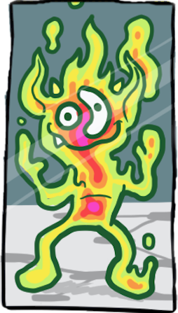 Apache TinkerPop’s Gremlin-Groovy implements Gremlin within the Apache Groovy language. As a JVM-based language variant, Gremlin-Groovy is backed by Gremlin-Java constructs. Moreover, given its scripting nature, Gremlin-Groovy serves as the language of Gremlin Console.
|
Warning
|
In Groovy, as, in, and not are reserved words. Gremlin-Groovy does not allow these steps to be called
statically from the anonymous traversal . For instance:
g.V().as('a').in().as('b').where(.not(.as('a').out().as('b')))
|
Gremlin-Python
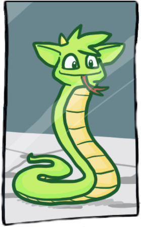 Apache TinkerPop’s Gremlin-Python implements Gremlin within
the Python language and can be used on any Python virtual machine including the popular
CPython machine. Python’s syntax has the same constructs as Java including
"dot notation" for function chaining (a.b.c), round bracket function arguments (a(b,c)), and support for global
namespaces (a(b()) vs a(__.b())). As such, anyone familiar with Gremlin-Java will immediately be able to work
with Gremlin-Python. Moreover, there are a few added constructs to Gremlin-Python that make traversals a bit more succinct.
|
Warning
|
In Python, and, as, from, global, in, is, not, and or are reserved words. Gremlin-Python simply
postfixes g.V().as('a').in_().as_('b').select('a','b').
|
To install Gremlin-Python, use Python’s pip package manager.
pip install gremlinpythonGremlin-Python users will typically make use of the following classes.
>>> from gremlin_python import statics
>>> from gremlin_python.structure.graph import Graph
>>> from gremlin_python.process.graph_traversal import __
>>> from gremlin_python.process.strategies import *
>>> from gremlin_python.driver.driver_remote_connection import DriverRemoteConnectionIn Gremlin-Python there exists GraphTraversalSource, GraphTraversal, and __ which mirror the respective classes in Gremlin-Java.
The GraphTraversalSource requires a driver in order to communicate with GremlinServer (or any
RemoteConnection-enabled server). The gremlin_python.driver.driver_remote_connection
is provided with Apache TinkerPop’s Gremlin-Python distribution.
|
Important
|
For developers wishing to provide another driver implementation, be sure to extend RemoteConnection in
gremlin_python.driver so it can then be used by Gremlin-Python’s GraphTraversal.
|
When Gremlin Server is running, Gremlin-Python can communicate with Gremlin Server. The conf/gremlin-server-modern-py.yaml
configuration maintains a GremlinJythonScriptEngine as well as the appropriate serializers for communicating Bytecode.
|
Important
|
Gremlin-Python is not compatible with GraphSON 1.0. |
$ bin/gremlin-server.sh install org.apache.tinkerpop gremlin-python 3.3.4
$ bin/gremlin-server.sh conf/gremlin-server-modern-py.yaml
[INFO] GremlinServer -
\,,,/
(o o)
---oOOo-(3)-oOOo---
[INFO] GremlinServer - Configuring Gremlin Server from conf/gremlin-server-modern-py.yaml
[INFO] MetricManager - Configured Metrics Slf4jReporter configured with interval=180000ms and loggerName=org.apache.tinkerpop.gremlin.server.Settings$Slf4jReporterMetrics
[INFO] GraphManager - Graph [graph] was successfully configured via [conf/tinkergraph-empty.properties].
[INFO] ServerGremlinExecutor - Initialized Gremlin thread pool. Threads in pool named with pattern gremlin-*
[INFO] Logger - 51 attributes loaded from 40 stream(s) in 16ms, 51 saved, 614 ignored: ["Ant-Version", "Archiver-Version", "Bnd-LastModified", "Boot-Class-Path", "Build-Jdk", "Build-Version", "Built-By", "Bundle-ClassPath", "Bundle-Description", "Bundle-DocURL", "Bundle-License", "Bundle-ManifestVersion", "Bundle-Name", "Bundle-RequiredExecutionEnvironment", "Bundle-SymbolicName", "Bundle-Vendor", "Bundle-Version", "Can-Redefine-Classes", "Created-By", "DynamicImport-Package", "Eclipse-BuddyPolicy", "Export-Package", "Extension-Name", "Extension-name", "Fragment-Host", "Ignore-Package", "Implementation-Build", "Implementation-Title", "Implementation-URL", "Implementation-Vendor", "Implementation-Vendor-Id", "Implementation-Version", "Import-Package", "Include-Resource", "JCabi-Build", "JCabi-Date", "JCabi-Version", "Main-Class", "Main-class", "Manifest-Version", "Originally-Created-By", "Private-Package", "Require-Capability", "Specification-Title", "Specification-Vendor", "Specification-Version", "Tool", "X-Compile-Source-JDK", "X-Compile-Target-JDK", "hash", "version"]
[INFO] ScriptEngines - Loaded gremlin-jython ScriptEngine
[INFO] ScriptEngines - Loaded gremlin-python ScriptEngine
[INFO] ScriptEngines - Loaded gremlin-groovy ScriptEngine
[INFO] GremlinExecutor - Initialized gremlin-groovy ScriptEngine with scripts/generate-modern.groovy
[INFO] ServerGremlinExecutor - Initialized GremlinExecutor and configured ScriptEngines.
[INFO] ServerGremlinExecutor - A GraphTraversalSource is now bound to [g] with graphtraversalsource[tinkergraph[vertices:0 edges:0], standard]
[INFO] OpLoader - Adding the standard OpProcessor.
[INFO] OpLoader - Adding the session OpProcessor.
[INFO] OpLoader - Adding the traversal OpProcessor.
[INFO] TraversalOpProcessor - Initialized cache for TraversalOpProcessor with size 1000 and expiration time of 600000 ms
[INFO] GremlinServer - Executing start up LifeCycleHook
[INFO] Logger$info - Loading 'modern' graph data.
[INFO] AbstractChannelizer - Configured application/vnd.gremlin-v3.0+gryo with org.apache.tinkerpop.gremlin.driver.ser.GryoMessageSerializerV3d0
[INFO] AbstractChannelizer - Configured application/vnd.gremlin-v3.0+gryo-stringd with org.apache.tinkerpop.gremlin.driver.ser.GryoMessageSerializerV3d0
[INFO] AbstractChannelizer - Configured application/vnd.gremlin-v3.0+json with org.apache.tinkerpop.gremlin.driver.ser.GraphSONMessageSerializerV3d0
[INFO] AbstractChannelizer - Configured application/json with org.apache.tinkerpop.gremlin.driver.ser.GraphSONMessageSerializerV3d0
[INFO] GremlinServer$1 - Gremlin Server configured with worker thread pool of 1, gremlin pool of 4 and boss thread pool of 1.
[INFO] GremlinServer$1 - Channel started at port 8182.|
Note
|
The command to use install need only be executed once to gather gremlin-python dependencies into Gremlin Servers'
path. Future starts of Gremlin Server will not require that command.
|
Within the CPython console, an empty Graph is created and a traversal source is spawned with RemoteStrategy.
>>> graph = Graph()
>>> g = graph.traversal().withRemote(DriverRemoteConnection('ws://localhost:8182/gremlin','g'))When a traversal from the GraphTraversalSource is iterated, the traversal’s Bytecode is sent over the wire
via the registered RemoteConnection. The bytecode is used to construct the equivalent traversal at the remote traversal source.
Moreover, typically the bytecode is analyzed to determine which language the bytecode should be translated to. If the traversal
does not contain lambdas, the remote location (e.g. Gremlin Server) will typically
use Gremlin-Java. If it has lambdas written in Groovy, it will use Gremlin-Groovy (e.g. GremlinGroovyScriptEngine).
Likewise, if it has lambdas represented in Python, it will use Gremlin-Python (e.g. GremlinJythonScriptEngine).
|
Important
|
Gremlin-Python’s Traversal class supports the standard Gremlin methods such as next(), nextTraverser(),
toSet(), toList(), etc. Such "terminal" methods trigger the evaluation of the traversal.
|
RemoteConnection Submission
There are various ways to submit a traversal to a RemoteConnection. Just as in Gremlin-Java, there are various
"terminal/action methods" off of Traversal.
-
Traversal.next() -
Traversal.nextTraverser() -
Traversal.toList() -
Traversal.toSet() -
Traversal.iterate()
Gremlin-Python Sugar
Python supports meta-programming and operator overloading. There are three uses of these techniques in Gremlin-Python that makes traversals a bit more concise.
>>> g.V().both()[1:3].toList()
[v[2], v[4]]
>>> g.V().both()[1].toList()
[v[2]]
>>> g.V().both().name.toList()
[lop, lop, lop, vadas, josh, josh, josh, marko, marko, marko, peter, ripple]g.V().both()[1:3].toList()
g.V().both()[1].toList()
g.V().both().name.toList()Static Enums and Methods
Gremlin has various tokens (e.g. T, P, Order, Operator, etc.) that are represented in Gremlin-Python as Python Enums.
>>> from gremlin_python.process.traversal import T
>>> from gremlin_python.process.traversal import Order
>>> from gremlin_python.process.traversal import Cardinality
>>> from gremlin_python.process.traversal import Column
>>> from gremlin_python.process.traversal import Direction
>>> from gremlin_python.process.traversal import Operator
>>> from gremlin_python.process.traversal import P
>>> from gremlin_python.process.traversal import Pop
>>> from gremlin_python.process.traversal import Scope
>>> from gremlin_python.process.traversal import BarrierThese can be used analogously to how they are used in Gremlin-Java.
>>> g.V().hasLabel('person').has('age',P.gt(30)).order().by('age',Order.desc).toList()
[v[6], v[4]]g.V().hasLabel('person').has('age',P.gt(30)).order().by('age',Order.desc).toList()Moreover, by importing the statics of Gremlin-Python, the class prefixes can be omitted.
>>> statics.load_statics(globals())With statics loaded its possible to represent the above traversal as below.
>>> g.V().hasLabel('person').has('age',gt(30)).order().by('age',desc).toList()
[v[6], v[4]]g.V().hasLabel('person').has('age',gt(30)).order().by('age',desc).toList()Finally, statics includes all the -methods and thus, anonymous traversals like .out() can be expressed as below.
That is, without the __.-prefix.
>>> g.V().repeat(out()).times(2).name.fold().toList()
[[ripple, lop]]g.V().repeat(out()).times(2).name.fold().toList()Bindings
When a traversal bytecode is sent over a RemoteConnection (e.g. Gremlin Server), it will be translated, compiled, and then executed.
If the same traversal is sent again, translation and compilation can be skipped as the previously compiled version should be cached.
Many traversals are unique up to some parameterization. For instance, g.V(1).out('created').name is considered different
from g.V(4).out('created').name' as they have different script "string" representations. However, g.V(x).out('created').name with bindings of {x : 1} and
{x : 4} are considered the same. If a traversal is going to be executed repeatedly, but with different parameters, then bindings should be used.
In Gremlin-Python, bindings are 2-tuples and used as follows.
>>> g.V(('id',1)).out('created').name.toList()
[lop]
>>> g.V(('id',4)).out('created').name.toList()
[ripple, lop]g.V(('id',('id',1))).out('created').name.toList()
g.V(('id',('id',4))).out('created').name.toList()Traversal Strategies
In order to add and remove traversal strategies from a traversal source, Gremlin-Python has a
TraversalStrategy class along with a collection of subclasses that mirror the standard Gremlin-Java strategies.
>>> g = g.withStrategies(SubgraphStrategy(vertices=hasLabel('person'),edges=has('weight',gt(0.5))))
null
>>> g.V().name.toList()
[marko, vadas, josh, peter]
>>> g.V().outE().valueMap(True).toList()
[[weight:1.0, label:knows, id:8]]
>>> g = g.withoutStrategies(SubgraphStrategy)
null
>>> g.V().name.toList()
[marko, vadas, lop, josh, ripple, peter]
>>> g.V().outE().valueMap(True).toList()
[[weight:0.4, label:created, id:9], [weight:0.5, label:knows, id:7], [weight:1.0, label:knows, id:8], [weight:1.0, label:created, id:10], [weight:0.4, label:created, id:11], [weight:0.2, label:created, id:12]]
>>> g = g.withComputer(workers=2,vertices=has('name','marko'))
null
>>> g.V().name.toList()
[marko]
>>> g.V().outE().valueMap(True).toList()
[[weight:0.4, id:9, label:created], [weight:0.5, id:7, label:knows], [weight:1.0, id:8, label:knows]]g = g.withStrategies(SubgraphStrategy(vertices=hasLabel('person'),edges=has('weight',gt(0.5))))
g.V().name.toList()
g.V().outE().valueMap(True).toList()
g = g.withoutStrategies(SubgraphStrategy)
g.V().name.toList()
g.V().outE().valueMap(True).toList()
g = g.withComputer(workers=2,vertices=has('name','marko'))
g.V().name.toList()
g.V().outE().valueMap(True).toList()|
Note
|
Many of the TraversalStrategy classes in Gremlin-Python are proxies to the respective strategy on
Apache TinkerPop’s JVM-based Gremlin traversal machine. As such, their apply(Traversal) method does nothing. However,
the strategy is encoded in the Gremlin-Python bytecode and transmitted to the Gremlin traversal machine for
re-construction machine-side.
|
The Lambda Solution
Supporting anonymous functions across languages is difficult as
most languages do not support lambda introspection and thus, code analysis. In Gremlin-Python,
a Python lambda should be represented as a zero-arg callable
that returns a string representation of a lambda. The default lambda language is gremlin-python and can be changed via
gremlin_python.statics.default_lambda_language. When the lambda is represented in Bytecode its language is encoded
such that the remote connection host can infer which translator and ultimate execution engine to use.
>>> g.V().out().map(lambda: "lambda x: len(x.get().value('name'))").sum().toList() #(1)
[24]
>>> statics.default_lambda_language #(2)
gremlin-python
>>> g.V().out().map(lambda: ("it.get().value('name').length()", "gremlin-groovy")).sum().toList() #(3)
[24]
>>> statics.default_lambda_language = 'gremlin-groovy' #(4)
null
>>> g.V().out().map(lambda: "it.get().value('name').length()").sum().toList() #(5)
[24]
>>> g.V().out().map(lambda: ("lambda x: len(x.get().value('name'))", "gremlin-python")).sum().toList() #(6)
[24]
>>> statics.default_lambda_language = 'gremlin-python' #(7)
null
>>> g.V().out().map(lambda: "x: len(x.get().value('name'))").sum().toList() #(8)
[24]g.V().out().map(lambda: "lambda x: len(x.get().value('name'))").sum().toList() #(1)
statics.default_lambda_language #(2)
g.V().out().map(lambda: ("it.get().value('name').length()", "gremlin-groovy")).sum().toList() #(3)
statics.default_lambda_language = 'gremlin-groovy' #(4)
g.V().out().map(lambda: "it.get().value('name').length()").sum().toList() #(5)
g.V().out().map(lambda: ("lambda x: len(x.get().value('name'))", "gremlin-python")).sum().toList() #(6)
statics.default_lambda_language = 'gremlin-python' #(7)
g.V().out().map(lambda: "x: len(x.get().value('name'))").sum().toList() //8-
A zero-arg lambda yields a string representation of a lambda in Gremlin-Python.
-
The default lambda language is currently Gremlin-Python.
-
A zero-arg lambda yields a 2-tuple where the second element is the language of the lambda (Gremlin-Groovy).
-
The default lambda language can be statically changed.
-
A zero-arg lambda yields a string representation of a closure in Gremlin-Groovy.
-
A zero-arg lambda yields a 2-tuple where the second element is the language of the lambda (Gremlin-Python).
-
The default lambda language is changed back to Gremlin-Python.
-
If the
lambda-prefix is not provided, then it is appended automatically in order to give a more natural look to the expression.
Limitations
-
Traversals that return a
Setwill be coerced to aListin Python so that traversals return consistent results within a collection across different languages. In the case of Python, number equality is different from JVM languages which produces differentSetresults when those types are in use. If aSetis needed then convertListresults toSetmanually.
Gremlin.Net
Apache TinkerPop’s Gremlin.Net implements Gremlin within the C# language. It targets .NET Standard and can therefore be used on different operating systems and with different .NET frameworks, such as .NET Framework and .NET Core. Since the C# syntax is very similar to that of Java, it should be very easy to switch between Gremlin-Java and Gremlin.Net. The only major syntactical difference is that all method names in Gremlin.Net use PascalCase as opposed to camelCase in Gremlin-Java in order to comply with .NET conventions.
nuget install Gremlin.NetIn Gremlin.Net there exists GraphTraversalSource, GraphTraversal, and __ which mirror the respective classes
in Gremlin-Java. The GraphTraversalSource requires a driver in order to communicate with GremlinServer (or any
RemoteConnection-enabled server).
The Gremlin.Net.Driver.Remote.DriverRemoteConnection is provided as part of Apache TinkerPop’s Gremlin.Net.
|
Important
|
For developers wishing to provide another driver implementation, be sure to implement IRemoteConnection in
Gremlin.Net.Process.Remote so it can then be used by Gremlin.Net’s GraphTraversal.
|
When Gremlin Server is running, Gremlin.Net can communicate with Gremlin Server by sending traversals serialized as Bytecode.
|
Important
|
Gremlin.Net is not compatible with GraphSON 1.0. |
A traversal source can be spawned with RemoteStrategy from an empty Graph.
var graph = new Graph();
var g = graph.Traversal().WithRemote(new DriverRemoteConnection(new GremlinClient(new GremlinServer("localhost", 8182))));When a traversal from the GraphTraversalSource is iterated, the traversal’s Bytecode is sent over the wire via the registered
IRemoteConnection. The bytecode is used to construct the equivalent traversal at the remote traversal source.
Moreover, typically the bytecode is analyzed to determine which language the bytecode should be translated to. If the traversal
does not contain lambdas, the remote location (e.g. Gremlin Server) will typically
use Gremlin-Java. If it has lambdas written in Groovy, it will use Gremlin-Groovy (e.g. GremlinGroovyScriptEngine).
Likewise, if it has lambdas represented in Python, it will use Gremlin-Python (e.g. GremlinJythonScriptEngine).
|
Important
|
Gremlin.Net’s ITraversal interface supports the standard Gremlin methods such as Next(), NextTraverser(), ToSet(),
ToList(), etc. Such "terminal" methods trigger the evaluation of the traversal.
|
RemoteConnection Submission
Very similar to Gremlin-Python and Gremlin-Java, there are various ways to submit a traversal to a IRemoteConnection using
terminal/action methods off of ITraversal.
-
ITraversal.Next() -
ITraversal.NextTraverser() -
ITraversal.ToList() -
ITraversal.ToSet() -
ITraversal.Iterate()
Static Enums and Methods
Gremlin has various tokens (e.g. T, P, Order, Operator, etc.) that are represented in Gremlin.Net as classes.
These can be used analogously to how they are used in Gremlin-Java.
g.V().HasLabel("person").Has("age",P.Gt(30)).Order().By("age",Order.desc).ToList()Moreover, the class prefixes can be omitted with a using static.
using static Gremlin.Net.Process.Traversal.P;
using static Gremlin.Net.Process.Traversal.Order;Then it is possible to represent the above traversal as below.
g.V().HasLabel("person").Has("age",Gt(30)).Order().By("age",desc).ToList()Finally, with using static , anonymous traversals like .Out() can be expressed as below. That is, without the __.-prefix.
g.V().Repeat(Out()).Times(2).Values("name").Fold().ToList()Bindings
When a traversal bytecode is sent over a IRemoteConnection (e.g. Gremlin Server), it will be translated, compiled,
and then executed. If the same traversal is sent again, translation and compilation can be skipped as the previously
compiled version should be cached. Many traversals are unique up to some parameterization. For instance,
g.V(1).Out("created").Values("name") is considered different from g.V(4).Out("created").Values("Name")
as they have different script "string" representations. However, g.V(x).Out("created").Values("name") with bindings of
{x : 1} and {x : 4} are considered the same. If a traversal is going to be executed repeatedly, but with different
parameters, then bindings should be used. In Gremlin.Net, bindings are objects that can be created as follows.
var b = new Bindings();
g.V(b.Of("id", 1)).Out("created").Values("name").toList()
g.V(b.Of("id", 4)).Out("created").Values("name").toList()Traversal Strategies
In order to add and remove traversal strategies from a traversal source, Gremlin.Net has an AbstractTraversalStrategy
class along with a collection of subclasses that mirror the standard Gremlin-Java strategies.
g = g.WithStrategies(new SubgraphStrategy(vertexCriterion: HasLabel("person"),
edgeCriterion: Has("weight", Gt(0.5))));
var names = g.V().Values("name").ToList(); // names: [marko, vadas, josh, peter]
g = g.WithoutStrategies(typeof(SubgraphStrategy));
names = g.V().Values("name").ToList(); // names: [marko, vadas, lop, josh, ripple, peter]
var edgeValueMaps = g.V().OutE().ValueMap(true).ToList();
// edgeValueMaps: [[label:created, id:9, weight:0.4], [label:knows, id:7, weight:0.5], [label:knows, id:8, weight:1.0],
// [label:created, id:10, weight:1.0], [label:created, id:11, weight:0.4], [label:created, id:12, weight:0.2]]
g = g.WithComputer(workers: 2, vertices: Has("name", "marko"));
names = g.V().Values("name").ToList(); // names: [marko]
edgeValueMaps = g.V().OutE().ValueMap(true).ToList();
// edgeValueMaps: [[label:created, id:9, weight:0.4], [label:knows, id:7, weight:0.5], [label:knows, id:8, weight:1.0]]|
Note
|
Many of the TraversalStrategy classes in Gremlin.Net are proxies to the respective strategy on Apache TinkerPop’s
JVM-based Gremlin traversal machine. As such, their Apply(ITraversal) method does nothing. However, the strategy is
encoded in the Gremlin.Net bytecode and transmitted to the Gremlin traversal machine for re-construction machine-side.
|
The Lambda Solution
Supporting anonymous functions across languages is difficult as
most languages do not support lambda introspection and thus, code analysis. While Gremlin.Net doesn’t support C# lambdas, it
is still able to represent lambdas in other languages. When the lambda is represented in Bytecode its language is encoded
such that the remote connection host can infer which translator and ultimate execution engine to use.
g.V().Out().Map<int>(Lambda.Groovy("it.get().value('name').length()")).Sum<int>().ToList(); //1
g.V().Out().Map<int>(Lambda.Python("lambda x: len(x.get().value('name'))")).Sum<int>().ToList(); //2-
Lambda.Groovy()can be used to create a Groovy lambda. -
Lambda.Python()can be used to create a Python lambda.
The ILambda interface returned by these two methods inherits interfaces like IFunction and IPredicate that mirror
their Java counterparts which makes it possible to use lambdas with Gremlin.Net for the same steps as in Gremlin-Java.
Gremlin-JavaScript
Apache TinkerPop’s Gremlin-JavaScript implements Gremlin within the JavaScript language. It targets Node.js runtime and can be used on different operating systems on any Node.js 6 or above. Since the JavaScript naming conventions are very similar to that of Java, it should be very easy to switch between Gremlin-Java and Gremlin-JavaScript.
npm install gremlinThe Gremlin-JavaScript provides GraphTraversalSource, GraphTraversal, and __ which mirror the respective classes
in Gremlin-Java. The GraphTraversalSource requires a RemoteConnection implementation in order to communicate with
GremlinServer.
const gremlin = require('gremlin');
const Graph = gremlin.structure.Graph;
const DriverRemoteConnection = gremlin.driver.DriverRemoteConnection;A traversal source can be spawned with RemoteStrategy from an empty Graph.
const graph = new Graph();
const g = graph.traversal().withRemote(new DriverRemoteConnection('ws://localhost:8182/gremlin'));Gremlin-JavaScript supports plain text SASL authentication, you can set it on the connection options.
const authenticator = new gremlin.driver.auth.PlainTextSaslAuthenticator('myuser', 'mypassword');
const g = graph.traversal().withRemote(new DriverRemoteConnection('ws://localhost:8182/gremlin', { authenticator });When a traversal from the GraphTraversalSource is iterated, the traversal’s Bytecode is sent over the wire via
the registered RemoteConnection. The bytecode is used to construct the equivalent traversal at the remote
traversal source.
Since Gremlin-JavaScript currently doesn’t support lambda expressions, all traversals can be translated to Gremlin-Java on the remote location (e.g. Gremlin Server).
|
Warning
|
In Javascript, from and in are reserved words. Gremlin-Javascript simply postfixes g.V().in().out()
|
|
Important
|
Gremlin-JavaScript’s Traversal base class supports the standard Gremlin methods such as next() and
toList() Such "terminal" methods trigger the evaluation of the traversal.
|
RemoteConnection Submission
In a similar way as in other GLVs, there are various ways to submit a traversal to a
RemoteConnection using terminal/action methods off of Traversal. Given that I/O operations in Node.js are
asynchronous by default, this terminal methods return a Promise.
-
Traversal.toList(): Returns aPromisewith anArrayas result value. -
Traversal.next(): Returns aPromisewith a{ value, done }tuple as result value, according to the async iterator proposal. -
Traversal.iterate(): Returns aPromisewithout a value.
For example:
g.V().hasLabel('person').values('name').toList()
.then(names => console.log(names));You can await the promises if you are using async functions.
const names = await g.V().hasLabel('person').values('name').toList();
console.log(names);Static Enums and Methods
Gremlin has various tokens (e.g. t, P, order, direction, etc.) that are represented in Gremlin-JavaScript as
objects.
g.V().hasLabel('person').has('age', P.gt(30)).order().by('age', order.desc).toList()These objects must be required manually from the process namespace:
const gremlin = require('gremlin');
const P = gremlin.process.P;Finally, using static anonymous traversals like .out() can be expressed as below:
const gremlin = require('gremlin');
const __ = gremlin.process.statics;
g.V().repeat(__.out()).times(2).values("name").fold().toList();Conclusion
The world that we know, you and me, is but a subset of the world
that Gremlin has weaved within The TinkerPop. Gremlin has constructed a fully connected graph and only the subset that
makes logical sense to our traversing thoughts is the fragment we have come to know and have come to see one another
within. But there are many more out there, within other webs of logics unfathomed. From any thought, every other
thought, we come to realize that which is — The TinkerPop.
Acknowledgements
 YourKit supports the TinkerPop open source project with its full-featured
Java Profiler. YourKit, LLC is the creator of innovative and intelligent tools for profiling Java and .NET
applications. YourKit’s leading software products: YourKit Java Profiler
and YourKit .NET Profiler
YourKit supports the TinkerPop open source project with its full-featured
Java Profiler. YourKit, LLC is the creator of innovative and intelligent tools for profiling Java and .NET
applications. YourKit’s leading software products: YourKit Java Profiler
and YourKit .NET Profiler
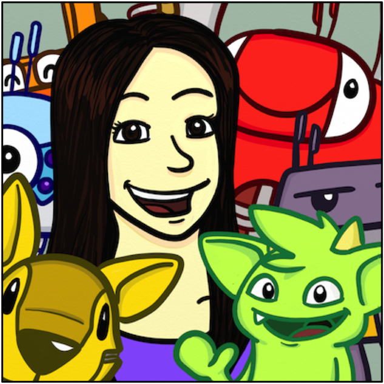 Ketrina Yim — Designing Gremlin and his friends for TinkerPop was one of my first major projects as a freelancer, and it’s delightful to see them on the Web and all over the documentation! Drawing and tweaking the characters over time is like watching them grow up. They’ve gone from sketches on paper to full-color logos, and from logos to living characters that cheerfully greet visitors to the TinkerPop website. And it’s been a great time all throughout!
…in the beginning.